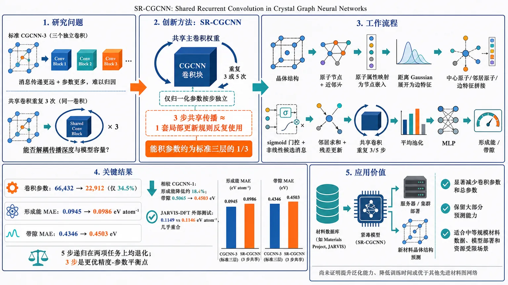
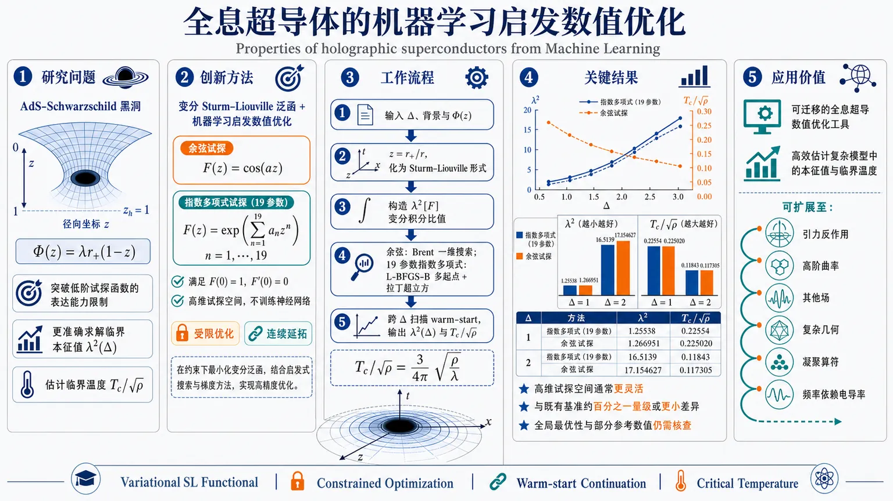
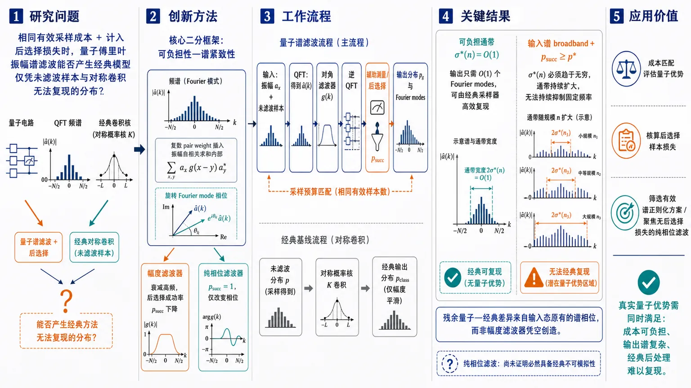
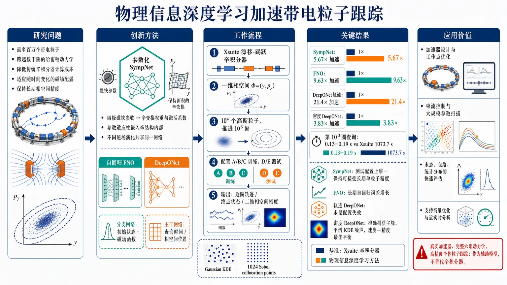

AI × Science 文献日报 2026/08/17
聚焦 AI × 物理 / 化学 / 材料交叉方向，自动过滤明显偏题的医学、教育与社会科学内容，并按主题重新排版，便于快速深读。
AI | 物理 | 化学 | 材料 | 交叉学科 | arXiv | 预印本追踪
原始候选 208 篇中，已剔除 0 篇明显偏离主线的内容，并从剩余 208 篇主线相关文献中精选 60 篇进入日报页，优先保留 AI × 物理 / 化学 / 材料交叉与关键计算方法工作。
核心关注（ML × ferro / 凝聚态）
8 篇今天的主线是把“深度”从盲目堆层改成可控复用：SR-CGCNN 用共享递归卷积替换逐层独立参数，适合在 NbOI2、CrI3、CrSBr、BaTiO3 这类需要 DFT+U 标注的晶体属性任务上拉开数据效率。ArGEnT 把算子学习推进到任意几何网格，和相场/微磁学/电-弹耦合问题直接对接；Kronecker 预条件 PINN 则把多物理强耦合下的 NTK 病态问题拆开处理，比单纯调 loss 权重更硬。NiPS3 近乎无孪晶单晶的磁化、输运和热学结果说明，ML 端若不显式编码孪晶、各向异性和低维磁涨落，就很难把“理想晶胞”映射到真实本征磁相；这些结果也把 equivariant GNN、MACE、NEP 与连续场 PINN 连接成一条可落地的数据—模型闭环。
-
01共享递归卷积的晶体图神经网络SR-CGCNN: Shared Recurrent Convolution in Crystal Graph Neural Networks for Materials Property Prediction
📄 摘要：晶体图神经网络通过在局域原子环境上传播信息来预测材料性质。传统的晶体图卷积神经网络（CGCNN）通过堆叠彼此独立参数化的卷积层来增加传播深度。消息传递深度与参数数量之间的这种耦合引出了一个简单问题：重复应用同一个已学习的局部更新，能否恢复深层 CGCNN 的大部分收益？我们通过引入共享递归 CGCNN（SR-CGCNN）来回答这一问题，其中主要的晶体图卷积权重在递归消息传递步之间共享。图的构建、池化操作和预测头保持不变，从而允许与标准 CGCNN 基线进行受控比较。在基于 Materials Project 的形成能和带隙数据集上，三步 SR-CGCNN 以仅占其可训练卷积参数 34.5% 的条件下，达到接近标准三层 CGCNN 的准确率。形成能测试集的平均绝对误差从 0.0945 变为 0.0986 eV/atom，而带隙误差从 0.4346 变为 0.4503 eV。这些结果表明，重复的共享消息传递可以对堆叠式 CGCNN 深度提供一种参数高效的近似，并为晶体图卷积提供一种紧凑的递归解释。
💡 亮点：该工作把深层 CGCNN 的“加深网络”改写为“反复调用同一卷积块”，核心创新是用共享递归结构降低参数量并保留传播深度。方法上仍基于局域原子环境的消息传递，但把每层独立参数改成循环更新，以检验深度与容量是否可解耦。摘要未给出具体基准数值，但它直接指向更省参、更易训练的晶体性质预测框架。
📐 方法要点：方法上，摘要目前只能确认：图神经网络结构—性质建模。需要回到原文核对数据来源、标签定义、模型架构、物理约束和验证集，不能把题名直接等同于可迁移算法。若要接入团队的 ML 势或 Hamiltonian 流程，应先确认它是否同时学习能量、力、应力、自旋、极化或电子结构，以及是否报告跨材料/跨温度外推。还需核对原文的训练数据规模、损失函数、边界条件和误差分解，才能判断其是否适合团队的材料模拟任务。
🔗 相关工作关联：它延续了 CGCNN/MEGNet 的图卷积路线，但把“堆层数”换成“循环使用同一更新”，更像循环神经网络在图上的展开；与 SchNet、M3GNet、CHGNet、MACE 这类更强的原子环境编码相比，它牺牲部分几何归纳偏置，换来更低参数和更稳的深度控制。对团队里做晶体图网络、磁交换拟合和 DFT+U 数据清洗的同事，这种权重共享很适合在低样本磁性/铁电体系里测试泛化。
💡 对你方向的启示：对《共享递归卷积的晶体图神经网络》的启示是先做可证伪的对接：从一个已有材料体系和小规模 DFT 基准开始，明确输入、目标、基线和外推测试，再决定是否接入铁电/磁性、缺陷或载流子动力学工作。具体可先把该文的表示或损失函数在 HfO₂、二维滑移铁电、CrI₃/CrSBr、SiC/GaN 缺陷或卤化物钙钛矿上做小规模复现；若没有直接交叉，应保留为方法参考而非强行迁移。第一步可以选取团队已有的 HfO₂、二维磁体、半导体缺陷或钙钛矿数据做小样本试验，再决定是否扩大到生产级计算。
-
02量子生成模型谱滤波的经典极限Classical Limits of Spectral Filtering in Quantum Generative Models
📄 摘要：谱滤波已被提出作为量子生成模型中实现正则化的一条路径：量子傅里叶变换揭示量子线路 Born 机的振幅谱，而对角滤波器抑制与有限样本噪声相关的高频；这一操作的经典对应物似乎需要操纵一个指数长度的振幅向量。我们考察这种相干操作是否会产生任何经典地对未滤波模型样本进行后处理所无法匹配的结果。在与匹配采样成本下的对称概率核卷积进行比较时，该成本考虑了衰减带来的后选择开销，我们推导出二者之间差距消失的充要条件。幅度型（衰减型）滤波器遵循一种二分性：在固定的可负担阈值下，滤波后的输出要么是一个具有高效经典采样器的常数大小傅里叶对象，要么通带必须拓宽，直到没有任何固定频率被衰减，从而滤波器不再具有平滑作用。在这两种情况下，滤波器都不会产生量子-经典分离。任何保留下来的分离都继承自输入态的谱相位。对已训练线路 Born 机的数值实验确认了这一分类，并表明起决定作用的相位对 Born 规则训练损失不可见，且由初始化决定。在对角族内，纯相位滤波器仍是唯一不受这些约束限制的谱操作。
💡 亮点：核心问题不是新模型，而是量子谱滤波到底能否超出经典样本后处理的能力边界。作者把量子傅里叶变换加对角滤波拆解成可比较的经典对照，检验其是否只是对有限样本噪声的另一种实现。该文更偏量子信息理论，对凝聚态材料机理没有直接交叉。
📐 方法要点：方法上，摘要目前只能确认：论文题目和摘要中可确认的方法。需要回到原文核对数据来源、标签定义、模型架构、物理约束和验证集，不能把题名直接等同于可迁移算法。若要接入团队的 ML 势或 Hamiltonian 流程，应先确认它是否同时学习能量、力、应力、自旋、极化或电子结构，以及是否报告跨材料/跨温度外推。还需核对原文的训练数据规模、损失函数、边界条件和误差分解，才能判断其是否适合团队的材料模拟任务。
🔗 相关工作关联：它和量子生成模型、QFT-based amplitude encoding、classical post-processing、Fourier feature regularization 都有关，也和经典 GAN/flow model 的频域平滑类似。对团队里做逆问题、散射图样重建、STM/PXRD 反演的同事，这篇更像是在提醒：只要滤波是对角的，很多“量子味”操作可被经典等效。
💡 对你方向的启示：对《量子生成模型谱滤波的经典极限》的启示是先做可证伪的对接：从一个已有材料体系和小规模 DFT 基准开始，明确输入、目标、基线和外推测试，再决定是否接入铁电/磁性、缺陷或载流子动力学工作。具体可先把该文的表示或损失函数在 HfO₂、二维滑移铁电、CrI₃/CrSBr、SiC/GaN 缺陷或卤化物钙钛矿上做小规模复现；若没有直接交叉，应保留为方法参考而非强行迁移。第一步可以选取团队已有的 HfO₂、二维磁体、半导体缺陷或钙钛矿数据做小样本试验，再决定是否扩大到生产级计算。
-
03物理约束深度学习粒子跟踪Particle tracking with physics-informed deep learning methods
📄 摘要：模拟带电粒子在电磁场中的运动对于粒子加速器的设计和优化至关重要。传统工具依赖辛积分格式，这些格式精度很高，但计算成本昂贵。因此，在中高维参数空间中的优化以及数万到数百万粒子的模拟可能在计算上难以承受。本文探索采用现代基于机器学习的工具，特别是SympNet和DeepONet，以实现快速粒子模拟的可能性。一个主要创新是修改传统SympNet架构，使其能够学习参数化哈密顿动力学。这些模型在一个环形加速器玩具设置上进行训练和测试，该设置包含两种不同类型且场强可变的四极磁铁。所有模型的推理速度都快于辛积分器，但代价是精度显著降低。SympNet实现取得了最低的均方误差。此外，本文还采用DeepONet预测由单粒子模拟导出的粒子密度演化。
💡 亮点：该文把传统高精度辛积分问题转向物理约束深度学习，重点是加速大量带电粒子的轨道追踪。方法上强调在电磁场中保留守恒/几何结构，以便在高维设计空间里做快速优化。它对凝聚态材料计算没有直接对应，但在长时间尺度动力学替代模型上有方法类比。
📐 方法要点：方法上，这篇工作可归入磁性机器学习势、自旋 Hamiltonian、自旋—晶格动力学和非共线磁结构。从摘要能确认的线索包括：有效哈密顿量或机器学习哈密顿量，以及磁性、自旋以及自旋—晶格耦合对应的结构或物理量。若迁移到团队流程，应采用“训练集同时覆盖原子位移和自旋构型，显式标注交换、各向异性、DMI 或自旋力；用自旋 MD/MC 与 DFT 自旋能差验证温度、应变和缺陷下的磁序稳定性”的分层验证，而不是只比较单点能量或单一回归误差。还需核对原文的训练数据规模、损失函数、边界条件和误差分解，才能判断其是否适合团队的材料模拟任务。
🔗 相关工作关联：它与五位研究人员已有工作的直接连接是：磁性机器学习势、自旋 Hamiltonian、自旋—晶格动力学和非共线磁结构已经出现在团队的方向画像中，可对应到CrI₃/CrSBr 等范德华磁体、反铁磁/交替磁材料、磁性氧化物。与传统只做 0 K formation energy/静态势垒的工作相比，这里更应关注磁性、自旋以及自旋—晶格耦合在温度、缺陷、应变或外场下的变化；摘要没有给出的模型细节不作延伸判断。这种联系应通过同一材料体系上的独立基准和跨分布测试确认，不能仅凭方法名称或期刊来源下结论。
💡 对你方向的启示：对当前研究最具体的启示不是泛泛地“使用 ML”，而是把该文的磁性机器学习势、自旋 Hamiltonian、自旋—晶格动力学和非共线磁结构嵌入现有材料模拟链：先在CrI₃/CrSBr 等范德华磁体、反铁磁/交替磁材料、磁性氧化物中选择一个已有 DFT 数据基础的体系，按“训练集同时覆盖原子位移和自旋构型，显式标注交换、各向异性、DMI 或自旋力；用自旋 MD/MC 与 DFT 自旋能差验证温度、应变和缺陷下的磁序稳定性”补充训练/验证集，再比较《物理约束深度学习粒子跟踪》对应模型对相稳定、极化/磁序、缺陷或动力学指标的改进。若结果只在训练分布内有效，应通过跨温度、跨应变、跨缺陷浓度和跨超胞测试检查可迁移性。第一步可以选取团队已有的 HfO₂、二维磁体、半导体缺陷或钙钛矿数据做小样本试验，再决定是否扩大到生产级计算。
-
04机器学习求解全息超导性质Properties of holographic superconductors from Machine Learning
📄 摘要：我们使用受机器学习启发的现代优化技术研究全息超导体。临界温度通过最小化本征值 λ² 的变分泛函获得，并采用两个互补的试探函数：一个简单的余弦拟设 F(z)=cos(a z)，以及一个灵活的指数多项式 F(z)=exp(∑ₙ₌₂N aₙ zⁿ⁾，二者都自动满足标准边界条件。对于余弦拟设，我们进行单参数最小化，并在宽 Δ 范围内得到 λ²(Δ) 和 T_c/√ρ，其中包括 Δ=1 和 Δ=2 时的高精度精确值。指数多项式拟设最多包含 19 个系数，并使用带热启动的多起点 L-BFGS-B 算法进行优化，从而与已知精确结果取得更好一致。我们关于 λ²(Δ) 和 T_c/√ρ 的数值数据与文献中的解析预言相匹配，确认了变分方法的稳健性。因此，本工作表明，解析试探函数与现代数值优化的结合为探索全息超导体提供了一种强大、灵活且高效的工具，并且可以很容易扩展到包含反作用或该领域中的其他扇区。
💡 亮点：这篇工作把全息超导中的变分求解改写为小规模优化问题，核心是用试探函数近似本征模并通过最小化 λ² 得到临界温度。余弦 ansatz 侧重简洁性，指数多项式则提供更高自由度，方法上更接近“函数拟合+变分原理”而非传统材料模拟。它和凝聚态超导有关，但属于高能理论框架，不是现实材料计算。
📐 方法要点：方法上，摘要目前只能确认：论文题目和摘要中可确认的方法。需要回到原文核对数据来源、标签定义、模型架构、物理约束和验证集，不能把题名直接等同于可迁移算法。若要接入团队的 ML 势或 Hamiltonian 流程，应先确认它是否同时学习能量、力、应力、自旋、极化或电子结构，以及是否报告跨材料/跨温度外推。还需核对原文的训练数据规模、损失函数、边界条件和误差分解，才能判断其是否适合团队的材料模拟任务。
🔗 相关工作关联：与团队方向的可能连接在于：AI for science 与材料/物理问题的结构化分析。团队已有机器学习势、第一性原理、有效 Hamiltonian、缺陷计算、电子—声子耦合和有限温度动力学基础，但该文是否提供可复用数据或物理量仍需查证。若研究对象属于机器人、量子信息或电网等非材料场景，关联主要是物理约束学习、少样本建模或不确定性评估，而不是直接迁移材料机制。这种联系应通过同一材料体系上的独立基准和跨分布测试确认，不能仅凭方法名称或期刊来源下结论。
💡 对你方向的启示：对《机器学习求解全息超导性质》的启示是先做可证伪的对接：从一个已有材料体系和小规模 DFT 基准开始，明确输入、目标、基线和外推测试，再决定是否接入铁电/磁性、缺陷或载流子动力学工作。具体可先把该文的表示或损失函数在 HfO₂、二维滑移铁电、CrI₃/CrSBr、SiC/GaN 缺陷或卤化物钙钛矿上做小规模复现；若没有直接交叉，应保留为方法参考而非强行迁移。第一步可以选取团队已有的 HfO₂、二维磁体、半导体缺陷或钙钛矿数据做小样本试验，再决定是否扩大到生产级计算。
-
05融合凝聚态与电子描述符的有机物熔点预测Machine learning prediction of organic compound melting points informed by condensed-phase and electronic descriptors
📄 摘要：文章针对有机化合物熔点预测，提出融合凝聚相与电子结构描述符的混合机器学习框架。作者指出仅靠静态分子描述符难以刻画分子堆积、分子间相互作用与电子效应，因此引入更贴近凝聚态的特征来提升预测。
💡 亮点：该文的创新点是把熔点预测从“分子静态指纹”推进到“凝聚相+电子结构”联合描述。这样做更能捕捉分子堆积和相互作用对热物性的重要影响，而不只依赖 QSPR 式的局域片段信息。它对材料数据驱动建模有借鉴，但对象是有机小分子而非功能固体。
📐 方法要点：方法上，摘要目前只能确认：分子动力学与有限温度轨迹。需要回到原文核对数据来源、标签定义、模型架构、物理约束和验证集，不能把题名直接等同于可迁移算法。若要接入团队的 ML 势或 Hamiltonian 流程，应先确认它是否同时学习能量、力、应力、自旋、极化或电子结构，以及是否报告跨材料/跨温度外推。还需核对原文的训练数据规模、损失函数、边界条件和误差分解，才能判断其是否适合团队的材料模拟任务。
🔗 相关工作关联：与团队方向的可能连接在于：AI for science 与材料/物理问题的结构化分析。团队已有机器学习势、第一性原理、有效 Hamiltonian、缺陷计算、电子—声子耦合和有限温度动力学基础，但该文是否提供可复用数据或物理量仍需查证。若研究对象属于机器人、量子信息或电网等非材料场景，关联主要是物理约束学习、少样本建模或不确定性评估，而不是直接迁移材料机制。这种联系应通过同一材料体系上的独立基准和跨分布测试确认，不能仅凭方法名称或期刊来源下结论。
💡 对你方向的启示：对《融合凝聚态与电子描述符的有机物熔点预测》的启示是先做可证伪的对接：从一个已有材料体系和小规模 DFT 基准开始，明确输入、目标、基线和外推测试，再决定是否接入铁电/磁性、缺陷或载流子动力学工作。具体可先把该文的表示或损失函数在 HfO₂、二维滑移铁电、CrI₃/CrSBr、SiC/GaN 缺陷或卤化物钙钛矿上做小规模复现；若没有直接交叉，应保留为方法参考而非强行迁移。第一步可以选取团队已有的 HfO₂、二维磁体、半导体缺陷或钙钛矿数据做小样本试验，再决定是否扩大到生产级计算。
-
06任意几何编码变换器ArGEnT: Arbitrary Geometry-encoded Transformer for Operator Learning
📄 摘要：在任意几何上学习解算子仍然是科学机器学习中的核心挑战，特别是在多查询仿真、物理信息学习以及需要在任意空间位置进行准确、几何感知预测的演化几何问题中。现有算子学习方法通常依赖结构化离散、显式几何参数化，或将几何表示与解查询采样耦合的点云形式，这限制了它们在不规则和非参数化区域上的灵活性。我们提出任意几何编码 Transformer（ArGEnT），这是一种将几何编码与查询点评估解耦的几何条件化注意力框架。我们开发了三种变体：自注意力、交叉注意力和混合注意力。ArGEnT 可以独立使用，也可以与神经算子结合，以纳入非几何物理输入。在交叉注意力变体中，几何由独立采样的点云表示并用于构造键和值，而任意解查询点则构造查询。这种设计支持与网格无关的场预测，降低对查询点分布的敏感性，并允许紧凑几何表示来调节大规模解评估。在流体动力学、固体力学和电化学系统基准上，ArGEnT 相对于标准 DeepONet、基于点云的算子学习和几何感知 Transformer 基线，持续提升了精度和泛化能力。在若干情况下，它将预测误差降低超过一个数量级，同时所需训练成本显著低于基于 Transformer 的基线。这些结果表明，解耦的几何-查询注意力为任意几何上的算子学习提供了准确、可扩展且灵活的框架。
💡 亮点：这篇工作的关键是把“几何表示”与“解算子学习”结合，目标是在任意几何上直接预测场变量。与传统网格法相比，它更适合复杂边界、变形域和多查询任务。对材料方向的意义主要在于可作为连续场代理模型，而非直接针对某种材料体系。
📐 方法要点：方法上，摘要目前只能确认：论文题目和摘要中可确认的方法。需要回到原文核对数据来源、标签定义、模型架构、物理约束和验证集，不能把题名直接等同于可迁移算法。若要接入团队的 ML 势或 Hamiltonian 流程，应先确认它是否同时学习能量、力、应力、自旋、极化或电子结构，以及是否报告跨材料/跨温度外推。还需核对原文的训练数据规模、损失函数、边界条件和误差分解，才能判断其是否适合团队的材料模拟任务。
🔗 相关工作关联：与团队方向的可能连接在于：AI for science 与材料/物理问题的结构化分析。团队已有机器学习势、第一性原理、有效 Hamiltonian、缺陷计算、电子—声子耦合和有限温度动力学基础，但该文是否提供可复用数据或物理量仍需查证。若研究对象属于机器人、量子信息或电网等非材料场景，关联主要是物理约束学习、少样本建模或不确定性评估，而不是直接迁移材料机制。这种联系应通过同一材料体系上的独立基准和跨分布测试确认，不能仅凭方法名称或期刊来源下结论。
💡 对你方向的启示：对《任意几何编码变换器》的启示是先做可证伪的对接：从一个已有材料体系和小规模 DFT 基准开始，明确输入、目标、基线和外推测试，再决定是否接入铁电/磁性、缺陷或载流子动力学工作。具体可先把该文的表示或损失函数在 HfO₂、二维滑移铁电、CrI₃/CrSBr、SiC/GaN 缺陷或卤化物钙钛矿上做小规模复现；若没有直接交叉，应保留为方法参考而非强行迁移。第一步可以选取团队已有的 HfO₂、二维磁体、半导体缺陷或钙钛矿数据做小样本试验，再决定是否扩大到生产级计算。
-
07克罗内克预条件优化的多物理约束神经网络Coupling-Robust Accuracy in Multiphysics Physics Informed Neural Networks via Kronecker-Preconditioned Optimization
📄 摘要：物理信息神经网络（PINN）为求解耦合多物理场系统提供了一种无需网格的途径，但其精度会随着方程间耦合增强而系统性下降，仅依靠逆梯度范数进行损失平衡也不能可靠地防止这一失败。本文解释了耦合为何会降低 PINN 的训练效果，并识别出一种能够消除这种依赖关系的优化器结构，以有原则的解决方案取代针对具体案例的调参。通过神经切线核分析，我们证明，标准核的谱半径会随耦合强度 γ 按 Ω(γ²) 增长，而块对角高斯-牛顿（GN）预条件能够将其限制在网络数量 S 的范围内，且与 γ 无关；对于任何耦合类型或损失加权方式，任何对角预条件器都无法恢复这一界。我们通过将克罗内克预条件优化器 SOAP 与逆梯度范数损失平衡相结合（SOAP+GradNorm），实现块对角 GN 预条件，并在四个难度递增的基准上开展了 222 项实验。在所有系统中，SOAP+GradNorm 是唯一一种在每个测试区域内都保持有界退化的配置：在线性问题中保持弱耦合精度，并将非线性能斯特-普朗克-泊松系统中的退化限制在 2.3 倍以内；相比之下，基于 Adam 的训练使 L₂ 误差超过 0.1 的失败阈值。同样的效果也适用于一个包含六个残差、四个网络的二维电渗流系统，其中电双层在 x 不变参考解上被解析到德拜长度 ε = 0.01。这些结果将耦合引起的精度损失重新界定为预条件器结构而非损失加权的问题，并指出克罗内克预条件是训练强耦合、刚性多物理场系统 PINN 的一个结构性调节手段。
💡 亮点：这篇工作把 PINN 在强耦合多物理问题中的失效原因讲清楚了：耦合越强，优化越容易被核谱性质拖垮。作者不是简单调 loss 权重，而是直接用 Kronecker 预条件器改造优化过程，从理论上去掉“耦合越强越难训”的依赖。它对科学计算和材料连续场模拟都很实用，但不是具体材料论文。
📐 方法要点：方法上，摘要目前只能确认：论文题目和摘要中可确认的方法。需要回到原文核对数据来源、标签定义、模型架构、物理约束和验证集，不能把题名直接等同于可迁移算法。若要接入团队的 ML 势或 Hamiltonian 流程，应先确认它是否同时学习能量、力、应力、自旋、极化或电子结构，以及是否报告跨材料/跨温度外推。还需核对原文的训练数据规模、损失函数、边界条件和误差分解，才能判断其是否适合团队的材料模拟任务。
🔗 相关工作关联：与团队方向的可能连接在于：AI for science 与材料/物理问题的结构化分析。团队已有机器学习势、第一性原理、有效 Hamiltonian、缺陷计算、电子—声子耦合和有限温度动力学基础，但该文是否提供可复用数据或物理量仍需查证。若研究对象属于机器人、量子信息或电网等非材料场景，关联主要是物理约束学习、少样本建模或不确定性评估，而不是直接迁移材料机制。这种联系应通过同一材料体系上的独立基准和跨分布测试确认，不能仅凭方法名称或期刊来源下结论。
💡 对你方向的启示：对《克罗内克预条件优化的多物理约束神经网络》的启示是先做可证伪的对接：从一个已有材料体系和小规模 DFT 基准开始，明确输入、目标、基线和外推测试，再决定是否接入铁电/磁性、缺陷或载流子动力学工作。具体可先把该文的表示或损失函数在 HfO₂、二维滑移铁电、CrI₃/CrSBr、SiC/GaN 缺陷或卤化物钙钛矿上做小规模复现；若没有直接交叉，应保留为方法参考而非强行迁移。第一步可以选取团队已有的 HfO₂、二维磁体、半导体缺陷或钙钛矿数据做小样本试验，再决定是否扩大到生产级计算。
-
08近乎无孪晶 NiPS3 单晶的本征磁相Probing intrinsic magnetic phases in low-dimensional nearly twin-free NiPS₃ single crystals
📄 摘要：我们报道了低维范德华（vdW）反铁磁体NiPS3的本征热学和磁学性质，并通过控制晶体学孪晶来探究其涌现磁相。利用近乎无孪晶的晶体，我们解析出通常在体样品中被多畴效应掩盖的本征性质。磁化测量显示出高度各向异性且尖锐的自旋翻转转变，证实了晶体具有很高的畴纯度。此外，高精度热力学和输运数据揭示了Néel温度附近的一个宽涨落区间（TN = 157.5 K），伴随热容异常以及热导率的同步抑制。随磁场变化的热输运还显示，自旋-晶格耦合有一个很小但明确的贡献，其证据是自旋翻转转变处的一个下凹特征。我们建立了一个理论模型来解释本文报道的这些性质，实验与理论之间符合良好。我们的工作为NiPS3的体性质建立了明确的基线，并表明通过处理vdW磁体中的晶体学孪晶，可以分辨出本征各向异性。
💡 亮点：这篇工作的价值在于把 NiPS3 中常见的多畴/孪晶伪影压低到足够小，从而读取真正的本征磁性。作者用高精度磁化、热力学和输运测量看到尖锐自旋翻转与强各向异性，说明低维 vdW 反铁磁的相行为会被晶体完整性强烈放大。对二维磁体和自旋模型研究都很直接。
📐 方法要点：方法上，这篇工作可归入热力学知情 ML、机器学习势、自由能采样、CALPHAD/团簇展开。从摘要能确认的线索包括：热力学自由能、相稳定与有限温度建模，以及铁电/多铁、极化翻转和电场驱动过程, 磁性、自旋以及自旋—晶格耦合对应的结构或物理量。若迁移到团队流程，应采用“在 DFT 能量/力/应力之外加入跨温度构型、相对自由能、熵或热膨胀信息；用主动学习补采相变、畴壁和相竞争区域，再用热力学积分、MC 或有限温度 MD 验证”的分层验证，而不是只比较单点能量或单一回归误差。还需核对原文的训练数据规模、损失函数、边界条件和误差分解，才能判断其是否适合团队的材料模拟任务。
🔗 相关工作关联：它与五位研究人员已有工作的直接连接是：热力学知情 ML、机器学习势、自由能采样、CALPHAD/团簇展开已经出现在团队的方向画像中，可对应到HfO₂ 基铁电、二维滑移铁电、钙钛矿和磁性氧化物。与传统只做 0 K formation energy/静态势垒的工作相比，这里更应关注铁电/多铁、极化翻转和电场驱动过程, 磁性、自旋以及自旋—晶格耦合, 声子、有限温度和输运性质在温度、缺陷、应变或外场下的变化；摘要没有给出的模型细节不作延伸判断。这种联系应通过同一材料体系上的独立基准和跨分布测试确认，不能仅凭方法名称或期刊来源下结论。
💡 对你方向的启示：对当前研究最具体的启示不是泛泛地“使用 ML”，而是把该文的热力学知情 ML、机器学习势、自由能采样、CALPHAD/团簇展开嵌入现有材料模拟链：先在HfO₂ 基铁电、二维滑移铁电、钙钛矿和磁性氧化物中选择一个已有 DFT 数据基础的体系，按“在 DFT 能量/力/应力之外加入跨温度构型、相对自由能、熵或热膨胀信息；用主动学习补采相变、畴壁和相竞争区域，再用热力学积分、MC 或有限温度 MD 验证”补充训练/验证集，再比较《近乎无孪晶 NiPS3 单晶的本征磁相》对应模型对相稳定、极化/磁序、缺陷或动力学指标的改进。若结果只在训练分布内有效，应通过跨温度、跨应变、跨缺陷浓度和跨超胞测试检查可迁移性。第一步可以选取团队已有的 HfO₂、二维磁体、半导体缺陷或钙钛矿数据做小样本试验，再决定是否扩大到生产级计算。
与你方向相关
6 篇-
01
📝 简单总结：该工作从对称性适配波函数出发，建立交替磁性自旋劈裂角谐波阶数与电子波函数空间结构之间的联系。紧束缚模型表明，不等价的同自旋跃迁通道可产生d波和g波等不同形式的动量空间自旋劈裂，并通过第一性原理计算验证了g波交替磁性材料平台中的相关特征。
🔗 与我们工作的关系：与我们的交替磁性、磁性拓扑性质、对称性分析、电子结构计算和自旋相关材料方向高度直接相关。其波函数层面的交替磁性判据和谐波分类方法，可用于材料筛选、有效自旋哈密顿量构建及自旋输运性质分析。
💡 进一步工作建议：建议重点研究其对称性适配波函数、轨道选择规则和同自旋跃迁通道的具体构造。可进一步将该框架拓展到二维材料、磁性超晶格、非共线磁性及自旋轨道耦合体系，并评估其纯自旋流和磁输运响应。
-
02
📝 简单总结：该文讨论了超薄HfO2铁电薄膜中异常尺寸效应的来源，重点解释了为什么随着厚度减小，面外晶格间距反而增大。作者指出这一现象不同于钙钛矿铁电体，并试图从热力学与结构响应角度给出统一解释。
🔗 与我们工作的关系：与我们在HfO2基铁电体、极化翻转和薄膜尺寸效应方面的研究高度相关。该工作直接对应我们关注的铁电 hafnia 体系，可为薄膜稳定性、应变效应和极化行为分析提供参考。
💡 进一步工作建议：可进一步结合第一性原理、有效哈密顿量和畴结构模拟，分析厚度、应变与缺陷对异常尺寸效应的耦合影响。也建议关注不同晶相和界面边界条件下该效应是否具有普适性。
-
03
📝 简单总结：该工作针对二阶结构相变附近的强非简谐和量子离子涨落，提出基于变分自由能原理的高效模拟方法。该方法改进随机自洽谐近似的计算和存储标度，并在无铅卤化物钙钛矿 CsSnI3 中研究相变临界行为和动力学谱。
🔗 与我们工作的关系：与团队的铁电相变、钙钛矿材料、有效哈密顿量、分子动力学、声子重整化和量子功能材料方向高度相关。其对强非简谐体系和临界涨落的处理，可补充传统第一性原理分子动力学及谐近似方法。
💡 进一步工作建议：建议评估该框架在 HfO2 铁电相变、二维滑移铁电体、极性软模和电荷密度波体系中的适用性。可进一步结合机器学习势或有效哈密顿量，研究缺陷、应变和界面对相变及畴壁动力学的影响。
-
04
📝 简单总结：该工作提出共享递归卷积晶体图神经网络，通过在多次消息传递中复用卷积参数，降低模型参数量。结果表明，在形成能和带隙预测中，较浅的共享递归模型能够接近标准多层 CGCNN 的精度。
🔗 与我们工作的关系：与团队的图神经网络、等变神经网络和材料性质预测方向高度相关。参数共享有助于降低模型复杂度和训练成本，也可能适用于机器学习势、磁性模型及电子结构预测。
💡 进一步工作建议：建议比较该方法在磁性、缺陷形成能、弹性张量和声子性质等任务上的表现，并检验其对长程相互作用和周期性结构的处理能力。还可与等变消息传递、主动学习及多任务学习结合。
-
05
📝 简单总结：该文提出用机器学习框架从太赫兹二维相干光谱中反演自旋哈密顿量参数。以稀土正交铁氧体为例，作者证明非线性谱能提供超出线性响应的信息，并能较稳健地恢复交换、DMI、各向异性和阻尼等参数。
🔗 与我们工作的关系：与我们在自旋哈密顿量、磁性动力学、反演有效模型和机器学习辅助材料表征方向直接相关。它把实验谱学与模型参数学习连接起来，对团队做自旋模型拟合和多模态反演很有启发。
💡 进一步工作建议：可进一步考虑将该反演框架扩展到更复杂的非共线磁体、二维磁体或磁电耦合体系。若结合第一性原理生成先验参数空间，可能形成从计算到实验的闭环参数识别流程。
-
06
📝 简单总结：该工作研究含手性有机阳离子的二维铜氯杂化钙钛矿，发现有机阳离子可将手性传递至磁性无机子晶格并诱导手性磁有序。手性样品和外消旋样品均表现出反铁磁相变，但只有手性体系显示明显的磁手性相关现象。
🔗 与我们工作的关系：与团队的杂化卤化物钙钛矿、二维磁性、多铁性、磁电耦合和自旋相关材料方向相关。该体系适合研究有机-无机界面、手性结构、交换相互作用及自旋轨道耦合对磁性和磁电响应的影响。
💡 进一步工作建议：建议通过第一性原理计算分解交换参数、Dzyaloshinskii-Moriya 相互作用和磁电耦合的微观来源，并比较手性与外消旋结构。可进一步研究应变、电场、层间堆垛和光激发对手性磁序的调控。
今日摘要
总览：今日条目里，交变磁体与低维磁性最集中：从低维近乎无孪晶的镍磷硫单晶、本征反铁磁畴壁原子结构、锰碲中的应变翻转霍尔信号，到三维节点环半金属的量子化自旋霍尔效应，主线都围绕对称性、量子几何与自旋输运耦合展开。另一条线索是超导与强关联体系的界面、掺杂和磁场调控，包括过掺杂铜氧化物、镧三镍二氧七薄膜、无序薄膜中的磁杂质极化增强超导，以及范德华约瑟夫森结和量子化磁场下电荷密度波与超导序共存。
热点：自旋电子学热点→交变磁体、反铁磁与铁磁纳米结构中的对称性破缺和非互易输运→通过霍尔信号、平面霍尔效应、磁阻和畴壁动力学识别自旋纹理与对称性约束→代表工作包括锰碲中的应变翻转霍尔信号、单晶铁磁体的三重对称诱导反对称平面霍尔效应、交变磁性材料中的谐波自旋分裂，以及镍氧化物反铁磁畴壁的原子尺度结构。量子几何与拓扑输运热点→利用能带几何、贝里相位和磁场量子化刻画自旋霍尔、轨道霍尔与边缘态响应→围绕节点环、外尔半金属和绝热演化中的几何相展开→代表工作包括三维节点环半金属的量子化自旋霍尔效应、外尔半金属中的轨道霍尔效应、量子几何近藤云，以及绝热动力学中的克里夫复杂度与贝里相。超导与强关联热点→铜氧化物、镍酸盐、无序薄膜和约瑟夫森结中的电荷序、磁杂质与界面调控→借助薄膜掺杂、压力、磁场量子化、金属层/离子照射和对称质量生成框架→代表工作包括过掺杂铜氧化物的单带之外图景、压力下镧三镍二氧七的掺杂效应、无序薄膜中磁杂质极化增强超导，以及铌超导薄膜热磁不稳定性的抑制。机器学习与物理计算热点→图神经网络、物理信息神经网络、神经算子和自监督学习被系统用于晶体性质、多物理偏微分方程与谱重建→通过共享递归卷积、克罗内克预条件、任意几何编码和条件神经最优传输提升精度与稳定性→代表工作包括晶体图神经网络的共享递归卷积、刚性多物理方程的谱元素法、扩散排序核磁共振重建的时空深度学习，以及机器学习势驱动的水动力学。
与我们研究方向的总体关系：本日文献与团队研究的交集主要集中在图神经网络结构—性质建模、有效哈密顿量或机器学习哈密顿量、分子动力学与有限温度轨迹、热力学自由能、相稳定与有限温度建模，并落到晶体结构、功能材料和结构—性质关系、磁性、自旋以及自旋—晶格耦合、铁电/多铁、极化翻转和电场驱动过程、声子、有限温度和输运性质。对现有工作最直接的价值是提供可复用的表示、采样或验证流程，而不是替代具体材料体系的物理判断。后续筛选应优先核对原文数据是否包含结构、能量、力、应力、极化、自旋或有限温度轨迹，再决定是否迁移到铁电、磁性、缺陷和外场驱动模拟。
今日文献
60 篇 · 4 含图深析-
01
📊 含图深析
📄 摘要：晶体图神经网络通过在局域原子环境上传播信息来预测材料性质。传统的晶体图卷积神经网络（CGCNN）通过堆叠彼此独立参数化的卷积层来增加传播深度。消息传递深度与参数数量之间的这种耦合引出了一个简单问题：重复应用同一个已学习的局部更新，能否恢复深层 CGCNN 的大部分收益？我们通过引入共享递归 CGCNN（SR-CGCNN）来回答这一问题，其中主要的晶体图卷积权重在递归消息传递步之间共享。图的构建、池化操作和预测头保持不变，从而允许与标准 CGCNN 基线进行受控比较。在基于 Materials Project 的形成能和带隙数据集上，三步 SR-CGCNN 以仅占其可训练卷积参数 34.5% 的条件下，达到接近标准三层 CGCNN 的准确率。形成能测试集的平均绝对误差从 0.0945 变为 0.0986 eV/atom，而带隙误差从 0.4346 变为 0.4503 eV。这些结果表明，重复的共享消息传递可以对堆叠式 CGCNN 深度提供一种参数高效的近似，并为晶体图卷积提供一种紧凑的递归解释。
📖 英文原文
arXiv:2605.01304v4 Announce Type: replace Abstract: Crystal graph neural networks predict materials properties by propagating information through local atomic environments. In conventional crystal graph convolutional neural networks (CGCNNs), this propagation depth is increased by stacking independently parameterized convolutional layers. This coupling between message-passing depth and parameter count raises a simple question: can repeated application of the same learned local update recover most of the benefit of a deeper CGCNN? We address this question by introducing a shared-recurrent CGCNN (SR-CGCNN), in which the main crystal-graph convolutional weights are tied across recurrent message-passing steps. The graph construction, pooling operation, and prediction head are kept unchanged, allowing a controlled comparison with standard CGCNN baselines. On Materials Project-derived formation-energy and band-gap datasets, a three-step SR-CGCNN approaches the accuracy of a standard three-layer CGCNN while using only 34.5% of its trainable convolutional parameters. The formation-energy test mean absolute error changes from 0.0945 to 0.0986~mathrmeV,atom⁻¹, while the band-gap error changes from 0.4346 to 0.4503~eV. These results indicate that repeated shared message passing can provide a parameter-efficient approximation to stacked CGCNN depth, offering a compact recurrent interpretation of crystal graph convolution.
💡 亮点：该工作把深层 CGCNN 的“加深网络”改写为“反复调用同一卷积块”，核心创新是用共享递归结构降低参数量并保留传播深度。方法上仍基于局域原子环境的消息传递，但把每层独立参数改成循环更新，以检验深度与容量是否可解耦。摘要未给出具体基准数值，但它直接指向更省参、更易训练的晶体性质预测框架。
🔬 与我们研究方向的关系
📐 方法要点：方法上，摘要目前只能确认：图神经网络结构—性质建模。需要回到原文核对数据来源、标签定义、模型架构、物理约束和验证集，不能把题名直接等同于可迁移算法。若要接入团队的 ML 势或 Hamiltonian 流程，应先确认它是否同时学习能量、力、应力、自旋、极化或电子结构，以及是否报告跨材料/跨温度外推。还需核对原文的训练数据规模、损失函数、边界条件和误差分解，才能判断其是否适合团队的材料模拟任务。
🔗 相关工作关联：它延续了 CGCNN/MEGNet 的图卷积路线，但把“堆层数”换成“循环使用同一更新”，更像循环神经网络在图上的展开；与 SchNet、M3GNet、CHGNet、MACE 这类更强的原子环境编码相比，它牺牲部分几何归纳偏置，换来更低参数和更稳的深度控制。对团队里做晶体图网络、磁交换拟合和 DFT+U 数据清洗的同事，这种权重共享很适合在低样本磁性/铁电体系里测试泛化。
💡 对你方向的启示：对《共享递归卷积的晶体图神经网络》的启示是先做可证伪的对接：从一个已有材料体系和小规模 DFT 基准开始，明确输入、目标、基线和外推测试，再决定是否接入铁电/磁性、缺陷或载流子动力学工作。具体可先把该文的表示或损失函数在 HfO₂、二维滑移铁电、CrI₃/CrSBr、SiC/GaN 缺陷或卤化物钙钛矿上做小规模复现；若没有直接交叉，应保留为方法参考而非强行迁移。第一步可以选取团队已有的 HfO₂、二维磁体、半导体缺陷或钙钛矿数据做小样本试验，再决定是否扩大到生产级计算。
📖 展开分析 + 配图

研究问题标准 CGCNN 加深时，消息传递范围与独立卷积参数会同时增加，难以判断性能提升究竟来自更远的晶体结构信息，还是来自更大的模型容量。本研究核心探究：在保持三步消息传递深度和 CGCNN 算子不变的情况下，跨步共享同一卷积变换，能否以显著更少的参数保留标准三层 CGCNN 的预测精度。创新方法提出 SR-CGCNN，将多个独立 CGCNN 卷积层替换为一个跨递归步共享主卷积权重的卷积块，并重复执行 3 或 5 次。图构建、原子与边特征、邻居聚合、平均池化和预测头全部保持不变；仅允许归一化参数按递归步独立。Aha 点在于：把“传播得更远”和“学习更多套卷积参数”解耦，用同一个局部更新规则反复传播信息，从而以约三分之一的卷积参数获得接近深层 CGCNN 的效果。工作流程将晶体表示为原子节点和近邻边组成的图；把原子属性映射为节点嵌入，并将原子间距离展开为 Gaussian 基边特征；拼接中心原子、邻居原子和边特征，通过 sigmoid 门控与非线性候选通道生成消息；对邻居消息求和并进行残差式节点更新；在 SR-CGCNN 中使用同一组主卷积权重连续更新 3 或 5 步，同时使用步特异归一化；对最终原子嵌入做晶体级平均池化，再经 MLP 输出形成能或带隙预测值。关键结果在 Materials Project 的 10,000 条形成能和带隙样本上，SR-CGCNN-3 将卷积参数从 CGCNN-3 的 66,432 个降至 22,912 个，仅保留 34.5%，形成能测试 MAE 从 0.0945 增至 0.0986 eV atom⁻¹，带隙测试 MAE 从 0.4346 增至 0.4503 eV，绝对增幅分别仅为 0.0041 和 0.0157 eV。相较参数量接近的 CGCNN-1，三步共享传播使形成能 MAE 降低约 18.4%，带隙 MAE 从 0.5065 降至 0.4503 eV。JARVIS-DFT 外部形成能测试中，两者 MAE 为 0.1149 与 0.1146 eV atom⁻¹，几乎重合。五步递归在两项任务上均退化，表明三步是当前设置下更优的精度-参数平衡点。应用价值该方法为晶体材料性质预测提供紧凑的 CGCNN 重参数化方案：在显著减少卷积参数和总参数的同时，保留大部分预测能力，适合中等规模材料数据、模型部署和资源受限场景。研究还说明，深层 CGCNN 的相当一部分收益可能来自重复的局部消息传播，而非每一层都拥有独立卷积规则，可用于指导材料图网络的容量设计与架构归因。不过，论文尚未证明其能提升泛化能力、降低训练时间或优于其他先进材料图网络。第一部分：核心概览
SR-CGCNN 将 CGCNN 的消息传递深度 与 独立卷积参数数量 解耦：以同一卷积变换重复执行 3 或 5 次，替代逐层独立参数化。在 Materials Project 的 10,000 样本形成能和带隙任务上，三步模型仅使用 CGCNN-3 卷积参数的 34.5%，形成能和带隙测试 MAE 分别仅增加 0.0041 eV atom⁻¹ 与 0.0157 eV。其领域定位是对既有 CGCNN 的紧凑重参数化和受控消融，而非提出新的图消息传递算子。
第二部分：结构化快速回顾
《SR-CGCNN: Shared Recurrent Convolution in Crystal Graph Neural Networks for Materials Property Prediction》（None，）
- 背景：标准 CGCNN 增加层数时，结构感受野和可训练参数同步增长，无法区分精度改进究竟来自更远程的信息传播，还是更高模型容量。
- 方法：保留图构建、原子/边特征、池化和预测头；仅将多个独立 CGCNN 卷积块替换为一个跨时间步共享的卷积变换。主卷积权重共享，批归一化参数按步独立。
- 结果：SR-CGCNN-3 在 Materials Project 形成能、带隙任务上分别达到 0.0986 eV atom⁻¹、0.4503 eV 测试 MAE；JARVIS-DFT 形成能上达到 0.1149 eV atom⁻¹，几乎等同于 CGCNN-3 的 0.1146。
- 讨论：三次重复局部更新已恢复深层 CGCNN 的大部分优势；五步递归反而退化，符合过平滑、过挤压或优化困难的可能机制。
- 局限：仅测试两个性质、每项 10,000 条固定样本、单一随机划分和单次训练设置；没有多随机种子置信区间、显著性检验、训练时间或跨化学体系泛化评估。
- 结论：共享递归卷积是标准 CGCNN 的高参数效率近似方案，但绝对测试精度仍由 CGCNN-3 略占优势。
第三部分：逐章节冷凝解析
I Introduction
- 晶体图表示赋予消息传递明确的空间含义。 原子为节点、近邻关系为边；一次更新主要整合第一配位环境，多次更新则使更远配位壳层进入表征。形成能和带隙同时依赖局域组成、键合拓扑、配位几何及中程连接性。*"A single message-passing step mainly updates an atomic representation using its near-neighbor coordination environment, whereas repeated message passing allows information from more distant coordination shells to influence the final crystal representation."*
- 标准深度设计混淆了感受野与参数容量。 每增加一层独立卷积，既扩大 receptive field，又新增一套可训练变换；在中等规模材料数据中，二者的贡献无法从常规堆叠比较中剥离。*"A deeper network may perform better because it accesses a larger structural neighborhood, because it has more independent parameters, or because both changes occur at once."*
- 研究对象是 CGCNN 专用的权重共享，而非泛化意义上的循环 GNN。 早期 GNN、关系推理网络及近期动态图/逻辑视角研究已有循环或绑定权重思想；独特实验命题是：在保持 CGCNN 算子和三步传播深度时，单个共享卷积块能保留多少预测能力。*"Our contribution is therefore not a recurrent GNN in general; rather, it is a recurrent CGCNN for crystal graphs together with a controlled parameter-efficiency comparison against the standard stacked CGCNN architecture."*
- 比较范围明确。 使用 Materials Project 的形成能和带隙数据，对比 CGCNN-1、CGCNN-3、CGCNN-5、SR-CGCNN-3、SR-CGCNN-5；主比较是三层独立卷积与三步共享卷积。*"The central question is whether shared recurrent convolution can retain most of the accuracy of the standard three-layer CGCNN while using substantially fewer independent convolutional parameters."*
II Standard Crystal Graph Convolution
- 输入图由原子特征和距离边特征构成。 图定义为 (G=(V,E))；原子初始向量 (mathbf vᵢ) 经 (Wₘ̊ ₑₘbmathbf vᵢ₊mathbf bₘ̊ ₑₘb) 映射为 (w) 维隐藏表征；边向量 (mathbf uᵢⱼ) 通常为原子间距的 Gaussian basis 展开。*"Each atom (i) is associated with an initial feature vector (bmvᵢ), and each neighbor pair ((i,j)) is associated with an edge feature vector (bmuᵢⱼ), typically obtained by expanding the interatomic distance in a Gaussian basis."*
- CGCNN 消息由门控与候选通道的逐元素乘积生成。 将中心原子、邻居原子和边特征拼接为 (mathbf zᵢⱼ⁽t⁾=mathbf hᵢ⁽t⁾øplusmathbf hⱼ⁽t⁾øplusmathbf uᵢⱼ)；消息为 sigmoid 门 (σ(W_fz+b_f)) 与非线性候选项 (g(Wₛz+bₛ₎) 的 Hadamard 乘积。*"The concatenated feature is passed through a gated transformation."*
- 邻居求和与残差式更新实现局域聚合。 对 (mathcal N(i)) 内所有邻居消息求和，再以 (g(mathbf hᵢ⁽t⁾+mathbf mᵢ⁽t⁾)) 更新原子嵌入；这种已有的残差式路径是后续未额外添加外部残差的原因。*"The atomic embedding is then updated with a residual-like transformation."*
- 读出机制固定为平均池化加 MLP。 经 (L) 层卷积后，对晶胞内 (N) 个原子嵌入取平均 (mathbf hₘ̊ cᵣyₛ=frac1Nsumᵢmathbf hᵢ⁽L⁾)，再用全连接网络预测标量 (hat y)。这确保后续性能差异主要归因于卷积深度和权重共享。*"After (L) convolutional layers, the atomic embeddings are pooled to form a crystal-level representation."*
III Shared Recurrent Crystal Graph Convolution
- 核心修改是把逐层独立参数替换为跨步共享参数。 标准 CGCNN 为 (Convθ_ₜ) 在 (t=0,łdots,L-1) 分别使用独立参数；SR-CGCNN 在 (T) 次更新中恒使用 (Convθ)。图构建、原子特征、距离展开、池化和预测头均不变。*"The proposed modification concerns only the convolutional part of the model."*
- CGCNN-3 与 SR-CGCNN-3 的传播步数相同而函数族不同。 前者执行 (Convθ_₃i̧rcConvθ_₂i̧rcConvθ_₁)，后者执行 (Convθi̧rcConvθi̧rcConvθ)；两者都是三跳信息传播，但前者允许每一跳改变局部更新规则。*"In the recurrent model, increasing (T) increases the effective message-passing depth without increasing the number of independent convolutional parameter sets."*
- 共享权重不减少反向传播路径。 对共享参数 (θ) 的梯度是各递归时间步贡献之和，并包含后续中间雅可比矩阵的连乘；参数数目减少，但训练仍需通过展开的 (T) 步计算图反向传播。*"Weight sharing reduces the number of independent trainable parameters, but it does not remove the intermediate gradient paths associated with the repeated message-passing steps."*
- 主实验采用 (T=3)，未以深递归稳定性为目标。 过大的 (T) 可能导致梯度衰减或放大；实际稳定措施是已有 CGCNN 更新以及按时间步独立的归一化。可选阻尼更新以 (αₜ) 混合旧状态与新状态，但被界定为次级变体。*"The main comparison uses the modest depth (T=3), and the existing CGCNN update and step-specific normalization provide the practical stabilization used in the benchmark models."*
- 归一化参数按递归步独立。 图示说明主卷积权重跨步共享，而 normalization parameters 可按步不同；这意味着“共享一个卷积块”并非严格共享块内所有参数。*"The main convolutional weights are shared across recurrent steps, while normalization parameters are allowed to be step-specific."*
IV Methodology
#### IV.1 Model Variants
- 五个实际训练模型覆盖浅层、标准堆叠和递归深度。 表 1 列出 CGCNN-1、CGCNN-3、SR-CGCNN-3、SR-CGCNN-5，而训练协议还包含 CGCNN-5。CGCNN-1 为 1 block/1 step，CGCNN-3 为 3/3，SR-CGCNN-3 为 1 shared block/3 steps，SR-CGCNN-5 为 1 shared block/5 steps。*"The central comparison is between CGCNN-3 and SR-CGCNN-3."*
- CGCNN-1 是关键容量控制基线。 它用于检验递归模型的提升是否真来自多步传播，而不是近似一层模型或参数计数差异。*"A shallow CGCNN-1 baseline is included to verify that the recurrent applications are genuinely useful and that the recurrent model is not merely behaving like a one-step graph convolution."*
#### IV.2 Dataset
- 每个 Materials Project 任务使用 10,000 个固定条目。 形成能任务的目标是每原子形成能，带隙任务的目标是电子带隙；数据由 Materials Project 获取、以 pymatgen 处理。样本是数据库中的固定任务子集，不是对完整数据库的统计随机抽样。*"For both benchmarks, we used 10,000 Materials Project entries."*
- 目标分布跨度较大。 形成能均值为 (-0.531) eV atom⁻¹，样本标准差 1.030 eV atom⁻¹，范围 ([-4.508,8.993]) eV atom⁻¹；带隙均值 2.597 eV，标准差 1.628 eV，范围 ([0.102,17.638]) eV。*"The formation energy targets have a mean value of (-0.531~mathrmeV,atom⁻¹) ... and span the interval ([-4.508,,8.993]~mathrmeV,atom⁻¹)."*
- 所有模型共享同一图输入与数据划分。 原子为节点、近邻对为边、距离作 Gaussian 基展开；形成能数据不施加 convex-hull 稳定性筛选。材料标识符及其训练/验证/测试归属随代码提供，支持精确复现这一固定基准。*"The same graph construction was used for all model variants."*
- 任务定位是架构对照而非全库性能排行。 10,000 样本、中等数据规模和统一训练条件用于隔离架构差异，因此不能直接推断其超过使用全量数据库、不同分割或更强模型的公开结果。*"The purpose of the present benchmarks is not to establish a full-database leaderboard result."*
#### IV.3 Training Protocol
- 训练条件高度统一。 两个性质上均训练 CGCNN-1、-3、-5 与 SR-CGCNN-3、-5；随机打乱固定种子为 123，按 60%/20%/20% 分为训练、验证、测试。*"The dataset was shuffled using the fixed default dataset seed of 123 and subsequently divided into 60% training, 20% validation, and 20% test subsets."*
- 优化超参数固定。 所有模型训练 300 epochs，采用 Adam，学习率 0.001，批大小 256；原子/键特征维度、隐藏维度、池化、预测头和其余训练设定保持一致。*"All models were trained for 300 epochs using the Adam optimizer with a learning rate of 0.001 and a batch size of 256."*
- 参数比较包含一个重要实现差异。 SR-CGCNN 重用单一主卷积变换，但保留步特异 normalization parameters；因此卷积参数压缩并非由完全同构的参数共享产生。*"The SR-CGCNN models reuse a single main convolutional transformation over three or five recurrent message-passing steps, while retaining step-specific normalization parameters."*
#### IV.4 Evaluation Metrics
- MAE 是主精度指标。 对 (N) 个样本计算 (frac1Nsumₙ|yₙ₋hat yₙ|)，形成能使用 eV atom⁻¹，带隙使用 eV；验证 MAE 用于训练监控和候选架构比较，测试 MAE 用于最终报告。*"MAE is used here because it gives a directly interpretable average prediction error in physically meaningful units."*
- 评价目标是精度-参数权衡而非单一误差最小化。 每个模型同时报告 validation MAE、test MAE、总可训练参数和可训练卷积参数，主判断对象是 CGCNN-3 与 SR-CGCNN-3。未报告多个种子均值、标准误、置信区间或 P 值，故 0.0005 eV 量级的差异不能被赋予统计显著性结论。*"The key comparison is thus an accuracy–parameter trade-off, especially between the standard three-layer CGCNN and the three-step SR-CGCNN."*
V Results and Discussion
#### V.1 Formation Energy Benchmark
- SR-CGCNN-3 以较小精度代价压缩卷积参数。 CGCNN-3 的验证/测试 MAE 为 0.1016/0.0945 eV atom⁻¹，卷积/总参数为 66,432/80,833；SR-CGCNN-3 为 0.1055/0.0986 eV atom⁻¹ 与 22,912/37,313。卷积参数降 65.5%，仅保留 34.5%。*"The three-step shared-recurrent model gives a closely comparable test MAE of 0.0986 while using only 22,912 trainable convolutional parameters."*
- 递归深度本身带来可观增益。 CGCNN-1 测试 MAE 为 0.1208，参数为 22,144 convolutional、36,545 total，与 SR-CGCNN-3 总参数数目接近；后者误差相对 CGCNN-1 降约 18.4%。*"Relative to CGCNN-1, SR-CGCNN-3 reduces the test MAE by approximately 18.4%."*
- 五步递归未改善形成能预测。 CGCNN-5 测试 MAE 0.0950，接近 CGCNN-3 的 0.0945；SR-CGCNN-5 为 0.1031，差于 SR-CGCNN-3 的 0.0986。可能原因是有效传播深度饱和或过平滑，但没有表征相似度、梯度或消融测量验证该机制。*"This indicates that increasing recurrent depth beyond three steps does not automatically improve accuracy."*
#### V.2 Band-Gap Benchmark
- 带隙任务复现相同的参数效率模式。 CGCNN-3 测试 MAE 是 0.4346 eV，SR-CGCNN-3 是 0.4503 eV，绝对差 0.0157 eV；卷积参数仍从 66,432 降至 22,912。*"The absolute increase in test MAE relative to CGCNN-3 is 0.0157, while the convolutional parameter count is reduced from 66,432 to 22,912."*
- 三步共享更新优于参数量近似的一步基线。 CGCNN-1 测试 MAE 0.5065 eV，SR-CGCNN-3 降至 0.4503 eV；这一改善支持中程晶体图信息传播的实际贡献。*"The improvement from CGCNN-1 to SR-CGCNN-3 shows that the recurrent applications add useful message-passing depth for the band-gap task as well."*
- 五步递归同样退化。 SR-CGCNN-5 为 0.4635 eV，仍优于 CGCNN-1，但差于 SR-CGCNN-3；CGCNN-5 为 0.4345 eV，与 CGCNN-3 几乎持平。*"Adding recurrent steps beyond three does not improve the result for the present setup."*
- 带隙结果应限于所用 DFT 标签体系解释。 带隙依赖化学身份、轨道杂化、晶体连通性和底层电子结构描述；报告的 MAE 衡量对该数据标签的拟合，未涉及实验带隙偏差或不同泛函下的可迁移性。*"Formation energy is a thermodynamic quantity ... whereas the band gap is an electronic property that is sensitive to chemical identity, orbital hybridization, crystal connectivity, and the underlying electronic-structure description."*
#### V.3 Effect of Increasing Message-Passing Depth
- 独立堆叠由 3 层增至 5 层没有实质获益。 形成能 CGCNN-3/5 测试 MAE 是 0.0945/0.0950 eV atom⁻¹；带隙是 0.4346/0.4345 eV。在固定训练方案下，更大独立模型没有转化为实际可见的测试改进。*"Increasing the conventional CGCNN depth from three to five layers provides no practically meaningful improvement for either target under the present training protocol."*
- 五步共享模型提供更强压缩但更弱精度。 SR-CGCNN-5 的形成能/带隙 MAE 是 0.1031 eV atom⁻¹/0.4635 eV；相对 CGCNN-5，其卷积参数从 110,720 减至 23,680，降幅 78.6%，总参数从 125,121 减至 38,081，降幅 69.6%。*"Three message-passing steps provide the most favorable balance between predictive accuracy and parameter efficiency among the architectures examined here."*
#### V.4 External Validation on JARVIS-DFT
- 外部数据库上的形成能误差几乎重合。 在固定 10,000 个 JARVIS-DFT 结构上，CGCNN-3 验证/测试 MAE 为 0.1098/0.1146 eV atom⁻¹，SR-CGCNN-3 为 0.1128/0.1149 eV atom⁻¹；测试差仅 0.0002 eV atom⁻¹，约为 CGCNN-3 的 0.2%。*"The difference in test MAE between the two architectures is only (0.0002~mathrmeV,atom⁻¹), corresponding to approximately 0.2% relative to CGCNN-3."*
- 外部验证维持相同压缩比例。 SR-CGCNN-3 卷积参数仍减 65.5%（66,432 至 22,912），总参数减 53.8%（80,833 至 37,313）。该结果支持趋势并非仅限于 Materials Project 的这一个固定子集，但仍只覆盖形成能、一个外部数据源和一个种子分割。*"The JARVIS-DFT results reproduce the principal trend observed on the Materials Project benchmarks."*
#### V.5 Interpretation of the Recurrent Architecture
- 结果支持“重复局部传播”比“每层独立变换”更关键的有限结论。 两个主任务中，从 CGCNN-3 到 SR-CGCNN-3，形成能 MAE 由 0.0945 至 0.0986，带隙由 0.4346 至 0.4503，而卷积参数均由 66,432 至 22,912。这表明此设置下深度收益中有很大部分可由重复局部更新提供，但不能证明独立层变换不重要。*"Much of the accuracy gain of a deeper CGCNN arises from repeated local message passing rather than from completely independent convolutional transformations at every depth."*
- 步特异批归一化是达到近似性能的必要工程条件。 各递归步后的特征分布不必相同；共享全部卷积块及 BatchNorm 统计被发现过度约束，主线实现只共享线性消息生成层、保留每步独立归一化。该比较未给出“完全共享 BatchNorm”的数值结果，效果幅度无法量化。*"Sharing the full convolutional block, including the batch-normalization statistics, was found to be too restrictive."*
- 与 CGCNN-1 的近似等参比较强化了深度解释。 总参数为 36,545 的 CGCNN-1 与 37,313 的 SR-CGCNN-3 相近；后者形成能 MAE 减少 0.0222 eV atom⁻¹，带隙 MAE 减少 0.0562 eV。*"The recurrent model is not simply benefiting from a compact parameterization; it benefits from repeated graph updates."*
- 深递归退化的机制仍属假设。 五步模型在两项基准均差于三步模型，可能涉及 oversmoothing、长程信息瓶颈或优化困难；没有深度扫描、节点嵌入同质化量化、梯度范数或过挤压诊断。*"Deeper recurrent updates may produce diminishing returns through stronger smoothing of atom embeddings, long-range information bottlenecks, or related optimization difficulties."*
- 向更复杂材料图网络推广不能直接照搬。 ALIGNN 同时在原子键图和编码键角的 line graph 上传递信息，需决定两类更新是联合共享还是分别共享；POAT 的距离分布编码与 offset-attention 也要求另行定义权重共享范围。*"Recurrent parameter sharing outside CGCNN would require an architecture-specific formulation."*
VI Conclusion
- 主要结论是可控的精度-复杂度折中。 三步 SR-CGCNN 在两项 Materials Project 任务中均使用 CGCNN-3 卷积参数的 34.5%，形成能 MAE 从 0.0945 变为 0.0986 eV atom⁻¹，带隙 MAE 从 0.4346 变为 0.4503 eV。*"This design cleanly separates propagation depth from the number of independent convolutional parameter sets."*
- 标准 CGCNN-3 仍保有最高绝对测试精度。 紧凑递归模型并未超过独立三层模型；其价值是以较少参数保留大部分性能，尤其面向中等规模材料数据的资源与过参数化约束。*"The standard CGCNN remains the most accurate model in absolute terms for both targets, but the recurrent architecture offers a more compact model with only a small loss in test accuracy."*
第四部分：深度理解与语言支持
术语解析
- Weight tying / shared weights（权重绑定／共享权重）：多个时间步复用同一组参数 (θ)。参数值相同，但每一步输入状态不同，产生的消息和梯度贡献也不同；不等于只运行一次卷积。
- Message-passing depth（消息传递深度）：图中信息连续跨边传播的次数。三步不必等于严格的“三层物理配位壳”，因为实际邻接图、周期性边和节点聚合会共同决定有效空间范围。
- Receptive field（感受野）：一个原子最终表征理论上可受影响的图邻域范围。它描述可达信息范围，不保证模型确实有效利用了该范围内所有信息。
- Oversmoothing（过平滑）：多轮聚合使不同节点嵌入逐渐相似，削弱原子类型、局域配位等可区分信号。它解释五步退化是合理假设，但必须用嵌入距离、谱性质或分类可分性等分析验证。
- Oversquashing（过挤压）：远距离节点数随跳数快速增长，信息却必须压缩进固定维度向量；问题不是节点表示相同，而是大量长程信息被迫挤入有限通信通道。
疑难查证
为何 SR-CGCNN-3 不是“参数更少的 CGCNN-1”？
CGCNN-1 只执行一次邻居聚合。SR-CGCNN-3 以第一次更新后的节点表示作为第二次输入，再以第二次结果作为第三次输入。某原子在第三步可间接接收三跳内节点的信息，因此其 图感受野 接近 CGCNN-3；差别在于每一跳都必须遵循同一个局部更新函数。实验中 CGCNN-1 与 SR-CGCNN-3 的总参数几乎相同，却分别得到形成能 0.1208 与 0.0986 eV atom⁻¹，直接说明性能差异主要来自额外传播步骤。
为何保留步特异 BatchNorm 会影响“参数节省”的解释？
递归第 1、2、3 步的输入分布不同。共享线性卷积但分开归一化，相当于保持核心消息函数一致，同时允许每步对其分布进行不同校准。因此模型不是数学上完全时间不变的动力系统；它是“主消息生成权重共享、归一化状态按步适配”的递归网络。22,912 而非 22,144 个卷积参数，正反映了这一额外的步特异参数成本。
第五部分：创新评估与关联
创新性判断
创新位于 架构归因实验与参数化方式，而不位于首次提出循环 GNN、首次提出共享权重、首次把 GNN 用于晶体性质预测，亦不位于引入更强局域几何描述。CGCNN 已建立晶体图卷积范式；SchNet 使用连续距离滤波；MEGNet 联合更新原子、键和全局状态；ALIGNN 显式纳入键角；已有循环消息传递网络也早已存在。
尚未被这类标准 CGCNN 对照直接回答的问题是：在完全固定 CGCNN 图构建、读出头、训练协议和传播次数时，三层性能收益有多少可由 重复传播本身 获得，而不依赖每层新增独立参数。该实验以 CGCNN-1、CGCNN-3、CGCNN-5、SR-CGCNN-3、SR-CGCNN-5 构成了较清晰的控制组，并以 JARVIS-DFT 形成能子集提供了外部复现。
新颖性强度属于 增量但方法学上明确：
- 将权重绑定具体植入原始 CGCNN 卷积结构；
- 识别并处理共享卷积下 BatchNorm 分布不一致的问题；
- 用近似等参数的 CGCNN-1 对比 SR-CGCNN-3，分离“更多参数”与“更多传播步”；
- 在两类 Materials Project 性质和一个 JARVIS-DFT 形成能设置中展示 53.8%-65.5% 的参数减少。
证据边界同样明确：没有跨随机种子方差、统计检验、完整 Materials Project 数据、训练/推理速度、内存占用、低数据量曲线、OOD 化学体系泛化，或与 SchNet、MEGNet、ALIGNN 等当代模型的直接基准。因此可支持“紧凑 CGCNN 近似”的结论，不能支持“提升泛化能力”“减少过拟合”或“优于先进材料 GNN”的更强主张。
-
02
📄 摘要：我们使用受机器学习启发的现代优化技术研究全息超导体。临界温度通过最小化本征值 λ² 的变分泛函获得，并采用两个互补的试探函数：一个简单的余弦拟设 F(z)=cos(a z)，以及一个灵活的指数多项式 F(z)=exp(∑ₙ₌₂N aₙ zⁿ⁾，二者都自动满足标准边界条件。对于余弦拟设，我们进行单参数最小化，并在宽 Δ 范围内得到 λ²(Δ) 和 T_c/√ρ，其中包括 Δ=1 和 Δ=2 时的高精度精确值。指数多项式拟设最多包含 19 个系数，并使用带热启动的多起点 L-BFGS-B 算法进行优化，从而与已知精确结果取得更好一致。我们关于 λ²(Δ) 和 T_c/√ρ 的数值数据与文献中的解析预言相匹配，确认了变分方法的稳健性。因此，本工作表明，解析试探函数与现代数值优化的结合为探索全息超导体提供了一种强大、灵活且高效的工具，并且可以很容易扩展到包含反作用或该领域中的其他扇区。
📖 英文原文
arXiv:2608.13731v1 Announce Type: cross Abstract: We investigate holographic superconductors using modern optimisation techniques inspired by machine learning. The critical temperature is obtained by minimising the variational functional for the eigenvalue łambda² with two complementary trial functions: a simple cosine ansatz F(z)=o̧s(a z) and a flexible exponential polynomial F(z)=exp(sumₙ₌₂N aₙ zⁿ⁾, both of which automatically satisfy the standard boundary conditions. For the cosine ansatz, we perform a one-parameter minimisation and obtain łambda²⁽Δ) and T_c/sqrth̊o over a wide range of Δ, including the exact values at Δ=1 and Δ=2 to high accuracy. The exponential polynomial ansatz, with up to 19 coefficients, is optimised using a multi-start L-BFGS-B algorithm with warm-starting, yielding even better agreement with known exact results. Our numerical data for łambda²⁽Δ) and T_c/sqrth̊o match the analytical predictions from the literature, confirming the robustness of the variational approach. This work; therefore, demonstrates that a combination of analytic trial functions and modern numerical optimisation provides a powerful, flexible, and efficient tool for exploring holographic superconductors, and can be readily extended to include backreaction or other sectors in this field.
💡 亮点：这篇工作把全息超导中的变分求解改写为小规模优化问题，核心是用试探函数近似本征模并通过最小化 λ² 得到临界温度。余弦 ansatz 侧重简洁性，指数多项式则提供更高自由度，方法上更接近“函数拟合+变分原理”而非传统材料模拟。它和凝聚态超导有关，但属于高能理论框架，不是现实材料计算。
🔬 与我们研究方向的关系
📐 方法要点：方法上，摘要目前只能确认：论文题目和摘要中可确认的方法。需要回到原文核对数据来源、标签定义、模型架构、物理约束和验证集，不能把题名直接等同于可迁移算法。若要接入团队的 ML 势或 Hamiltonian 流程，应先确认它是否同时学习能量、力、应力、自旋、极化或电子结构，以及是否报告跨材料/跨温度外推。还需核对原文的训练数据规模、损失函数、边界条件和误差分解，才能判断其是否适合团队的材料模拟任务。
🔗 相关工作关联：与团队方向的可能连接在于：AI for science 与材料/物理问题的结构化分析。团队已有机器学习势、第一性原理、有效 Hamiltonian、缺陷计算、电子—声子耦合和有限温度动力学基础，但该文是否提供可复用数据或物理量仍需查证。若研究对象属于机器人、量子信息或电网等非材料场景，关联主要是物理约束学习、少样本建模或不确定性评估，而不是直接迁移材料机制。这种联系应通过同一材料体系上的独立基准和跨分布测试确认，不能仅凭方法名称或期刊来源下结论。
💡 对你方向的启示：对《机器学习求解全息超导性质》的启示是先做可证伪的对接：从一个已有材料体系和小规模 DFT 基准开始，明确输入、目标、基线和外推测试，再决定是否接入铁电/磁性、缺陷或载流子动力学工作。具体可先把该文的表示或损失函数在 HfO₂、二维滑移铁电、CrI₃/CrSBr、SiC/GaN 缺陷或卤化物钙钛矿上做小规模复现；若没有直接交叉，应保留为方法参考而非强行迁移。第一步可以选取团队已有的 HfO₂、二维磁体、半导体缺陷或钙钛矿数据做小样本试验，再决定是否扩大到生产级计算。
📖 展开分析 + 配图

研究问题在探针极限的平面 AdS-Schwarzschild 黑洞背景中，如何突破低阶试探函数的表达能力限制，更准确地求解全息超导体的临界本征值 λ²(Δ)，并据此估计临界温度 Tc/√ρ？创新方法将变分 Sturm–Liouville 泛函与机器学习启发的数值优化结合：用满足 F(0)=1、F′(0)=0 的余弦函数和 19 参数指数多项式扩大试探空间，再以拉丁超立方多起点、区间约束 L-BFGS-B 和跨 Δ 的 warm-start 搜索更低的 λ²。Aha 点是把高维函数逼近转化为可连续延拓的受限优化问题，而非训练神经网络。工作流程输入算符维数 Δ、AdS-Schwarzschild 背景和临界规范场 Φ(z)=λr+c(1−z)，先通过 z=r+/r 将标量方程化为 Sturm–Liouville 形式，构造变分积分比值 λ²[F]；随后分别代入 F(z)=cos(az) 或 F(z)=exp(Σaₙzⁿ)，对余弦参数执行 Brent 一维搜索，对 19 个指数多项式参数执行多起点 L-BFGS-B 优化，并沿 Δ 扫描使用前一点最优参数 warm-start；最终输出 λ²(Δ) 与 Tc/√ρ=3/(4π)√(ρ/λ)。关键结果指数多项式在 Δ=1 得到 λ²=1.25538、Tc/√ρ=0.22554，在 Δ=2 得到 λ²=16.5139、Tc/√ρ=0.11843；余弦方案对应结果为 1.266951、0.225020 和 17.154627、0.117305。扫描显示 λ² 随 Δ 单调上升，而 Tc/√ρ 单调下降；高维试探空间通常比单参数余弦更灵活，临界温度与既有基准约有百分之一量级或更小差异，但全局最优性和部分参考数值仍需进一步核查。应用价值提供了一套可迁移的全息超导数值优化工具：通过更灵活的试探函数和稳健的参数搜索，能够高效估计复杂模型中的本征值与临界温度，并为进一步研究引力反作用、高阶曲率、其他场、复杂几何、凝聚算符和频率依赖电导率提供方法基础。第一部分：核心概览（Overview）
论文将变分 Sturm–Liouville 方法与受机器学习启发的数值优化结合，用于计算探针极限下全息超导体的临界本征值 (łambda²⁽Δ)) 与临界温度 (T_c/sqrth̊o)。核心技术包括满足边界条件的余弦试探函数、19 参数指数多项式、Brent 一维搜索、多起点 L-BFGS-B、拉丁超立方采样和 warm-start。结果在 (Δ=1,2) 处接近既有解析与数值结果，说明高维试探空间能够改善低阶多项式近似。其主要地位是对既有变分方法的数值增强，而非建立新的全息动力学或机器学习模型。
第二部分：结构化快速回顾
《Properties of holographic superconductors from Machine Learning》（None，）
背景
强耦合超导体系难以用弱耦合费米液体理论处理；AdS/CFT 提供了以高维引力描述边界强耦合量子体系的框架。临界温度计算通常归结为 Sturm–Liouville 本征值问题，但低维试探函数存在表达能力限制。
方法
在 (3+1) 维平面 AdS-Schwarzschild 黑洞的探针极限下，将标量场方程化为变分泛函。比较
[
F(z)=o̧s(az)
]
和
[
F(z)=expłeft(sumₙ₌₂²⁰aₙzⁿⁱ̊ght).
]
前者用 Brent 方法优化，后者使用 19 个参数、区间约束 ([-3,3])、10 个拉丁超立方初值和跨 (Δ) warm-start。
结果
余弦试探函数扫描 (Δ=0.5) 至 (2.5) 的 25 个点。指数多项式扫描 (Δ=0.55) 至 (2.95) 的 32 个点。在 (Δ=1) 处得到 (łambda²⁼¹.25538)、(T_c/sqrth̊o=0.22554)；在 (Δ=2) 处得到 (łambda²⁼¹⁶.5139)、(T_c/sqrth̊o=0.11843)。
讨论
(T_c/sqrth̊o) 随算符维数 (Δ) 单调下降，(łambda²) 单调上升。指数多项式通常比单参数余弦更灵活，但 warm-start 可能把优化带入局部极小值。
局限
只研究了探针极限、平面 AdS-Schwarzschild 背景和临界温度，没有真正计算完整凝聚态、频率依赖电导率或引力反作用。所谓“全局最小值”没有被严格证明，且完整最优系数没有公开。
结论
解析试探函数与现代数值优化的结合可以有效改进临界温度估计，并可作为研究反作用、高阶曲率、其他场和复杂几何的数值工具。
第三部分：逐章节冷凝解析
1 Introduction
强耦合超导问题构成研究动机。
传统超导由 Cooper 配对解释，弱耦合体系可用 BCS 理论和 Ginzburg–Landau 理论描述；高温铜氧化物等材料具有强关联，费米液体近似失效。关键背景是 *“High-(T_c) cuprates and related unconventional materials, by contrast, exhibit strong correlations for which a weakly interacting Fermi-liquid picture is inadequate.”* 论文由此引入 AdS/CFT 对偶，将强耦合边界理论映射为高维 AdS 引力问题。
全息超导将凝聚转化为黑洞标量毛发形成。
带电 AdS 黑洞在低温下对带电标量场产生不稳定性，边界对应的带电算符发生自发 (U(1)) 对称性破缺。关键物理图像是 *“below a critical temperature a charged black hole in AdS becomes unstable to the formation of charged scalar hair”*。可观测特征包括 (T<T_c) 时凝聚算符 (łanglemathcal Oångle) 开始非零，以及无限 DC 电导。
核心计算对象是临界温度。
在探针极限和 (T→ T_c) 附近，标量方程线性化为 Sturm–Liouville 本征值问题。临界温度由
[
T_c=frac34πsqrtfrach̊ołambda
]
决定，因此最小化 (łambda²) 等价于最大化 (T_c)。原文明确给出 *“The minimum value obtained for (łambda) directly determines the critical temperature via (T_cproptosqrth̊o/sqrtłambda).”*
既有低阶试探函数存在表达能力瓶颈。
此前常用
[
F(z)=1-az²
]
进行单参数优化。其优点是简单，但试探函数空间过于刚性。扩大多项式阶数虽能改善变分上界，却会产生非局域积分比值、多参数、多峰和连续 (Δ) 扫描等困难。原文将目标函数概括为 *“the objective is nonlocal (ratio of integrals), potentially multimodal, and must be scanned over a continuum of (Δ).”*
机器学习在此处指优化策略，而非神经网络建模。
论文没有训练神经网络，也没有用机器学习代理模型重构 bulk 动力学，而是使用多起点、拉丁超立方采样和 warm-start。关键限定是 *“we retain the analytic SL functional of Ref. [25] and minimise it with optimisation tools inspired by that culture, rather than training a neural surrogate of the bulk dynamics.”* 这是论文概念定位中最重要的限定。
研究设计包含两个试探函数。
两个函数分别为
[
F(z)=o̧s(az),
qquad
F(z)=expłeft(sumₙ₌₂Naₙzⁿⁱ̊ght).
]
二者都满足 (F(0)=1)、(F'(0)=0)。余弦函数只有一个参数 (a)，指数多项式在 (N=20) 时具有 (19) 个自由参数。扫描基准点为 (Δ=1,2)，用于与既有结果比较。
2 Black hole background and field equations
Background metric and temperature
研究对象是 (3+1) 维平面 AdS-Schwarzschild 黑洞：
[
ds²⁼⁻f(r)dt²⁺fracdr²f(r)+r²⁽dx²⁺dy²⁾.
]
视界半径 (r₊) 是 (f(r)=0) 的最大根，Hawking 温度为
[
T=frac|f'(r₊₎|4π.
]
原文表述为 *“The horizon radius (r₊) is the largest root of (f(r)=0), and the Hawking temperature is (T=|f'(r₊₎|/(4π)).”*
Matter action and conventions
作用量为
[
S=int d⁴xsqrt-g
łeft(
-frac14FμνFμν
-|D_μΨ|²
-V(|Ψ|)
i̊ght),
]
其中
[
Fμν=partial_μ A_ν-partial_ν A_μ,qquad
D_μ=partial_μ-iA_μ,
]
并设置电荷 (q=1)。标量势为
[
V(|Ψ|)=-frac2|Ψ|²L²,
]
因此标量质量满足 (m²L²⁼⁻²)，允许边界量子化维数 (Δ=1) 或 (Δ=2)。原文直接给出 *“the potential (V(|Ψ|)=-2|Ψ|²/L²), where (L) is the AdS radius.”*
Metric determinant
对于该度规，
[
g=-r⁴,qquad sqrt-g=r².
]
这是后续径向作用量和场方程中 (r²) 因子的来源。原文明确写道 *“The metric determinant is (g=-r⁴), so (sqrt-g=r²).”*
Scalar equation of motion
取静态径向标量 (Ψ=Ψ(r)) 与电势
[
A_μ=(φ(r),0,0,0),
]
得到
[
Ψ''+
łeft(fracf'f+frac2ri̊ght)Ψ'
+
łeft(fracφ²f²+frac2fL²i̊ght)Ψ=0.
]
其中 (φ²/f²) 是电场对标量有效质量的贡献，(2/(fL²⁾) 来自 (m²L²⁼⁻²)。论文将该式称为主要目标方程：*“This equation is mainly the target of the present paper and we shall turn it shortly.”*
Gauge-field equation
对 (Aₜ₌φ(r)) 变分得到
[
φ''+frac2rφ'-frac2Ψ²fφ=0.
]
在临界点附近 (Ψ→0)，该方程简化为无源 Maxwell 方程，导致后续 (φ(z)propto(1-z)) 的临界剖面。
Maxwell perturbation and conductivity
引入沿 (x) 方向的时间依赖扰动：
[
Aₓ₍ᵣ,t)=Aₓ₍ᵣ₎ₑ⁻ⁱømega t.
]
线性化方程为
[
Aₓ''+fracf'fAₓ'
+łeft(fracømega²f²-frac2Ψ²fi̊ght)Aₓ₌₀.
]
该方程原则上可通过边界渐近系数提取频率依赖的电导率。原文称其为 *“the frequency-dependent conductivity of the holographic superconductor.”* 但后续章节没有实际求解该方程，也没有报告电导率数据。
3 Analytical computation of the critical temperature
Coordinate transformation and critical gauge profile
采用
[
z=fracr₊r,
]
因此边界位于 (z=0)，视界位于 (z=1)。临界温度附近，规范场取
[
Φ(z)=łambda r₊c(1-z),
qquad
łambda=frach̊or₊c²,
qquad
L=1,
]
黑洞函数写作
[
f(z)=fracr₊²⁽¹⁻z³⁾z².
]
原文给出的关键句是 *“the horizon is at (z=1) and the boundary at (z=0).”*
Sturm–Liouville equation
写成
[
Ψ(z)=łanglemathcal Oångle r₊^Δ F(z),
]
得到
[
-F''+
frac1z
łeft(
frac2+z³1-z³-2Δ
i̊ght)F'
+
fracΔ²z1-z³F
=
fracłambda²(1+z+z²⁾²F.
]
这里 (łambda²) 是本征值，(Δ) 是边界凝聚算符的共形维数。论文指出 *“the scalar field equation reduces precisely to the Sturm–Liouville form given in Eq. (17).”*
Sturm–Liouville coefficients
将方程写作
[
fracddzłeft(p(z)F'(z)i̊ght)+q(z)F(z)
=łambda²w(z)F(z),
]
得到
[
p(z)=2²Δ⁻²(1-z³⁾,
]
[
q(z)=2²Δ⁻²Δ²z,
]
[
w(z)=fracp(z)(1+z+z²⁾²
=
2²Δ⁻²frac1-z1+z+z².
]
这些表达式使用恒等式
[
1-z³⁼⁽¹⁻z)(1+z+z²⁾.
]
Variational eigenvalue functional
在 (F(0)=1)、(F'(0)=0) 下，变分本征值为
[
łambda²[F]=
frac{
int₀¹ dz,z²Δ⁻²
łeft[
(1-z³⁾⁽F')²⁺Δ²zF²
i̊ght]
}{
int₀¹ dz,z²Δ⁻²
frac1-z1+z+z²F²
}.
]
这意味着任何满足边界条件的试探函数都给出一个 (łambda²) 近似值，最低值对应最优变分估计。原文的直接表述是 *“The variational method then consists of minimising the right-hand side of Eq. (20) with respect to the parameters of (F(z)).”*
Critical temperature relation
由
[
T=frac3r₊4π,
qquad
łambda=frach̊or₊c²,
]
可得
[
T_c=frac34πsqrtfrach̊ołambda.
]
因此，(łambda²) 越小，(T_c/sqrth̊o) 越高。需要注意，论文多处将 (T_c/sqrth̊o) 的排版写成 (T_c/h̊o)，但正文公式实际使用的是 (T_c/sqrth̊o)。
3.1 Generalised trial functions
Cosine trial function
第一种试探函数为
[
F(z)=o̧s(az).
]
它满足
[
F(0)=1,qquad F'(0)=0
]
无需额外约束。原文写道 *“the boundary condition (F(0)=1) is satisfied.”*
Exponential trial function
第二种形式为
[
F(z)=eh⁽z⁾,
qquad h(0)=h'(0)=0.
]
具体数值实现采用
[
h(z)=sumₙ₌₂Naₙzⁿ.
]
由于指数函数始终为正，该形式可以避免试探函数在区间内出现零点或符号翻转，但也可能限制某些真实本征函数的节点结构。
Relation to eigenfunction expansion
论文以 Sturm–Liouville 理论为依据，写出
[
F(z)=sumₙ₌₀ⁱⁿftycₙFₙ₍z).
]
其逻辑是：高阶指数多项式可以提供比 (1-az²) 更大的函数空间，从而更接近真实最低本征函数。原文称 *“any solution (F(z)) of the Sturm-Liouville problem can be decomposed ... into a series of normalized eigenfunctions.”*
4 Numerical computation of the eigenvalue and critical temperature
Numerical integration and scanning
余弦方案使用自适应 Gaussian quadrature，积分容差为 (10⁻⁸)。(Δ) 从 (0.5) 扫描到 (2.5)，步长 (0.0833)，共 25 个离散点。指数多项式方案使用绝对和相对容差 (10⁻⁷)，扫描 (0.55łeqΔłeq2.95)，共 32 个点。
Two-level optimization strategy
余弦方案采用 Brent 无导数最小化。指数多项式方案使用 L-BFGS-B，参数数量为
[
N-1=19,
]
约束为
[
aₙᵢₙ[-3,3].
]
在首个扫描点 (Δ=0.55) 使用 (M=10) 个拉丁超立方初值；随后使用前一个 (Δ) 的最优参数作为当前初值。原文将其概括为 *“a multi-start L-BFGS-B algorithm with Latin hypercube sampling and warm-starting across (Δ).”*
4.1 Cosine ansatz
One-parameter minimization
余弦方案对
[
łambda²⁽a;Δ)
]
进行单变量优化。附录规定搜索区间为
[
ain[0.01,5],
]
但正文在 (Δ=2) 报告 (a=-1.175210)。由于 (o̧s(az)=o̧s(-az))，负号不会改变函数，但该数值与附录的正区间约束存在形式上的不一致，应视为实现或排版问题。
Benchmark at (Δ=1)
得到
[
a=0.707655,
]
[
łambda²⁼¹.266951,
]
[
fracT_csqrth̊o=0.225020.
]
与文献给出的 (0.226) 比较，温度误差约为 (0.43%)。原文描述为 *“in excellent agreement with the known exact value 0.226.”*
余弦展开为
[
o̧s(0.707655z)
=
1-0.250388z²
+0.010449z⁴
-1.744×10⁻⁴z⁶
+O(z⁷⁾.
]
因此二次项系数满足
[
α=fraca²2=0.250388.
]
Benchmark at (Δ=2)
得到
[
a=-1.175210,
]
[
łambda²⁼¹⁷.154627,
]
[
fracT_csqrth̊o=0.117305.
]
文献基准值为 (0.118)，温度误差约为 (0.59%)。原文写道 *“also in close agreement with the exact value 0.118.”*
Comparison with the quadratic trial function
余弦函数的 Taylor 展开为
[
o̧s(az)
=
1-fraca²2!z²
+fraca⁴4!z⁴
-fraca⁶6!z⁶⁺ḑots.
]
因此它包含了 (1-α z²) 以及一系列受同一参数 (a) 控制的高阶修正。论文以此说明 *“expanding the cosine ansatz in powers of (z) explicitly recovers the trial function used in Ref. [25].”*
Monotonic trend
余弦方案得到的 (łambda²⁽Δ)) 随 (Δ) 增大而上升，(T_c/sqrth̊o) 随 (Δ) 增大而下降。物理解释是更高共形维数的凝聚算符更难在相同电荷密度下形成。图 4 对应的总结为 *“The monotonic increase reflects the growing difficulty for the condensate to form for larger operator dimensions.”*
Scope of the cosine approximation
余弦函数只有一个可调参数，无法独立调节不同阶次的边界曲率。因此它能稳定重现趋势和基准温度，却不能保证达到真实最低本征值。论文承认 *“the small discrepancies ... are attributable to the restricted functional form of the cosine ansatz.”*
4.2 Exponential polynomial ansatz
Nineteen-dimensional parameter space
取
[
N=20,
]
因此参数向量为
[
mathbf a=(a₂,łdots,a₂₀)inmathbb R¹⁹.
]
试探函数为
[
F(z)=expłeft(sumₙ₌₂²⁰aₙzⁿⁱ̊ght).
]
原文明确写道 *“We take (N=20), yielding 19 degrees of freedom.”*
Box constraints
每个参数满足
[
-3łeq aₙłeq3,
qquad n=2,łdots,20.
]
设置约束的理由是避免指数多项式在 (zin[0,1]) 上出现过度增长或数值病态。原文称这些约束用于 *“avoid unphysical solutions.”* 不过“unphysical”没有给出严格物理判据，更准确地说是数值正则化约束。
Multi-start initialization
在 (Δ=0.55) 处从 ([-3,3]¹⁹) 中生成 (M=10) 个拉丁超立方初值，分别运行 L-BFGS-B，并保留最终 (łambda²) 最小的结果。该设置能够降低单一初值造成的局部极小风险，但 10 个起点不足以数学上证明找到全局最小值。
Warm-start continuation
后续扫描点使用
[
mathbf a₀⁽k⁺¹⁾
=
mathbf aₒₚₜ(Δₖ₎.
]
这一策略利用最优解随 (Δ) 平滑变化的假设，可显著降低计算量。原文表述为 *“This warm-starting strategy exploits the expected smooth dependence of the variational optimum on (Δ).”*
Gradient and stopping criteria
(nablaₘₐₜₕbf ₐłambda²) 由 Eq. (20) 解析计算，并用有限差分独立验证。积分容差为 (10⁻⁷)，优化停止条件为：
[
|nablaₘₐₜₕbf ₐprojłambda²|<10⁻⁵,
]
或目标函数变化小于
[
10⁻⁸.
]
原文给出的验证是 *“The gradient (nablaₘₐₜₕbf ₐłambda²) is evaluated analytically ... and independently verified using ... finite differences.”*
4.3 Results from the exponential polynomial ansatz
Results at (Δ=1)
指数多项式得到
[
łambda²⁼¹.25538,
qquad
fracT_csqrth̊o=0.22554.
]
文献值分别为
[
łambda²⁼¹.245,
qquad
fracT_csqrth̊oapprox0.2139
]
这一组文献温度值与论文其他位置引用的 (0.226) 并不一致。若以 (0.226) 为基准，论文结果误差约 (0.20%)；若以 (0.2139) 为基准，误差约 (5.4%)。这构成论文内部的重要数值不一致。
Results at (Δ=2)
得到
[
łambda²⁼¹⁶.5139,
qquad
fracT_csqrth̊o=0.11843.
]
讨论部分使用的文献值为
[
łambda²⁼¹⁶.754,
qquad
fracT_csqrth̊o=0.118.
]
因此 (łambda²) 的相对误差约为 (1.43%)，温度误差约为 (0.36%)。原文称 *“which are significantly closer to the exact values.”*
Selected scan values
指数多项式方案的表 2 给出：
| (Δ) | (łambda²) | (T_c/sqrth̊o) |
|---:|---:|---:|
| 0.550 | 0.030673 | 0.57045 |
| 0.798 | 0.444010 | 0.29246 |
| 1.000 | 1.25538 | 0.22554 |
| 1.294 | 3.55669 | 0.17384 |
| 1.625 | 8.17529 | 0.14118 |
| 2.000 | 16.5139 | 0.11843 |
| 2.370 | 28.4322 | 0.10339 |
| 2.950 | 54.8514 | 0.08772 |
数据支持
[
łambda²⁽Δ)nearrow,
qquad
T_c/sqrth̊osearrow.
]
原文总结为 *“confirm the monotonic decrease of (T_c/sqrth̊o) with increasing (Δ).”*
Claimed accuracy improvement
指数多项式的 19 个自由参数相较单参数余弦拥有更大的函数表达空间，理论上可以获得更低的变分 (łambda²)。但论文同时承认 *“the warm-start chain occasionally settling into a nearby local minimum.”* 因此“更高精度”只能理解为当前数值运行的经验结果，不能理解为已严格达到函数空间中的全局最优解。
Data availability limitation
论文只报告少量 (Δ) 点的 (łambda²) 和 (T_c/sqrth̊o)，没有给出每个 (Δ) 对应的 19 个最优系数。原文写道 *“The full numerical data ... are available upon request.”* 这降低了结果的可复现性，尤其不利于验证 warm-start 是否跨越了不同局部极小值。
4.4 Discussion
Extension to more complicated models
算法可以推广至含引力反作用、其他 bulk 场或更复杂几何的模型。原文称 *“can be readily extended to include backreaction or other fields.”* 但这仍是方法外推，而不是已经完成的计算。
Comparison at (Δ=1)
论文比较了三组数值：
- 简单余弦解析近似：(łambda²approx1.24)，(T_c/sqrth̊oapprox0.225)；
- 指数多项式优化：(łambda²⁼¹.25538)，(T_c/sqrth̊o=0.22554)；
- 文献参考：(łambda²⁼¹.245)，(T_c/sqrth̊o=0.226)。
温度结果确实非常接近 (0.226)，但 (łambda²⁼¹.25538) 比 (1.245) 高约 (0.83%)，符合变分上界应高于精确基态本征值的预期。
Comparison at (Δ=2)
对应数据为：
- 简单解析近似：(łambda²approx17.3)，(T_c/sqrth̊oapprox0.117)；
- 指数多项式：(łambda²⁼¹⁶.5139)，(T_c/sqrth̊o=0.11843)；
- 文献参考：(łambda²⁼¹⁶.754)，(T_c/sqrth̊o=0.118)。
这里指数多项式的 (łambda²) 比参考值低，而这与严格 Rayleigh–Ritz 变分上界性质不一致，除非不同文献采用了不同归一化、边界条件或参考值定义。论文没有解释这一点，因此“变分上界”与报告数值之间存在需要核查的理论问题。
Machine-learning terminology
使用“machine-learning-inspired”是合理的，但不能把该工作描述为机器学习预测或学习模型。其实际内容是数值优化和参数延拓，不包含训练集、测试集、损失泛化、神经网络或统计学习误差分析。
Universal behavior claim
论文将 (T_c/sqrth̊o) 随 (Δ) 单调下降称为普适行为。然而该结论只在特定的：
- (3+1) 维平面 AdS-Schwarzschild 背景；
- 探针极限；
- (m²L²⁼⁻²)；
- 无高阶曲率修正；
- 无空间非均匀性；
条件下得到，不能直接推广为所有全息超导模型中的普适定律。
5 Conclusions
Methodological conclusion
研究从标准全息超导模型出发，重新推导场方程，并将临界温度计算归结为 (łambda²) 的变分最小化。原文概括为 *“we rederived the field equations and reduced the problem to a variational Sturm–Liouville form for the eigenvalue (łambda²).”*
Trial-function conclusion
余弦函数和指数试探函数都满足
[
F(0)=1,qquad F'(0)=0.
]
余弦函数已经能给出较好近似，指数多项式通过 (19) 个自由参数进一步提高灵活性。
Physical conclusion
在扫描范围内：
[
łambda²⁽Δ) 单调增加,
qquad
T_c/sqrth̊o 单调减少.
]
这意味着更高维凝聚算符对应更低的临界温度。
Scope conclusion
论文声称框架未来可用于频率依赖电导率、凝聚算符期望值、反作用、其他 bulk 场和复杂几何。原文写道 *“These approaches ... offer a flexible tool for computing other properties, such as the frequency-dependent conductivity and the condensation operator expectation value.”* 但这些量并未在当前工作中计算。
Internal inconsistency
结论写道两种试探函数都能解析重现 *“the known exact critical temperature (T_capprox0.118sqrth̊o)”*，但 (0.118) 实际对应 (Δ=2) 基准点，并不适用于 (Δ=1)，后者约为 (0.226sqrth̊o)。因此该句不能按字面理解为对所有 (Δ) 成立。
Appendix A Brent’s method for one-dimensional minimization
Optimization interval and tolerance
对固定 (Δ)，求解
[
aₒₚₜ(Δ)
=
argminₐᵢₙ[₀.₀₁,₅]łambda²⁽a,Δ),
]
使用 Brent 方法，最小化容差为
[
10⁻⁸.
]
积分使用 `scipy.integrate.quad`，`epsabs=epsrel=10⁻⁸`。
Algorithmic principle
Brent 方法在局部二次近似可靠时使用抛物线插值，否则使用黄金分割搜索。其优点是不需要目标函数导数，适用于余弦方案的一维参数优化。
Reproducibility issue
附录规定 (age0.01)，正文却在 (Δ=2) 给出 (a=-1.175210)。由于余弦函数关于 (a) 为偶函数，这不会改变 (F(z)) 或 (łambda²)，但应在正式版本中统一参数约定。
Appendix B Multi-start L-BFGS-B with warm-starting and Latin hypercube sampling
Bound-constrained optimization
指数多项式使用
[
mathbf a=(a₂,łdots,a₂₀)inmathbb R¹⁹
]
并在
[
[-3,3]¹⁹
]
中优化。L-BFGS-B 是适合中等规模有界优化的 limited-memory quasi-Newton 算法。
Multi-start size
首个点 (Δ=0.55) 使用
[
M=10
]
个拉丁超立方初值，独立运行 10 次 L-BFGS-B，保留最终目标函数最小的解。该设计改善初值敏感性，但没有给出 10 次运行的最终目标值分布，因此无法判断多峰性或解的稳定程度。
Warm-start continuation
后续点通过
[
mathbf a₀⁽k⁺¹⁾
=
mathbf aₒₚₜ(Δₖ₎
]
初始化。该方法计算效率高，但可能沿着某一局部极小分支连续延拓，错过另一条具有更低 (łambda²) 的分支。
Convergence and validation
停止标准为投影梯度范数低于 (10⁻⁵)，或目标函数变化小于 (10⁻⁸)。在 (Δ=1,2) 处与 Ref. [25] 比较，声称相对差异低于 (2%)。但这只是数值一致性检查，不等价于误差证明，也没有提供网格收敛、阶数收敛或不同初值下的统计稳定性分析。
第四部分：深度理解与语言支持
1. 术语解析
Probe limit
Probe limit 指忽略物质场对背景几何和黑洞能动张量的反作用。黑洞度规预先固定，(Ψ) 与 (A_μ) 在该背景上演化。它能显著简化问题，但不能描述凝聚物质对几何、温度或熵的反馈。
Sturm–Liouville eigenvalue problem
Sturm–Liouville 本征值问题通常具有
[
-(pF')'+qF=łambda²wF
]
的形式。这里 (łambda²) 不是抽象数学参数，而是通过
[
T_cproptołambda⁻¹/²
]
直接决定临界温度。最低本征值对应最先发生的凝聚不稳定性。
Variational upper bound
对自伴 Sturm–Liouville 算子，满足边界条件的试探函数通常给出基态本征值的上界：
[
łambda²ₜᵣᵢₐₗge łambda²ₑₓₐcₜ.
]
因此增加试探函数空间通常应降低或保持 (łambda²)。若数值结果低于被称为“精确值”的参考值，需要检查归一化、边界条件、方程符号或参考数据，而不能简单解释为“精度提高”。
Warm-starting
Warm-start 是把前一个参数点的最优解当作下一个参数点的初值。它利用解的连续性提高效率，类似参数延拓。但它也可能产生路径依赖：优化器会持续停留在同一个局部极小分支。
Space-filling experimental design
Latin hypercube sampling 是一种在高维参数空间中较均匀覆盖边际分布的采样方法。这里它只负责生成 10 个初始参数向量，并没有承担实验设计、数据拟合或机器学习训练的功能。
2. 疑难查证
为何最小化 (łambda²) 会提高 (T_c)
由
[
łambda=frach̊or₊c²
]
可得
[
r₊c=sqrtfrach̊ołambda.
]
又因为平面 AdS-Schwarzschild 黑洞满足
[
T_c=frac3r₊c4π,
]
于是
[
T_c=frac34πsqrtfrach̊ołambda.
]
所以 (łambda) 较小意味着相同电荷密度下更容易发生标量不稳定，临界温度更高。
为何 (Δ) 增大导致 (T_c) 降低
(Δ) 描述边界凝聚算符的共形维数。在变分泛函的分子中出现
[
Δ²zF²,
]
而权函数和边界行为也随 (z²Δ⁻²) 改变。较大的 (Δ) 提高了标量模式的有效“代价”，通常要求更强的电场或更低温度才能触发凝聚。因此数值上出现 (łambda²) 上升和 (T_c) 下降。
为何指数形式可能比普通多项式稳定
普通高阶多项式可能在区间内振荡、过零或产生极端系数。指数形式
[
F=eh⁽z⁾
]
保证 (F(z)>0)，并通过 (h(0)=h'(0)=0) 自动满足边界归一化和零一阶导数条件。不过正性约束也是限制：若真实最低本征函数需要符号变化，指数试探函数无法表达该结构。
“精确值”在论文中的含义不统一
论文把文献中的 (T_c/sqrth̊o=0.226) 或 (0.118) 称为 exact，但同时把 Ref. [25] 给出的变分结果也作为比较基准。严格区分应为：
- 解析精确解或完整数值解：来自已知模型的参考解；
- 低阶变分估计：来自有限维试探函数；
- 当前高维数值优化结果：仍然是受限试探空间中的近似值。
这种区分对判断“改进”是否成立非常重要。
第五部分：创新评估与关联
1. 创新性判断
实际创新点是优化框架组合
相对于传统使用
[
F(z)=1-az²
]
的单参数变分计算，论文引入了：
- 余弦解析试探函数；
- 19 参数指数多项式；
- Latin hypercube 多起点；
- L-BFGS-B 有界拟牛顿优化；
- 跨 (Δ) 的 warm-start 延拓；
- 解析梯度与有限差分交叉验证。
因此创新主要在数值优化工程和试探函数设计，而不在新的 AdS/CFT 模型、新的相变机制或新的物理可观测量。
相对于过去 2–5 年工作的相对新颖性
根据提供的参考文献和正文内容，过去工作已经建立了：
- 全息超导基本模型；
- 临界温度的 Sturm–Liouville 变分方法；
- 反作用、高阶曲率、晶格和其他背景中的推广；
- 机器学习重构全息模型的相关方向。
论文声称的差异是 *“a complementary goal”*：不训练神经网络，而是将机器学习文化中的全局初始化和优化策略用于已有解析泛函。这个定位具有方法学新意，但属于增量式创新。
解决的前人问题
解决的问题是：当试探函数含有较多参数时，目标函数为积分比值、可能多峰，并且需要连续扫描 (Δ)，传统手工解析极小化难以执行。多起点和 warm-start 提供了较方便的数值方案。
尚未解决的问题
论文没有充分解决以下关键问题：
- 没有证明 10 个初值足以找到全局最小值；
- 没有公开 19 个最优系数，复现性不足；
- 没有系统展示 (N=2,4,łdots,20) 的阶数收敛；
- 没有分析不同随机种子和多起点数量的稳定性；
- 没有解释 (Δ=2) 时 (łambda²⁼¹⁶.5139) 低于报告参考值 (16.754) 的变分理论问题；
- 没有真正计算 conductivity、condensate、backreaction 或新几何；
- 没有建立机器学习模型，也没有给出统计学习意义上的泛化误差。
总体评价
论文的可信贡献是：在已知全息超导 Sturm–Liouville 框架上，展示了灵活试探函数 + 有界多起点优化 + 参数延拓的有效组合，并在基准临界温度上达到约百分之一量级的一致性。其科学价值更接近一项数值方法验证和工具化工作，而不是改变全息超导理论结构的突破。正式发表前最需要修正的是内部数值矛盾、余弦参数区间与负值冲突、变分上界解释、参考“精确值”定义，以及完整数据和收敛性证据的缺失。
-
03
📄 摘要：谱滤波已被提出作为量子生成模型中实现正则化的一条路径：量子傅里叶变换揭示量子线路 Born 机的振幅谱，而对角滤波器抑制与有限样本噪声相关的高频；这一操作的经典对应物似乎需要操纵一个指数长度的振幅向量。我们考察这种相干操作是否会产生任何经典地对未滤波模型样本进行后处理所无法匹配的结果。在与匹配采样成本下的对称概率核卷积进行比较时，该成本考虑了衰减带来的后选择开销，我们推导出二者之间差距消失的充要条件。幅度型（衰减型）滤波器遵循一种二分性：在固定的可负担阈值下，滤波后的输出要么是一个具有高效经典采样器的常数大小傅里叶对象，要么通带必须拓宽，直到没有任何固定频率被衰减，从而滤波器不再具有平滑作用。在这两种情况下，滤波器都不会产生量子-经典分离。任何保留下来的分离都继承自输入态的谱相位。对已训练线路 Born 机的数值实验确认了这一分类，并表明起决定作用的相位对 Born 规则训练损失不可见，且由初始化决定。在对角族内，纯相位滤波器仍是唯一不受这些约束限制的谱操作。
📖 英文原文
arXiv:2608.14169v1 Announce Type: cross Abstract: Spectral filtering has been proposed as a route to regularization in quantum generative models: the quantum Fourier transform exposes the amplitude spectrum of a quantum circuit Born machine, and a diagonal filter suppresses the high frequencies associated with finite-sample noise, an operation whose classical counterpart seemingly requires manipulating an exponentially long amplitude vector. We examine whether this coherent operation produces anything that classical post-processing of samples from the unfiltered model cannot match. Measuring the filter against convolution with a symmetric probability kernel at matched sampling cost, which accounts for the post-selection overhead of attenuation, we derive necessary and sufficient conditions for the gap between the two to vanish. Magnitude (attenuating) filters obey a dichotomy: at a fixed affordability threshold, the filtered output is either a constant-size Fourier object with an efficient classical sampler, or the passband must widen until no fixed frequency is attenuated and the filter no longer smooths. In neither case does the filter create a quantum-classical separation. Whatever separation survives is inherited from the spectral phase of the input state. Numerical experiments on trained circuit Born machines confirm the classification and show that the deciding phases are invisible to the Born-rule training loss and set by the initialization. Within the diagonal family, pure phase filters remain the only spectral operations exempt from these constraints.
💡 亮点：核心问题不是新模型，而是量子谱滤波到底能否超出经典样本后处理的能力边界。作者把量子傅里叶变换加对角滤波拆解成可比较的经典对照，检验其是否只是对有限样本噪声的另一种实现。该文更偏量子信息理论，对凝聚态材料机理没有直接交叉。
🔬 与我们研究方向的关系
📐 方法要点：方法上，摘要目前只能确认：论文题目和摘要中可确认的方法。需要回到原文核对数据来源、标签定义、模型架构、物理约束和验证集，不能把题名直接等同于可迁移算法。若要接入团队的 ML 势或 Hamiltonian 流程，应先确认它是否同时学习能量、力、应力、自旋、极化或电子结构，以及是否报告跨材料/跨温度外推。还需核对原文的训练数据规模、损失函数、边界条件和误差分解，才能判断其是否适合团队的材料模拟任务。
🔗 相关工作关联：它和量子生成模型、QFT-based amplitude encoding、classical post-processing、Fourier feature regularization 都有关，也和经典 GAN/flow model 的频域平滑类似。对团队里做逆问题、散射图样重建、STM/PXRD 反演的同事，这篇更像是在提醒：只要滤波是对角的，很多“量子味”操作可被经典等效。
💡 对你方向的启示：对《量子生成模型谱滤波的经典极限》的启示是先做可证伪的对接：从一个已有材料体系和小规模 DFT 基准开始，明确输入、目标、基线和外推测试，再决定是否接入铁电/磁性、缺陷或载流子动力学工作。具体可先把该文的表示或损失函数在 HfO₂、二维滑移铁电、CrI₃/CrSBr、SiC/GaN 缺陷或卤化物钙钛矿上做小规模复现；若没有直接交叉，应保留为方法参考而非强行迁移。第一步可以选取团队已有的 HfO₂、二维磁体、半导体缺陷或钙钛矿数据做小样本试验，再决定是否扩大到生产级计算。
📖 展开分析 + 配图

研究问题在相同有效采样成本、并计入衰减滤波后选择损失的条件下，量子傅里叶振幅谱滤波能否生成经典模型仅凭未滤波样本和对称卷积无法复现的分布，从而形成真正的量子优势？创新方法提出“可负担性—谱紧致性”二分框架：将量子态振幅谱经 QFT 后用对角滤波器加权，再逆 QFT 测量，并与同一未滤波分布上的经典对称概率卷积比较。关键 Aha！是量子滤波把复数 pair weight 插入振幅自相关求和内部，可旋转分布 Fourier mode 的相位；但幅度衰减会降低后选择成功率，迫使滤波器在保持成本可负担时扩大通带，最终失去持续抑制固定频率的能力。残余量子—经典差异因此来自输入态原有的谱相位，而非幅度滤波器凭空创造。工作流程输入：参数化量子生成态的计算基振幅 aₓ 及其测量样本。先执行 QFT，得到振幅谱 â(k)；再施加对角谱滤波器 g(k)，其中幅度滤波器衰减高频、纯相位滤波器仅改变相位；随后逆 QFT、辅助测量并按成功概率 pₛᵤcc 后选择；从输出分布 p_g 提取 Fourier modes。并行构造经典基线：对未滤波样本分布 p 使用对称概率核 K 做卷积。最后在 pₛᵤcc 不低于阈值 p* 的匹配采样预算下，用总变差距离、逐 lag coherent residual、所需 Fourier mode 数和通带尺度比较两种输出。关键结果幅度滤波器出现严格二分：若可负担通带尺度 sigma*(n)=O(1)，滤波输出只需 O(1) 个 Fourier modes 表示，可由经典采样器高效复现；若输入谱 broadband，为维持固定成功概率 pₛᵤcc>=p*，必须使 sigma*(n) 趋于无穷，通带持续扩大，因而无法继续抑制任何固定频率。幅度滤波产生的非经典残差仅在输入谱自相关含有非平凡相位时出现。纯相位滤波虽保持 pₛᵤcc=1 且未被该二分排除，但材料尚未证明其必然具备经典不可模拟性。提供文本未包含完整定理、数值实验和统计指标。应用价值为评估量子生成模型的真实优势提供可操作的成本匹配标准：不能仅因 QFT 能处理指数维振幅就宣称量子加速，必须同时核算后选择样本损失、输出谱复杂度及经典样本后处理能力。该框架可用于筛选有效的量子谱正则化方案、识别由输入态谱相干性带来的潜在优势，并指导后续重点研究无后选择损失的纯相位滤波。第一部分：核心概览（Overview）
研究将量子傅里叶谱滤波与“测量后对样本进行经典卷积平滑”置于相同采样成本下比较，指出衰减型滤波器存在严格二分：要么输出仅含常数级傅里叶模，可被经典模型高效复现；要么为保持后选择成功率而扩大通带，最终无法持续抑制固定频率。可残留的量子—经典差异并非由幅度滤波产生，而是继承自输入态的谱相位。因此，幅度滤波的潜在量子优势受到结构性限制，纯相位滤波成为对角谱操作中唯一未被该分类排除的候选。
第二部分：结构化快速回顾
《Classical Limits of Spectral Filtering in Quantum Generative Models》（None，）
背景
量子电路 Born machine 通过 Born rule 生成样本，但其输出分布只依赖振幅模长，无法直接利用量子态相位。量子傅里叶变换似乎允许在指数维振幅谱上高效实施低通滤波，从而抑制有限样本噪声。
方法
将量子态振幅经过对角谱滤波器 (g(k))，再逆 QFT 和测量所得的分布 (p_g)，与从未滤波分布 (p) 的样本出发、通过对称概率核 (K) 卷积得到的 (pstar K) 比较。以成功概率 (pₘ̊ ₛᵤccge p^star) 匹配量子操作与经典方法的采样预算，并用总变差距离定义差距 (Φ_g)。
结果
幅度滤波器满足二分：若可负担通带尺度 (σ^star(n)=O(1))，输出可由 (O(1)) 个 Fourier modes 近似；若输入谱是 broadband，则保持固定成功率要求 (σ^star(n)→infty)，滤波器不能继续抑制任何固定频率。残余差异由输入的谱相位决定。
讨论
量子滤波与经典卷积的关键差别是：经典方法对每个分布 Fourier mode 施加实数缩放；量子滤波通过复数的加权自相关改变 mode 的相位。只有后者可能产生无法由经典对称卷积复现的输出。
局限
所给材料在第三章定理 1 的陈述处截断，未包含完整的第三章、第四章数值实验、第五章结论以及附录证明。因此，文中没有提供可核验的训练样本量、随机实例数量、误差条、置信区间或 (P) 值。
结论
在匹配采样成本和操作可复现性的标准下，衰减型谱滤波不能独立制造量子—经典分离；其可能保留的分离来自输入态原有的谱相干性。纯相位滤波不损失后选择成功率，但也不自动产生经典不可模拟性。
第三部分：逐章节冷凝解析
> 所提供文本只覆盖至 III.3 Dichotomy for Magnitude Filters 中 Theorem 1 的开头。以下严格按照已出现的原始章节标题整理；未提供的章节不补写未经证实的内容。
Abstract
问题定义与比较对象
量子傅里叶变换能够访问 (N=2ⁿ) 维振幅向量的频谱，低通滤波器通过 (g(k)) 衰减高频分量。经典方法则先测量得到 (p(x)=|aₓ|²)，再对样本分布做卷积。核心比较不是“量子是否能处理指数长向量”，而是经典采样接口是否已经足以复现输出。原文概括为 *“We examine whether this coherent operation produces anything that classical post-processing of samples from the unfiltered model cannot match.”*
匹配后选择成本
衰减滤波器通常是非幺正操作，需要辅助测量和后选择，成功概率为 (pₘ̊ ₛᵤcc)。若原始采样预算为 (Nₘ̊ ₛₕₒₜₛ)，有效滤波样本数只有 (pₘ̊ ₛᵤccNₘ̊ ₛₕₒₜₛ)。因此比较必须在固定 (pₘ̊ ₛᵤccge p^star) 下完成，而不能把后选择成本忽略。摘要明确指出 *“which accounts for the post-selection overhead of attenuation”*。
幅度滤波器的二分
在固定可负担阈值下，幅度滤波器只有两种命运：输出成为常数规模 Fourier object，可由经典采样器处理；或者通带随系统规模扩大，以至于任何固定频率最终都不再被衰减。原文表述为 *“the filtered output is either a constant-size Fourier object with an efficient classical sampler, or the passband must widen until no fixed frequency is attenuated and the filter no longer smooths.”*
量子差异来自输入相位
当幅度滤波器仍留下量子—经典差距时，该差距不是滤波器新创造的，而是输入态已有的 spectral phase 经过滤波后暴露出来。关键结论是 *“Whatever separation survives is inherited from the spectral phase of the input state.”*
训练损失无法识别相关相位
Born-rule 训练只优化 (p(x;θ)=|aₓ₍θ)|²)，因此无法约束振幅相位。数值实验声称决定性相位对训练损失不可见，并由初始化决定；但提供文本没有给出实验规模或具体数值。原文为 *“the deciding phases are invisible to the Born-rule training loss and set by the initialization.”*
I Introduction
量子机器学习的核心动机与障碍
量子模型的吸引力来自指数维 Hilbert space 所提供的表达能力和可表示性；但同一指数维结构也导致训练中的 curse of dimensionality。文本同时区分了表达能力与真正量子优势：已有工作识别出部分 quantum advantage signatures，但表达能力本身并不等价于可操作的优势。
谱正则化的动机
有限训练集形成稀疏经验分布，质量集中在观测样本上，其 Fourier spectrum 会扩展到整个频率范围。高频成分往往反映有限样本噪声，因此低通操作可以作为 smoothness prior，删除数据特定细节并在训练点之间产生插值。原文写道 *“suppressing the high-frequency content of an empirical distribution acts as a regularizer that discards finite-sample artifacts.”*
Born machine 的结构性特点
量子电路准备
[
|ψ(θ)ångle=sumₓ₌₀N⁻¹aₓ₍θ)|xångle=U(θ)|0ångle,
qquad N=2ⁿ,
]
并通过
[
p(x;θ)=|aₓ₍θ)|²
]
采样。模型通常不能直接计算 likelihood，而是提供样本接口。最关键的结构是：Born distribution 只依赖振幅模长，相位对未滤波输出不可见。原文为 *“the output distribution depends only on the magnitudes, while the phases are invisible to it.”*
研究问题的操作性定义
经典竞争者不需要指数长振幅向量，只需要对未滤波分布 (p(x)) 进行采样。量子滤波是否有价值，取决于其输出是否无法被相同采样接口上的经典后处理复现。判据被明确设为：若相同采样成本下任何 sampler 都无法区分两者，两个模型就视为相同；量子滤波只有在经典样本后处理无法匹配时才获得“coherence”意义。原文为 *“A filter earns its coherence only if it produces an output that no classical post-processing of the unfiltered samples can match.”*
主要理论结论的预告
幅度滤波器受通带宽度、后选择成本和输出谱紧致性的共同限制；纯相位滤波器满足 (|g(k)|=1)，因此 (pₘ̊ ₛᵤcc=1)，但不具备幅度滤波器的频谱压缩性质。文本将后续结构概括为 *“Phase filters are the only spectral operations left that are genuinely quantum.”*
II Framework
研究对象与分析层次
框架区分三类对象：计算基中的振幅 (aₓ)、QFT 后的振幅谱 (hat a(k))、以及测量分布的 Fourier spectrum (hat p(m))。这一层次区分是全文的技术基础，因为正则化直觉针对的是 (hat p(m))，而量子操作直接作用于 (hat a(k))。
II.1 Quantum Generative Models
生成模型和 bias–variance trade-off
生成模型通过采样逼近目标分布 (pₘ̊ ₜₐᵣgₑₜ)。经验分布有限、稀疏且容易过拟合，因此需要通过限制 hypothesis space 引入 simplicity bias，以调节 bias–variance trade-off。此处的正则化不是直接修改 feature space，而是修改 Fourier space。
量子态和 Born rule
对 (n) 个 qubits，计算基态数量为 (N=2ⁿ)。参数化电路 (U(θ)) 产生 (N) 个复振幅。训练可以使用 forward KL divergence：
[
mathcal L(θ)=Dₘ̊ KL!łeft(pₘ̊ ₜₐᵣgₑₜ,|,p(ḑot;θ)i̊ght).
]
关键假设是：已经训练好的 Born machine 在测量前仍可被直接操作，从而允许执行 QFT、谱滤波和逆 QFT。
经验分布的高频噪声
有限数据的经验分布把概率质量集中在有限观测点，导致频谱覆盖全部频率区间。高阶 Fourier components 并不必然代表目标分布结构，可能只是样本有限性造成的细节。因此低通滤波在经典机器学习意义上类似平滑先验，而非单纯的电路变换。
II.2 Spectral Filtering
QFT 作用于振幅而非概率
QFT 后振幅为
[
hat a(k)=frac1sqrt Nsumₓₐₓømega⁻kx,
qquad ømega=eⁱ²π/N.
]
分布 Fourier transform 则采用非归一化约定：
[
hat p(m)=sumₓₚ₍ₓ₎ømega⁻mx,
qquad hat p(0)=1.
]
(1/sqrt N) 只保留给振幅变换，以保证其幺正性。
Wiener–Khinchin 关系
两种频谱通过
[
hat p(m)=sumₖₕ̊oₘ₍ₖ₎,
qquad
h̊oₘ₍ₖ₎₌hat a(k)hat a^*(k-m)
]
联系起来。也就是说，概率谱是振幅谱的自相关，而不是振幅谱本身。(m=0) 时：
[
hat p(0)=sumₖ|hat a(k)|²⁼¹.
]
该关系解释了为什么对 (hat a(k)) 的滤波不会简单等价于对 (hat p(m)) 的逐点滤波。
经典基线是对称概率卷积
经典后处理要求线性、保概率、平移不变和反射不变，因此写成
[
G_K:pmapsto pstar K,
]
其中 (K) 是对称概率核，(hat K(m)) 是实偶 transfer function。卷积在频域中的作用是
[
hat p_G(m)=hat K(m)hat p(m).
]
经典方法只能沿着 (hat p(m)) 的实数方向缩放每一个 mode，不能旋转其复相位。
量子滤波作用于自相关求和内部
对角谱滤波器定义为
[
hat a(k)mapsto g(k)hat a(k),
qquad |g|ᵢₙfty=1.
]
逆 QFT 和测量后：
[
hat p_g(m)=frac1pₘ̊ ₛᵤccsumₖWₘ₍ₖ₎ₕ̊oₘ₍ₖ₎,
]
其中
[
Wₘ₍ₖ₎₌g(k)g^*(k-m),
qquad
pₘ̊ ₛᵤcc=sumₖ|g(k)|²|hat a(k)|².
]
因此滤波器不是直接把 (hat p(m)) 乘以一个标量，而是把 pairwise spectral weight (Wₘ₍ₖ₎) 插入 Wiener–Khinchin 自相关求和内部。原文强调 *“the filter inserts the weight (Wₘ₍ₖ₎) inside that sum.”*
量子与经典差异集中在复数加权
对 regular lag，即 (hat p(m)≠0) 的 (m)，可写成
[
hat p_g(m)=
fracłangle Wₘångleₕ̊ₒ_ₘpₘ̊ ₛᵤcchat p(m),
]
其中
[
łangle Wₘångleₕ̊ₒ_ₘ
=
fracsumₖWₘ₍ₖ₎ₕ̊oₘ₍ₖ₎hat p(m).
]
经典因子 (hat K(m)) 必须是实数，而 (łangle Wₘångleₕ̊ₒ_ₘ) 可以是复数，因此量子滤波可能旋转 (hat p(m)) 的相位。文本将差异概括为 *“classical post-processing modifies the spectrum by a multiplication with a real scalar, whereas (łangle Wₘångleₕ̊ₒ_ₘ) ... is complex.”*
后选择造成有效样本损失
当某些 (k) 满足 (|g(k)|<1) 时，滤波是非幺正的，需要后选择；原始 (Nₘ̊ ₛₕₒₜₛ) 次测量等效为 (pₘ̊ ₛᵤccNₘ̊ ₛₕₒₜₛ) 个样本。纯相位滤波满足 (|g(k)|=1)，因此 (pₘ̊ ₛᵤcc=1)。为消除不同后选择方案的影响，引入固定 affordability floor：
[
pₘ̊ ₛᵤccge p^star.
]
III Results
差距的两个来源
量子滤波相对于经典卷积的全部差异来自两点：复数重加权，以及衰减导致的后选择成本。原文直接表述为 *“These two differences, a complex rather than real reweighting and a post-selection cost, are the entire gap.”*
III.1 A Classicality Criterion
总变差差距的定义
定义
[
Φ_g=infKᵢₙₘₐₜₕcₐₗ K
m̊ TV(pstar K,p_g),
qquad
m̊ TV(z,z')=frac12sumₓ|z(x)-z'(x)|.
]
(mathcal K) 是对称概率核的集合。大样本极限下，(Φ_g=0) 当且仅当存在经典平滑能精确复制量子滤波输出；(Φ_g>0) 表示任何此类经典后处理都无法到达该输出。
逐 lag 的 coherent residual
对每个 regular lag，选取最优实数
[
h^star(m)=argminₕᵢₙₘₐₜₕbb R
|hat p_g(m)-hhat p(m)|².
]
定义
[
R_g(m)=hat p_g(m)-h^star(m)hat p(m).
]
它是量子输出偏离经典可达直线的正交分量。精确公式为
[
R_g(m)=
i,m̊ Imłangle Wₘångleₕ̊ₒ_ₘ
frachat p(m)pₘ̊ ₛᵤcc.
]
因此残差的非零性完全对应于加权 pair-weight 的虚部。
残差与总差距并不等价
某个 lag 上 (R_g(m)≠0) 足以证明存在差距，但不是 (Φ_g>0) 的必要条件；所有 lag 的残差都为零，也不足以保证 (Φ_g=0)，因为实数 envelope 仍可能不是任何非负概率核的 Fourier transform。
命题 1 的两个必要且充分条件
量子滤波恰好等价于经典平滑，当且仅当以下条件同时成立：
- Phase alignment：每个 regular lag 上 (łangle Wₘångleₕ̊ₒ_ₘinmathbb R)，每个 degenerate lag 上 (hat p_g(m)=0)。
- Envelope realizability：
[
h^star(m)=fracm̊ Rełangle Wₘångleₕ̊ₒ_ₘpₘ̊ ₛᵤcc
]
必须是某个对称概率核 (K) 的 Fourier transform，且 (K(x)ge0)、(sumₓK(x)=1)。
原文将该结果概括为 *“The coherent filter is exactly classical smoothing and (Φ_g=0), if and only if two independent conditions both hold.”*
量子性与经典可实现性的分离
phase alignment 约束 (łangle Wₘångleₕ̊ₒ_ₘ) 的虚部，决定量子输出是否旋转出经典直线；envelope realizability 约束其实部，属于独立的经典正定性问题。即使每个 residual 都为零，只要 (h^star) 不是非负核的 Fourier transform，仍可能有 (Φ_g>0)。
幅度和相位的两类滤波器
写成
[
g(k)=|g(k)|eⁱθ⁽k⁾,
]
则
[
Wₘ₍ₖ₎₌|g(k)||g(k-m)|
eⁱ[θ⁽k⁾⁻θ⁽k⁻m⁾].
]
两类原型为：
- Magnitude filter：(θequiv0)，(Wₘ₍ₖ₎) 为实数。
- Phase filter：(|g|equiv1)，(Wₘ₍ₖ₎) 模长为 1。
因此幅度滤波器的残差只能由输入 (h̊oₘ₍ₖ₎) 的相位产生，而不能由滤波器自身的相位产生。
III.2 Affordability and Spectral Compactness
可负担通带尺度
低通滤波器族 (g_σ) 以 (σ) 控制 passband scale：(|k|łesssimσ) 时权重约为 1，(|k|gtrsimσ) 时衰减。定义
[
σ^star(n)=
minσ:pₘ̊ ₛᵤcc(σ)ge p^star.
]
这表示在成功概率阈值 (p^star) 下能够使用的最窄通带。
输出谱紧致性的定义
将滤波后分布截断到最低的 (2M+1) 个 Fourier modes：
[
p_głe M(x)
=
frac1Nsum|ₘ|łₑ Mhat p_g(m)ømegamx.
]
定义达到误差 (ϵ) 所需的最少 mode 数：
[
M^star(p_g;ϵ)
=
min{M:
m̊ TV(p_g,p_głe M)łeϵ}.
]
谱紧致性引理
若滤波器的 pair overlap 满足
[
supₖbigl(|g_σ(k)||g_σ(k-m)|bigr)
łe s(|m|/σ),
]
其中 (s) 是固定、非增、平方可积函数，则
[
M^star(p_g;ϵ)
łe
σ T⁻¹!łeft(
frac2(p^starϵ)²σ
i̊ght),
qquad
T(a)=intₐⁱⁿfty s(u)²du.
]
该上界与网格大小 (N=2ⁿ) 无关。证明思路是先用 Cauchy–Schwarz 控制 (|hat p_g(m)|)，再用 Parseval 将高 lag 尾部转换为 TV 误差。
固定通带产生常数规模输出
若 (σ=O(1))，则所需 Fourier modes 数为 (O(1))，无论 (n) 如何增加，输出都是 constant-size classical object。该结论来自 pair overlap 的衰减，而非来自输入相位。
纯相位滤波不具备谱紧致性保证
(|g|equiv1) 时，overlap profile 为 (sequiv1)，不平方可积，因此上述上界失效。纯相位滤波没有 passband restriction，输出谱可以保持 non-compact。原文为 *“A pure phase filter ... has overlap profile (sequiv1), which is not square-integrable.”*
Broadband 输入的定义
输入族称为 broadband，当对每个固定 (L) 都满足
[
sum|ₖ|łₑ L|hat a(k)|²→0
qquad(n→infty).
]
即谱质量逃离任何固定大小的低频窗口。
Broadband 输入迫使通带扩大
由
[
pₘ̊ ₛᵤcc
łe
sum|ₖ|łₑ L|hat a(k)|²
+
sup|ₖ|>L|g(k)|²
]
可知，当输入 broadband 且要求 (pₘ̊ ₛᵤccge p^star) 时，对任意固定 (L)，必须有
[
sup|ₖ|>L|g(k)|²
ge p^star-o(1).
]
因此固定 cutoff 的幅度低通滤波会导致 (pₘ̊ ₛᵤcc→0)，无法维持可负担性。对 (g_σ) 而言，这意味着
[
σ^star(n)→infty.
]
正则化与采样成本的冲突
更宽的通带保留更多谱质量、提高 (pₘ̊ ₛᵤcc)，但也扩大 pair overlap 的 lag 宽度，使输出包含更多 Fourier modes。对 broadband 输入，想保持固定采样成本就必须放弃固定频率上的持续衰减。
III.3 Dichotomy for Magnitude Filters
Phase certificate
量子—经典差距满足
[
Φ_gge C_g
equiv
frac12maxₘᵢₙₘₐₜₕcₐₗ S|R_g(m)|.
]
(C_g) 被称为 phase certificate，不依赖滤波器 envelope 是否可由概率核实现，也不依赖输入额外假设。对于 magnitude filter，(Wₘ₍ₖ₎) 为实数，所以 (C_g≠0) 的唯一来源是
[
h̊oₘ₍ₖ₎₌hat a(k)hat a^*(k-m)
]
携带非平凡相位。
Phase-trivial 输入的精确定义
输入谱 phase-trivial 是指
[
hat a(k)=eⁱαømegatkrₖ,
]
其中 (αinmathbb R)、(tinfrac12mathbb Z_N)、(rₖ) 为实数。这里约束的是 (arghat a(k))，而不是计算基振幅 (arg aₓ)。
计算基相位与谱相位不可混同
即使 (aₓ) 全部为实且非负，频域仍只保证 Hermitian symmetry：
[
hat a(-k)=hat a(k)^*.
]
只有当 (p(x)) 反射对称时，谱才会在平移和全局相位意义下变为实数。因而一个 asymmetric (p(x)) 即便没有计算基相位，也可能产生非零 phase certificate。原文明确警告：*“computational-basis phase erasure is not spectral phase erasure.”*
命题 2：成本与相位来源分离
在固定 (p^star)、固定精度 (ϵ>0) 和满足引理 1 的 magnitude-filter family 下：
- (σ^star(n)) 只由 (|hat a(k)|) 决定，与输入 phase 无关。
- mode-count bound 与 (N=2ⁿ) 及输入 phase 无关。
- 若 (σ^star(n)=O(1))，则 (M^star=O(1))。
- 每个 regular lag 上：
[
R_g(m)≠0
Łongleftrightarrow
m̊ Imłangle Wₘångleₕ̊ₒ_ₘ≠0.
]
- 因 (Wₘ) 实数，虚部只能来自 (h̊oₘ₍ₖ₎) 的 phase。
- phase-trivial 输入满足 (C_g=0)。
- 若 envelope realizability 成立，且 degenerate lag 上 (hat p_g(m)=0)，则
[
C_głeΦ_głe
frac12
łeft(sumₘᵢₙₘₐₜₕcₐₗ S|R_g(m)|²ⁱ̊ght)¹/².
]
此时 (Φ_g=0) 当且仅当 (C_g=0)。
定理 1 的二分框架
提供文本中定理陈述在此处被截断。可确认的部分是：所有输入族根据 affordable passband scale (σ^star(n)) 是否有界而分成两个 cell。第一类是 Classically reproducible：
[
σ^star(n)=O(1)
Łongrightarrow
M^star(p_g;ϵ)=O(1),
]
且输出可由经典对象以 TV 误差不超过 (2ϵ) 复现。第二类的完整陈述、所需附加条件及定理余文未出现在给定材料中。
第四部分：深度理解与语言支持
1. 关键术语
Spectral filtering
这里不是对测量样本的频率统计做普通数字信号处理，而是先对量子态在 QFT 基底中的振幅 (hat a(k)) 做对角变换。它与直接修改概率谱 (hat p(m)) 不等价，因为后者由振幅谱的自相关决定。
Spectral phase
指 (arghat a(k)) 随频率 (k) 的结构，而不是计算基振幅 (aₓ) 的相位。Born rule 抹去 (arg aₓ)，但不同计算基分布仍可能对应不同的 (arghat a(k))，因此训练分布的损失无法确定 spectral phase。
Pair weight
[
Wₘ₍ₖ₎₌g(k)g^*(k-m)
]
描述滤波器在两个相隔 (m) 的频率位置上的重叠。它作用在 (h̊oₘ₍ₖ₎) 上，而不是直接作用在单个 Fourier mode 上，因此量子滤波产生的是自相关项的加权平均。
Affordability
不是计算时间意义上的“便宜”，而是后选择后的有效采样成本。要求 (pₘ̊ ₛᵤccge p^star) 意味着不能通过极强衰减制造漂亮的平滑输出，却只得到趋近于零的成功样本。
Spectral compactness
指输出分布是否可由少量低频 Fourier modes 近似。这里的“compact”是谱表示规模为 (O(1)) 或较小，而不是说概率分布在计算空间中局部集中。
2. 疑难概念解释
为什么 QFT 可以高效操作指数维对象，却不必然带来量子优势？
量子电路确实可以对 (2ⁿ) 维振幅执行 QFT 和逐频率对角操作。但最终任务是生成样本，而不是输出完整振幅向量。若滤波后分布只需要 (O(1)) 个 Fourier coefficients 描述，经典模型可以直接存储和采样这些系数，指数维中间表示并没有转化成采样优势。
为什么幅度滤波可能产生复数重加权？
即使 (g(k)) 本身为实数，(h̊oₘ₍ₖ₎₌hat a(k)hat a^*(k-m)) 也可能是复数。于是
[
sumₖWₘ₍ₖ₎ₕ̊oₘ₍ₖ₎
]
的加权平均可以有虚部。这个虚部使 (hat p_g(m)) 偏离所有实数倍数 (hhat p(m)) 构成的直线，形成 coherent residual。
为什么残差不等同于经典不可模拟性？
(R_g(m)) 只是在每个 Fourier lag 上比较量子输出和“最佳实数缩放”。即使所有 lag 都能被实数缩放匹配，这些缩放系数仍可能不满足某个非负、归一化、对称概率核的正定约束。因此必须同时检查 phase alignment 和 envelope realizability。
为什么 broadband 输入会破坏低通正则化？
如果谱质量分散到越来越远的频率，固定通带只能捕获趋近于零的质量，导致 (pₘ̊ ₛᵤcc→0)。要保持 (pₘ̊ ₛᵤccge p^star)，通带必须不断扩大。通带扩大后，滤波器的 pair overlap 也扩大，输出不再是固定数量 Fourier modes 的紧致对象。
第五部分：创新评估与关联
1. 创新性判断
把“指数维量子操作”改写为“相同采样接口下的可复现性”
相较于近年把 QFT 谱设计视为潜在量子优势来源的工作，核心推进是引入严格的 operational comparison：量子路线与经典路线都从同一个未滤波 Born machine 出发，并在相同有效采样成本下比较。关键标准不是经典算法是否能显式构造振幅向量，而是能否从 (p(x)) 的样本生成相同输出。
识别出两个彼此独立的障碍
论文将量子—经典差距拆解为：
- 量子滤波产生复数 mode reweighting，经典对称卷积只能产生实数缩放；
- 幅度衰减需要后选择，带来 (pₘ̊ ₛᵤcc) 造成的采样损失。
这比笼统声称“量子滤波可能不可经典模拟”更精确，因为它分别给出了 phase alignment、envelope realizability 和 matched-cost constraint。
提出幅度滤波器的结构性二分
在 broadband 输入上，固定成功率迫使 (σ^star(n)→infty)；在 (σ^star(n)=O(1)) 的情形，谱紧致性引理又保证输出只需 (O(1)) 个 Fourier modes。因此幅度滤波器无法同时满足三项要求：
- 可负担；
- 持续抑制固定高频；
- 保留不可由经典采样后处理复现的复杂输出。
这构成相较于单个滤波器案例分析更一般的 family-level classification。
将潜在量子优势归因于输入谱相位
对于 magnitude filters，滤波器自身的 pair weight 是实数，所有 coherent residual 都由输入的 (h̊oₘ₍ₖ₎) 相位产生。由此把“滤波器创造优势”的说法改写为“滤波器揭示或保留输入中已有的 spectral coherence”。
提出纯相位滤波作为剩余候选类别
(|g(k)|=1) 时 (pₘ̊ ₛᵤcc=1)，没有后选择采样损失，且 overlap profile (sequiv1) 使谱紧致性坍缩引理不适用。因此纯相位操作不受幅度滤波二分直接排除。不过，这只是“未被该定理排除”，不等于已经证明其具有量子优势；还需要进一步证明其输出不能被更广泛的经典算法模拟。
2. 相对于近 2-5 年工作的准确边界
给定材料列举了 2021-2026 年间关于 QML 表达能力、QFT 机器学习、Born machine 和量子生成建模的工作，但没有提供系统的相关工作表、定理逐项比较或实验基线。因此可以确定的创新是理论比较框架、可负担性约束、谱紧致性引理和幅度滤波二分；不能仅凭当前文本断言其相对于每一篇已有工作的优先权或严格技术领先。
尤其需要区分以下三点：
- 证明了：在给定对称卷积竞争模型、匹配成功概率、overlap-profile 假设和 broadband 条件下的幅度滤波分类。
- 没有证明：所有可能的经典后处理、所有量子谱操作或所有量子生成模型都不存在优势。
- 尚未展示：纯相位滤波确实带来可验证的复杂性分离。
给定文本还缺少第四章数值实验的 (n)、训练集大小、Born machine 电路深度、参数量、滤波器具体形式、(Φ_g) 数值、误差条和统计检验结果，因此不能进一步声称数值结果已经以统计显著性支持理论分类。
-
04
📄 摘要：模拟带电粒子在电磁场中的运动对于粒子加速器的设计和优化至关重要。传统工具依赖辛积分格式，这些格式精度很高，但计算成本昂贵。因此，在中高维参数空间中的优化以及数万到数百万粒子的模拟可能在计算上难以承受。本文探索采用现代基于机器学习的工具，特别是SympNet和DeepONet，以实现快速粒子模拟的可能性。一个主要创新是修改传统SympNet架构，使其能够学习参数化哈密顿动力学。这些模型在一个环形加速器玩具设置上进行训练和测试，该设置包含两种不同类型且场强可变的四极磁铁。所有模型的推理速度都快于辛积分器，但代价是精度显著降低。SympNet实现取得了最低的均方误差。此外，本文还采用DeepONet预测由单粒子模拟导出的粒子密度演化。
📖 英文原文
arXiv:2608.14247v1 Announce Type: new Abstract: Simulating the motion of charged particles in electromagnetic fields is essential for designing and optimising particle accelerators. Conventional tools rely on symplectic integration schemes, which provide high accuracy but are computationally expensive. As a consequence, optimisation in moderate to high-dimensional parameter spaces as well as simulations of tens of thousands to millions of particles can be computationally prohibitive. This contribution explores the possibilities of employing modern machine-learning based tools, in particular SympNet and DeepONet, to enable fast particle simulations. A major novelty is the modification of the conventional SympNet architecture to enable learning of parametric Hamiltonian dynamics. The models are trained and tested on a toy setup of a circular accelerator comprising two different types of quadrupole magnets with varying field strengths. All models achieved faster inference than the symplectic integrator, at the expanse of significantly reduced accuracy. The SympNet implementation achieved the lowest mean squared error. Additionally, a DeepONet was employed to predict the evolution of particle densities, derived from the single-particle simulations.
💡 亮点：该文把传统高精度辛积分问题转向物理约束深度学习，重点是加速大量带电粒子的轨道追踪。方法上强调在电磁场中保留守恒/几何结构，以便在高维设计空间里做快速优化。它对凝聚态材料计算没有直接对应，但在长时间尺度动力学替代模型上有方法类比。
🔬 与我们研究方向的关系
📐 方法要点：方法上，这篇工作可归入磁性机器学习势、自旋 Hamiltonian、自旋—晶格动力学和非共线磁结构。从摘要能确认的线索包括：有效哈密顿量或机器学习哈密顿量，以及磁性、自旋以及自旋—晶格耦合对应的结构或物理量。若迁移到团队流程，应采用“训练集同时覆盖原子位移和自旋构型，显式标注交换、各向异性、DMI 或自旋力；用自旋 MD/MC 与 DFT 自旋能差验证温度、应变和缺陷下的磁序稳定性”的分层验证，而不是只比较单点能量或单一回归误差。还需核对原文的训练数据规模、损失函数、边界条件和误差分解，才能判断其是否适合团队的材料模拟任务。
🔗 相关工作关联：它与五位研究人员已有工作的直接连接是：磁性机器学习势、自旋 Hamiltonian、自旋—晶格动力学和非共线磁结构已经出现在团队的方向画像中，可对应到CrI₃/CrSBr 等范德华磁体、反铁磁/交替磁材料、磁性氧化物。与传统只做 0 K formation energy/静态势垒的工作相比，这里更应关注磁性、自旋以及自旋—晶格耦合在温度、缺陷、应变或外场下的变化；摘要没有给出的模型细节不作延伸判断。这种联系应通过同一材料体系上的独立基准和跨分布测试确认，不能仅凭方法名称或期刊来源下结论。
💡 对你方向的启示：对当前研究最具体的启示不是泛泛地“使用 ML”，而是把该文的磁性机器学习势、自旋 Hamiltonian、自旋—晶格动力学和非共线磁结构嵌入现有材料模拟链：先在CrI₃/CrSBr 等范德华磁体、反铁磁/交替磁材料、磁性氧化物中选择一个已有 DFT 数据基础的体系，按“训练集同时覆盖原子位移和自旋构型，显式标注交换、各向异性、DMI 或自旋力；用自旋 MD/MC 与 DFT 自旋能差验证温度、应变和缺陷下的磁序稳定性”补充训练/验证集，再比较《物理约束深度学习粒子跟踪》对应模型对相稳定、极化/磁序、缺陷或动力学指标的改进。若结果只在训练分布内有效，应通过跨温度、跨应变、跨缺陷浓度和跨超胞测试检查可迁移性。第一步可以选取团队已有的 HfO₂、二维磁体、半导体缺陷或钙钛矿数据做小样本试验，再决定是否扩大到生产级计算。
📖 展开分析 + 配图

研究问题如何在圆形加速器中快速跟踪最多百万个带电粒子、跨越数千圈的哈密顿动力学，同时降低传统辛积分器的计算成本，并在不同、随时间变化的磁场配置下保持可接受的长期精度？创新方法提出参数化 SympNet：由外部四极磁铁参数生成辛变换层的矩阵权重和激活系数，使同一网络能够适配不同磁场时间演化，并在每个参数配置下保持相空间辛结构。与此同时比较自回归 FNO 与 DeepONet；其中 DeepONet 通过分支网络编码初始粒子状态和磁场函数、主干网络接收查询时间或相空间位置，实现轨迹或密度的直接算子预测。Aha 点是把“参数适应性”嵌入“辛结构内部”，而不是简单拼接参数。工作流程先用 Xsuite 的 drift-kick 辛积分器模拟一维相空间状态 Φ=(y,p_y)，初始化 10⁴ 个高斯分布粒子并推进 10³ 圈；配置 A、B、C 用于训练，未见过的配置 D、E 用于测试。随后分别训练参数化 SympNet、32 圈块状自回归 FNO，以及输入初始状态和磁场时间函数、通过查询时间输出轨迹的 DeepONet；另用 Gaussian KDE 和 1024 个 Sobol collocation points 构造相空间密度，训练密度级 DeepONet。推理时输出逐圈粒子轨迹、指定终点状态或目标时刻的二维相空间密度，并与 Xsuite 比较误差和耗时。关键结果所有深度模型推理均快于 Xsuite：SympNet 约 5.67 倍、FNO 约 9.63 倍、DeepONet 单粒子轨迹约 21.4 倍、密度预测约 3.83 倍。只查询第 10³ 圈时，DeepONet 仅需约 0.13至0.19 秒，相比 Xsuite 的 1073.7 秒实现约三数量级加速。单粒子任务中，SympNet 单步 MSE 约 10⁻⁷，长期相位会漂移但相空间几何较稳定，且是测试配置上唯一保持可接受精度的模型；FNO 长期自回归误差指数增长；DeepONet 单粒子模型在未见配置上失效。密度级 DeepONet 能在未见配置中准确捕获主要相空间峰，并平滑有限粒子 KDE 噪声，取得最佳速度—精度平衡。应用价值可作为加速器设计、工作点优化、束流控制和大规模参数扫描中的快速低保真代理，尤其适合只关心末态、束流密度、包络或统计分布的场景。它能显著减少反复调用传统粒子跟踪仿真的时间，使高维优化和近实时评估更可行；参数化 SympNet适合需要长期单粒子几何稳定性的任务，DeepONet适合相空间密度和指定时刻的快速查询。但在真实加速器、完整六维动力学和高精度个体粒子跟踪中，仍应作为辅助模型而非直接替代辛积分器。第一部分：核心概览（Overview）
论文针对粒子加速器中带电粒子跟踪计算昂贵的问题，比较了具有物理结构约束的 SympNet、自回归 Fourier Neural Operator（FNO） 和 DeepONet。核心创新是将标准 SympNet 扩展为能够学习参数化哈密顿系统的模型，使其适用于磁场随时间变化、且配置参数不同的圆形加速器。结果显示，深度学习模型推理速度比 Xsuite 辛普利ctic 积分器提高约 4--20 倍；当只预测终点时，DeepONet 可达到约 三数量级加速。代价是单粒子轨迹精度显著下降，其中只有参数化 SympNet 在测试配置上保持可接受精度；DeepONet 对相空间密度的预测则兼具较高精度与显著加速。论文的主要地位在于将神经算子、结构保持网络和参数化动力学学习引入长时间、多圈运行的圆形加速器粒子跟踪问题。
第二部分：结构化快速回顾
《Particle tracking with physics-informed deep learning methods》（None，）
背景
- 现代加速器需要同时模拟最多 (10⁶) 个粒子，并覆盖数千圈运行。
- 传统工具依赖辛积分或至少保体积变换，精度高但计算成本大。
- 高维参数空间中的设计、优化和实时控制因此受到计算资源限制。
- 研究对象是圆形加速器中的粒子跟踪，而非探测器中的轨迹重建。
方法
- 使用 Xsuite 的 drift-kick 辛积分方案生成数据。
- 将相空间简化为一维：(Φ(t)=(y(t),p_y(t)))。
- 比较三种模型：
- 具有辛结构约束、并扩展到参数化哈密顿系统的 SympNet；
- 以自回归方式运行的 FNO；
- 用于单粒子轨迹和相空间密度预测的 DeepONet。
- 训练使用加速器配置 A、B、C；测试使用未参与训练的配置 D、E。
- 粒子密度由 (10⁴) 个粒子通过 Gaussian KDE 估计，并在每个密度上使用 1024 个 Sobol collocation points。
结果
- 单步预测的 SympNet MSE 约为 (10⁻⁷)，但迭代 (10³) 圈后误差累积。
- FNO 单步训练误差约为 (10⁻⁷)--(10⁻⁵)，测试误差约为 (10⁻⁵)--(10⁻³)，长时间迭代时呈指数增长。
- DeepONet 在训练配置上的最大欧氏距离为 (10⁻¹)、中位数为 (3×10⁻³)；在未见配置上分别恶化到 3.0 和 (6×10⁻¹)。
- 推理速度相对 Xsuite：
- SympNet：约 5.67 倍；
- FNO：约 9.63 倍；
- DeepONet 单粒子轨迹：约 21.4 倍；
- DeepONet 密度：约 3.83 倍。
- 只预测第 (10³) 圈时，DeepONet 的耗时从约 0.19 s/0.13 s，相对于 Xsuite 的 1073.7 s，形成约三数量级加速。
讨论
- SympNet 的辛结构保持了能量相关的相空间几何性质，使长期 MSE 总体有界。
- FNO 没有显式保持不变量，且训练阶段使用 ground-truth 输入，推理阶段使用自身输出，造成误差反馈和指数增长。
- DeepONet 对相空间密度的预测比对单粒子高频轨迹的预测更稳定。
- 密度模型能够平滑有限粒子数 KDE 引入的非物理噪声，但也可能抹除真实动力学微结构。
局限
- 仅使用一维空间相位变量 ((y,p_y))，并未处理完整 6D 相空间。
- 加速器是包含两类四极磁铁的玩具圆形模型，远比 CERN 实际加速器简单。
- 训练配置只有 A、B、C，测试配置只有 D、E，泛化评估规模有限。
- DeepONet 单粒子模型无法有效泛化到未见加速器配置。
- FNO 采用 teacher forcing 训练，与自回归推理不匹配。
- 没有报告置信区间、重复实验方差或统计显著性 P 值。
- 精度和速度之间存在明显权衡，不能将加速直接等同于可替代传统高精度积分。
结论
- 深度学习代理模型确实可以显著降低粒子跟踪推理成本。
- 扩展后的参数化 SympNet 是单粒子轨迹中表现最可靠的模型。
- DeepONet 在相空间密度预测中表现出最佳的速度--精度组合。
- 真正的加速器应用仍需在真实机器、完整六维动力学和更广泛参数空间中验证。
第三部分：逐章节冷凝解析（Section-by-Section Condensing）
1 Introduction
Particle tracking is a core accelerator-physics task
粒子加速器的核心电磁元件负责引导和聚焦束流，因此需要精确计算带电粒子在这些元件产生的电磁场中的运动。粒子跟踪直接服务于加速器的设计、运行和优化。论文将问题概括为：*"Simulating the motion of charged particles in the fields of these elements, referred to as particle tracking, is essential in the design, operation, and optimisation of modern particle accelerators."*
这里的 particle tracking 指的是根据已知电磁场推进粒子的相空间状态，不应与高能物理探测器中的轨迹重建混淆。后者是根据探测器击中点反推粒子轨迹，输入、输出和物理任务均不同。原文明确指出：*"Note that track reconstruction is sometimes also referred to as particle tracking but the problem setup is different to the one tackled in this paper."*
The dynamics are formulated as a time-dependent Hamiltonian system
单粒子运动通常表示为哈密顿系统：
[
H(x,y,z,pₓ,p_y,p_z,t),
]
其中状态变量包括三维位置 (x,y,z)、三维动量 (pₓ,p_y,p_z) 和时间 (t)。时间依赖性来自加速器不同元件的电磁场；此外，单个元件的场强也可能随运行或实验要求变化，使动力学成为显式时间依赖甚至参数化的哈密顿系统。论文原文为：*"Most commonly, the motion of each individual particle is described as a Hamiltonian system (H(x,y,z,pₓ,p_y,p_z,t)) depending on the position of the particle, its momenta, and the time."*
这一区分很重要：若磁场固定，可以学习一个固定动力学映射；若磁场随时间或工作配置变化，模型必须同时学习状态演化规律和外部参数到动力学变换的依赖关系。
Reference-based coordinates reduce the tracking problem
实际加速器中通常不直接使用全局笛卡尔坐标，而是相对于预定义参考轨迹描述粒子的位置和动量。对于圆形加速器，这一表示可通过 Frenet--Serret 坐标系建立。原文称：*"Instead of using a global coordinate system, it is usually convenient to express the position and momentum of each particle with respect to a predefined reference trajectory."*
这样做的物理意义是将研究重点放在粒子相对于设计轨道的横向偏移、动量偏差等量上；但论文后续又进一步将相空间简化为单一空间维度，以降低实验计算和训练成本。
Symplectic structure is central to conventional tracking
现有粒子跟踪工具虽然实现细节不同，但大多通过构造辛变换或至少保体积变换推进相空间坐标。原文为：*"most of them rely on the construction of symplectic – or at least volume-preserving – transformations to advance initial phase-space coordinates in time."*
辛结构并非单纯的数值技巧。对于哈密顿动力学，辛映射保持相空间的几何结构，能够抑制长期积分中的非物理能量漂移。正因如此，普通神经网络即使单步 MSE 很小，也可能在数千圈自回归推进后出现严重动力学失真。
The computational scale creates an optimization bottleneck
现代加速器需要同时跟踪最多数百万粒子，并运行数千圈。原文给出明确规模：*"Modern particle accelerators however require simulations of up to millions of particles at once over timespans covering thousands of turns."*
当参数空间达到中等或高维时，每次设计评估都可能需要大量粒子、长时间积分和多组磁场配置，从而限制优化算法可探索的范围。论文将研究目标定义为寻找一种低保真但高速的深度学习替代模型：*"This contribution explores deep-learning methods as a faster, low-fidelity alternative."*
Three neural architectures target complementary aspects of the problem
研究比较：
- SympNet：通过网络结构硬编码辛变换；
- FNO：学习函数到函数的映射，并以自回归形式推进时间序列；
- DeepONet：学习从初始条件和加速器设置到完整轨迹或密度场的算子映射。
原文概括为：*"Specifically, SympNet, an autoregressive Fourier Neural Operator (FNO) and DeepONet are investigated."*
三种模型的差异不只在网络形式，也在预测范式上：
- SympNet 是逐圈推进的结构保持积分器；
- FNO 是每次预测 32 个时间步的块状自回归模型；
- DeepONet 试图直接学习从输入函数或参数到目标函数的全局算子，因此理论上可以直接查询任意时间点。
Existing accelerator applications are narrower
既有研究已将 FNO 用于线性加速器中的统计束流参数预测，也将 DeepONet 用于中子通量、次级粒子产额和实验点温度等预测；另有工作使用转移映射的 Taylor 展开构造神经网络，或使用 Hénon map 形式的辛网络处理线性加速器粒子跟踪。
但研究空白集中在两个方面。第一，神经算子尚未充分用于具有时间变化设置的圆形加速器。第二，标准 SympNet 无法处理外部参数控制的哈密顿系统。论文明确表述为：*"This publication reaches beyond existing literature in two ways."*
The central novelty is parametric SympNet for circular accelerators
第一项拓展是把神经算子用于圆形加速器。圆形机器需要跨越许多圈进行长期跟踪，其积分时间通常显著长于线性加速器。第二项拓展是将参数化网络接入 SympNet，使其可以处理不同的加速器配置及时间依赖。原文为：*"the SympNet architecture is extended to parametric Hamiltonian systems, enabling its application to multiple accelerator configurations with different time-dependency."*
这一创新的关键不是简单增加输入变量，而是让外部参数影响辛变换内部的矩阵权重和激活参数，同时保持每一层及其复合映射的辛性。
2 Setup
The toy accelerator uses a one-dimensional phase space
所有数据通过 Xsuite 生成，并采用 drift-kick scheme 进行辛积分。为提高模拟速度，完整动力学被压缩到一个空间维度，状态写为：
[
ěcΦ(t)=(y(t),p_y(t)).
]
初始状态包含 (10⁴) 个粒子，粒子在相空间中按照高斯分布采样；随后推进 (10³) 圈，每圈记录一次相空间坐标。原文给出的实验设置为：*"The phase-space is reduced to one spacial dimension to speed-up simulations. The positions and momenta for (10⁴) particles are initialised using a Gaussian distribution in phase-space. Afterwards, the particles are propagated through the accelerator for (10³) turns."*
每圈记录对应于加速器周期性截面上的 Poincaré section，因此所得数据不是连续轨道的全部信息，而是按机器周期采样的离散动力学轨迹。
Five accelerator configurations vary quadrupole strengths
实验包含配置 A--E。五种配置从相同的磁元初始设置出发，但四极磁铁场强按线性规律 ramp-up，并达到不同终值。系统含有一族聚焦四极磁铁和一族散焦四极磁铁，两族分别串联供电，因此任意时刻的机器设置由两个参数决定：
[
k₁^f,qquad k₁^d.
]
其中 (k₁) 是四极磁铁的一阶归一化多极强度。配置的本质不是单个静态参数点，而是这两个参数随时间的演化轨迹。原文为：*"the accelerator settings at any given time are characterised by two parameters, (k₁^f) and (k₁^d), and a configuration by the time-evolution of these parameters."*
数据划分如下：
- A、B、C：训练配置；
- D、E：测试配置；
- 所有配置拥有相同的初始粒子分布和磁元初始设置，但最终四极场强不同。
这使测试不仅评估初始条件插值能力，也评估对未见磁场时间演化配置的泛化能力。
Phase-space densities are estimated from particle ensembles
相空间密度由 (10⁴) 个粒子构成的粒子集合估计。每个密度使用 Gaussian kernel density estimation（KDE），并在 1024 个 collocation points 上求值。采样点使用 scrambled Sobol sampling 获得。
这一步把单粒子映射提升为集合分布的演化问题，即从初始密度 (h̊o₀) 预测时间 (t) 的密度 (h̊oₜ)。由于密度随时间变化相对缓慢，密度层面的学习可能比直接拟合单粒子的高频周期轨迹更容易。
SympNet is intrinsically symplectic
SympNet 属于具有硬物理约束的神经网络。每一层都是辛变换，多个层复合后仍然是辛变换。本文采用 Ref. 15 中的 LA-SympNet 设计，由交替的上三角和下三角线性层及激活层组成。
线性层的矩阵参数通过：
[
Sᵢ₌MᵢMᵢ^T
]
构造，因此 (Sᵢ) 为对称矩阵，从而确保线性变换满足辛性要求。两个激活层分别为：
[
Aₗₒw(y,p_y)
=
łeft(y,øperatornamediag(a)σ(y)+p_yi̊ght),
]
[
Aᵤₚ(y,p_y)
=
łeft(øperatornamediag(a)σ(p_y)+y,p_yi̊ght).
]
论文强调：*"Because each layer is constructed as a symplectic transformation, the model, as a composition of symplectic transformations, is itself symplectic."*
Parametric SympNet connects Hamiltonian parameters to symplectic weights
标准 SympNet 的输入限制为相空间坐标，因此不能直接表达由外部参数控制的哈密顿系统。改进方法设 (kinR^p) 为 (p) 维哈密顿参数，并在每个线性层加入若干网络：
[
φᵢ:kmapsto Mᵢ.
]
每个激活层则使用一个网络：
[
φ:kmapsto a.
]
本文选择多层感知机作为这些参数网络，但指出其具体架构并不受限制。关键结构是：参数 (k) 生成辛层中的矩阵和激活系数，而不是仅仅作为普通输入与状态向量拼接。原文为：*"The work presented later in this paper extends the SympNet architecture by adding additional networks to each layer, connecting the parameters of the Hamiltonian system to the weights of the symplectic transformation."*
因此，模型同时拥有：
- 参数依赖性：可处理多种磁场配置；
- 结构保持性：每个给定参数下仍保持辛映射性质。
FNO learns function-to-function transformations in Fourier space
FNO 将输入函数映射到输出函数。输入函数首先离散到等距网格，然后通过 pointwise lifting 增加输入通道，再经过 (T) 个 Fourier layers：
[
vₜ₊₁
=
σłeft(
Wvₜ₍ₓ₎₊
F⁻¹
łeft(
W_φ(Fvₜ₎
i̊ght)(x)
i̊ght),
quad t=0,łdots,T.
]
其中：
- (F)：离散 Fourier 变换；
- (W)：逐点线性变换；
- (W_φ)：Fourier 空间中的可训练系数；
- (σ)：激活函数。
卷积核直接在 Fourier 空间参数化，因此模型可以学习全局函数结构，而非只依赖局部邻域。本文采用自回归 FNO：输入最近 (n=32) 圈的相空间轨迹和磁场设置时间序列，输出后续 (32) 圈。
DeepONet represents an operator with branch and trunk networks
DeepONet 学习算子：
[
G:umapsto G(u).
]
其结构包含：
- Branch net：读取输入函数 (u) 在固定 sensors 上的离散值，输出 (binR^d)；
- Trunk net：读取目标函数的评价位置 (z)，输出 (vinR^d)；
- 输出由内积近似：
[
G(u)(z)approxsumᵢ₌₁dbᵢᵥᵢ.
]
本文 branch net 和 trunk net 都使用基于 ResNet 的结构，但将卷积层替换为线性层。原文为：*"the branch and trunk nets consist of ResNet architectures with linear layers instead of convolution layers."*
DeepONet 的理论优势是可以将初始条件、磁场时间函数和查询时间或相空间位置分离处理，从而在单次前向传播中得到任意目标点的预测。
3 Results
3.1 Particle trajectories
All trajectory models use the same base training set
三个模型都用于预测单粒子轨迹，并使用同一基础训练数据集。训练集共有：
[
3×10⁵
]
个样本。由于模型结构不同，输入预处理方式有所区别。单粒子预测的目标是从当前或初始状态和磁场设置中得到后续的 ((y,p_y)) 轨迹。
原文为：*"All three models, SympNet, FNO and DeepONet, are trained to predict trajectories of individual particles using the same training data with specific preprocessing steps depending on the architecture."*
SympNet performs one-turn integration with a parametric symplectic map
SympNet 输入当前相空间状态：
[
ěcΦ(t)
]
以及当前四极磁场参数：
[
k₁^f(t),quad k₁^d(t),
]
目标是预测下一圈：
[
ěcΦ(t+1).
]
推理阶段将模型反复应用于自身前一步输出，因此模型承担类似数值积分器的角色。原文为：*"At inference, the model is iteratively applied to the initial phase-space coordinates, hence serving as an integrator."*
单步预测 MSE 约为：
[
10⁻⁷.
]
但在 (10³) 圈迭代中，误差逐步积累并造成明显偏离。具体表现是：
- Poincaré 截面上预测轨迹与真实轨迹覆盖相似面积；
- 这说明模型对能量或轨道尺度的近似较好；
- 位置变量随圈数出现显著相位偏移；
- 由于辛架构保持能量，MSE 整体受到约束而不会无界爆炸。
原文对这种现象的描述为：*"These points trace out a similar area in the Poincaré section, showing that the energy is well approximated. Nonetheless, the right panel of Fig. 3 reveals significant deviations in the spacial coordinate, caused by the phase error."*
这里的关键结论是：辛性能够控制长期几何失真，但不能保证相位精确。对于周期系统，哪怕频率误差极小，经过 (10³) 圈后也可能形成明显的相位漂移。
FNO predicts 32 turns per autoregressive step
FNO 的输入由两部分构成：
- 最近 (n) 圈的相空间坐标；
- 四极磁场强度 (k₁^f,k₁^d) 的离散时间演化。
训练和推理均设置：
[
n=32.
]
每次模型调用预测后续 32 圈。模型训练时只接受 ground-truth 坐标，推理时才将自身预测作为后续输入。单步预测结果为：
- 训练集 MSE：约 (10⁻⁷)--(10⁻⁵)；
- 测试集 MSE：约 (10⁻⁵)--(10⁻³)。
原文给出：*"The MSE for the training data is in the order of (10⁻⁷) to (10⁻⁵) ... and in the range of (10⁻⁵) to (10⁻³) for the test data."*
FNO errors grow exponentially during long rollout
FNO 没有 SympNet 那样的显式不变量保持结构，因此多步自回归时误差会持续放大。结果图显示 MSE 呈指数增长，并且曲线具有阶梯状外观，因为每次调用预测 32 个时间步。
原文为：*"Unlike SympNet, the FNO is not equipped with an architecture that preserves invariants, hence the errors grow without bounds."*
这种失败不是单步拟合能力不足造成的。FNO 的单步训练误差可以达到 (10⁻⁷) 量级，但闭环推理会产生分布偏移：
[
ground-truth input
i̊ghtarrow
model prediction
i̊ghtarrow
off-distribution input
i̊ghtarrow
larger error.
]
因此，单步 MSE 不能代表长时间粒子跟踪的可靠性。
DeepONet learns a global trajectory operator
DeepONet 被定义为学习如下算子：
[
G:
(y(0),p_y(0),k₁^f,k₁^d)
mapsto
(y,p_y).
]
Branch net 接收：
- 初始相空间坐标 (y(0),p_y(0))；
- 四极磁场强度随时间的演化；
- 磁场函数在等距 sensor 网格上的采样。
Trunk net 接收查询时间 (t)。由于轨迹具有准周期性，时间还通过 Fourier expansion 编码，以帮助模型表示高频时间结构。
输出 ((y,p_y)) 是二维，因此设置内部表示维度：
[
d=64.
]
前 32 个分量用于预测 (y)，后 32 个分量用于预测 (p_y)：
[
G(ḑots)(t)
approx
łeft(
sumᵢ₌₁³²bᵢᵥᵢ,
sumᵢ₌₃₃⁶⁴bᵢᵥᵢ
i̊ght).
]
Spectral bias prevents direct learning of all 1000 turns
当所有 (10³) 圈都用于 DeepONet 训练时，训练无法收敛。可能原因是神经网络的spectral bias：网络优先学习低频成分，而粒子轨迹相对于归一化时间包含高频准周期运动。
原文为：*"In our experiments, the DeepONet training does not converge when using all (10³) turns. A possible cause could be the spectral bias of neural networks."*
为缓解这一问题，训练数据只保留每第十圈，即对高频成分进行有效的混叠。这一处理降低了模型需要拟合的时间频率，使 DeepONet 可以在训练配置上取得较好结果。
DeepONet interpolates initial conditions and time within seen configurations
对于训练中出现过的加速器配置，DeepONet 可以预测训练阶段未见过的初始条件--时间组合。代表性轨迹与真实结果高度一致：
- 最大归一化欧氏距离：(1×10⁻¹)；
- 中位归一化欧氏距离：(3×10⁻³)。
原文为：*"It accurately predicts phase-space coordinates for combinations of initial conditions and time that it did not see during training."*
这表明模型具备一定的输入条件插值能力，但该能力仅在磁场配置属于训练分布时成立。
DeepONet fails to generalize to unseen accelerator configurations
对于测试配置 D、E 等未见过的加速器设置，模型性能显著恶化：
- 最大欧氏距离：(3.0)；
- 中位欧氏距离：(6×10⁻¹)。
相比训练配置上的 (0.1) 和 (0.003)，误差分别扩大约 30 倍和 200 倍。原文直接总结为：*"The model fails to accurately predict trajectories in unknown configurations."* 以及：*"In conclusion, the model would not be useable as a surrogate."*
因此，DeepONet 的单粒子版本虽然在已知配置内具有较强表示能力，但没有证明它能够学习跨配置的动力学规律。
3.2 Phase-space densities
The density-level problem is formulated through the Frobenius--Perron operator
研究将目标从单个粒子的轨迹演化转为相空间密度演化：
[
Pₜ:h̊o₀mapstoh̊oₜ,
]
其中 (Pₜ) 是 Frobenius--Perron operator。输入是初始密度 (h̊o₀)，输出是时间 (t) 的密度 (h̊oₜ)。
原文为：*"Given an initial density (h̊o₀), we surrogate the Frobenius-Perron operator (Pₜ:h̊o₀mapstoh̊oₜ)."*
密度演化相对于单粒子轨迹更慢，因此能够避开单粒子层面明显的高频振荡和 spectral bias。
Slow density evolution enables more stable learning
实验从高斯平衡分布开始，并通过缓慢改变四极磁场强度使分布逐渐演化。这类初始分布与真实加速器中的束流分布具有一定对应关系。原文称：*"The experiments discussed in the following start with particle distributions in a Gaussian equilibrium, as commonly seen in real-world accelerators, and slowly evolve by changing the quadrupole strengths."*
其方法学逻辑是：
- 单粒子状态快速、准周期地振荡；
- 粒子集合的整体密度变化相对缓慢；
- 神经网络更容易学习密度的低频演化；
- 因此密度代理模型可能比单粒子轨迹代理模型更实用。
DeepONet predicts density from accelerator settings and phase-space coordinates
密度预测使用 DeepONet：
- Branch net 接收加速器元件信息；
- Trunk net 接收相空间位置 ((y,p_y))；
- Trunk net 还接收目标时间；
- 输出是在该位置和时刻的密度值。
模型对测试配置 D、E 在 (t=1000) 圈后的密度进行预测。密度在二维相空间的 (96×96) 等距网格上评估。原文为：*"The densities are evaluated on a 96x96 equidistant grid."*
The density model captures the dominant phase-space peak
真实密度在二维相空间中呈现单峰结构，DeepONet 可以很好地复现该峰，并且误差没有明显系统性偏差。原文为：*"The ground truth densities exhibit single peaks in the two-dimensional phase-space which are captured very well by the model with non-systematic deviations."*
这说明在相空间密度层面，DeepONet 可以同时处理：
- 未见过的测试配置；
- 二维空间位置查询；
- 时间演化后的分布形状；
- 集合层面的动力学结构。
与单粒子轨迹实验相比，这是一个明显更积极的结果。
The model removes finite-sample KDE artifacts
由于真实密度首先由有限数量的粒子通过 KDE 估计，因此 KDE 密度可能包含非物理的有限样本畸变。初始分布本身是解析高斯分布，因此可以将三种对象进行比较：
- 解析高斯密度；
- (10⁴) 个粒子产生的 KDE 密度；
- DeepONet 在 (t=0) 的预测密度。
结果显示，DeepONet 输出比有限粒子 KDE 更接近解析高斯分布。原文为：*"The operator learned a smoother approximation, which resembles the analytical density more closely."*
这意味着模型具有一定的去噪和平滑作用。但该作用并不总是有益：如果密度中的微结构来自真实哈密顿动力学，而非数值噪声，模型平滑就可能误删重要物理信息。原文明确警告：*"in other cases micro-structures in the densities may originate from the dynamics of the system. Hence, one has to carefully monitor the behaviour of the model."*
Density accuracy should not be judged only by visual smoothness
图 8 使用 Sobel filter 对 (96×96) 网格上的梯度进行估计，用于比较解析分布、KDE 分布和模型分布的局部结构。这里的关键风险是：更平滑的输出可能视觉上更接近解析分布，但不一定保留所有动力学细节。
因此，密度模型还需要额外评估：
- 峰位置误差；
- 峰宽和协方差误差；
- 总质量守恒；
- 边缘分布；
- 高阶矩；
- 细丝状或多峰结构的保真度。
这些指标在论文给出的内容中并未系统报告。
3.3 Computation time
All learned models are faster than Xsuite
表 1 在 Intel Core i7-1355U CPU @ 1.70 GHz 上比较平均推理时间。完整测试集的结果为：
| 方法 | 完整测试集推理时间 |
|---|---:|
| Xsuite | 1073.7 s |
| SympNet | 189.51 s |
| FNO | 111.51 s |
| DeepONet，轨迹 | 50.09 s |
| DeepONet，密度 | 280.12 s |
因此，所有深度学习模型都比 Xsuite 快：
- SympNet 约快 5.67 倍；
- FNO 约快 9.63 倍；
- DeepONet 轨迹模型约快 21.4 倍；
- DeepONet 密度模型约快 3.83 倍。
原文概括为：*"All models achieve faster inference times than the numerical integrator, with speed-ups ranging from a factor of four for the DeepONet predicting densities to a factor of 20 for the DeepONet predicting particle trajectories."*
论文正文中的“四倍”和“20 倍”是四舍五入的概括值，表 1 的精确时间对应约 3.83 倍和 21.4 倍。
DeepONet gains a major advantage for single-time queries
若目标只是第 (t=10³) 圈的状态，而不是完整轨迹，Xsuite、SympNet 和自回归 FNO 都必须逐步推进到该时刻；DeepONet 可以直接查询目标时间，只需一次前向传播。
时间结果为：
| 方法 | 仅预测 (t=10³) |
|---|---:|
| Xsuite | 1073.7 s |
| SympNet | 189.51 s |
| FNO | 111.51 s |
| DeepONet，轨迹 | 0.19 s |
| DeepONet，密度 | 0.13 s |
相对于 Xsuite：
- DeepONet 轨迹模型约快 5651 倍；
- DeepONet 密度模型约快 8260 倍。
因此，论文所称的“三数量级加速”主要来自随机访问目标时间点的算子结构，而不是单纯的底层矩阵运算优化。
Speed is purchased with reduced physical fidelity
速度对比不能脱离精度解释：
- SympNet 速度约提高 5.7 倍，但单粒子长期轨迹存在相位误差；
- FNO 速度约提高 9.6 倍，但长期 rollout 误差指数增长；
- DeepONet 轨迹速度最高，但对未见磁场配置失效；
- DeepONet 密度速度较低于轨迹模型，但在测试配置上保持良好密度预测。
因此，模型是否可用取决于任务是：
- 需要长期逐圈跟踪；
- 只需要末态；
- 需要单粒子精度；
- 还是只关心束流统计量和密度。
4 Discussion and Conclusion
Inference time is a central accelerator-optimization bottleneck
加速器优化需要反复调用仿真器，因此推理时间是现有加速器优化和新型加速器设计的关键瓶颈。对于 CERN 注入器，实时代理模型尤其困难，因为系统同时具有高重复频率、巨量粒子和长时间积分需求。
原文为：*"The inference time of numerical models for particle accelerators is a key bottle-neck in the optimisation of existing, and the development of novel accelerators."*
论文进一步指出，玩具系统远比 CERN 实际加速器简单，因此实际系统中的潜在绝对加速可能更加显著。但这只是合理推测，不是实测结论。原文使用了谨慎措辞：*"Given the toy model studied here is orders of magnitude simpler than accelerators at CERN, the speed-up in the real-world scenario is likely even more striking."*
Parametric SympNet is the main architectural contribution
最重要的模型创新是将标准 SympNet 扩展到参数化哈密顿系统。该设计使不同磁场强度和时间依赖可以调节辛变换内部权重，同时保留结构约束。
原文为：*"A novelty developed in this publication is extending the standard SympNet architecture to handle parametric Hamiltonian systems."*
这比普通的“把参数拼接到网络输入”更强，因为外部参数直接控制结构保持映射的构造。
SympNet is the most reliable model for individual particles
三个模型都显著减少评估时间，其中 DeepONet 推理最快。但在单粒子轨迹任务中，只有 SympNet 在测试集上达到可接受精度。原文为：*"When applied to individual particles, only SympNet achieved acceptable accuracy on the test set."*
该结果说明：
- 结构先验对长期哈密顿动力学确实重要；
- 单步监督误差不能替代长期稳定性；
- 对准周期轨迹而言，相位保持可能比局部坐标 MSE 更关键。
DeepONet is strongest for density prediction
DeepONet 用于相空间密度时取得了高精度和显著加速。原文为：*"The DeepONet was also applied to particle densities with excellent accuracy and significant speed-up over the numerical integration method."*
这显示了一个重要任务分解：当科学问题只需要束流分布、统计量或密度演化，而不需要每个粒子的精确相位时，密度级代理模型可能比单粒子级代理更适合。
Teacher forcing causes an inference mismatch
SympNet 和 FNO 都采用 teacher forcing 训练，即每一步输入真实状态；推理时模型却必须使用自己的历史预测。对于 FNO，这种训练--推理不一致导致误差不断进入下一步，并最终指数增长。
原文为：*"The iterative models – SympNet and FNO – were trained with teacher forcing. During inference, however, the FNO’s errors grew exponentially with each pass through the model."*
论文提出的后续方向是训练时让模型接触自身预测，例如使用 scheduled sampling：*"A future study could address this mismatch between training and inference by exposing the model to its own predictions during training."*
Full six-dimensional validation is still required
后续工作应在真实加速器上检验鲁棒性和泛化能力，尤其包括完整六维相空间。原文为：*"This includes in particular predictions of the full 6D phase space."*
当前一维简化意味着结果尚不能直接外推到真实束流动力学。真实系统还会包含：
- 横向 (x,y) 耦合；
- 纵向位置与能量偏差；
- 色散和同步振荡；
- 非线性高阶多极场；
- 元件误差和失准；
- 更复杂的时间变化和机器工作点。
Declarations and reproducibility
论文声明：
- 无需资金披露；
- 无已知竞争性经济利益或个人关系；
- 无伦理审批和参与者同意问题；
- 数据集和代码均公开在 GitHub：
`https://github.com/MatthiasRemta/pinn-project.git`
原文为：*"The datasets supporting the conclusions of this article are available in the GitHub repository"* 以及 *"The code to reproduce the results reported in this paper is available at"* 同一地址。
论文没有报告：
- 多随机种子结果；
- 训练时间；
- GPU/CPU 之外的硬件细节；
- 模型参数总量；
- 学习率、batch size、优化器和训练轮数；
- 误差置信区间；
- 统计显著性 P 值。
因此，现有证据足以支持速度和定性精度结论，但不足以支持严格的统计稳定性或跨实现可重复性判断。
第四部分：深度理解与语言支持
1. 术语解析
Symplectic transformation
Symplectic transformation 译为“辛变换”。它不仅要求相空间体积保持，还要求保持哈密顿系统的基本二形式：
[
ømega = sumᵢ dqᵢwedge dpᵢ.
]
“volume-preserving”只保证总体相空间体积不变；“symplectic”要求更强的几何结构保持。因此，辛映射通常更适合长期哈密顿积分。本文选择 SympNet 的核心理由，不是因为它在单步回归上必然更准确，而是因为它限制了模型不能任意破坏哈密顿几何。
Parametric Hamiltonian system
Parametric Hamiltonian system 指哈密顿量不仅依赖状态和时间，还依赖外部参数：
[
H(q,p,t;k).
]
在本文中，参数是聚焦和散焦四极磁铁的强度 (k₁^f,k₁^d)，并且这些参数自身随时间演化。与普通条件神经网络的区别在于，参数化 SympNet 让 (k) 生成辛层内部的矩阵和激活权重，使不同参数对应不同的结构保持动力学映射。
Spectral bias
Spectral bias 指神经网络通常先学习低频、平滑函数，再学习高频细节。本文的单粒子轨迹包含相对于归一化时间的高频准周期分量，因此直接使用全部 (10³) 圈训练会导致 DeepONet 不收敛。
保留每第十圈相当于降低时间序列中的有效频率，但这也可能造成aliasing。如果被丢弃的高频信息携带真实动力学内容，模型可能获得较好的训练稳定性，却牺牲物理细节。
Teacher forcing
Teacher forcing 是序列模型训练策略：第 (t+1) 步的输入使用真实 (t) 时刻状态，而不是模型在前一步的预测。其优点是训练稳定、梯度路径较短；缺点是训练输入分布与推理输入分布不同。
本文 FNO 的问题正是这种 exposure bias：
[
hatxₜ₊₁=F(hatxₜ₎
]
而训练阶段实际优化的是：
[
hatxₜ₊₁=F(xₜ₎.
]
当 (hatxₜ≠ xₜ) 时，模型进入训练中未覆盖的状态区域，误差会快速放大。
Frobenius--Perron operator
Frobenius--Perron operator 描述动力系统如何推动概率密度或测度：
[
h̊oₜ₌Pₜₕ̊o₀.
]
它不是追踪一个粒子的状态，而是追踪整个粒子集合在相空间中的分布。对于保体积哈密顿流，密度演化还受到 Liouville 定理约束。本文利用密度变化比单粒子高频轨迹更平缓这一事实，使 DeepONet 在密度任务上比单粒子任务表现更好。
2. 疑难查证
Why does bounded MSE not imply correct long-term tracking?
SympNet 的辛结构使轨迹大致保持正确的能量层或相空间面积，但如果模型学到的角频率略有偏差，每圈产生一个很小的相位误差：
[
Δθₜₒₜₐₗ
approx
NΔθₚₑᵣ ₜᵤᵣₙ.
]
当 (N=1000) 时，即使单圈误差很小，累计相位差仍可达到显著程度。因此，图 3 中预测轨道可能覆盖与真实轨道相似的区域，但在同一圈数对应的位置上已经错位。
这说明评价周期动力学时不能只看坐标 MSE，还应评估：
- 频率误差；
- 相位漂移率；
- 作用量误差；
- Poincaré 截面拓扑；
- 长期能量漂移；
- 轨道稳定性。
Why does density prediction work when particle prediction fails?
单粒子轨迹需要同时预测每个粒子的精确相位。相空间密度则把大量粒子的相位细节积分或平均掉，重点转为峰位置、峰宽、协方差和整体形状。
因此，密度预测本质上是更低频、更粗粒度的任务。DeepONet 即使无法准确重建每个粒子的相位，也可能准确预测整体分布。这不是矛盾，而是两个不同误差标准下的结果：
- 单粒子任务要求轨迹级精确；
- 密度任务要求分布级准确。
如果实际优化目标是束流包络、发射度或密度峰值，密度代理模型可能足够；如果目标是动态孔径、共振扩散或个体粒子损失，则密度平滑可能掩盖关键风险。
Why is unseen-configuration generalization difficult?
训练配置 A、B、C 与测试配置 D、E 的区别不只是输入数值变化，还包括完整的 (k₁^f(t),k₁^d(t)) 时间演化。DeepONet 必须从有限配置中推断一个更一般的参数到动力学算子。
当训练配置覆盖范围窄、时间演化形状简单或测试配置落在训练分布边界之外时，网络可能只记住配置与轨迹之间的经验关联，而没有学习到可外推的哈密顿结构。因此，训练配置上的最大误差 (0.1) 和测试配置上的最大误差 (3.0) 之间的巨大差距，说明模型主要具备配置内插值能力，而非可靠的配置外推能力。
Why can smoothing be both beneficial and harmful?
有限 (10⁴) 个粒子经过 KDE 得到的密度含有采样噪声。DeepONet 输出的更平滑密度可能更接近解析高斯分布，因此在初始时刻表现为去噪。
但真实哈密顿动力学也可能产生细丝、尖峰、多峰、分形边界或微结构。如果模型的平滑来自网络的频谱偏置，而不是对物理噪声的识别，那么这些结构会被错误删除。
所以，“预测图更平滑”不能自动解释为“物理上更准确”。需要使用质量守恒、矩匹配、细结构分辨率和长期输运误差进行独立验证。
第五部分：创新评估与关联
1. 创新性判断
The strongest novelty is structural parameter conditioning of SympNet
相对于既有 SympNet 工作，最明确的新颖性是将参数 (k) 映射为每层辛变换的矩阵和激活参数：
[
kmapsto Mᵢ,qquad kmapsto a.
]
这解决了标准 SympNet 输入仅限于相空间坐标、无法直接表达不同哈密顿参数配置的问题。创新点可以准确表述为：
> 参数条件化的结构保持网络，而不是普通的参数拼接网络。
该设计在原则上允许一个模型处理多种时间变化的加速器配置，同时保持每个参数实例下的辛性。
The application domain extends prior neural-operator work
已有 FNO 和 DeepONet 工作主要集中在线性加速器中的统计量、核工程中的输运问题或其他代理建模场景。本文将这些神经算子用于：
- 圆形加速器；
- 长时间、多圈传播；
- 时间变化的四极场设置；
- 单粒子轨迹和相空间密度。
圆形加速器的长期累积误差比短程线性加速器更严重，因此该应用确实增加了问题难度，而不是简单换用数据集。
The paper identifies a useful task-level division
一个有价值的经验发现是：深度模型未必适合作为统一的单粒子积分器，但可能非常适合作为密度演化代理。
- 单粒子层面：只有 SympNet 在未见配置上保持可接受精度；
- 密度层面：DeepONet 在 D、E 测试配置上捕获了主要相空间峰结构；
- 终点查询：DeepONet 通过一次前向传播获得约 (10³) 圈后的状态或密度。
这将“代理模型是否成功”从单一问题转化为任务依赖问题：精确轨道和统计分布需要不同的网络归纳偏置。
The speed-up claim is substantial but not yet a real-machine result
完整测试集上，模型推理从 Xsuite 的 1073.7 s 降至：
- SympNet：189.51 s；
- FNO：111.51 s；
- DeepONet 轨迹：50.09 s；
- DeepONet 密度：280.12 s。
仅预测第 (10³) 圈时，DeepONet 降至 0.19 s 或 0.13 s。这证明算子模型在目标时间查询上具有结构性速度优势。
但不能直接据此断言 CERN 实际系统必然获得同等倍数，因为：
- 当前系统只有一维相空间；
- 加速器配置数量很少；
- 测试集规模有限；
- 未报告完整模型参数量与内存成本；
- 未比较 GPU、向量化 Xsuite 或批量推理；
- 未在真实磁元误差和完整 6D 动力学下评估。
Compared with the 2020--2025 literature, the advance is focused rather than revolutionary
与 2020--2025 年的相关工作相比，论文的贡献主要是问题设定和结构组合上的推进：
- 将已有的 SympNet 结构保持思想扩展到参数化哈密顿系统；
- 将 FNO/DeepONet 应用于时间变化的圆形加速器；
- 比较单粒子轨迹代理和粒子密度代理；
- 明确展示 teacher forcing 导致的自回归误差爆炸；
- 通过密度级建模绕开单粒子高频 spectral bias。
相较于已有工作的不足在于，论文没有建立新的误差界、稳定性定理或完整的物理守恒评估，也没有证明参数化 SympNet 在任意参数范围内具有泛化保证。因此更准确的定位是：
> 具有明确结构创新和应用价值的探索性方法研究，而不是已经完成工程验证的高精度替代积分器。
The previously unresolved practical problem is the speed--fidelity trade-off
前人方法通常分别解决以下问题：
- 辛网络解决长期结构保持；
- FNO 和 DeepONet 解决函数或算子级快速代理；
- 加速器代理模型解决某些统计量预测；
- 传统辛积分器提供高精度长期跟踪。
本文将这些方向放入同一实验框架，揭示一个此前容易被单步误差掩盖的问题：高速神经模型在长期自回归粒子跟踪中可能严重失效。同时，论文给出一种实际可行的折中：
- 轨迹级任务优先选择结构保持模型；
- 密度级任务优先选择 DeepONet；
- 末态查询优先使用非迭代算子模型；
- 需要长期高精度时，仍不能完全替代辛积分器。
The decisive next experiment is full-6D, real-machine, closed-loop benchmarking
要将创新从概念验证推进到加速器物理工具，需要至少补充：
- 完整 (6D) 相空间 ((x,y,z,pₓ,p_y,p_z))；
- 真实磁元序列和高阶多极场；
- 多种工作点、失谐、色散和元件误差；
- 更广泛的磁场时间函数；
- 多随机种子和误差置信区间；
- 长期能量、作用量、发射度和束流损失指标；
- scheduled sampling 或 closed-loop training；
- 与高性能、批量化 Xsuite 的公平基准；
- 对未见参数范围的系统性外推测试。
在这些验证完成前，最稳妥的学术结论是：论文证明了物理信息深度学习模型，特别是参数化 SympNet 与密度级 DeepONet，在简化圆形加速器中具有显著的计算加速潜力；但尚未证明它们能够在真实高维加速器中替代高精度辛积分。
-
05
📄 摘要：文章针对有机化合物熔点预测，提出融合凝聚相与电子结构描述符的混合机器学习框架。作者指出仅靠静态分子描述符难以刻画分子堆积、分子间相互作用与电子效应，因此引入更贴近凝聚态的特征来提升预测。
📖 英文原文
Melting point (MP) is an important thermophysical property for the chemical process industry, yet accurate prediction of MP for organic compounds in the absence of experimental data remains challenging due to the complex interplay between molecular packing, intermolecular interactions, and electronic structure. Traditional group contribution and quantitative structure–property relationship models, which rely primarily on static molecular descriptors, often fail to capture these critical condensed-phase effects. In this study, we present a hybrid machine learning framework that integrates cheminformatics descriptors with quantum chemical features and dynamic condensed-phase descriptors derived from molecular dynamics (MD) simulations. Using a curated subset of the DIPPR 801 database, multiple machine learning architectures, including light gradient boosting machine (LightGBM) and graph convolutional networks, were evaluated with feature sets of increasing physical fidelity. The best-performing model, based on LightGBM trained on Dragon descriptors augmented with MD and quantum chemical features, achieves a mean absolute error of 22.5 K, outperforming descriptor-only models and structure-based deep learning baselines. Shapley additive explanations interpretability analysis reveals that melting behavior is governed primarily by molecular topology, surface-area-weighted electronic descriptors, and condensed-phase interaction properties. In contrast, many isolated functional group and single molecule electronic descriptors contribute negligibly once these effects are accounted for. These results demonstrate that incorporating physics-informed, multi-scale descriptors enables more accurate and physically interpretable MP predictions.
💡 亮点：该文的创新点是把熔点预测从“分子静态指纹”推进到“凝聚相+电子结构”联合描述。这样做更能捕捉分子堆积和相互作用对热物性的重要影响，而不只依赖 QSPR 式的局域片段信息。它对材料数据驱动建模有借鉴，但对象是有机小分子而非功能固体。
🔬 与我们研究方向的关系
📐 方法要点：方法上，摘要目前只能确认：分子动力学与有限温度轨迹。需要回到原文核对数据来源、标签定义、模型架构、物理约束和验证集，不能把题名直接等同于可迁移算法。若要接入团队的 ML 势或 Hamiltonian 流程，应先确认它是否同时学习能量、力、应力、自旋、极化或电子结构，以及是否报告跨材料/跨温度外推。还需核对原文的训练数据规模、损失函数、边界条件和误差分解，才能判断其是否适合团队的材料模拟任务。
🔗 相关工作关联：与团队方向的可能连接在于：AI for science 与材料/物理问题的结构化分析。团队已有机器学习势、第一性原理、有效 Hamiltonian、缺陷计算、电子—声子耦合和有限温度动力学基础，但该文是否提供可复用数据或物理量仍需查证。若研究对象属于机器人、量子信息或电网等非材料场景，关联主要是物理约束学习、少样本建模或不确定性评估，而不是直接迁移材料机制。这种联系应通过同一材料体系上的独立基准和跨分布测试确认，不能仅凭方法名称或期刊来源下结论。
💡 对你方向的启示：对《融合凝聚态与电子描述符的有机物熔点预测》的启示是先做可证伪的对接：从一个已有材料体系和小规模 DFT 基准开始，明确输入、目标、基线和外推测试，再决定是否接入铁电/磁性、缺陷或载流子动力学工作。具体可先把该文的表示或损失函数在 HfO₂、二维滑移铁电、CrI₃/CrSBr、SiC/GaN 缺陷或卤化物钙钛矿上做小规模复现；若没有直接交叉，应保留为方法参考而非强行迁移。第一步可以选取团队已有的 HfO₂、二维磁体、半导体缺陷或钙钛矿数据做小样本试验，再决定是否扩大到生产级计算。
-
06
📄 摘要：在任意几何上学习解算子仍然是科学机器学习中的核心挑战，特别是在多查询仿真、物理信息学习以及需要在任意空间位置进行准确、几何感知预测的演化几何问题中。现有算子学习方法通常依赖结构化离散、显式几何参数化，或将几何表示与解查询采样耦合的点云形式，这限制了它们在不规则和非参数化区域上的灵活性。我们提出任意几何编码 Transformer（ArGEnT），这是一种将几何编码与查询点评估解耦的几何条件化注意力框架。我们开发了三种变体：自注意力、交叉注意力和混合注意力。ArGEnT 可以独立使用，也可以与神经算子结合，以纳入非几何物理输入。在交叉注意力变体中，几何由独立采样的点云表示并用于构造键和值，而任意解查询点则构造查询。这种设计支持与网格无关的场预测，降低对查询点分布的敏感性，并允许紧凑几何表示来调节大规模解评估。在流体动力学、固体力学和电化学系统基准上，ArGEnT 相对于标准 DeepONet、基于点云的算子学习和几何感知 Transformer 基线，持续提升了精度和泛化能力。在若干情况下，它将预测误差降低超过一个数量级，同时所需训练成本显著低于基于 Transformer 的基线。这些结果表明，解耦的几何-查询注意力为任意几何上的算子学习提供了准确、可扩展且灵活的框架。
📖 英文原文
arXiv:2602.11626v3 Announce Type: replace-cross Abstract: Learning solution operators on arbitrary geometries remains a central challenge in scientific machine learning, especially for many-query simulation, physics-informed learning, and evolving geometries requiring accurate, geometry-aware predictions at arbitrary spatial locations. Existing operator-learning methods often rely on structured discretizations, explicit geometry parameterizations, or point-cloud formulations that couple geometric representation with solution-query sampling, limiting flexibility on irregular and non-parameterized domains. We propose the Arbitrary Geometry-encoded Transformer (ArGEnT), a geometry-conditioned attention framework that decouples geometry encoding from query-point evaluation. We develop three variants: self-attention, cross-attention, and hybrid-attention. ArGEnT can be used independently or integrated with neural operators to incorporate non-geometric physical inputs. In the cross-attention variant, geometry is represented by an independently sampled point cloud used to construct keys and values, while arbitrary solution-query points construct queries. This design enables mesh-independent field prediction, reduces sensitivity to query-point distribution, and allows compact geometric representations to condition large-scale solution evaluations. Across benchmarks in fluid dynamics, solid mechanics, and electrochemical systems, ArGEnT consistently improves accuracy and generalization over standard DeepONet, point-cloud-based operator learning, and geometry-aware transformer baselines. In several cases, it reduces prediction errors by more than an order of magnitude while requiring substantially lower training cost than transformer-based baselines. These results demonstrate that decoupled geometry-query attention provides an accurate, scalable, and flexible framework for operator learning on arbitrary geometries.
💡 亮点：这篇工作的关键是把“几何表示”与“解算子学习”结合，目标是在任意几何上直接预测场变量。与传统网格法相比，它更适合复杂边界、变形域和多查询任务。对材料方向的意义主要在于可作为连续场代理模型，而非直接针对某种材料体系。
🔬 与我们研究方向的关系
📐 方法要点：方法上，摘要目前只能确认：论文题目和摘要中可确认的方法。需要回到原文核对数据来源、标签定义、模型架构、物理约束和验证集，不能把题名直接等同于可迁移算法。若要接入团队的 ML 势或 Hamiltonian 流程，应先确认它是否同时学习能量、力、应力、自旋、极化或电子结构，以及是否报告跨材料/跨温度外推。还需核对原文的训练数据规模、损失函数、边界条件和误差分解，才能判断其是否适合团队的材料模拟任务。
🔗 相关工作关联：与团队方向的可能连接在于：AI for science 与材料/物理问题的结构化分析。团队已有机器学习势、第一性原理、有效 Hamiltonian、缺陷计算、电子—声子耦合和有限温度动力学基础，但该文是否提供可复用数据或物理量仍需查证。若研究对象属于机器人、量子信息或电网等非材料场景，关联主要是物理约束学习、少样本建模或不确定性评估，而不是直接迁移材料机制。这种联系应通过同一材料体系上的独立基准和跨分布测试确认，不能仅凭方法名称或期刊来源下结论。
💡 对你方向的启示：对《任意几何编码变换器》的启示是先做可证伪的对接：从一个已有材料体系和小规模 DFT 基准开始，明确输入、目标、基线和外推测试，再决定是否接入铁电/磁性、缺陷或载流子动力学工作。具体可先把该文的表示或损失函数在 HfO₂、二维滑移铁电、CrI₃/CrSBr、SiC/GaN 缺陷或卤化物钙钛矿上做小规模复现；若没有直接交叉，应保留为方法参考而非强行迁移。第一步可以选取团队已有的 HfO₂、二维磁体、半导体缺陷或钙钛矿数据做小样本试验，再决定是否扩大到生产级计算。
-
07
📄 摘要：物理信息神经网络（PINN）为求解耦合多物理场系统提供了一种无需网格的途径，但其精度会随着方程间耦合增强而系统性下降，仅依靠逆梯度范数进行损失平衡也不能可靠地防止这一失败。本文解释了耦合为何会降低 PINN 的训练效果，并识别出一种能够消除这种依赖关系的优化器结构，以有原则的解决方案取代针对具体案例的调参。通过神经切线核分析，我们证明，标准核的谱半径会随耦合强度 γ 按 Ω(γ²) 增长，而块对角高斯-牛顿（GN）预条件能够将其限制在网络数量 S 的范围内，且与 γ 无关；对于任何耦合类型或损失加权方式，任何对角预条件器都无法恢复这一界。我们通过将克罗内克预条件优化器 SOAP 与逆梯度范数损失平衡相结合（SOAP+GradNorm），实现块对角 GN 预条件，并在四个难度递增的基准上开展了 222 项实验。在所有系统中，SOAP+GradNorm 是唯一一种在每个测试区域内都保持有界退化的配置：在线性问题中保持弱耦合精度，并将非线性能斯特-普朗克-泊松系统中的退化限制在 2.3 倍以内；相比之下，基于 Adam 的训练使 L₂ 误差超过 0.1 的失败阈值。同样的效果也适用于一个包含六个残差、四个网络的二维电渗流系统，其中电双层在 x 不变参考解上被解析到德拜长度 ε = 0.01。这些结果将耦合引起的精度损失重新界定为预条件器结构而非损失加权的问题，并指出克罗内克预条件是训练强耦合、刚性多物理场系统 PINN 的一个结构性调节手段。
📖 英文原文
arXiv:2605.23391v3 Announce Type: replace Abstract: Physics-informed neural networks (PINNs) offer a mesh-free route to solving coupled multiphysics systems, but their accuracy degrades systematically as inter-equation coupling strengthens, and inverse-gradient-norm loss balancing alone does not reliably prevent this failure. This study explains why coupling degrades PINN training and identifies an optimizer structure that removes the dependence, replacing case-by-case tuning with a principled remedy. Through a neural tangent kernel analysis, we prove that the standard kernel's spectral radius grows as Ømega(γ²⁾ with coupling strength γ, whereas block-diagonal Gauss-Newton (GN) preconditioning bounds it by the number of networks S, independent of γ; no diagonal preconditioner recovers this bound for any coupling type or loss weighting. We realize block-diagonal GN preconditioning through the Kronecker-preconditioned optimizer SOAP combined with inverse-gradient-norm loss balancing (SOAP+GradNorm) and evaluate it across 222 experiments on four benchmarks of increasing difficulty. Across all systems, SOAP+GradNorm is the only configuration whose degradation remains bounded in every regime tested: it preserves weak-coupling accuracy in linear problems and limits degradation to 2.3× in the nonlinear Nernst-Planck-Poisson system, whereas Adam-based training leaves the L₂ error above the 0.1 failure threshold. The same effect applies to a six-residual, four-network, 2D electro-osmotic flow where the electric double layer is resolved down to a Debye length of ǎrepsilon = 0.01 on an x-invariant reference solution. These results recast coupling-induced accuracy loss as a problem of the preconditioner's structure rather than loss weighting and identify Kronecker preconditioning as a structural lever for training PINNs on strongly coupled, stiff multiphysics systems.
💡 亮点：这篇工作把 PINN 在强耦合多物理问题中的失效原因讲清楚了：耦合越强，优化越容易被核谱性质拖垮。作者不是简单调 loss 权重，而是直接用 Kronecker 预条件器改造优化过程，从理论上去掉“耦合越强越难训”的依赖。它对科学计算和材料连续场模拟都很实用，但不是具体材料论文。
🔬 与我们研究方向的关系
📐 方法要点：方法上，摘要目前只能确认：论文题目和摘要中可确认的方法。需要回到原文核对数据来源、标签定义、模型架构、物理约束和验证集，不能把题名直接等同于可迁移算法。若要接入团队的 ML 势或 Hamiltonian 流程，应先确认它是否同时学习能量、力、应力、自旋、极化或电子结构，以及是否报告跨材料/跨温度外推。还需核对原文的训练数据规模、损失函数、边界条件和误差分解，才能判断其是否适合团队的材料模拟任务。
🔗 相关工作关联：与团队方向的可能连接在于：AI for science 与材料/物理问题的结构化分析。团队已有机器学习势、第一性原理、有效 Hamiltonian、缺陷计算、电子—声子耦合和有限温度动力学基础，但该文是否提供可复用数据或物理量仍需查证。若研究对象属于机器人、量子信息或电网等非材料场景，关联主要是物理约束学习、少样本建模或不确定性评估，而不是直接迁移材料机制。这种联系应通过同一材料体系上的独立基准和跨分布测试确认，不能仅凭方法名称或期刊来源下结论。
💡 对你方向的启示：对《克罗内克预条件优化的多物理约束神经网络》的启示是先做可证伪的对接：从一个已有材料体系和小规模 DFT 基准开始，明确输入、目标、基线和外推测试，再决定是否接入铁电/磁性、缺陷或载流子动力学工作。具体可先把该文的表示或损失函数在 HfO₂、二维滑移铁电、CrI₃/CrSBr、SiC/GaN 缺陷或卤化物钙钛矿上做小规模复现；若没有直接交叉，应保留为方法参考而非强行迁移。第一步可以选取团队已有的 HfO₂、二维磁体、半导体缺陷或钙钛矿数据做小样本试验，再决定是否扩大到生产级计算。
-
08
📄 摘要：二维（2D）铁磁体的近期发现激发了人们对理解和控制其自旋输运性质的强烈兴趣。这些体系的一个核心微观特征是，交换驱动的磁振子-磁振子相互作用具有强烈的动量依赖性：低动量磁振子相互作用较弱，而高动量磁振子可以发生强散射并表现出集体流体动力学行为。因此，理解这类体系中的输运需要一种能够在同一框架下描述弹道区和流体动力学区的微观理论。自然的框架是量子 Boltzmann 方程（QBE），但由于多维碰撞积分的存在，其求解 notoriously difficult。本文中，我们发展了一种基于将分布函数高效表示为高斯函数之和的方法，从而使碰撞积分变得可处理。该方法能够精确求解线性化 QBE，并计算二维铁磁体在宽温度和磁场范围内的动量分辨与频率分辨线性响应。特别是，我们解析了一个温度驱动的跨越过程，即从由弱相互作用低动量磁振子主导的弹道区，跨越到由强相互作用高动量模式支配的集体流体动力学区。将该方法应用于单层 CrCl₃ 时，我们与近期氮-空位中心退相干实验取得了良好一致，这些实验报道了与磁振子声相一致的异常磁噪声。更广泛地说，我们的工作建立了一个通用框架，用于计算可由量子 Boltzmann 动力学描述的相互作用二维量子体系中的动量分辨和频率分辨线性响应。
📖 英文原文
arXiv:2608.14477v1 Announce Type: new Abstract: Recent discoveries of two-dimensional (2D) ferromagnets have stimulated intense interest in understanding and controlling their spin transport properties. A central microscopic feature of these systems is that exchange-driven magnon--magnon interactions are strongly momentum dependent: low-momentum magnons interact weakly, while high-momentum ones can scatter strongly and exhibit collective hydrodynamic behavior. Understanding transport in such systems therefore requires a microscopic description capable of capturing ballistic and hydrodynamic regimes on equal footing. The natural framework is the quantum Boltzmann equation (QBE), whose solution is notoriously difficult because of the multidimensional collision integrals. Here, we develop a method based on an efficient representation of distribution functions as sums of Gaussians, which renders the collision integrals tractable. This approach enables accurate solution of the linearized QBE and computation of momentum- and frequency-resolved linear response in 2D ferromagnets across a broad range of temperatures and magnetic fields. In particular, we resolve a temperature-driven crossover from a ballistic regime dominated by weakly interacting low-momentum magnons to a collective hydrodynamic regime governed by strongly interacting high-momentum modes. Applying this method to monolayer CrCl₃, we obtain good agreement with recent nitrogen-vacancy-center dephasing experiments that reported anomalous magnetic noise consistent with magnon sound. More broadly, our work establishes a general framework for computing momentum- and frequency-resolved linear response in interacting 2D quantum systems describable within quantum Boltzmann kinetics.
💡 亮点：这篇工作把二维铁磁体的自旋输运从“弱相互作用的弹道图像”推进到“强相互作用的水动力学图像”。核心物理是交换驱动的 magnon-magnon 相互作用具有动量选择性，导致不同动量区间呈现截然不同的线性响应。它对二维磁体热/自旋输运研究直接相关，但摘要未给出具体材料名。
🔬 与我们研究方向的关系
📐 方法要点：方法上，这篇工作可归入磁性机器学习势、自旋 Hamiltonian、自旋—晶格动力学和非共线磁结构。从摘要能确认的线索包括：论文题目和摘要中可确认的方法，以及铁电/多铁、极化翻转和电场驱动过程, 磁性、自旋以及自旋—晶格耦合对应的结构或物理量。若迁移到团队流程，应采用“训练集同时覆盖原子位移和自旋构型，显式标注交换、各向异性、DMI 或自旋力；用自旋 MD/MC 与 DFT 自旋能差验证温度、应变和缺陷下的磁序稳定性”的分层验证，而不是只比较单点能量或单一回归误差。还需核对原文的训练数据规模、损失函数、边界条件和误差分解，才能判断其是否适合团队的材料模拟任务。
🔗 相关工作关联：它与五位研究人员已有工作的直接连接是：磁性机器学习势、自旋 Hamiltonian、自旋—晶格动力学和非共线磁结构已经出现在团队的方向画像中，可对应到CrI₃/CrSBr 等范德华磁体、反铁磁/交替磁材料、磁性氧化物。与传统只做 0 K formation energy/静态势垒的工作相比，这里更应关注铁电/多铁、极化翻转和电场驱动过程, 磁性、自旋以及自旋—晶格耦合, 缺陷、畴壁、成核和开关动力学在温度、缺陷、应变或外场下的变化；摘要没有给出的模型细节不作延伸判断。这种联系应通过同一材料体系上的独立基准和跨分布测试确认，不能仅凭方法名称或期刊来源下结论。
💡 对你方向的启示：对当前研究最具体的启示不是泛泛地“使用 ML”，而是把该文的磁性机器学习势、自旋 Hamiltonian、自旋—晶格动力学和非共线磁结构嵌入现有材料模拟链：先在CrI₃/CrSBr 等范德华磁体、反铁磁/交替磁材料、磁性氧化物中选择一个已有 DFT 数据基础的体系，按“训练集同时覆盖原子位移和自旋构型，显式标注交换、各向异性、DMI 或自旋力；用自旋 MD/MC 与 DFT 自旋能差验证温度、应变和缺陷下的磁序稳定性”补充训练/验证集，再比较《二维铁磁体交互区间的线性响应》对应模型对相稳定、极化/磁序、缺陷或动力学指标的改进。若结果只在训练分布内有效，应通过跨温度、跨应变、跨缺陷浓度和跨超胞测试检查可迁移性。第一步可以选取团队已有的 HfO₂、二维磁体、半导体缺陷或钙钛矿数据做小样本试验，再决定是否扩大到生产级计算。
-
09
📄 摘要：物理熵驱动的真随机数发生器对于新兴的概率计算范式至关重要，但基于磁隧道结的传统实现已经达到其性能平台，并受到固有折中关系和弱可调性的限制。这里，我们提出利用自铁电体（autferroics）这一多铁性材料的姊妹分支来构建真随机数发生器。得益于其由强烈的跷跷板式磁电耦合所导致的独特能量景观，自铁电隧穿结中的真随机数生成性能可以显著增强，并已通过标准统计检验得到验证。此外，基于自铁电体的随机数发生器还可以表现出多场可调性和本征多态随机性，从而为在随机电路中高效实现复杂数运算以及量子混合态概率分布的模拟开辟了一条途径。
📖 英文原文
arXiv:2608.13838v1 Announce Type: new Abstract: Physical entropy-driven true random number generators are essential for emerging probabilistic computing paradigms, but conventional implementations based on magnetic tunneling junctions have reached their performance plateaus limited by inherent tradeoffs and weak tunability. Here, autferroics, a sister branch of multiferroics, is proposed to construct true random number generators. Benefiting from its unique energy landscape due to strong seesaw-type magnetoelectricity, the performance of true random number generation can be significantly enhanced in autferroic tunneling junctions, verified by passing standard statistical tests. Furthermore, autferroics-based random number generators can exhibit multi-field tunability and intrinsic multi-state randomness, opening an avenue for efficient hardware realization of the complex-number arithmetic and simulation of probability distributions of quantum mixed states within stochastic circuits.
💡 亮点：这篇工作把随机数发生器的熵源从传统磁隧穿结转向 autferroics，利用其独特磁电能量景观产生更稳定的随机翻转。创新点在于把“自铁电/多铁式耦合”直接转化为器件随机性增强机制，而不是仅做材料展示。它和团队的多铁、铁电翻转与器件物理有概念关联，但摘要没有具体材料参数。
🔬 与我们研究方向的关系
📐 方法要点：方法上，这篇工作可归入热力学知情 ML、机器学习势、自由能采样、CALPHAD/团簇展开。从摘要能确认的线索包括：论文题目和摘要中可确认的方法，以及铁电/多铁、极化翻转和电场驱动过程, 磁性、自旋以及自旋—晶格耦合对应的结构或物理量。若迁移到团队流程，应采用“在 DFT 能量/力/应力之外加入跨温度构型、相对自由能、熵或热膨胀信息；用主动学习补采相变、畴壁和相竞争区域，再用热力学积分、MC 或有限温度 MD 验证”的分层验证，而不是只比较单点能量或单一回归误差。还需核对原文的训练数据规模、损失函数、边界条件和误差分解，才能判断其是否适合团队的材料模拟任务。
🔗 相关工作关联：它与五位研究人员已有工作的直接连接是：热力学知情 ML、机器学习势、自由能采样、CALPHAD/团簇展开已经出现在团队的方向画像中，可对应到HfO₂ 基铁电、二维滑移铁电、钙钛矿和磁性氧化物。与传统只做 0 K formation energy/静态势垒的工作相比，这里更应关注铁电/多铁、极化翻转和电场驱动过程, 磁性、自旋以及自旋—晶格耦合在温度、缺陷、应变或外场下的变化；摘要没有给出的模型细节不作延伸判断。这种联系应通过同一材料体系上的独立基准和跨分布测试确认，不能仅凭方法名称或期刊来源下结论。
💡 对你方向的启示：对当前研究最具体的启示不是泛泛地“使用 ML”，而是把该文的热力学知情 ML、机器学习势、自由能采样、CALPHAD/团簇展开嵌入现有材料模拟链：先在HfO₂ 基铁电、二维滑移铁电、钙钛矿和磁性氧化物中选择一个已有 DFT 数据基础的体系，按“在 DFT 能量/力/应力之外加入跨温度构型、相对自由能、熵或热膨胀信息；用主动学习补采相变、畴壁和相竞争区域，再用热力学积分、MC 或有限温度 MD 验证”补充训练/验证集，再比较《基于自铁电体的高性能真随机数发生器》对应模型对相稳定、极化/磁序、缺陷或动力学指标的改进。若结果只在训练分布内有效，应通过跨温度、跨应变、跨缺陷浓度和跨超胞测试检查可迁移性。第一步可以选取团队已有的 HfO₂、二维磁体、半导体缺陷或钙钛矿数据做小样本试验，再决定是否扩大到生产级计算。
-
10
📄 摘要：反磁体结合了磁补偿与在无自旋轨道耦合条件下的自旋-动量锁定分裂，然而现有描述主要用自旋对称性和晶格几何来表述，对其角谐波形式的电子结构视角提供的洞见有限。这里，我们在二维方格晶格中确定了一个波函数层面的反磁性框架。利用对称适配的多项式波函数，我们表明，动量空间自旋分裂的谐波结构继承自电子波函数的几何，而这些波函数可以由晶体场选择。相同的轨道部门保持了传统反铁磁简并，而交织的线性与二次波函数分别产生 d 波和 g 波反磁各向异性。紧束缚分析将这一层级联系到不等价的同自旋跃迁通道。对 g 波 mcm 型网格材料平台的第一性原理计算证实了高对称性线性简并与有限的泛 k 点分裂同时存在。我们的结果建立了一个把波函数几何、轨道实现、微观跃迁各向异性与反磁电子结构联系起来的层级关系。
📖 英文原文
arXiv:2605.25128v2 Announce Type: replace Abstract: Altermagnets combine magnetic compensation with spin-momentum-locked splitting in the absence of spin-orbit coupling, yet existing descriptions, formulated primarily in terms of spin symmetry and lattice geometry, provide limited insight into the electric-structure perspective of its angular harmonic form. Here, we identify a wavefunction-level framework for altermagnetism in two-dimensional square lattices. Using symmetry-adapted polynomial wavefunctions, we show that the harmonic structure of momentum-space spin splitting is inherited from the geometry of the electronic wavefunctions which can be selected by crystal fields. Identical orbital sectors preserve conventional antiferromagnetic degeneracy, whereas intertwined linear and quadratic wavefunctions generate d-wave and g-wave altermagnetic anisotropies, respectively. Tight-binding analysis connects this hierarchy to inequivalent same-spin hopping channels. First-principles calculations on the g-wave mcm-type reticular material platforms confirm high-symmetry-linear degeneracy together with finite generic-k splitting. Our results establish a hierarchy linking wavefunction geometry, orbital realization, microscopic hopping anisotropy, and altermagnetic electronic structure.
💡 亮点：这篇工作把 altermagnetism 的描述从“对称性口号”推进到“波函数层面”的谐波解析。作者用对称适配多项式波函数证明，自旋分裂的角向谐波层级可以直接从波函数构造中读出。它对理解无净磁矩却有自旋分裂的材料非常有启发。
🔬 与我们研究方向的关系
📐 方法要点：方法上，这篇工作可归入磁性机器学习势、自旋 Hamiltonian、自旋—晶格动力学和非共线磁结构。从摘要能确认的线索包括：第一性原理标注与结构优化，以及铁电/多铁、极化翻转和电场驱动过程, 磁性、自旋以及自旋—晶格耦合对应的结构或物理量。若迁移到团队流程，应采用“训练集同时覆盖原子位移和自旋构型，显式标注交换、各向异性、DMI 或自旋力；用自旋 MD/MC 与 DFT 自旋能差验证温度、应变和缺陷下的磁序稳定性”的分层验证，而不是只比较单点能量或单一回归误差。还需核对原文的训练数据规模、损失函数、边界条件和误差分解，才能判断其是否适合团队的材料模拟任务。
🔗 相关工作关联：它与五位研究人员已有工作的直接连接是：磁性机器学习势、自旋 Hamiltonian、自旋—晶格动力学和非共线磁结构已经出现在团队的方向画像中，可对应到CrI₃/CrSBr 等范德华磁体、反铁磁/交替磁材料、磁性氧化物。与传统只做 0 K formation energy/静态势垒的工作相比，这里更应关注铁电/多铁、极化翻转和电场驱动过程, 磁性、自旋以及自旋—晶格耦合, 晶体结构、功能材料和结构—性质关系在温度、缺陷、应变或外场下的变化；摘要没有给出的模型细节不作延伸判断。这种联系应通过同一材料体系上的独立基准和跨分布测试确认，不能仅凭方法名称或期刊来源下结论。
💡 对你方向的启示：对当前研究最具体的启示不是泛泛地“使用 ML”，而是把该文的磁性机器学习势、自旋 Hamiltonian、自旋—晶格动力学和非共线磁结构嵌入现有材料模拟链：先在CrI₃/CrSBr 等范德华磁体、反铁磁/交替磁材料、磁性氧化物中选择一个已有 DFT 数据基础的体系，按“训练集同时覆盖原子位移和自旋构型，显式标注交换、各向异性、DMI 或自旋力；用自旋 MD/MC 与 DFT 自旋能差验证温度、应变和缺陷下的磁序稳定性”补充训练/验证集，再比较《对称适配波函数下 altermagnetism 的谐波层级》对应模型对相稳定、极化/磁序、缺陷或动力学指标的改进。若结果只在训练分布内有效，应通过跨温度、跨应变、跨缺陷浓度和跨超胞测试检查可迁移性。第一步可以选取团队已有的 HfO₂、二维磁体、半导体缺陷或钙钛矿数据做小样本试验，再决定是否扩大到生产级计算。
-
11
📄 摘要：作者：Jiali Chen、Chaoxi Cui、Zhi-Ming Yu、Wei Jiang 和 Yugui Yao。磁性 Weyl 半金属中的异常霍尔电导与 Weyl 节点之间的动量间距呈线性标度关系，从而为三维霍尔响应建立了一种几何范式。在这里，我们在自旋霍尔效应中发现了类似现象：一种量子化的自旋霍尔电导（……[Phys. Rev. Lett. 137, 086301] 发布于 2026 年 8 月 17 日星期一。
📖 英文原文
Author(s): Jiali Chen, Chaoxi Cui, Zhi-Ming Yu, Wei Jiang, and Yugui Yao The anomalous Hall conductivity in magnetic Weyl semimetals scales linearly with the momentum separation between Weyl nodes, establishing a geometric paradigm for three-dimensional Hall responses. Here, we discover an analogous phenomenon in the spin Hall effect: a quantized spin Hall conductivity (… [Phys. Rev. Lett. 137, 086301] Published Mon Aug 17, 2026
💡 亮点：这篇 PRL 的亮点是把量子自旋霍尔效应放到三维节点环半金属里讨论，并给出几何尺度控制下的量子化标度。它不只是说“有自旋霍尔”，而是进一步说明节点环几何本身决定了电导响应的量化规律。对拓扑材料、自旋输运和对称性工程都很有价值。
🔬 与我们研究方向的关系
📐 方法要点：方法上，这篇工作可归入磁性机器学习势、自旋 Hamiltonian、自旋—晶格动力学和非共线磁结构。从摘要能确认的线索包括：论文题目和摘要中可确认的方法，以及磁性、自旋以及自旋—晶格耦合对应的结构或物理量。若迁移到团队流程，应采用“训练集同时覆盖原子位移和自旋构型，显式标注交换、各向异性、DMI 或自旋力；用自旋 MD/MC 与 DFT 自旋能差验证温度、应变和缺陷下的磁序稳定性”的分层验证，而不是只比较单点能量或单一回归误差。还需核对原文的训练数据规模、损失函数、边界条件和误差分解，才能判断其是否适合团队的材料模拟任务。
🔗 相关工作关联：它与五位研究人员已有工作的直接连接是：磁性机器学习势、自旋 Hamiltonian、自旋—晶格动力学和非共线磁结构已经出现在团队的方向画像中，可对应到CrI₃/CrSBr 等范德华磁体、反铁磁/交替磁材料、磁性氧化物。与传统只做 0 K formation energy/静态势垒的工作相比，这里更应关注磁性、自旋以及自旋—晶格耦合在温度、缺陷、应变或外场下的变化；摘要没有给出的模型细节不作延伸判断。这种联系应通过同一材料体系上的独立基准和跨分布测试确认，不能仅凭方法名称或期刊来源下结论。
💡 对你方向的启示：对当前研究最具体的启示不是泛泛地“使用 ML”，而是把该文的磁性机器学习势、自旋 Hamiltonian、自旋—晶格动力学和非共线磁结构嵌入现有材料模拟链：先在CrI₃/CrSBr 等范德华磁体、反铁磁/交替磁材料、磁性氧化物中选择一个已有 DFT 数据基础的体系，按“训练集同时覆盖原子位移和自旋构型，显式标注交换、各向异性、DMI 或自旋力；用自旋 MD/MC 与 DFT 自旋能差验证温度、应变和缺陷下的磁序稳定性”补充训练/验证集，再比较《三维节点环半金属中的量子自旋霍尔效应》对应模型对相稳定、极化/磁序、缺陷或动力学指标的改进。若结果只在训练分布内有效，应通过跨温度、跨应变、跨缺陷浓度和跨超胞测试检查可迁移性。第一步可以选取团队已有的 HfO₂、二维磁体、半导体缺陷或钙钛矿数据做小样本试验，再决定是否扩大到生产级计算。
-
12
📄 摘要：量子光学斯格明子作为具有拓扑鲁棒性的量子信息载体，在构建具有韧性的高维量子信息网络方面具有变革性潜力。然而，其实际利用仍局限于单一量子通道，这排除了实际高容量量子网络所必需的复用能力。在这里，我们利用超表面实现偏振纠缠光子对的多通道量子态分发，并借助紧凑平面光学器件在自旋和空间维度诱导双光子聚束效应。在空间聚束端口，对自旋-轨道相互作用的受控操纵能够生成可调单光子斯格明子对。不同于以往任何斯格明子生成方式，这些单光子斯格明子由多个通道中的量子测量介导并受到拓扑控制。同时，在振幅和相位调制过程中，斯格明子的局域化和纹理螺旋性都可以被精确定制。所提出的可调单光子斯格明子提供了多维可控性和拓扑稳定性，为抗噪声高维量子信息处理提供了一条可行路径。
📖 英文原文
arXiv:2608.13984v1 Announce Type: new Abstract: Quantum optical skyrmions, as topologically robust quantum information carriers, hold transformative potential for resilient high-dimensional quantum information networks. However, their practical exploitation was still restricted to a single quantum channel, which precludes the multiplexing essential for practical high-capacity quantum networks. Here, we utilize a metasurface to achieve multi-channel quantum state distribution of the polarization-entangled photon pairs, inducing a two-photon bunching effect in both the spin and spatial dimensions with compact flat optics. At the spatial bunching port, controlled manipulation of the spin-orbit interaction enables the generation of a tunable single-photon skyrmion pair. In contrast to any prior skyrmion generation, the single-photon skyrmions are mediated and topologically controlled by quantum measurement in multiple channels. Concurrently, during the amplitude and phase modulation process, both the skyrmion localization and the texture helicity can be precisely customized. The proposed tunable single-photon skyromions offer multidimensional controllability and topological stability provide a viable path toward noise-resilient high-dimensional quantum information processing.
💡 亮点：这篇工作把量子光学斯格明子从单通道扩展到多量子通道，通过超表面操控偏振纠缠光子对的自旋与空间自由度。创新点在于把多路复用、两光子 bunching 和拓扑态编码放在同一器件里实现。它属于量子光学与超表面方向，对凝聚态材料模拟不是直接交叉。
🔬 与我们研究方向的关系
📐 方法要点：方法上，这篇工作可归入HfO₂ 铁电、二维滑移铁电、极化翻转、畴壁和疲劳/缺陷问题。从摘要能确认的线索包括：论文题目和摘要中可确认的方法，以及铁电/多铁、极化翻转和电场驱动过程, 磁性、自旋以及自旋—晶格耦合对应的结构或物理量。若迁移到团队流程，应采用“把电场、极化、应变、氧空位和局域结构序参一起纳入轨迹数据；比较均匀翻转、局域成核和畴壁传播，并用 DFT/有效 Hamiltonian 对关键路径复核”的分层验证，而不是只比较单点能量或单一回归误差。还需核对原文的训练数据规模、损失函数、边界条件和误差分解，才能判断其是否适合团队的材料模拟任务。
🔗 相关工作关联：它与五位研究人员已有工作的直接连接是：HfO₂ 铁电、二维滑移铁电、极化翻转、畴壁和疲劳/缺陷问题已经出现在团队的方向画像中，可对应到HfO₂、Hf₀.₅Zr₀.₅O₂、二维范德华铁电、钙钛矿氧化物。与传统只做 0 K formation energy/静态势垒的工作相比，这里更应关注铁电/多铁、极化翻转和电场驱动过程, 磁性、自旋以及自旋—晶格耦合在温度、缺陷、应变或外场下的变化；摘要没有给出的模型细节不作延伸判断。这种联系应通过同一材料体系上的独立基准和跨分布测试确认，不能仅凭方法名称或期刊来源下结论。
💡 对你方向的启示：对当前研究最具体的启示不是泛泛地“使用 ML”，而是把该文的HfO₂ 铁电、二维滑移铁电、极化翻转、畴壁和疲劳/缺陷问题嵌入现有材料模拟链：先在HfO₂、Hf₀.₅Zr₀.₅O₂、二维范德华铁电、钙钛矿氧化物中选择一个已有 DFT 数据基础的体系，按“把电场、极化、应变、氧空位和局域结构序参一起纳入轨迹数据；比较均匀翻转、局域成核和畴壁传播，并用 DFT/有效 Hamiltonian 对关键路径复核”补充训练/验证集，再比较《多量子通道可调的单光子斯格明子超表面》对应模型对相稳定、极化/磁序、缺陷或动力学指标的改进。若结果只在训练分布内有效，应通过跨温度、跨应变、跨缺陷浓度和跨超胞测试检查可迁移性。第一步可以选取团队已有的 HfO₂、二维磁体、半导体缺陷或钙钛矿数据做小样本试验，再决定是否扩大到生产级计算。
-
13
📄 摘要：作者：Alban Simonnot、Frédéric Miserque、Jean-Baptiste Moussy、Jean-Yves Chauleau、Michel Viret 和 Alain Chartier。原子自旋模拟已被用于深入理解反铁磁 NiO 中孪晶畴壁（T DWs）和自旋畴壁（S DWs）的内部结构。虽然 S 畴壁意味着简单的连续自旋旋转，但 T 畴壁由旋转和倾斜的组合构成。这些结构的混合性质…… [Phys. Rev. B 114, 094419] 发表于 2026 年 8 月 17 日星期一。
📖 英文原文
Author(s): Alban Simonnot, Frédéric Miserque, Jean-Baptiste Moussy, Jean-Yves Chauleau, Michel Viret, and Alain Chartier Atomistic spin simulations have been used to provide insights into the internal structures of twin (T) and spin (S) domain walls (DWs) in antiferromagnetic NiO. While S DWs imply simple continuous spin rotations, T DWs are composed of a combination of rotations and canting. The hybrid nature of thes… [Phys. Rev. B 114, 094419] Published Mon Aug 17, 2026
💡 亮点：这篇文章用原子级自旋模拟把 NiO 反铁磁畴壁的微观结构拆得很清楚：自旋壁是连续旋转，孪晶壁则是旋转加倾斜的混合结构。它说明在反铁磁中，畴壁类型并不只是几何边界，而会决定内部自旋重排方式。对团队的反铁磁、自旋结构和畴壁建模都有直接参考价值。
🔬 与我们研究方向的关系
📐 方法要点：方法上，这篇工作可归入HfO₂ 铁电、二维滑移铁电、极化翻转、畴壁和疲劳/缺陷问题。从摘要能确认的线索包括：论文题目和摘要中可确认的方法，以及铁电/多铁、极化翻转和电场驱动过程, 磁性、自旋以及自旋—晶格耦合对应的结构或物理量。若迁移到团队流程，应采用“把电场、极化、应变、氧空位和局域结构序参一起纳入轨迹数据；比较均匀翻转、局域成核和畴壁传播，并用 DFT/有效 Hamiltonian 对关键路径复核”的分层验证，而不是只比较单点能量或单一回归误差。还需核对原文的训练数据规模、损失函数、边界条件和误差分解，才能判断其是否适合团队的材料模拟任务。
🔗 相关工作关联：它与五位研究人员已有工作的直接连接是：HfO₂ 铁电、二维滑移铁电、极化翻转、畴壁和疲劳/缺陷问题已经出现在团队的方向画像中，可对应到HfO₂、Hf₀.₅Zr₀.₅O₂、二维范德华铁电、钙钛矿氧化物。与传统只做 0 K formation energy/静态势垒的工作相比，这里更应关注铁电/多铁、极化翻转和电场驱动过程, 磁性、自旋以及自旋—晶格耦合, 缺陷、畴壁、成核和开关动力学在温度、缺陷、应变或外场下的变化；摘要没有给出的模型细节不作延伸判断。这种联系应通过同一材料体系上的独立基准和跨分布测试确认，不能仅凭方法名称或期刊来源下结论。
💡 对你方向的启示：对当前研究最具体的启示不是泛泛地“使用 ML”，而是把该文的HfO₂ 铁电、二维滑移铁电、极化翻转、畴壁和疲劳/缺陷问题嵌入现有材料模拟链：先在HfO₂、Hf₀.₅Zr₀.₅O₂、二维范德华铁电、钙钛矿氧化物中选择一个已有 DFT 数据基础的体系，按“把电场、极化、应变、氧空位和局域结构序参一起纳入轨迹数据；比较均匀翻转、局域成核和畴壁传播，并用 DFT/有效 Hamiltonian 对关键路径复核”补充训练/验证集，再比较《NiO 中反铁磁畴壁的原子尺度结构》对应模型对相稳定、极化/磁序、缺陷或动力学指标的改进。若结果只在训练分布内有效，应通过跨温度、跨应变、跨缺陷浓度和跨超胞测试检查可迁移性。第一步可以选取团队已有的 HfO₂、二维磁体、半导体缺陷或钙钛矿数据做小样本试验，再决定是否扩大到生产级计算。
-
14
📄 摘要：作者：I. Fazlizhanov、Z. Y. Seidov、H.-A. Krug von Nidda、C. Krellner、C. Klingner、L. Pedrero、S. Lausberg、M. Brando、C. Geibel、F. Steglich 和 J. Sichelschmidt。我们报告了在重费米子铁磁体 Yb(Rh₀.₇₃Co₀.₂₇)₂Si₂ 的取向粉末上开展的电子自旋共振（ESR）实验，温度范围为 0.75 ≤ T ≤ 4 K，其中包括转变…… [Phys. Rev. B 114, 115117] 发表于 2026 年 8 月 17 日星期一。
📖 英文原文
Author(s): I. Fazlizhanov, Z. Y. Seidov, H.-A. Krug von Nidda, C. Krellner, C. Klingner, L. Pedrero, S. Lausberg, M. Brando, C. Geibel, F. Steglich, and J. Sichelschmidt We report electron spin resonance (ESR) experiments conducted on oriented powder of the heavy-fermion ferromagnet Yb(Rh₀.₇₃Co₀.₂₇)₂Si₂ in the temperature range 0.75 ≤T≤4phantomůle0.16em0exK, which includes the transition b… [Phys. Rev. B 114, 115117] Published Mon Aug 17, 2026
💡 亮点：工作以低温电子自旋共振解析Yb(Rh0.73Co0.27)2Si2铁磁转变附近的局域自旋响应。实验覆盖0.75–4.16 K，并比较进入有序态前后的共振演化。摘要未给出拟合模型和定量参数，因此尚不能判断晶场、交换场或重费米子相干对谱线的相对贡献。对团队而言，它更适合作为复杂磁序实验约束自旋模型的参考。
🔬 与我们研究方向的关系
📐 方法要点：方法上，这篇工作可归入磁性机器学习势、自旋 Hamiltonian、自旋—晶格动力学和非共线磁结构。从摘要能确认的线索包括：论文题目和摘要中可确认的方法，以及铁电/多铁、极化翻转和电场驱动过程, 磁性、自旋以及自旋—晶格耦合对应的结构或物理量。若迁移到团队流程，应采用“训练集同时覆盖原子位移和自旋构型，显式标注交换、各向异性、DMI 或自旋力；用自旋 MD/MC 与 DFT 自旋能差验证温度、应变和缺陷下的磁序稳定性”的分层验证，而不是只比较单点能量或单一回归误差。还需核对原文的训练数据规模、损失函数、边界条件和误差分解，才能判断其是否适合团队的材料模拟任务。
🔗 相关工作关联：它与五位研究人员已有工作的直接连接是：磁性机器学习势、自旋 Hamiltonian、自旋—晶格动力学和非共线磁结构已经出现在团队的方向画像中，可对应到CrI₃/CrSBr 等范德华磁体、反铁磁/交替磁材料、磁性氧化物。与传统只做 0 K formation energy/静态势垒的工作相比，这里更应关注铁电/多铁、极化翻转和电场驱动过程, 磁性、自旋以及自旋—晶格耦合在温度、缺陷、应变或外场下的变化；摘要没有给出的模型细节不作延伸判断。这种联系应通过同一材料体系上的独立基准和跨分布测试确认，不能仅凭方法名称或期刊来源下结论。
💡 对你方向的启示：对当前研究最具体的启示不是泛泛地“使用 ML”，而是把该文的磁性机器学习势、自旋 Hamiltonian、自旋—晶格动力学和非共线磁结构嵌入现有材料模拟链：先在CrI₃/CrSBr 等范德华磁体、反铁磁/交替磁材料、磁性氧化物中选择一个已有 DFT 数据基础的体系，按“训练集同时覆盖原子位移和自旋构型，显式标注交换、各向异性、DMI 或自旋力；用自旋 MD/MC 与 DFT 自旋能差验证温度、应变和缺陷下的磁序稳定性”补充训练/验证集，再比较《Yb(Rh0.73Co0.27)2Si2进入铁磁序后的低温电子自旋共振演化》对应模型对相稳定、极化/磁序、缺陷或动力学指标的改进。若结果只在训练分布内有效，应通过跨温度、跨应变、跨缺陷浓度和跨超胞测试检查可迁移性。第一步可以选取团队已有的 HfO₂、二维磁体、半导体缺陷或钙钛矿数据做小样本试验，再决定是否扩大到生产级计算。
-
15
📄 摘要：作者：Weijie Qin、Kaiyuan Wang、Dingwen Zhang、Bin Yang、Yuanzhe Tian、Bowen Zheng、Biying Huang、Yuben Yang、Wenqin Zou、Xiangang Wan、Di Wu 和 Peng Wang。平面霍尔效应（PHE）通常在磁场反转下是对称的，这是 Onsager 互易关系所要求的。近期进展已将反对称 PHE 确认为磁性体系中一个引人关注的扩展。尽管已经提出了新的机制，但常规……的作用 [Phys. Rev. B 114, 094420] 发表于 2026 年 8 月 17 日星期一。
📖 英文原文
Author(s): Weijie Qin, Kaiyuan Wang, Dingwen Zhang, Bin Yang, Yuanzhe Tian, Bowen Zheng, Biying Huang, Yuben Yang, Wenqin Zou, Xiangang Wan, Di Wu, and Peng Wang The planar Hall effect (PHE) is typically symmetric under magnetic field reversal, as required by the Onsager reciprocity relations. Recent advances have identified the antisymmetric PHE as an intriguing extension in magnetic systems. While new mechanisms have been proposed, the role of conventional… [Phys. Rev. B 114, 094420] Published Mon Aug 17, 2026
💡 亮点：这篇工作关注单晶铁磁体中的反对称平面霍尔效应，核心是 C3 对称性如何把本应对称的 PHE 变成反对称分量。它直接连接到磁对称性、输运张量和磁阻各向异性。对团队做磁性材料输运、磁结构判别和对称性分析都很相关。
🔬 与我们研究方向的关系
📐 方法要点：方法上，这篇工作可归入磁性机器学习势、自旋 Hamiltonian、自旋—晶格动力学和非共线磁结构。从摘要能确认的线索包括：论文题目和摘要中可确认的方法，以及铁电/多铁、极化翻转和电场驱动过程, 磁性、自旋以及自旋—晶格耦合对应的结构或物理量。若迁移到团队流程，应采用“训练集同时覆盖原子位移和自旋构型，显式标注交换、各向异性、DMI 或自旋力；用自旋 MD/MC 与 DFT 自旋能差验证温度、应变和缺陷下的磁序稳定性”的分层验证，而不是只比较单点能量或单一回归误差。还需核对原文的训练数据规模、损失函数、边界条件和误差分解，才能判断其是否适合团队的材料模拟任务。
🔗 相关工作关联：它与五位研究人员已有工作的直接连接是：磁性机器学习势、自旋 Hamiltonian、自旋—晶格动力学和非共线磁结构已经出现在团队的方向画像中，可对应到CrI₃/CrSBr 等范德华磁体、反铁磁/交替磁材料、磁性氧化物。与传统只做 0 K formation energy/静态势垒的工作相比，这里更应关注铁电/多铁、极化翻转和电场驱动过程, 磁性、自旋以及自旋—晶格耦合, 晶体结构、功能材料和结构—性质关系在温度、缺陷、应变或外场下的变化；摘要没有给出的模型细节不作延伸判断。这种联系应通过同一材料体系上的独立基准和跨分布测试确认，不能仅凭方法名称或期刊来源下结论。
💡 对你方向的启示：对当前研究最具体的启示不是泛泛地“使用 ML”，而是把该文的磁性机器学习势、自旋 Hamiltonian、自旋—晶格动力学和非共线磁结构嵌入现有材料模拟链：先在CrI₃/CrSBr 等范德华磁体、反铁磁/交替磁材料、磁性氧化物中选择一个已有 DFT 数据基础的体系，按“训练集同时覆盖原子位移和自旋构型，显式标注交换、各向异性、DMI 或自旋力；用自旋 MD/MC 与 DFT 自旋能差验证温度、应变和缺陷下的磁序稳定性”补充训练/验证集，再比较《单晶铁磁体中由 C3 对称性诱导的反对称平面霍尔效应与磁阻》对应模型对相稳定、极化/磁序、缺陷或动力学指标的改进。若结果只在训练分布内有效，应通过跨温度、跨应变、跨缺陷浓度和跨超胞测试检查可迁移性。第一步可以选取团队已有的 HfO₂、二维磁体、半导体缺陷或钙钛矿数据做小样本试验，再决定是否扩大到生产级计算。
-
16
📄 摘要：作者：Gleb S. Seleznev 和 Yakov V. Fominov。含磁性杂质的脏超导薄膜在使杂质自旋极化的磁场中可以表现出非平庸行为。正如 Kharitonov 和 Feigelman（KF）[JETP Lett. 82, 421 (2005)] 所预测的，这种极化会降低交换散射率。因此，一个平行磁……[Phys. Rev. B 114, 074505] 发布于 2026 年 8 月 17 日星期一。
📖 英文原文
Author(s): Gleb S. Seleznev and Yakov V. Fominov Dirty superconducting films with magnetic impurities can exhibit nontrivial behavior in a magnetic field that polarizes the impurity spins. As predicted by Kharitonov and Feigelman (KF) [ JETP Lett. 82 , 421 (2005) ], this polarization reduces the exchange scattering rate. Consequently, a parallel magn… [Phys. Rev. B 114, 074505] Published Mon Aug 17, 2026
💡 亮点：这篇文献讨论的是无序超导薄膜里一个反直觉效应：平行磁场先把磁性杂质极化，反而削弱交换散射并增强超导。核心机制是杂质自旋极化改变了散射通道，而不是简单的磁场抑制超导。它与团队的主线不算近，但对超导与无序输运仍有参考价值。
🔬 与我们研究方向的关系
📐 方法要点：方法上，这篇工作可归入HfO₂ 铁电、二维滑移铁电、极化翻转、畴壁和疲劳/缺陷问题。从摘要能确认的线索包括：论文题目和摘要中可确认的方法，以及铁电/多铁、极化翻转和电场驱动过程, 磁性、自旋以及自旋—晶格耦合对应的结构或物理量。若迁移到团队流程，应采用“把电场、极化、应变、氧空位和局域结构序参一起纳入轨迹数据；比较均匀翻转、局域成核和畴壁传播，并用 DFT/有效 Hamiltonian 对关键路径复核”的分层验证，而不是只比较单点能量或单一回归误差。还需核对原文的训练数据规模、损失函数、边界条件和误差分解，才能判断其是否适合团队的材料模拟任务。
🔗 相关工作关联：它与五位研究人员已有工作的直接连接是：HfO₂ 铁电、二维滑移铁电、极化翻转、畴壁和疲劳/缺陷问题已经出现在团队的方向画像中，可对应到HfO₂、Hf₀.₅Zr₀.₅O₂、二维范德华铁电、钙钛矿氧化物。与传统只做 0 K formation energy/静态势垒的工作相比，这里更应关注铁电/多铁、极化翻转和电场驱动过程, 磁性、自旋以及自旋—晶格耦合在温度、缺陷、应变或外场下的变化；摘要没有给出的模型细节不作延伸判断。这种联系应通过同一材料体系上的独立基准和跨分布测试确认，不能仅凭方法名称或期刊来源下结论。
💡 对你方向的启示：对当前研究最具体的启示不是泛泛地“使用 ML”，而是把该文的HfO₂ 铁电、二维滑移铁电、极化翻转、畴壁和疲劳/缺陷问题嵌入现有材料模拟链：先在HfO₂、Hf₀.₅Zr₀.₅O₂、二维范德华铁电、钙钛矿氧化物中选择一个已有 DFT 数据基础的体系，按“把电场、极化、应变、氧空位和局域结构序参一起纳入轨迹数据；比较均匀翻转、局域成核和畴壁传播，并用 DFT/有效 Hamiltonian 对关键路径复核”补充训练/验证集，再比较《无序薄膜中磁性杂质极化增强超导》对应模型对相稳定、极化/磁序、缺陷或动力学指标的改进。若结果只在训练分布内有效，应通过跨温度、跨应变、跨缺陷浓度和跨超胞测试检查可迁移性。第一步可以选取团队已有的 HfO₂、二维磁体、半导体缺陷或钙钛矿数据做小样本试验，再决定是否扩大到生产级计算。
-
17
📄 摘要：作者：Tianyuan Zhu、Jingxuan Li、Zuhuang Chen 和 Shi Liu。超薄 HfO₂ 薄膜中铁电性的持续存在挑战了传统理论，尤其是考虑到一个看似矛盾的观察：随着薄膜厚度减小，面外晶格间距增加，这是一种在钙钛矿铁电体中不存在的反常尺寸效应。…… [Phys. Rev. B 114, 115408] 发表于 2026 年 8 月 17 日星期一。
📖 英文原文
Author(s): Tianyuan Zhu, Jingxuan Li, Zuhuang Chen, and Shi Liu The persistence of ferroelectricity in ultrathin HfO₂ films challenges conventional theories, particularly given the paradoxical observation that the out-of-plane lattice spacing increases as the film thickness decreases, an anomalous size effect absent in perovskite ferroelectrics. … [Phys. Rev. B 114, 115408] Published Mon Aug 17, 2026
💡 亮点：论文针对铁电HfO2超薄膜的反常尺寸效应，重点解释减薄时面外晶格间距反而增大的机制。该问题直接触及HfO2极性相稳定性、表面和界面应变以及尺寸依赖极化。摘要没有给出具体结构、能量分解或数值结果，尚不能判断起因来自表面弛豫、相变、缺陷还是电极边界。它与团队铁电薄膜和极化翻转研究具有最直接的体系交叉。
🔬 与我们研究方向的关系
📐 方法要点：方法上，这篇工作可归入HfO₂ 铁电、二维滑移铁电、极化翻转、畴壁和疲劳/缺陷问题。从摘要能确认的线索包括：论文题目和摘要中可确认的方法，以及铁电/多铁、极化翻转和电场驱动过程, 晶体结构、功能材料和结构—性质关系对应的结构或物理量。若迁移到团队流程，应采用“把电场、极化、应变、氧空位和局域结构序参一起纳入轨迹数据；比较均匀翻转、局域成核和畴壁传播，并用 DFT/有效 Hamiltonian 对关键路径复核”的分层验证，而不是只比较单点能量或单一回归误差。还需核对原文的训练数据规模、损失函数、边界条件和误差分解，才能判断其是否适合团队的材料模拟任务。
🔗 相关工作关联：团队背景明确包含HfO2基铁电体、极化翻转、畴壁、缺陷与疲劳以及机器学习材料模拟，因此本文与Hongjun Xiang、Hongyu Yu等人的研究方向高度重合。特别是异常晶格尺寸可能连接极性相竞争、界面约束和缺陷诱导印记，这些正是团队已有有效哈密顿量和第一性原理研究可以处理的变量。但摘要未证明本文讨论了翻转路径、畴壁或疲劳，不能把这些机制直接归因于论文结论。
💡 对你方向的启示：对当前研究最具体的启示不是泛泛地“使用 ML”，而是把该文的HfO₂ 铁电、二维滑移铁电、极化翻转、畴壁和疲劳/缺陷问题嵌入现有材料模拟链：先在HfO₂、Hf₀.₅Zr₀.₅O₂、二维范德华铁电、钙钛矿氧化物中选择一个已有 DFT 数据基础的体系，按“把电场、极化、应变、氧空位和局域结构序参一起纳入轨迹数据；比较均匀翻转、局域成核和畴壁传播，并用 DFT/有效 Hamiltonian 对关键路径复核”补充训练/验证集，再比较《铁电HfO2薄膜异常尺寸效应的起源》对应模型对相稳定、极化/磁序、缺陷或动力学指标的改进。若结果只在训练分布内有效，应通过跨温度、跨应变、跨缺陷浓度和跨超胞测试检查可迁移性。第一步可以选取团队已有的 HfO₂、二维磁体、半导体缺陷或钙钛矿数据做小样本试验，再决定是否扩大到生产级计算。
-
18
📄 摘要：作者：Zhe Li、Lijuan Li、Da-Shuai Ma、Mengxue Guan、Rui Wang 和 Sheng Meng。安排 A 型反铁磁（A-AFM）双层的堆垛顺序，为实现二维交替磁体提供了一条实用途径。然而，以往的方案依赖严格的对称性约束，包括层群和堆垛配准。在本工作中，我们证明…… [Phys. Rev. B 114, 125111] 发表于 2026 年 8 月 17 日星期一。
📖 英文原文
Author(s): Zhe Li, Lijuan Li, Da-Shuai Ma, Mengxue Guan, Rui Wang, and Sheng Meng Arranging the stacking orders of A-type antiferromagnetic (A-AFM) bilayers offers a practical pathway to realizing two-dimensional altermagnets. Previous proposals, however, rely on stringent symmetry constraints, including layer groups and stacking registries. In this work, we demonstrate that … [Phys. Rev. B 114, 125111] Published Mon Aug 17, 2026
💡 亮点：论文把A型反铁磁双层的滑移堆垛与周期光场结合，提出可调共线交替磁体。核心变量是层间注册和Floquet有效哈密顿量，目标是降低传统对称性约束。摘要没有列出材料实例、频率或光强，因此不能评估实验窗口和加热风险。该工作直接连接团队的二维范德华磁体、滑移铁电、交替磁性及有效哈密顿量研究。
🔬 与我们研究方向的关系
📐 方法要点：方法上，这篇工作可归入磁性机器学习势、自旋 Hamiltonian、自旋—晶格动力学和非共线磁结构。从摘要能确认的线索包括：论文题目和摘要中可确认的方法，以及铁电/多铁、极化翻转和电场驱动过程, 磁性、自旋以及自旋—晶格耦合对应的结构或物理量。若迁移到团队流程，应采用“训练集同时覆盖原子位移和自旋构型，显式标注交换、各向异性、DMI 或自旋力；用自旋 MD/MC 与 DFT 自旋能差验证温度、应变和缺陷下的磁序稳定性”的分层验证，而不是只比较单点能量或单一回归误差。还需核对原文的训练数据规模、损失函数、边界条件和误差分解，才能判断其是否适合团队的材料模拟任务。
🔗 相关工作关联：团队研究涵盖二维范德华磁体、滑移铁电、非共线磁性、Dzyaloshinskii-Moriya相互作用和交替磁性，这篇文章在体系设计和方法层面都高度相关。Hongjun Xiang的磁对称性及有效哈密顿量工具可分析堆垛引起的自旋简并解除，Hongyu Yu和Xin-Gao Gong的机器学习哈密顿量可扩大滑移构型搜索。摘要未涉及缺陷、畴壁或自旋-晶格动力学，不能扩展到这些问题。
💡 对你方向的启示：对当前研究最具体的启示不是泛泛地“使用 ML”，而是把该文的磁性机器学习势、自旋 Hamiltonian、自旋—晶格动力学和非共线磁结构嵌入现有材料模拟链：先在CrI₃/CrSBr 等范德华磁体、反铁磁/交替磁材料、磁性氧化物中选择一个已有 DFT 数据基础的体系，按“训练集同时覆盖原子位移和自旋构型，显式标注交换、各向异性、DMI 或自旋力；用自旋 MD/MC 与 DFT 自旋能差验证温度、应变和缺陷下的磁序稳定性”补充训练/验证集，再比较《Floquet工程调控A型滑移反铁磁双层中的共线交替磁体》对应模型对相稳定、极化/磁序、缺陷或动力学指标的改进。若结果只在训练分布内有效，应通过跨温度、跨应变、跨缺陷浓度和跨超胞测试检查可迁移性。第一步可以选取团队已有的 HfO₂、二维磁体、半导体缺陷或钙钛矿数据做小样本试验，再决定是否扩大到生产级计算。
-
19
📄 摘要：时间反演对称性是一种奇特的行为，存在于那些从时间上看正向运行和反向运行时内部物理规律不同的系统中。长期以来，物理学家一直在具有几乎没有整体磁化的系统中寻找这种行为。对于自旋电子学而言，这类相位极具价值，因为信息可借助电子的量子自旋来传递。
📖 英文原文
Time-reversal symmetry is an exotic behavior found in systems whose internal physics looks different when running forward versus backward in time. For some time, physicists have searched for this behavior in systems with almost no overall magnetization. Such phases are highly prized for spintronics, where information is carried using the quantum spins of electrons.
💡 亮点：报道的核心现象是应变改变MnTe交替磁性状态下的霍尔信号符号。其潜在物理涉及非相对论自旋分裂、磁对称性和应变调控输运，但新闻摘要未给出可核验的定量结果。MnTe与团队交替磁性、非共线磁性和输运计算方向存在体系交叉。由于来源是Physics News而非研究论文，不能据此判断机制已被第一性原理或实验完全确认。
🔬 与我们研究方向的关系
📐 方法要点：方法上，这篇工作可归入磁性机器学习势、自旋 Hamiltonian、自旋—晶格动力学和非共线磁结构。从摘要能确认的线索包括：论文题目和摘要中可确认的方法，以及磁性、自旋以及自旋—晶格耦合, 非共线磁性、DMI/Kitaev 相互作用和交替磁性对应的结构或物理量。若迁移到团队流程，应采用“训练集同时覆盖原子位移和自旋构型，显式标注交换、各向异性、DMI 或自旋力；用自旋 MD/MC 与 DFT 自旋能差验证温度、应变和缺陷下的磁序稳定性”的分层验证，而不是只比较单点能量或单一回归误差。还需核对原文的训练数据规模、损失函数、边界条件和误差分解，才能判断其是否适合团队的材料模拟任务。
🔗 相关工作关联：团队背景明确关注交替磁性、非共线磁结构、自旋输运和应变调控二维及量子功能材料，因此该条目具有较高方向相关性。Hongjun Xiang可连接磁对称性和有效自旋模型，Xin-Gao Gong与Ji-Hui Yang可连接Wannier插值和输运。可是新闻没有说明MnTe的具体晶相、应变方向或霍尔机制，不能将其直接归入团队已有某一材料项目，也不能假设信号一定是反常霍尔效应。
💡 对你方向的启示：对当前研究最具体的启示不是泛泛地“使用 ML”，而是把该文的磁性机器学习势、自旋 Hamiltonian、自旋—晶格动力学和非共线磁结构嵌入现有材料模拟链：先在CrI₃/CrSBr 等范德华磁体、反铁磁/交替磁材料、磁性氧化物中选择一个已有 DFT 数据基础的体系，按“训练集同时覆盖原子位移和自旋构型，显式标注交换、各向异性、DMI 或自旋力；用自旋 MD/MC 与 DFT 自旋能差验证温度、应变和缺陷下的磁序稳定性”补充训练/验证集，再比较《应变翻转交替磁性MnTe的霍尔信号并指向自旋电子学应用》对应模型对相稳定、极化/磁序、缺陷或动力学指标的改进。若结果只在训练分布内有效，应通过跨温度、跨应变、跨缺陷浓度和跨超胞测试检查可迁移性。第一步可以选取团队已有的 HfO₂、二维磁体、半导体缺陷或钙钛矿数据做小样本试验，再决定是否扩大到生产级计算。
-
20
📄 摘要：有效哈密顿量将微观相互作用与量子材料中可测量的集体行为联系起来，但直接从实验确定其参数仍然是一个具有挑战性的反问题。我们提出一种监督式机器学习框架，可从非线性太赫兹二维相干光谱中推断哈密顿量参数。一个经过校准的正向模型从候选哈密顿量生成光谱，一个通用的预处理流程将模拟光谱和实验光谱映射到同一表示中，神经网络则学习从光谱指纹到微观参数的逆映射。我们以稀土正铁氧体为例展示该方法，使用包含交换作用、Dzyaloshinskii-Moriya 相互作用、各向异性和阻尼的两子晶格 Landau-Lifshitz-Gilbert 自旋模型。合成基准测试表明，非线性光谱编码了线性响应所固定参数之外的参数信息；推断精度随物理光谱灵敏度变化，而通过使用多个脉冲间延迟可提高对噪声的鲁棒性。将该方法应用于 Sm0.4Er0.6FeO3 的实验 THz-2DCS 数据时，推断出的参数产生了物理上合理的正向模拟，而仍然存在的差异则指出了约化模型的局限。这些结果确立了 THz-2DCS 作为有效哈密顿量推断与模型改进的数据丰富平台的地位，使得能够由实验驱动识别微观相互作用，并为理解、预测并最终控制量子材料的涌现性质奠定基础。
📖 英文原文
arXiv:2608.14460v1 Announce Type: cross Abstract: Effective Hamiltonians connect microscopic interactions to measurable collective behavior in quantum materials, but determining their parameters directly from experiment remains a challenging inverse problem. We introduce a supervised machine-learning framework that infers Hamiltonian parameters from nonlinear terahertz two-dimensional coherent spectra. A calibrated forward model generates spectra from candidate Hamiltonians, a common preprocessing pipeline maps simulated and experimental spectra into the same representation, and a neural network learns the inverse map from spectral fingerprints to microscopic parameters. We demonstrate the approach for rare-earth orthoferrites using a two-sublattice Landau--Lifshitz--Gilbert spin model with exchange, Dzyaloshinskii--Moriya interaction, anisotropies, and damping. Synthetic benchmarks show that nonlinear spectra encode parameters beyond those fixed by the linear response, with inference accuracy tracking the physical spectral sensitivity and robustness against noise improved by using multiple inter-pulse delays. Applied to experimental THz-2DCS data from Sm₀.₄Er₀.₆FeO₃, the inferred parameters yield physically reasonable forward simulations, while remaining discrepancies identify limitations of the reduced model. These results establish THz-2DCS as a data-rich platform for effective-Hamiltonian inference and model refinement, enabling experimentally driven identification of microscopic interactions while providing a foundation for understanding, predicting, and ultimately controlling the emergent properties of quantum materials.
💡 亮点：工作把太赫兹二维相干谱的逆问题转化为自旋哈密顿量参数回归。作者用校准前向模型生成谱图，统一表示模拟和实验数据，再以监督神经网络进行反演。摘要没有报告网络类型、噪声设置和最强误差，因此暂不能判断参数可辨识性。它与团队有效哈密顿量、磁性材料建模和AI辅助实验反演的结合点非常直接。
🔬 与我们研究方向的关系
📐 方法要点：方法上，这篇工作可归入磁性机器学习势、自旋 Hamiltonian、自旋—晶格动力学和非共线磁结构。从摘要能确认的线索包括：有效哈密顿量或机器学习哈密顿量，以及磁性、自旋以及自旋—晶格耦合, 晶体结构、功能材料和结构—性质关系对应的结构或物理量。若迁移到团队流程，应采用“训练集同时覆盖原子位移和自旋构型，显式标注交换、各向异性、DMI 或自旋力；用自旋 MD/MC 与 DFT 自旋能差验证温度、应变和缺陷下的磁序稳定性”的分层验证，而不是只比较单点能量或单一回归误差。还需核对原文的训练数据规模、损失函数、边界条件和误差分解，才能判断其是否适合团队的材料模拟任务。
🔗 相关工作关联：团队长期发展有效哈密顿量、自旋哈密顿量、蒙特卡洛、自旋动力学和图神经网络模型，这篇工作提供了实验谱直接约束模型参数的接口。对Hongjun Xiang的磁电耦合和自旋-晶格问题，可将二维相干谱作为额外训练标签；对Hongyu Yu和Xin-Gao Gong，可迁移物理对称性和主动学习策略。本文不是材料性质预测，且摘要未涉及第一性原理参数初始化，连接点主要在模型反演方法。
💡 对你方向的启示：对当前研究最具体的启示不是泛泛地“使用 ML”，而是把该文的磁性机器学习势、自旋 Hamiltonian、自旋—晶格动力学和非共线磁结构嵌入现有材料模拟链：先在CrI₃/CrSBr 等范德华磁体、反铁磁/交替磁材料、磁性氧化物中选择一个已有 DFT 数据基础的体系，按“训练集同时覆盖原子位移和自旋构型，显式标注交换、各向异性、DMI 或自旋力；用自旋 MD/MC 与 DFT 自旋能差验证温度、应变和缺陷下的磁序稳定性”补充训练/验证集，再比较《从太赫兹二维相干谱学习自旋哈密顿量》对应模型对相稳定、极化/磁序、缺陷或动力学指标的改进。若结果只在训练分布内有效，应通过跨温度、跨应变、跨缺陷浓度和跨超胞测试检查可迁移性。第一步可以选取团队已有的 HfO₂、二维磁体、半导体缺陷或钙钛矿数据做小样本试验，再决定是否扩大到生产级计算。
-
21
📄 摘要：物理信息神经网络（PINN）受到三个相互交织的瓶颈限制，即 PINN 三难困境：蒙特卡洛配点、串行自动微分，以及由此产生的随机损失景观，这种景观阻碍了拟牛顿优化。对于电化学传输等刚性多物理场问题，这些瓶颈使经验精度存在一个下限，而该下限远高于定量参数推断所需的亚百分比精度。在本文中，我们通过用谱方法替代随机配点流程来突破这一精度下限。我们提出神经谱元方法（NSEM），它只在固定的 Legendre-Gauss-Lobatto 求积节点上对每个网络求值，并用预先计算好的谱微分矩阵替代所有求导调用。由此得到的确定性损失函数使有限内存 BFGS（L-BFGS）能够将残差降至——。Kosloff-Tal-Ezer 坐标映射用于解析电化学边界层；无网格神经砂浆框架用于耦合多元域。在四个示例的 Poisson-Nernst-Planck（PNP）基准上，NSEM 以比自适应重采样 PINN 基线少两个数量级的配点点数，实现了——的相对点级误差。无论采用 tanh 多层感知机还是与基底对齐的 Legendre Kolmogorov-Arnold 网络（KAN）作为骨干网络，它们都能在同一 NSEM 基础设施中达到谱精度，其中 KAN 在一维 PNP 基准上进入 L-BFGS 吸引域所需的 Adam 步数大约只有前者的一半。
📖 英文原文
Physics-informed neural networks (PINNs) are limited by three interlocking bottlenecks, the PINN trilemma: Monte-Carlo collocation, serial automatic differentiation, and a resulting stochastic loss landscape that prevents quasi-Newton optimisation. These bottlenecks place an empirical accuracy floor on stiff multiphysics problems such as electrochemical transport, well above the sub-percent precision required for quantitative parameter inference. In this paper we address that accuracy floor by replacing the random-collocation pipeline with a spectral one. We introduce the neural spectral element method (NSEM), which evaluates each network only at fixed Legendre–Gauss–Lobatto quadrature nodes and replaces all derivative calls with precomputed spectral differentiation matrices. The resulting deterministic loss enables limited-memory BFGS (L-BFGS) to reach residuals of – . A Kosloff–Tal-Ezer coordinate map resolves electrochemical boundary layers; a mesh-free neural mortar framework couples multi-element domains. On the four-example Poisson–Nernst–Planck (PNP) benchmark, NSEM attains – relative pointwise error with two orders of magnitude fewer collocation points than the adaptive-resampling PINN baseline. Both a tanh multilayer perceptron and a basis-aligned Legendre Kolmogorov–Arnold network (KAN) backbone attain spectral accuracy within the same NSEM infrastructure, with the KAN requiring roughly half the Adam steps to enter the L-BFGS basin of attraction on the 1D PNP benchmark.
💡 亮点：工作以谱离散和神经谱元替代PINN随机配点，针对刚性电化学输运提高求解精度与优化稳定性。方法瞄准PINN三重瓶颈，并试图达到参数反演所需的亚百分比误差。摘要没有给出网格阶数、激活函数、优化器或具体误差值。它对团队的材料模拟是通用数值工具交叉，而非凝聚态材料物理结论。
🔬 与我们研究方向的关系
📐 方法要点：方法上，这篇工作可归入非绝热分子动力学、电子—声子耦合、Wannier/GW-BSE 和载流子输运。从摘要能确认的线索包括：论文题目和摘要中可确认的方法，以及声子、有限温度和输运性质对应的结构或物理量。若迁移到团队流程，应采用“先用高精度电子结构和声子/电子—声子矩阵元建立小规模基准，再训练可迁移 Hamiltonian 或 ML 势，最后在长时间尺度非绝热 MD、输运或界面电荷转移中验证”的分层验证，而不是只比较单点能量或单一回归误差。还需核对原文的训练数据规模、损失函数、边界条件和误差分解，才能判断其是否适合团队的材料模拟任务。
🔗 相关工作关联：它与五位研究人员已有工作的直接连接是：非绝热分子动力学、电子—声子耦合、Wannier/GW-BSE 和载流子输运已经出现在团队的方向画像中，可对应到卤化物钙钛矿、二维半导体、FeSe、光电界面和能源材料。与传统只做 0 K formation energy/静态势垒的工作相比，这里更应关注声子、有限温度和输运性质在温度、缺陷、应变或外场下的变化；摘要没有给出的模型细节不作延伸判断。这种联系应通过同一材料体系上的独立基准和跨分布测试确认，不能仅凭方法名称或期刊来源下结论。
💡 对你方向的启示：对当前研究最具体的启示不是泛泛地“使用 ML”，而是把该文的非绝热分子动力学、电子—声子耦合、Wannier/GW-BSE 和载流子输运嵌入现有材料模拟链：先在卤化物钙钛矿、二维半导体、FeSe、光电界面和能源材料中选择一个已有 DFT 数据基础的体系，按“先用高精度电子结构和声子/电子—声子矩阵元建立小规模基准，再训练可迁移 Hamiltonian 或 ML 势，最后在长时间尺度非绝热 MD、输运或界面电荷转移中验证”补充训练/验证集，再比较《带电化学输运基准的刚性多物理场神经谱元方法》对应模型对相稳定、极化/磁序、缺陷或动力学指标的改进。若结果只在训练分布内有效，应通过跨温度、跨应变、跨缺陷浓度和跨超胞测试检查可迁移性。第一步可以选取团队已有的 HfO₂、二维磁体、半导体缺陷或钙钛矿数据做小样本试验，再决定是否扩大到生产级计算。
-
22
📄 摘要：理解晶格动力学如何介导极化子跃迁，对于设计多功能关联氧化物至关重要。这里，我们展示了室温下的色散声子激发，并阐明了Ni1+-Ni2+极化子跃迁机制，以及在金红石铌酸盐这一罕见的室温磁介电体系中，即便处于磁性短程有序态也存在罕见的自旋-电荷-声子耦合。我们通过非弹性中子散射（INS）揭示了室温色散声子激发，并结合基于机器学习的声子计算，建立了极化子跃迁机制的微观起源。关于由色散声子驱动的极化子跃迁的实验依据十分稀少。INS测量显示在21、33和47 meV处存在显著的色散声子激发，表明存在集体晶格动力学，它们通过耦合的电荷-自旋-声子相互作用促进了离域极化子的传播。色散声子与载流子耦合，并促进相关的NiO6晶格畸变，从而使离域极化子跃迁得以发生。4和8 meV处的低能磁激发表明，在变形的NiO6八面体中存在局域短程磁关联或由自旋轨道耦合诱导的各向异性，这一点已得到充分讨论。机器学习声子计算再现了实验观察到的声子激发，并显示出晶格不稳定性，这与极化子生成导致的动态局域畸变相一致。这些发现为金红石氧化物体系中介导极化子跃迁的电荷-自旋-声子耦合机制提供了微观证据。
📖 英文原文
arXiv:2608.14234v1 Announce Type: new Abstract: Understanding how lattice dynamics mediate polaron hopping is essential for designing multifunctional correlated oxides. Here, we demonstrate room-temperature dispersive phonon excitations and elucidate the Ni1+-Ni2+ polaron-hopping mechanism and the presence of rare spin-charge-phonon coupling even in a magnetically short-range-ordered state in rutile niobate, a rare room-temperature magnetodielectric system. We reveal room-temperature dispersive phonon excitations using inelastic neutron scattering (INS), complemented by machine-learning-based phonon calculations, to establish the microscopic origin of the polaron-hopping mechanism. Experimental evidence of dispersive phonon-driven polaron hopping is scarce. INS measurements show significant dispersive phonon excitations at 21, 33, and 47 meV, implying collective lattice dynamics that enable delocalized polaron propagation via coupled charge-spin-phonon interactions. Dispersive phonons couple to charge carriers and promote correlated NiO6 lattice distortions, facilitating delocalized polaron hopping. Low-energy magnetic excitations at 4 and 8 meV indicate the presence of local short-range magnetic correlations or spin-orbit-coupling-induced anisotropy in deformed NiO6 octahedra, which are thoroughly discussed. Machine-learning phonon calculations replicate the experimentally observed phonon excitations and demonstrate lattice instability, which is compatible with dynamic local distortions caused by polaron production. These findings provide microscopic evidence for a coupled charge-spin-phonon mechanism that mediates polaron hopping in rutile oxide systems.
💡 亮点：工作在金红石铌酸盐中把室温色散声子与Ni1+-Ni2+极化子跳跃联系起来，并指出短程磁有序下仍存在自旋-电荷-声子耦合。实验采用非弹性中子散射，理论部分使用机器学习辅助分析。摘要没有给出声子色散数值、跳跃能垒或机器学习架构。该问题与团队的自旋-晶格耦合、极化子动力学和机器学习势高度吻合。
🔬 与我们研究方向的关系
📐 方法要点：方法上，这篇工作可归入磁性机器学习势、自旋 Hamiltonian、自旋—晶格动力学和非共线磁结构。从摘要能确认的线索包括：论文题目和摘要中可确认的方法，以及磁性、自旋以及自旋—晶格耦合, 声子、有限温度和输运性质对应的结构或物理量。若迁移到团队流程，应采用“训练集同时覆盖原子位移和自旋构型，显式标注交换、各向异性、DMI 或自旋力；用自旋 MD/MC 与 DFT 自旋能差验证温度、应变和缺陷下的磁序稳定性”的分层验证，而不是只比较单点能量或单一回归误差。还需核对原文的训练数据规模、损失函数、边界条件和误差分解，才能判断其是否适合团队的材料模拟任务。
🔗 相关工作关联：团队背景直接涵盖自旋-晶格耦合、非共线磁性、分子动力学、机器学习势以及载流子和极化子动力学。本文的Ni1+/Ni2+混合价态为团队研究电荷转移、自旋耦合和晶格振动提供了相近问题。Xin-Gao Gong和Weibin Chu可连接机器学习势与非绝热动力学，Hongjun Xiang可连接自旋哈密顿量。但摘要未说明具体铌酸盐化学式和磁交换网络，不能假设其机制适用于钙钛矿或范德华材料。
💡 对你方向的启示：对当前研究最具体的启示不是泛泛地“使用 ML”，而是把该文的磁性机器学习势、自旋 Hamiltonian、自旋—晶格动力学和非共线磁结构嵌入现有材料模拟链：先在CrI₃/CrSBr 等范德华磁体、反铁磁/交替磁材料、磁性氧化物中选择一个已有 DFT 数据基础的体系，按“训练集同时覆盖原子位移和自旋构型，显式标注交换、各向异性、DMI 或自旋力；用自旋 MD/MC 与 DFT 自旋能差验证温度、应变和缺陷下的磁序稳定性”补充训练/验证集，再比较《色散声子驱动自旋电荷耦合金红石铌酸盐中的室温Ni1+-Ni2+极化子跳跃》对应模型对相稳定、极化/磁序、缺陷或动力学指标的改进。若结果只在训练分布内有效，应通过跨温度、跨应变、跨缺陷浓度和跨超胞测试检查可迁移性。第一步可以选取团队已有的 HfO₂、二维磁体、半导体缺陷或钙钛矿数据做小样本试验，再决定是否扩大到生产级计算。
-
23
📄 摘要：当晶体经历二级结构相变时，例如在铁电体、Peierls体系和电荷密度波中，序参量的发散涨落会导致标准声子准粒子图像失效。对这些高度非谐区域进行模拟极具挑战性，因为诸如分子动力学之类的方法在转变点附近会遭遇临界减速，而谐近似在由量子或热离子涨落稳定的能量景观鞍点处会严重失效。本文提出了一种基于变分自由能原理的新方法，即使在量子离子涨落占主导时，也能预测临界长程行为和动力学谱。所提出的框架建立在随机自洽谐近似之上，但将其随原子数N的计算标度从O(N⁶⁾降低到O(N²⁾，并将存储需求从O(N⁴⁾降至O(N)。我们以原型无铅金属卤化物钙钛矿CsSnI3为基准测试该方法，它是光伏工程中的一个有前景候选体系，在相变附近模拟其相稳定性和拉曼谱，此时准粒子图像的失效尤为明显。我们通过在一个包含1080个原子的超胞中计算完整自由能Hessian和临界温度，展示了该方法的有效性。若采用旧方法，这类模拟将需要数万年；而现在在消费级硬件上只需几个小时即可完成。
📖 英文原文
arXiv:2608.14292v1 Announce Type: new Abstract: When a crystal undergoes a second-order structural phase transition, such as in ferroelectrics, Peierls, and charge-density waves, the diverging fluctuations of the order parameter lead to the break- down of the standard phonon quasiparticle picture. Simulating these highly anharmonic regimes is notoriously challenging, as methods such as molecular dynamics suffer from a critical slowdown near the transition point, while the harmonic approximation fails dramatically at saddle points of the energy landscape stabilized by quantum or thermal ionic fluctuations. This work introduces a new approach, based on the variational free-energy principle, to predict critical long-range behavior and dynamical spectra in strongly anharmonic systems, even when quantum ionic fluctuations dominate. The proposed framework builds upon the stochastic self- consistent harmonic approximation but reduces its computational scaling with the number of atoms, N, from O(N⁶⁾ to O(N²⁾ and the memory requirement from O(N⁴⁾ to O(N). We benchmark the method on the prototypical lead-free metal-halide perovskite CsSnI3, a promising candidate for photovoltaic engineering, simulating its phase stability and Raman spectrum near the phase transition, where the breakdown of the quasiparticle picture becomes evident. We demonstrate the effectiveness of the method by computing the full free-energy Hessian and the critical temperature in a supercell with 1080 atoms. Such simulations would have required tens of thousands of years with the legacy approach; it is now feasible in a few hours on consumer hardware.
💡 亮点：工作针对二阶结构相变中的强非谐和量子离子涨落，解决分子动力学临界减速与谐近似失效问题。目标体系包括铁电、Peierls和电荷密度波材料。摘要没有透露算法架构、是否使用路径积分或机器学习势，也未给出临界温度误差和加速比。它与团队铁电相变、分子动力学、有效哈密顿量及机器学习势方向直接相交。
🔬 与我们研究方向的关系
📐 方法要点：方法上，这篇工作可归入热力学知情 ML、机器学习势、自由能采样、CALPHAD/团簇展开。从摘要能确认的线索包括：分子动力学与有限温度轨迹, 相稳定、相图与多相竞争，以及铁电/多铁、极化翻转和电场驱动过程, 声子、有限温度和输运性质对应的结构或物理量。若迁移到团队流程，应采用“在 DFT 能量/力/应力之外加入跨温度构型、相对自由能、熵或热膨胀信息；用主动学习补采相变、畴壁和相竞争区域，再用热力学积分、MC 或有限温度 MD 验证”的分层验证，而不是只比较单点能量或单一回归误差。还需核对原文的训练数据规模、损失函数、边界条件和误差分解，才能判断其是否适合团队的材料模拟任务。
🔗 相关工作关联：它与五位研究人员已有工作的直接连接是：热力学知情 ML、机器学习势、自由能采样、CALPHAD/团簇展开已经出现在团队的方向画像中，可对应到HfO₂ 基铁电、二维滑移铁电、钙钛矿和磁性氧化物。与传统只做 0 K formation energy/静态势垒的工作相比，这里更应关注铁电/多铁、极化翻转和电场驱动过程, 声子、有限温度和输运性质, 晶体结构、功能材料和结构—性质关系在温度、缺陷、应变或外场下的变化；摘要没有给出的模型细节不作延伸判断。这种联系应通过同一材料体系上的独立基准和跨分布测试确认，不能仅凭方法名称或期刊来源下结论。
💡 对你方向的启示：对当前研究最具体的启示不是泛泛地“使用 ML”，而是把该文的热力学知情 ML、机器学习势、自由能采样、CALPHAD/团簇展开嵌入现有材料模拟链：先在HfO₂ 基铁电、二维滑移铁电、钙钛矿和磁性氧化物中选择一个已有 DFT 数据基础的体系，按“在 DFT 能量/力/应力之外加入跨温度构型、相对自由能、熵或热膨胀信息；用主动学习补采相变、畴壁和相竞争区域，再用热力学积分、MC 或有限温度 MD 验证”补充训练/验证集，再比较《量子非谐材料二阶相变的高效模拟》对应模型对相稳定、极化/磁序、缺陷或动力学指标的改进。若结果只在训练分布内有效，应通过跨温度、跨应变、跨缺陷浓度和跨超胞测试检查可迁移性。第一步可以选取团队已有的 HfO₂、二维磁体、半导体缺陷或钙钛矿数据做小样本试验，再决定是否扩大到生产级计算。
-
24
📄 摘要：科学数据常常描述其特征共同受物理定律支配的实体，但现有自监督学习目标大多忽视这种物理一致性。我们引入 imposter，这是一种判别式预文本任务，它用另一个实体提供的真实观测替换某一实体的部分特征，并训练编码器识别被交换的特征。由于每个提供的数值单独看都是合理的，该任务只能通过学习跨特征的物理依赖来解决。我们在全球 ERA5-Land 再分析数据上评估所提出的目标，使用 21 个环境变量，并在涵盖气候分类、碳通量估计和径流预测的七个下游任务上评估学习到的表示。据我们所知，我们的研究首次在共享架构和预训练预算下，对用于陆面建模的自监督目标进行了系统比较。我们发现，最有效的预文本任务取决于下游任务族，而不是某个单一目标具有绝对优越性，并且 imposter 在与现有自监督学习目标结合时提供了互补信息。这些结果表明，物理一致性是科学基础模型的一种有价值的新自监督来源。
📖 英文原文
arXiv:2608.14372v1 Announce Type: new Abstract: Scientific data often describe entities whose features are jointly governed by the laws of physics, yet existing self-supervised learning (SSL) objectives largely ignore this physical coherence. We introduce imposter, a discriminative pretext task that replaces subsets of an entity's features with real observations donated by another entity and trains the encoder to identify the swapped features. Because every donated value is individually plausible, the task can only be solved by learning cross-feature physical dependencies. We evaluate the proposed objectives on global ERA5-Land reanalysis data using 21 environmental variables and assess the learned representations on seven downstream tasks spanning climate classification, carbon flux estimation, and streamflow prediction. Our study includes, to our knowledge, the first systematic comparison of self-supervised objectives for land-surface modeling under a shared architecture and pre-training budget. We find that the most effective pretext task depends on the downstream task family rather than any single objective's superiority, and that imposter provides complementary information when combined with existing SSL objectives. These results suggest that physical coherence is a valuable new source of self-supervision for scientific foundation models.
💡 亮点：方法通过跨实体特征置换制造物理上可疑但单变量合理的伪样本，迫使编码器学习特征间的联合约束。训练目标不是重构缺失值，而是识别哪些特征来自其他实体。摘要没有报告数据集、置换比例或下游增益，因此尚不能判断它对材料数据是否有效。对团队而言，潜在价值在于预训练缺陷、张量性质和电子结构数据的物理一致表示。
🔬 与我们研究方向的关系
📐 方法要点：核心训练策略是从真实实体集合中抽取特征子集，用其他实体的观测替换，并训练编码器进行置换检测；替代特征保持边际分布合理，监督信号来自跨特征一致性破坏。输入未说明编码器是MLP、Transformer还是图网络，也未说明如何处理张量旋转、不同单位、缺失值和实体尺度差异。迁移到材料时必须按结构、元素、对称性和电荷状态定义可置换特征，避免模型仅学习数据集来源或数值范围。
🔗 相关工作关联：与团队方向的可能连接在于：AI for science 与材料/物理问题的结构化分析。团队已有机器学习势、第一性原理、有效 Hamiltonian、缺陷计算、电子—声子耦合和有限温度动力学基础，但该文是否提供可复用数据或物理量仍需查证。若研究对象属于机器人、量子信息或电网等非材料场景，关联主要是物理约束学习、少样本建模或不确定性评估，而不是直接迁移材料机制。这种联系应通过同一材料体系上的独立基准和跨分布测试确认，不能仅凭方法名称或期刊来源下结论。
💡 对你方向的启示：对《捕捉伪特征：通过跨实体特征置换自监督学习物理相干性》的启示是先做可证伪的对接：从一个已有材料体系和小规模 DFT 基准开始，明确输入、目标、基线和外推测试，再决定是否接入铁电/磁性、缺陷或载流子动力学工作。具体可先把该文的表示或损失函数在 HfO₂、二维滑移铁电、CrI₃/CrSBr、SiC/GaN 缺陷或卤化物钙钛矿上做小规模复现；若没有直接交叉，应保留为方法参考而非强行迁移。第一步可以选取团队已有的 HfO₂、二维磁体、半导体缺陷或钙钛矿数据做小样本试验，再决定是否扩大到生产级计算。
-
25
📄 摘要：本文在缓慢演化自旋系统的瞬时本征态基下研究绝热动力学中 Krylov 复杂度与 Berry 相位之间的联系。如果初始 Krylov 基是哈密顿量的瞬时本征态，绝热动力学会迫使 Krylov 复杂度为零。然而，我们证明，如果初始 Krylov 基是叠加态而非本征态，则 Krylov 复杂度将不为零。Krylov 复杂度的时间演化会根据控制参数表现为周期性或准周期性。特别地，对于具有常参数的单量子比特体系，Krylov 复杂度会随时间作谐振荡，其频率与外场强度和几何 Berry 相位的组合有关。
📖 英文原文
arXiv:2608.14325v1 Announce Type: cross Abstract: The connection between Krylov complexity and Berry phase in adiabatic dynamics is investigated under the instantaneous eigenstate basis of a slowly evolving spin system. Adiabatic dynamics force the Krylov complexity to vanish if the initial Krylov basis is an instantaneous eigenstate of the Hamiltonian. Nevertheless, we demonstrate that the Krylov complexity will be nonvanishing if the initial Krylov basis is a superposition state rather than an eigenstate. Time evolution of Krylov complexity will behave periodically or quasi-periodically depending on the controlling parameters. In particular, for a single qubit system with constant parameters, the Krylov complexity will oscillate harmonically in time with the frequency relevant to the combination of the strength of the external field and the geometric Berry phase.
💡 亮点：工作在绝热演化自旋系统中比较Krylov复杂度和Berry相位的关系。初始基取瞬时本征态时复杂度保持为零，取叠加态时则出现非零的周期或准周期演化。摘要没有给出具体自旋模型、驱动路径或复杂度数值。它对团队材料计算的直接关联有限，主要可作为量子动力学和有效模型分析的理论补充。
🔬 与我们研究方向的关系
📐 方法要点：方法上，这篇工作可归入磁性机器学习势、自旋 Hamiltonian、自旋—晶格动力学和非共线磁结构。从摘要能确认的线索包括：有效哈密顿量或机器学习哈密顿量，以及磁性、自旋以及自旋—晶格耦合对应的结构或物理量。若迁移到团队流程，应采用“训练集同时覆盖原子位移和自旋构型，显式标注交换、各向异性、DMI 或自旋力；用自旋 MD/MC 与 DFT 自旋能差验证温度、应变和缺陷下的磁序稳定性”的分层验证，而不是只比较单点能量或单一回归误差。还需核对原文的训练数据规模、损失函数、边界条件和误差分解，才能判断其是否适合团队的材料模拟任务。
🔗 相关工作关联：它与五位研究人员已有工作的直接连接是：磁性机器学习势、自旋 Hamiltonian、自旋—晶格动力学和非共线磁结构已经出现在团队的方向画像中，可对应到CrI₃/CrSBr 等范德华磁体、反铁磁/交替磁材料、磁性氧化物。与传统只做 0 K formation energy/静态势垒的工作相比，这里更应关注磁性、自旋以及自旋—晶格耦合在温度、缺陷、应变或外场下的变化；摘要没有给出的模型细节不作延伸判断。这种联系应通过同一材料体系上的独立基准和跨分布测试确认，不能仅凭方法名称或期刊来源下结论。
💡 对你方向的启示：对当前研究最具体的启示不是泛泛地“使用 ML”，而是把该文的磁性机器学习势、自旋 Hamiltonian、自旋—晶格动力学和非共线磁结构嵌入现有材料模拟链：先在CrI₃/CrSBr 等范德华磁体、反铁磁/交替磁材料、磁性氧化物中选择一个已有 DFT 数据基础的体系，按“训练集同时覆盖原子位移和自旋构型，显式标注交换、各向异性、DMI 或自旋力；用自旋 MD/MC 与 DFT 自旋能差验证温度、应变和缺陷下的磁序稳定性”补充训练/验证集，再比较《量子绝热动力学中的Krylov复杂度与Berry相位》对应模型对相稳定、极化/磁序、缺陷或动力学指标的改进。若结果只在训练分布内有效，应通过跨温度、跨应变、跨缺陷浓度和跨超胞测试检查可迁移性。第一步可以选取团队已有的 HfO₂、二维磁体、半导体缺陷或钙钛矿数据做小样本试验，再决定是否扩大到生产级计算。
-
26
📄 摘要：我们报道了低维范德华（vdW）反铁磁体NiPS3的本征热学和磁学性质，并通过控制晶体学孪晶来探究其涌现磁相。利用近乎无孪晶的晶体，我们解析出通常在体样品中被多畴效应掩盖的本征性质。磁化测量显示出高度各向异性且尖锐的自旋翻转转变，证实了晶体具有很高的畴纯度。此外，高精度热力学和输运数据揭示了Néel温度附近的一个宽涨落区间（TN = 157.5 K），伴随热容异常以及热导率的同步抑制。随磁场变化的热输运还显示，自旋-晶格耦合有一个很小但明确的贡献，其证据是自旋翻转转变处的一个下凹特征。我们建立了一个理论模型来解释本文报道的这些性质，实验与理论之间符合良好。我们的工作为NiPS3的体性质建立了明确的基线，并表明通过处理vdW磁体中的晶体学孪晶，可以分辨出本征各向异性。
📖 英文原文
arXiv:2608.14189v1 Announce Type: new Abstract: We report the intrinsic thermal and magnetic properties of the low-dimensional van der Waals (vdW) antiferromagnet NiPS₃ and explore its emergent magnetic phases by controlling crystallographic twinning. Using nearly twin-free crystals, we resolve intrinsic properties that are typically obscured by multidomain effects in bulk samples. Magnetization results reveal a highly anisotropic, sharp spin-flop transition, confirming the high domain purity of our crystals. Furthermore, high-precision thermodynamic and transport data reveal a broad fluctuation regime around the Néel temperature (TN = 157.5 K), with a heat capacity anomaly and a concurrent suppression of thermal conductivity. Field-dependent thermal transport shows a small but distinct contribution from spin-lattice coupling, as evidenced by the dip at the spin-flop transition. We develop a theoretical model to explain these properties reported in this paper, with good agreement between experiment and theory. Our work establishes a definitive baseline for bulk properties of NiPS₃ and demonstrates the feasibility of resolving intrinsic anisotropies by addressing crystallographic twinning in vdW magnets.
💡 亮点：这篇工作的价值在于把 NiPS3 中常见的多畴/孪晶伪影压低到足够小，从而读取真正的本征磁性。作者用高精度磁化、热力学和输运测量看到尖锐自旋翻转与强各向异性，说明低维 vdW 反铁磁的相行为会被晶体完整性强烈放大。对二维磁体和自旋模型研究都很直接。
🔬 与我们研究方向的关系
📐 方法要点：方法上，这篇工作可归入热力学知情 ML、机器学习势、自由能采样、CALPHAD/团簇展开。从摘要能确认的线索包括：热力学自由能、相稳定与有限温度建模，以及铁电/多铁、极化翻转和电场驱动过程, 磁性、自旋以及自旋—晶格耦合对应的结构或物理量。若迁移到团队流程，应采用“在 DFT 能量/力/应力之外加入跨温度构型、相对自由能、熵或热膨胀信息；用主动学习补采相变、畴壁和相竞争区域，再用热力学积分、MC 或有限温度 MD 验证”的分层验证，而不是只比较单点能量或单一回归误差。还需核对原文的训练数据规模、损失函数、边界条件和误差分解，才能判断其是否适合团队的材料模拟任务。
🔗 相关工作关联：它与五位研究人员已有工作的直接连接是：热力学知情 ML、机器学习势、自由能采样、CALPHAD/团簇展开已经出现在团队的方向画像中，可对应到HfO₂ 基铁电、二维滑移铁电、钙钛矿和磁性氧化物。与传统只做 0 K formation energy/静态势垒的工作相比，这里更应关注铁电/多铁、极化翻转和电场驱动过程, 磁性、自旋以及自旋—晶格耦合, 声子、有限温度和输运性质在温度、缺陷、应变或外场下的变化；摘要没有给出的模型细节不作延伸判断。这种联系应通过同一材料体系上的独立基准和跨分布测试确认，不能仅凭方法名称或期刊来源下结论。
💡 对你方向的启示：对当前研究最具体的启示不是泛泛地“使用 ML”，而是把该文的热力学知情 ML、机器学习势、自由能采样、CALPHAD/团簇展开嵌入现有材料模拟链：先在HfO₂ 基铁电、二维滑移铁电、钙钛矿和磁性氧化物中选择一个已有 DFT 数据基础的体系，按“在 DFT 能量/力/应力之外加入跨温度构型、相对自由能、熵或热膨胀信息；用主动学习补采相变、畴壁和相竞争区域，再用热力学积分、MC 或有限温度 MD 验证”补充训练/验证集，再比较《近乎无孪晶 NiPS3 单晶的本征磁相》对应模型对相稳定、极化/磁序、缺陷或动力学指标的改进。若结果只在训练分布内有效，应通过跨温度、跨应变、跨缺陷浓度和跨超胞测试检查可迁移性。第一步可以选取团队已有的 HfO₂、二维磁体、半导体缺陷或钙钛矿数据做小样本试验，再决定是否扩大到生产级计算。
-
27
📄 摘要：固体中的轨道角动量（OAM）输运，尤其表现为轨道霍尔效应，已经成为一种基础现象，并且能够显著超过其基于自旋的对应效应。然而，支配 OAM 动力学的微观机制仍只得到部分理解。特别是，能带几何在轨道输运中的作用仍在很大程度上未得到解决。这里，我们在 TaAs 族 Weyl 半金属 TaAs、TaP、NbAs 和 NbP 中处理这一问题；这些材料已确立的拓扑性质及其相关 OAM 纹理使其成为这一背景下的理想平台。利用从头算密度泛函理论，并辅以基于绝热微扰理论的最小 Weyl 模型，我们从数值和解析两方面建立了 OAM 输运、能带几何和拓扑电子结构之间的直接联系。
📖 英文原文
arXiv:2608.14353v1 Announce Type: new Abstract: Orbital angular momentum (OAM) transport in solids, prominently manifested in the orbital Hall effect, has emerged as a fundamental phenomenon that can decisively exceed its spin-based counterparts. However, the microscopic mechanisms governing OAM dynamics remain only partially understood. In particular, the role of band geometry in orbital transport is still largely unresolved. Here we address this question in the TaAs family of Weyl semimetals, TaAs, TaP, NbAs, and NbP, whose well-established topology and associated OAM textures make them an ideal platform in this context. Using ab initio density functional theory, complemented by a minimal Weyl model based on adiabatic perturbation theory, we establish --- both numerically and analytically --- a direct link between OAM transport, band geometry, and topological electronic structure.
💡 亮点：工作把Weyl半金属TaAs族中的轨道角动量输运归因于量子几何能带干涉。研究对象包括TaAs、TaP、NbAs和NbP，重点是轨道霍尔效应而非传统自旋霍尔效应。摘要未报告电导数值、温度或散射模型，无法判断几何贡献的定量占比。它与团队拓扑材料、Wannier输运和自旋轨道相关输运方向有方法交叉，但不是当前主线材料。
🔬 与我们研究方向的关系
📐 方法要点：输入只明确理论目标是解析TaAs族Weyl半金属的轨道霍尔效应及其量子几何来源，未列出Kubo公式、第一性原理、Wannier插值或费米面积分细节。严谨计算应构造含轨道角动量算符的速度-轨道响应张量，分离Berry曲率、量子度量和带间干涉项，并比较TaAs、TaP、NbAs、NbP的化学势依赖。还需说明轨道角动量的规范定义和晶胞投影，否则不同基组间的比较可能不唯一。
🔗 相关工作关联：团队关注拓扑和量子功能材料、Wannier方法、量子输运、非共线磁性及自旋相关输运，因此本文在电子结构和响应计算层面存在真实交叉。Xin-Gao Gong和Ji-Hui Yang已有Wannier插值及输运方法，可迁移到轨道响应；Hongjun Xiang的磁性研究可进一步考察磁序对轨道输运的影响。团队背景没有明确的轨道霍尔项目，且本文未涉及缺陷、铁电或载流子动力学，相关性应限定为方法和拓扑材料层面。
💡 对你方向的启示：对当前研究最具体的启示不是泛泛地“使用 ML”，而是把该文的磁性机器学习势、自旋 Hamiltonian、自旋—晶格动力学和非共线磁结构嵌入现有材料模拟链：先在CrI₃/CrSBr 等范德华磁体、反铁磁/交替磁材料、磁性氧化物中选择一个已有 DFT 数据基础的体系，按“训练集同时覆盖原子位移和自旋构型，显式标注交换、各向异性、DMI 或自旋力；用自旋 MD/MC 与 DFT 自旋能差验证温度、应变和缺陷下的磁序稳定性”补充训练/验证集，再比较《Weyl半金属中由量子几何能带干涉产生的轨道霍尔效应》对应模型对相稳定、极化/磁序、缺陷或动力学指标的改进。若结果只在训练分布内有效，应通过跨温度、跨应变、跨缺陷浓度和跨超胞测试检查可迁移性。第一步可以选取团队已有的 HfO₂、二维磁体、半导体缺陷或钙钛矿数据做小样本试验，再决定是否扩大到生产级计算。
-
28
📄 摘要：一维单链磁体为研究晶体场效应、交换相互作用与晶格动力学之间的相互作用提供了独特平台。这里，我们利用非弹性中子散射（INS）和理论建模研究了Sr4Mn2CoO9中的自旋激发。INS在Mn-Co-Mn自旋链中揭示了两个低能磁激发，分别位于4 meV和7 meV，同时还观察到来自两个晶体学不等价Co2+位点的更高能量晶体电场（CEF）激发。值得注意的是，这些自旋激发在室温下依然存在，表明在缺乏长程有序的情况下仍存在动态磁关联。此外，基于Stevens算符形式主义的晶体场建模很好地再现了CEF谱，建立了两个Co2+离子都具有Ising型Kramers基态双重态和强单轴磁各向异性的结论。进一步地，使用SpinW进行的自旋波模拟再现了自旋激发谱，并揭示了两个相互独立的Mn-Co-Mn自旋链中的微观交换相互作用。最后，机器学习的晶格动力学计算验证了声子谱和自旋-声子耦合。通过将交换哈密顿量投影到CEF基态双重态上，我们估算出交换诱导分裂，与观测到的激发相匹配。因此，我们的结果阐明了由晶体场各向异性和交换相互作用共同导致的低能自旋动力学，其中持续存在的低能激发为热激活自旋弛豫提供了一条微观途径。此外，这项工作为Sr4Mn2CoO9中晶体场效应、磁交换与晶格动力学之间的相互作用提供了统一的微观认识，推进了对低维过渡金属氧化物中自旋动力学的理解。
📖 英文原文
arXiv:2608.14222v1 Announce Type: new Abstract: One-dimensional single-chain magnets offer a unique platform for studying the interplay of crystal-field effects, exchange interactions, and lattice dynamics. Here, we investigate spin excitations in Sr4Mn2CoO9 using inelastic neutron scattering (INS) and theoretical modelling. INS reveals two low-energy magnetic excitations at 4 and 7 meV from Mn-Co-Mn spin chains, alongside higher-energy crystal-electric-field (CEF) excitations from two crystallographically inequivalent Co2+ sites. Interestingly, these spin excitations persist at room temperature, demonstrating dynamic magnetic correlations in the absence of long-range order. Furthermore, the crystal-field modelling, based on Stevens operator formalism, reproduces well the CEF spectra, establishing Ising-like Kramers ground-state doublets with strong uniaxial magnetic anisotropy for both Co2+ ions. In addition, the spin wave simulation using SpinW reproduces the spin excitation spectrum and reveals microscopic exchange interactions in two non-interacting Mn-Co-Mn spin chains. Finally, machine-learning lattice-dynamics calculations confirm the phonon spectrum and spin-phonon coupling. By projecting the exchange Hamiltonian onto CEF ground-state doublets, we estimate exchange-induced splittings matching the observed excitations. Thus, our results elucidate low-energy spin dynamics arising from combined crystal-field anisotropy and exchange interactions, with the persistent low-energy excitation providing a microscopic pathway for thermally activated spin relaxation. Furthermore, this work delivers a unified microscopic understanding of the interplay between crystal-field effects, magnetic exchange, and lattice dynamics in Sr4Mn2CoO9, advancing insights into spin dynamics in low-dimensional transition-metal oxides.
💡 亮点：论文用非弹性中子散射解析Sr4Mn2CoO9单链中的低能自旋和高能晶场激发。4与7 meV磁激发归属于Mn-Co-Mn链，Co2+两个不等价位点产生额外晶场激发。低能自旋响应延续至室温，说明交换和晶场尺度具有较强热稳定性。该材料可作为团队自旋哈密顿量、自旋-晶格耦合和有限温度蒙特卡洛方法的实验基准。
🔬 与我们研究方向的关系
📐 方法要点：方法上，这篇工作可归入磁性机器学习势、自旋 Hamiltonian、自旋—晶格动力学和非共线磁结构。从摘要能确认的线索包括：有效哈密顿量或机器学习哈密顿量，以及磁性、自旋以及自旋—晶格耦合, 声子、有限温度和输运性质对应的结构或物理量。若迁移到团队流程，应采用“训练集同时覆盖原子位移和自旋构型，显式标注交换、各向异性、DMI 或自旋力；用自旋 MD/MC 与 DFT 自旋能差验证温度、应变和缺陷下的磁序稳定性”的分层验证，而不是只比较单点能量或单一回归误差。还需核对原文的训练数据规模、损失函数、边界条件和误差分解，才能判断其是否适合团队的材料模拟任务。
🔗 相关工作关联：它与五位研究人员已有工作的直接连接是：磁性机器学习势、自旋 Hamiltonian、自旋—晶格动力学和非共线磁结构已经出现在团队的方向画像中，可对应到CrI₃/CrSBr 等范德华磁体、反铁磁/交替磁材料、磁性氧化物。与传统只做 0 K formation energy/静态势垒的工作相比，这里更应关注磁性、自旋以及自旋—晶格耦合, 声子、有限温度和输运性质, 晶体结构、功能材料和结构—性质关系在温度、缺陷、应变或外场下的变化；摘要没有给出的模型细节不作延伸判断。这种联系应通过同一材料体系上的独立基准和跨分布测试确认，不能仅凭方法名称或期刊来源下结论。
💡 对你方向的启示：对当前研究最具体的启示不是泛泛地“使用 ML”，而是把该文的磁性机器学习势、自旋 Hamiltonian、自旋—晶格动力学和非共线磁结构嵌入现有材料模拟链：先在CrI₃/CrSBr 等范德华磁体、反铁磁/交替磁材料、磁性氧化物中选择一个已有 DFT 数据基础的体系，按“训练集同时覆盖原子位移和自旋构型，显式标注交换、各向异性、DMI 或自旋力；用自旋 MD/MC 与 DFT 自旋能差验证温度、应变和缺陷下的磁序稳定性”补充训练/验证集，再比较《单链磁体Sr4Mn2CoO9中的自旋动力学微观研究》对应模型对相稳定、极化/磁序、缺陷或动力学指标的改进。若结果只在训练分布内有效，应通过跨温度、跨应变、跨缺陷浓度和跨超胞测试检查可迁移性。第一步可以选取团队已有的 HfO₂、二维磁体、半导体缺陷或钙钛矿数据做小样本试验，再决定是否扩大到生产级计算。
-
29
📄 摘要：受近期数值研究中涌现出各种 SU(2) 陈-西蒙斯-物质理论的启发，我们解析研究了由这类理论描述的二维系统中的拓扑相和量子临界性。首先，我们对所有具有 p4×SO(3) 对称性的晶格自旋系统中的 SU(2)ₖ 拓扑序进行分类，其中 k 是任意非零整数。我们发现，对于每个奇数 k，该拓扑序可以出现在具有任意 Lieb-Schultz-Mattis（LSM）异常的系统中，并且对称性不能置换任意子。如果系统具有非平凡的（相应地，平凡的）LSM 异常，则恰好存在一个（相应地，九个）对称性富集拓扑（SET）相。另一方面，具有任意偶数 k 的 SU(2)ₖ 拓扑序只能出现在具有平凡 LSM 异常的系统中。如果 k 不属于 6, 10, 14, ...，对称性不能置换任意子，并且存在 16 个 SET 相。如果 k 属于 6, 10, 14, ...，则对称性置换任意子的方式有 4 种，并且存在 64 个 SET 相。接下来，我们分析了与 N_f 味无能隙物质场耦合的 SU(2)ₖ 陈-西蒙斯理论，这些物质场可以是玻色型或费米型。对于这两类理论，我们考虑 N_f 和 k 同时取大的极限，并保持 N_f/k 固定，计算玻色子或费米子双线性算符的标度维数至 1/N_f 阶。这些结果加深了我们对这些涌现的奇异拓扑相和量子临界性的理解，并为进一步探索它们提供了有用指导。
📖 英文原文
arXiv:2608.14180v1 Announce Type: new Abstract: Motivated by recent numerical studies where various SU(2) Chern-Simons-matter theories emerge, we analytically study topological phases and quantum criticality in two-dimensional systems described by such theories. First, we classify SU(2)ₖ topological orders in all lattice spin systems with a p4× SO(3) symmetry, where k is an arbitrary nonzero integer. We find that for each odd k, the topological order can emerge in systems with an arbitrary Lieb-Schultz-Mattis (LSM) anomaly, and the symmetry cannot permute anyons. If the system has a nontrivial (respectively, trivial) LSM anomaly, then there is exactly one (respectively, nine) symmetry-enriched topological (SET) phases. On the other hand, SU(2)ₖ topological order with any even k can only emerge in systems with a trivial LSM anomaly. If knotin6, 10, 14, ḑots, the symmetry cannot permute anyons, and there are 16 SET phases. If kin6, 10, 14, ḑots, there are 4 different ways how the symmetry can permute anyons, and there are 64 SET phases. Next, we analyze the SU(2)ₖ Chern-Simons theories coupled to N_f flavors of gapless matter fields that can be either bosonic or fermionic. For both types of theories, we consider a joint large-N_f and large-k limit with N_f/k fixed, and compute the scaling dimensions of the bilinear operators of the bosons or fermions to the order of 1/N_f. These results sharpen our understanding of these emergent exotic topological phases and quantum criticality, and provide useful guidance to explore them further.
💡 亮点：工作以SU(2)k Chern-Simons物质理论分类二维晶格自旋系统的拓扑序和临界性。核心约束来自p4×SO(3)对称性、任意子置换和Lieb-Schultz-Mattis异常。摘要没有材料实例、微观哈密顿量或数值相图，因此它主要是场论分类结果。与团队的直接联系限于拓扑量子材料和有效模型，不能直接迁移到某一铁磁或铁电体系。
🔬 与我们研究方向的关系
📐 方法要点：方法是解析场论研究：对SU(2)k Chern-Simons物质理论的拓扑相进行分类，并结合晶格p4×SO(3)对称性和Lieb-Schultz-Mattis异常约束允许的拓扑序。输入没有说明采用共形场论、anyon凝聚、边界异常还是规范场论重整化群，不能补充具体推导。由于没有微观材料参数，方法产出是对称性和拓扑一致性条件，而不是第一性原理能带或可直接计算的输运量。
🔗 相关工作关联：它与五位研究人员已有工作的直接连接是：磁性机器学习势、自旋 Hamiltonian、自旋—晶格动力学和非共线磁结构已经出现在团队的方向画像中，可对应到CrI₃/CrSBr 等范德华磁体、反铁磁/交替磁材料、磁性氧化物。与传统只做 0 K formation energy/静态势垒的工作相比，这里更应关注磁性、自旋以及自旋—晶格耦合在温度、缺陷、应变或外场下的变化；摘要没有给出的模型细节不作延伸判断。这种联系应通过同一材料体系上的独立基准和跨分布测试确认，不能仅凭方法名称或期刊来源下结论。
💡 对你方向的启示：对当前研究最具体的启示不是泛泛地“使用 ML”，而是把该文的磁性机器学习势、自旋 Hamiltonian、自旋—晶格动力学和非共线磁结构嵌入现有材料模拟链：先在CrI₃/CrSBr 等范德华磁体、反铁磁/交替磁材料、磁性氧化物中选择一个已有 DFT 数据基础的体系，按“训练集同时覆盖原子位移和自旋构型，显式标注交换、各向异性、DMI 或自旋力；用自旋 MD/MC 与 DFT 自旋能差验证温度、应变和缺陷下的磁序稳定性”补充训练/验证集，再比较《SU(2) Chern-Simons物质理论的拓扑相与量子临界性》对应模型对相稳定、极化/磁序、缺陷或动力学指标的改进。若结果只在训练分布内有效，应通过跨温度、跨应变、跨缺陷浓度和跨超胞测试检查可迁移性。第一步可以选取团队已有的 HfO₂、二维磁体、半导体缺陷或钙钛矿数据做小样本试验，再决定是否扩大到生产级计算。
-
30
📄 摘要：为了通过中子和同步辐射 X 射线粉末衍射解释若干过掺杂铜氧化物中观察到的延伸超导区域这一与圆顶图景相矛盾的现象，我们研究了 YBa₂Cu₃Oy 的晶体结构，其中在高压下实现了强氧过掺杂，最高达到 y=7.4。键价和分析表明，由过量氧产生的额外空穴中有 1/5 转移到了 CuO₂ 平面，从而将空穴密度提高到 p=0.27 hole/Cu；按照圆顶图景，在该密度下超导性预期应消失。相反，我们的数据证实了先前的观察结果 [Okai, Ono and Mitsuhashi, Physica C: Superconductivity 366, 164 (2002)]，即超导临界温度 T_c 随 y 保持恒定。我们的数据分析将这一差异归因于顶位氧与面内 Cu 离子之间短得多的键，这表明额外空穴占据由 d₃z²-r² 轨道形成的 a₁ 对称态，而不是通常由 dₓ²-y² 轨道形成的 b₁ 对称 Zhang-Rice 单重态。对单晶进行适当的光谱测量可能支持这种双带图景，而这将需要一种完全不同的理论方法来解释铜氧化物中的超导性。
📖 英文原文
arXiv:2608.14090v1 Announce Type: new Abstract: In order to explain the observation of an extended superconducting region in several overdoped cuprates, which contrasts the dome scenario, by means of neutron and synchrotron x-ray powder diffraction we study the crystal structure of YBa₂Cu₃Oy, where strong oxygen overdoping up to y = 7.4 is achieved under high-pressure. A bond valence sum analysis indicates that 1/5 of the extra holes created by the excess oxygen are transferred to the CuO₂ planes, thus increasing the hole density up to p=0.27 hole/Cu, where superconductivity is expected to vanish according to the dome scenario. Instead, our data confirm a previous observation [Okai, Ono and Mitsuhashi, Physica C: Superconductivity bf 366, 164 (2002)] that the superconducting critical temperature, T_c, remains constant with y. Our data analysis accounts for this discrepancy in terms of the much shorter bond between the apical oxygen and the planar Cu ion, which suggests that the extra holes occupy the a₁₋ₛymmetry states formed by d₃z^₂₋ᵣ^₂ orbitals, instead of the usual b₁₋ₛymmetry Zhang-Rice singlet states formed by dₓ^₂₋y^₂ orbitals. Suitable spectroscopic measurements on single crystals may support such a two-band scenario, which would require a totally different theoretical approach to explain superconductivity in cuprates.
💡 亮点：论文用中子与同步辐射粉末衍射结合键价和分析，研究强富氧YBa2Cu3Oy的超导结构起源。高压样品达到y=7.4，额外氧产生的空穴约五分之一进入CuO2平面，使p升至0.27。该结果支持强过掺杂区不能仅用单带空穴计数描述。与团队超导筛选和电子-声子耦合方向有关，但不是团队熟悉的缺陷或低维材料问题。
🔬 与我们研究方向的关系
📐 方法要点：方法上，这篇工作可归入机器学习 Hamiltonian、带电缺陷形成能、缺陷扩散和非辐射复合。从摘要能确认的线索包括：论文题目和摘要中可确认的方法，以及缺陷、畴壁、成核和开关动力学, 晶体结构、功能材料和结构—性质关系对应的结构或物理量。若迁移到团队流程，应采用“把电荷态、有限尺寸修正、局域配位和缺陷迁移路径纳入标注；用小超胞 DFT+U/GW 或缺陷形成能基准校准，再扩展到大超胞和有限温度扩散”的分层验证，而不是只比较单点能量或单一回归误差。还需核对原文的训练数据规模、损失函数、边界条件和误差分解，才能判断其是否适合团队的材料模拟任务。
🔗 相关工作关联：它与五位研究人员已有工作的直接连接是：机器学习 Hamiltonian、带电缺陷形成能、缺陷扩散和非辐射复合已经出现在团队的方向画像中，可对应到SiO₂、SiC、GaN、卤化物钙钛矿、HfO₂ 氧空位和二维半导体。与传统只做 0 K formation energy/静态势垒的工作相比，这里更应关注缺陷、畴壁、成核和开关动力学, 晶体结构、功能材料和结构—性质关系在温度、缺陷、应变或外场下的变化；摘要没有给出的模型细节不作延伸判断。这种联系应通过同一材料体系上的独立基准和跨分布测试确认，不能仅凭方法名称或期刊来源下结论。
💡 对你方向的启示：对当前研究最具体的启示不是泛泛地“使用 ML”，而是把该文的机器学习 Hamiltonian、带电缺陷形成能、缺陷扩散和非辐射复合嵌入现有材料模拟链：先在SiO₂、SiC、GaN、卤化物钙钛矿、HfO₂ 氧空位和二维半导体中选择一个已有 DFT 数据基础的体系，按“把电荷态、有限尺寸修正、局域配位和缺陷迁移路径纳入标注；用小超胞 DFT+U/GW 或缺陷形成能基准校准，再扩展到大超胞和有限温度扩散”补充训练/验证集，再比较《强过掺杂铜酸盐中的超导性：超越单带模型》对应模型对相稳定、极化/磁序、缺陷或动力学指标的改进。若结果只在训练分布内有效，应通过跨温度、跨应变、跨缺陷浓度和跨超胞测试检查可迁移性。第一步可以选取团队已有的 HfO₂、二维磁体、半导体缺陷或钙钛矿数据做小样本试验，再决定是否扩大到生产级计算。
-
31
📄 摘要：单晶上的非弹性中子散射可解析出分子自旋簇中某一磁性跃迁的强度如何随动量转移矢量 Q 变化。当只有单一对称性种类介导跃迁，并且局域自旋算符只包含该对称性种类的一次出现时，点群会完全固定这一依赖关系。此类通用 Q 依赖函数已经被制成表。在这里我们表明，即便这些条件不满足，点群仍然会在给定几何条件下，固定一组动量转移，使得对于任何具有该簇对称性的哈密顿量，强度都为零。我们将这样的动量转移称为消光，并推导出一个方程，其每个零点都是一个消光点；该方程由两个能级的对称性种类以及磁性位点的位置和散射振幅构成。在两种情况下，这些消光可以得到闭式结果：其一是每个对称等价位点轨道仅对媒介对称性种类贡献一次；其二是位点相位在某一子群下重复出现，只差一个共同因子。
📖 英文原文
arXiv:2608.13795v1 Announce Type: new Abstract: Inelastic neutron scattering on a single crystal resolves how the intensity of a magnetic transition of a molecular spin cluster varies with the momentum-transfer vector Q. The point group fixes that dependence completely when a single symmetry species mediates the transition and the local spin operators contain only one occurrence of that species. Functions for such universal Q dependences have been tabulated. As we show here, even when these conditions are not fulfilled, the point group still fixes, at a given geometry, momentum transfers at which the intensity vanishes for every Hamiltonian that has the symmetry of the cluster. We call such momentum transfers extinctions and derive an equation whose every zero is an extinction, built from the symmetry species of the two levels and from the positions and scattering amplitudes of the magnetic sites. The extinctions follow in closed form in two cases: when each orbit of symmetry-equivalent sites contributes a single occurrence of the mediating species, and when the site phases recur under a subgroup up to one common factor.
💡 亮点：工作给出分子自旋团簇非弹性中子散射中的点群选择定则，特别强调某些Q位置的系统消光。结果不依赖具体材料参数，而依赖跃迁对称表示、局域自旋算符重数和测量几何。输入没有给出具体团簇、能级或实验数据。它与团队自旋哈密顿量和群论分析存在方法交叉，可用于约束磁激发模型，但与功能材料体系没有直接联系。
🔬 与我们研究方向的关系
📐 方法要点：方法上，这篇工作可归入磁性机器学习势、自旋 Hamiltonian、自旋—晶格动力学和非共线磁结构。从摘要能确认的线索包括：有效哈密顿量或机器学习哈密顿量，以及磁性、自旋以及自旋—晶格耦合, 晶体结构、功能材料和结构—性质关系对应的结构或物理量。若迁移到团队流程，应采用“训练集同时覆盖原子位移和自旋构型，显式标注交换、各向异性、DMI 或自旋力；用自旋 MD/MC 与 DFT 自旋能差验证温度、应变和缺陷下的磁序稳定性”的分层验证，而不是只比较单点能量或单一回归误差。还需核对原文的训练数据规模、损失函数、边界条件和误差分解，才能判断其是否适合团队的材料模拟任务。
🔗 相关工作关联：它与五位研究人员已有工作的直接连接是：磁性机器学习势、自旋 Hamiltonian、自旋—晶格动力学和非共线磁结构已经出现在团队的方向画像中，可对应到CrI₃/CrSBr 等范德华磁体、反铁磁/交替磁材料、磁性氧化物。与传统只做 0 K formation energy/静态势垒的工作相比，这里更应关注磁性、自旋以及自旋—晶格耦合, 晶体结构、功能材料和结构—性质关系在温度、缺陷、应变或外场下的变化；摘要没有给出的模型细节不作延伸判断。这种联系应通过同一材料体系上的独立基准和跨分布测试确认，不能仅凭方法名称或期刊来源下结论。
💡 对你方向的启示：对当前研究最具体的启示不是泛泛地“使用 ML”，而是把该文的磁性机器学习势、自旋 Hamiltonian、自旋—晶格动力学和非共线磁结构嵌入现有材料模拟链：先在CrI₃/CrSBr 等范德华磁体、反铁磁/交替磁材料、磁性氧化物中选择一个已有 DFT 数据基础的体系，按“训练集同时覆盖原子位移和自旋构型，显式标注交换、各向异性、DMI 或自旋力；用自旋 MD/MC 与 DFT 自旋能差验证温度、应变和缺陷下的磁序稳定性”补充训练/验证集，再比较《分子自旋团簇非弹性中子散射中的系统消光》对应模型对相稳定、极化/磁序、缺陷或动力学指标的改进。若结果只在训练分布内有效，应通过跨温度、跨应变、跨缺陷浓度和跨超胞测试检查可迁移性。第一步可以选取团队已有的 HfO₂、二维磁体、半导体缺陷或钙钛矿数据做小样本试验，再决定是否扩大到生产级计算。
-
32
📄 摘要：嵌入金属中的磁性杂质会被费米面准粒子集体筛选，形成一个多体自旋单重态基态，从而构成一个尺寸为xi_K ~ hbar v_F/(k_B T_K)的Kondo云。这种动力学图像在平带中会崩塌，因为此时v_F=0，且不存在色散能量壳层的层级结构。这里我们表明，缺失的组织原则是量子几何。与一个孤立平带相耦合的磁性杂质会选出一个单一的活性浴模式：它是平带Bloch态按照杂化因子v(k)加权后的相干叠加，而所有与之正交的平带模式仍保持暗态。由此得到的平带Kondo问题是一个量子几何分子，其Kondo尺度呈代数关系，由总投影杂化强度决定，而不是由对数重整化尺度决定。在实空间中，杂质-浴自旋关联定义了一个量子几何Kondo云。其云尺寸张量可以进行规范不变分解，分解为杂化加权的量子度量、修饰后的Berry联络协方差以及一个正的杂化梯度项，从而给出下界xi_K² >= sumₖ hₖ Tr,g(k)，其中h(k)=|v(k)|²/sumₖ |v(k)|²。我们的结果揭示，在平带中，Kondo筛选受量子几何和由杂质选择的Bloch波包的干涉结构所支配，而不是受费米面运动学所支配。
📖 英文原文
arXiv:2608.14072v1 Announce Type: new Abstract: A magnetic impurity embedded in a metal is collectively screened by Fermi-surface quasiparticles into a many-body spin-singlet ground state, forming a Kondo cloud of size ξₘ̊ Ksimhbar v_F/(k_B Tₘ̊ K). This kinematic picture collapses in flat bands, where v_F=0 and the hierarchy of dispersive energy shells is absent. Here we show that the missing organizing principle is quantum geometry. A magnetic impurity coupled to an isolated flat band selects a single active bath mode: a coherent superposition of flat-band Bloch states weighted by the hybridization factor v(k), while all orthogonal flat-band modes remain dark. The resulting flat-band Kondo problem is a quantum geometric molecule, with an algebraic Kondo scale set by the total projected hybridization strength rather than a logarithmic-renormalization scale. In real space, the impurity-bath spin correlation defines a quantum geometric Kondo cloud. Its cloud-size tensor admits a gauge-invariant decomposition into a hybridization-weighted quantum metric, a dressed Berry-connection covariance, and a positive hybridization-gradient term, yielding the lower bound ξₘ̊ K²≥ sumₖh̊o(k)m̊ Tr,g(k), where h̊o(k)=|v(k)|²/sumₖ|v(k)|². Our result reveals that, in flat bands, Kondo screening is governed by the quantum geometry and interference structure of the impurity-selected Bloch wave packet, rather than Fermi-surface kinematics.
💡 亮点：工作指出平带中的Kondo屏蔽不能用传统费米速度定义的云尺度描述，关键组织变量转为平带Bloch态的量子几何和杂化权重。孤立平带磁性杂质选择一个活性浴模，这是对Kondo云空间结构的重构。摘要没有给出具体晶格、数值屏蔽长度或求解算法。它与团队平带材料、拓扑量子材料和缺陷自旋问题存在概念交叉，但非直接项目。
🔬 与我们研究方向的关系
📐 方法要点：方法上，这篇工作可归入磁性机器学习势、自旋 Hamiltonian、自旋—晶格动力学和非共线磁结构。从摘要能确认的线索包括：论文题目和摘要中可确认的方法，以及磁性、自旋以及自旋—晶格耦合对应的结构或物理量。若迁移到团队流程，应采用“训练集同时覆盖原子位移和自旋构型，显式标注交换、各向异性、DMI 或自旋力；用自旋 MD/MC 与 DFT 自旋能差验证温度、应变和缺陷下的磁序稳定性”的分层验证，而不是只比较单点能量或单一回归误差。还需核对原文的训练数据规模、损失函数、边界条件和误差分解，才能判断其是否适合团队的材料模拟任务。
🔗 相关工作关联：它与五位研究人员已有工作的直接连接是：磁性机器学习势、自旋 Hamiltonian、自旋—晶格动力学和非共线磁结构已经出现在团队的方向画像中，可对应到CrI₃/CrSBr 等范德华磁体、反铁磁/交替磁材料、磁性氧化物。与传统只做 0 K formation energy/静态势垒的工作相比，这里更应关注磁性、自旋以及自旋—晶格耦合在温度、缺陷、应变或外场下的变化；摘要没有给出的模型细节不作延伸判断。这种联系应通过同一材料体系上的独立基准和跨分布测试确认，不能仅凭方法名称或期刊来源下结论。
💡 对你方向的启示：对当前研究最具体的启示不是泛泛地“使用 ML”，而是把该文的磁性机器学习势、自旋 Hamiltonian、自旋—晶格动力学和非共线磁结构嵌入现有材料模拟链：先在CrI₃/CrSBr 等范德华磁体、反铁磁/交替磁材料、磁性氧化物中选择一个已有 DFT 数据基础的体系，按“训练集同时覆盖原子位移和自旋构型，显式标注交换、各向异性、DMI 或自旋力；用自旋 MD/MC 与 DFT 自旋能差验证温度、应变和缺陷下的磁序稳定性”补充训练/验证集，再比较《量子几何Kondo云》对应模型对相稳定、极化/磁序、缺陷或动力学指标的改进。若结果只在训练分布内有效，应通过跨温度、跨应变、跨缺陷浓度和跨超胞测试检查可迁移性。第一步可以选取团队已有的 HfO₂、二维磁体、半导体缺陷或钙钛矿数据做小样本试验，再决定是否扩大到生产级计算。
-
33
📄 摘要：在垂直磁场存在时，二维电子气中的电子沿边缘以接近费米速度的高速度传播。在微波和太赫兹辐射下，这些电子对光子的吸收为实现高灵敏辐射探测提供了一条途径。在这里，我们建立了入射电磁波在此类系统中产生光电流的详细量子理论，并提出了一种用于观察所预测现象的实验几何结构。通过采用布置适当的辐射约束结构，可以获得很强的光电流产生效率。我们还表明，III-V 半导体结构中的光响应可以比石墨烯中测得的高出几个数量级。
📖 英文原文
arXiv:2608.13811v1 Announce Type: new Abstract: Electrons in two-dimensional electron gases in the presence of an out-of-plane magnetic field propagate along the edge with a high velocity of the order of the Fermi velocity. Under microwave and terahertz radiation, photon absorption by these electrons provides a pathway to realising sensitive radiation detection. Here, we develop a detailed quantum theory of the photocurrent generated in such a system by an incident electromagnetic wave and propose an experimental geometry for observing the predicted phenomenon. By using suitably arranged radiation confinement structures, a strong photocurrent generation efficiency can be obtained. We also demonstrate that the resulting photoresponse in III-V semiconductor structures can be orders of magnitude higher than that measured in graphene.
💡 亮点：工作提出磁场中二维电子气边缘态的微波和太赫兹光电流机制。理论重点是边缘传播电子吸收光子后产生可探测电流，并给出相应实验几何。摘要没有具体光电流大小、频率、磁场或散射时间，无法评价器件灵敏度。它与团队低维半导体、量子输运和光生载流子动力学只有外围交叉。
🔬 与我们研究方向的关系
📐 方法要点：方法上，这篇工作可归入磁性机器学习势、自旋 Hamiltonian、自旋—晶格动力学和非共线磁结构。从摘要能确认的线索包括：论文题目和摘要中可确认的方法，以及磁性、自旋以及自旋—晶格耦合, 晶体结构、功能材料和结构—性质关系对应的结构或物理量。若迁移到团队流程，应采用“训练集同时覆盖原子位移和自旋构型，显式标注交换、各向异性、DMI 或自旋力；用自旋 MD/MC 与 DFT 自旋能差验证温度、应变和缺陷下的磁序稳定性”的分层验证，而不是只比较单点能量或单一回归误差。还需核对原文的训练数据规模、损失函数、边界条件和误差分解，才能判断其是否适合团队的材料模拟任务。
🔗 相关工作关联：它与五位研究人员已有工作的直接连接是：磁性机器学习势、自旋 Hamiltonian、自旋—晶格动力学和非共线磁结构已经出现在团队的方向画像中，可对应到CrI₃/CrSBr 等范德华磁体、反铁磁/交替磁材料、磁性氧化物。与传统只做 0 K formation energy/静态势垒的工作相比，这里更应关注磁性、自旋以及自旋—晶格耦合, 晶体结构、功能材料和结构—性质关系在温度、缺陷、应变或外场下的变化；摘要没有给出的模型细节不作延伸判断。这种联系应通过同一材料体系上的独立基准和跨分布测试确认，不能仅凭方法名称或期刊来源下结论。
💡 对你方向的启示：对当前研究最具体的启示不是泛泛地“使用 ML”，而是把该文的磁性机器学习势、自旋 Hamiltonian、自旋—晶格动力学和非共线磁结构嵌入现有材料模拟链：先在CrI₃/CrSBr 等范德华磁体、反铁磁/交替磁材料、磁性氧化物中选择一个已有 DFT 数据基础的体系，按“训练集同时覆盖原子位移和自旋构型，显式标注交换、各向异性、DMI 或自旋力；用自旋 MD/MC 与 DFT 自旋能差验证温度、应变和缺陷下的磁序稳定性”补充训练/验证集，再比较《磁场中边缘二维电子的强光响应》对应模型对相稳定、极化/磁序、缺陷或动力学指标的改进。若结果只在训练分布内有效，应通过跨温度、跨应变、跨缺陷浓度和跨超胞测试检查可迁移性。第一步可以选取团队已有的 HfO₂、二维磁体、半导体缺陷或钙钛矿数据做小样本试验，再决定是否扩大到生产级计算。
-
34
📄 摘要：我们表明，量子计算机（QC）的量子寄存器态网络通过量子比特之间残余的二体相互作用相耦合，呈现出类似于人类社会中复杂网络的小世界性质。任意两个态之间最可能的Erdos数约为9，与Milgram在社会网络中报道的“六度分隔”相当。利用Aberg判据（该判据仅保留超过局域能级间距的相互作用），我们构造了一个有效的（Aberg）网络，并表明在超过临界耦合强度后，这一网络会渗流形成一个几乎覆盖整个量子寄存器空间的巨大连通分量。该渗流转变与此前通过代价高昂的精确对角化所确立的量子混沌和动力学热化的起始高度吻合，而我们的方法将可研究的系统规模扩展到了n_q=30个量子比特。
📖 英文原文
arXiv:2608.13855v1 Announce Type: new Abstract: We show that the network of quantum register states of a quantum computer (QC), coupled through residual two-body interactions between qubits, exhibits small-world properties analogous to those of complex networks found in human society. The most probable Erdős number between any two states is about 9, comparable to the six degrees of separation reported by Milgram for social networks. Using the mathringAberg criterion, which retains only interactions exceeding the local energy spacing, we construct an effective (mathringAberg) network and show that, above a critical coupling strength, this network percolates into a giant component spanning nearly the whole quantum register space. This percolation transition closely matches the onset of quantum chaos and dynamical thermalization established previously via costly exact diagonalization, while our approach extends the accessible system size up to n_q=30 qubits.
💡 亮点：工作把量子计算机的寄存器态视为由残余二体相互作用连接的网络，并发现其具有小世界特征。有效网络采用类似Åberg判据保留超过局域能级间距的相互作用，状态间最可能Erdős数约为9。摘要没有给出量子比特数、耦合分布或实验验证。与团队材料模拟直接关系很弱，主要涉及量子多体网络和计算复杂度。
🔬 与我们研究方向的关系
📐 方法要点：方法上，摘要目前只能确认：论文题目和摘要中可确认的方法。需要回到原文核对数据来源、标签定义、模型架构、物理约束和验证集，不能把题名直接等同于可迁移算法。若要接入团队的 ML 势或 Hamiltonian 流程，应先确认它是否同时学习能量、力、应力、自旋、极化或电子结构，以及是否报告跨材料/跨温度外推。还需核对原文的训练数据规模、损失函数、边界条件和误差分解，才能判断其是否适合团队的材料模拟任务。
🔗 相关工作关联：与团队方向的可能连接在于：声子、有限温度和输运性质。团队已有机器学习势、第一性原理、有效 Hamiltonian、缺陷计算、电子—声子耦合和有限温度动力学基础，但该文是否提供可复用数据或物理量仍需查证。若研究对象属于机器人、量子信息或电网等非材料场景，关联主要是物理约束学习、少样本建模或不确定性评估，而不是直接迁移材料机制。这种联系应通过同一材料体系上的独立基准和跨分布测试确认，不能仅凭方法名称或期刊来源下结论。
💡 对你方向的启示：对《量子计算机硬件的“小世界”结构》的启示是先做可证伪的对接：从一个已有材料体系和小规模 DFT 基准开始，明确输入、目标、基线和外推测试，再决定是否接入铁电/磁性、缺陷或载流子动力学工作。具体可先把该文的表示或损失函数在 HfO₂、二维滑移铁电、CrI₃/CrSBr、SiC/GaN 缺陷或卤化物钙钛矿上做小规模复现；若没有直接交叉，应保留为方法参考而非强行迁移。第一步可以选取团队已有的 HfO₂、二维磁体、半导体缺陷或钙钛矿数据做小样本试验，再决定是否扩大到生产级计算。
-
35
📄 摘要：结合不同自旋量子比特编码的混合方法具有有前景的优势。特别是，仅交换量子比特及其扩展中可用的额外自由度能够增强自旋寿命，并通过使用辅助自旋促进错误检测。我们表明，将 Loss-DiVincenzo 量子比特与仅交换量子比特集成，在保持与自旋穿梭架构兼容的同时，为实现这些优势提供了一条实用途径。我们进一步展示了如何利用单态型仅交换量子比特进行错误检测，并给出了围绕该（单态型）仅交换量子比特三个控制轴中每一个轴的容错 π 旋转。通过在最低编码层级实现错误检测，我们的方法有效地将电荷噪声和核噪声转化为擦除错误，从而抑制错误传播，并可能提升量子纠错方案的性能。更广泛地说，我们的工作确立了将单态型仅交换量子比特视为逻辑编码的新视角，为基于半导体的量子计算中的容错门构造和自旋定制量子纠错协议打开了大门。
📖 英文原文
arXiv:2608.14214v1 Announce Type: cross Abstract: Hybrid approaches that combine different spin qubit encodings offer promising advantages. In particular, the additional degrees of freedom available in exchange-only qubits and their extensions enable enhanced spin lifetimes and facilitate error detection through the use of auxiliary spins. We show that integrating Loss-DiVincenzo with exchange-only qubits provides a practical route to realizing these benefits while remaining compatible with spin-shuttling architectures. We further demonstrate how the singlet-only exchange-only qubit can be employed for error detection, and we present a fault-tolerant π-rotation about each of the three control axes of the (singlet-only) exchange-only qubit. By enabling error detection at the lowest encoding level, our approach effectively converts charge and nuclear noise into erasures, thereby suppressing error propagation and potentially enhancing the performance of quantum error-correction schemes. More broadly, our work establishes a new perspective on the singlet-only exchange-only qubit as a logical encoding, opening the door to fault-tolerant gate constructions and spin-tailored quantum error-correction protocols for semiconductor-based quantum computing.
💡 亮点：作者把单自旋编码和 exchange-only 编码拼接成混合量子比特架构，用额外自旋自由度增强相干寿命与错误检测能力。核心卖点是仍兼容 spin-shuttling 方案，而不是另起一套控制体系。对凝聚态方向的意义主要在自旋量子器件设计，不涉及材料计算。
🔬 与我们研究方向的关系
📐 方法要点：方法上，这篇工作可归入磁性机器学习势、自旋 Hamiltonian、自旋—晶格动力学和非共线磁结构。从摘要能确认的线索包括：论文题目和摘要中可确认的方法，以及磁性、自旋以及自旋—晶格耦合, 晶体结构、功能材料和结构—性质关系对应的结构或物理量。若迁移到团队流程，应采用“训练集同时覆盖原子位移和自旋构型，显式标注交换、各向异性、DMI 或自旋力；用自旋 MD/MC 与 DFT 自旋能差验证温度、应变和缺陷下的磁序稳定性”的分层验证，而不是只比较单点能量或单一回归误差。还需核对原文的训练数据规模、损失函数、边界条件和误差分解，才能判断其是否适合团队的材料模拟任务。
🔗 相关工作关联：它与五位研究人员已有工作的直接连接是：磁性机器学习势、自旋 Hamiltonian、自旋—晶格动力学和非共线磁结构已经出现在团队的方向画像中，可对应到CrI₃/CrSBr 等范德华磁体、反铁磁/交替磁材料、磁性氧化物。与传统只做 0 K formation energy/静态势垒的工作相比，这里更应关注磁性、自旋以及自旋—晶格耦合, 晶体结构、功能材料和结构—性质关系在温度、缺陷、应变或外场下的变化；摘要没有给出的模型细节不作延伸判断。这种联系应通过同一材料体系上的独立基准和跨分布测试确认，不能仅凭方法名称或期刊来源下结论。
💡 对你方向的启示：对当前研究最具体的启示不是泛泛地“使用 ML”，而是把该文的磁性机器学习势、自旋 Hamiltonian、自旋—晶格动力学和非共线磁结构嵌入现有材料模拟链：先在CrI₃/CrSBr 等范德华磁体、反铁磁/交替磁材料、磁性氧化物中选择一个已有 DFT 数据基础的体系，按“训练集同时覆盖原子位移和自旋构型，显式标注交换、各向异性、DMI 或自旋力；用自旋 MD/MC 与 DFT 自旋能差验证温度、应变和缺陷下的磁序稳定性”补充训练/验证集，再比较《交换型量子比特受单自旋量子比特稳定》对应模型对相稳定、极化/磁序、缺陷或动力学指标的改进。若结果只在训练分布内有效，应通过跨温度、跨应变、跨缺陷浓度和跨超胞测试检查可迁移性。第一步可以选取团队已有的 HfO₂、二维磁体、半导体缺陷或钙钛矿数据做小样本试验，再决定是否扩大到生产级计算。
-
36
📄 摘要：对空间周期量子系统进行周期驱动会产生静态晶体中不存在的能带结构。我们提出一种量子几何理论，用以在同等地位上刻画频闪时刻以及微运动期间的Floquet-Bloch态。我们的框架建立在时间演化的Floquet投影子之上，这些投影子连接了静态量子几何、微运动算符几何和Floquet拓扑。为说明该形式体系，我们引入Floquet投影子量子度量，并用它来刻画一个受驱动的手征对称可积自旋链中局域态的实空间呼吸。Floquet投影子量子度量在布里渊区上积分后，捕捉微运动期间的振荡方差，并且在由对称性选择的时刻受到Floquet拓扑不变量的下界约束。我们进一步说明Floquet投影子几何如何使人们能够系统研究周期驱动晶格系统中的微运动动力学。
📖 英文原文
arXiv:2608.13649v1 Announce Type: cross Abstract: Periodic driving of spatially periodic quantum systems generates band structures that are absent in static crystals. We present a quantum geometric theory to characterize the Floquet-Bloch states at stroboscopic times and during micromotion on equal footing. Our framework builds upon time-evolved Floquet projectors that connect static quantum geometry, micromotion-operator geometry, and Floquet topology. To illustrate the formalism, we introduce the Floquet-projector quantum metric, which we employ to characterize the real-space breathing of localized states in a driven chiral-symmetric integrable spin chain. The Floquet-projector quantum metric, integrated over the Brillouin zone, captures the oscillatory variance during micromotion and, at symmetry-selected times, is bounded below by Floquet topological invariants. We further describe how the Floquet projector geometry enables a systematic investigation of micromotion dynamics in periodically driven lattice systems.
💡 亮点：这篇工作把 Floquet-Bloch 态、微运动和拓扑放进同一个量子几何框架，用 Floquet 投影量子度量追踪驱动系统中波函数的实空间呼吸。创新点是从“投影算符的几何”而不是仅从准能谱出发分析周期驱动。对团队的直接价值有限，但对驱动磁体和拓扑材料的有效模型分析有方法论参考。
🔬 与我们研究方向的关系
📐 方法要点：方法上，这篇工作可归入磁性机器学习势、自旋 Hamiltonian、自旋—晶格动力学和非共线磁结构。从摘要能确认的线索包括：论文题目和摘要中可确认的方法，以及磁性、自旋以及自旋—晶格耦合, 晶体结构、功能材料和结构—性质关系对应的结构或物理量。若迁移到团队流程，应采用“训练集同时覆盖原子位移和自旋构型，显式标注交换、各向异性、DMI 或自旋力；用自旋 MD/MC 与 DFT 自旋能差验证温度、应变和缺陷下的磁序稳定性”的分层验证，而不是只比较单点能量或单一回归误差。还需核对原文的训练数据规模、损失函数、边界条件和误差分解，才能判断其是否适合团队的材料模拟任务。
🔗 相关工作关联：它与五位研究人员已有工作的直接连接是：磁性机器学习势、自旋 Hamiltonian、自旋—晶格动力学和非共线磁结构已经出现在团队的方向画像中，可对应到CrI₃/CrSBr 等范德华磁体、反铁磁/交替磁材料、磁性氧化物。与传统只做 0 K formation energy/静态势垒的工作相比，这里更应关注磁性、自旋以及自旋—晶格耦合, 晶体结构、功能材料和结构—性质关系在温度、缺陷、应变或外场下的变化；摘要没有给出的模型细节不作延伸判断。这种联系应通过同一材料体系上的独立基准和跨分布测试确认，不能仅凭方法名称或期刊来源下结论。
💡 对你方向的启示：对当前研究最具体的启示不是泛泛地“使用 ML”，而是把该文的磁性机器学习势、自旋 Hamiltonian、自旋—晶格动力学和非共线磁结构嵌入现有材料模拟链：先在CrI₃/CrSBr 等范德华磁体、反铁磁/交替磁材料、磁性氧化物中选择一个已有 DFT 数据基础的体系，按“训练集同时覆盖原子位移和自旋构型，显式标注交换、各向异性、DMI 或自旋力；用自旋 MD/MC 与 DFT 自旋能差验证温度、应变和缺陷下的磁序稳定性”补充训练/验证集，再比较《通过 Floquet 投影几何追踪实空间量子态呼吸》对应模型对相稳定、极化/磁序、缺陷或动力学指标的改进。若结果只在训练分布内有效，应通过跨温度、跨应变、跨缺陷浓度和跨超胞测试检查可迁移性。第一步可以选取团队已有的 HfO₂、二维磁体、半导体缺陷或钙钛矿数据做小样本试验，再决定是否扩大到生产级计算。
-
37
📄 摘要：我们表明，通过在估计之前用 sigmoid 谱滤波器预处理输入算符，可以显著压缩量子相位估计（QPE）电路的深度。对于具有小谱隙 Δₗₐₘbda 的体系，标准 QPE 需要 m = ceil(log2(1/Δₗₐₘbda)) 个精度量子比特和 Θ(2^m) 的深度。应用软阶跃变换 f(lambda; tau,w) 会将有效谱隙放大到 Δ_f > Δₗₐₘbda（当 w < 1/4 时），从而将所需精度降低到 m_f = ceil(log2(1/Δ_f))，并将电路深度压缩 2⁽alpha Δₘ₎ 倍，其中对于 LMR 密度矩阵指数化框架 alpha = 1，而对于受控相位门电路 alpha 位于 [0.11,0.42]。我们证明这种压缩是精确的，其上界为 log2(1/(4w Δₗₐₘbda)) + 1，并且对于严格简并谱是不可能的。我们进一步表明，阈值参数 tau 只需要 O(w) 的精度，因此协方差对角化或 CASSCF 等经典预处理可避免循环依赖。当 4w²⁽²^Δₘ - 1) > Δₗₐₘbda log(1/epsilon) 时，会出现净资源优势。在 LiH 和 BeH₂ 键伸缩计算、经典协方差数据集以及合成近简并案例上的验证显示，电路深度最多降低 27 倍，CX 门数最多降低 21 倍。对于 LiH，在 1% 硬件错误率下，QPE 输出保真度从 0.66 提高到 0.98。该方法以机器精度保持主子空间，不需要修改 QPE，并且可与读出阶段和态制备滤波结合使用。负对照测试确定了其收益条件：mᵣₐw >= 2 且 Δₗₐₘbda > 0。
📖 英文原文
arXiv:2608.14002v1 Announce Type: cross Abstract: We show that quantum phase estimation (QPE) circuits can be significantly compressed in depth by preprocessing the input operator with a sigmoid spectral filter before estimation. For systems with small spectral gaps Deltaₗₐₘbda, standard QPE requires m = ceil(log2(1/Deltaₗₐₘbda)) precision qubits and depth Theta(2^m). Applying a soft-step transformation f(lambda; tau,w) amplifies the effective gap to Delta_f > Deltaₗₐₘbda (for w < 1/4), reducing the required precision to m_f = ceil(log2(1/Delta_f)) and compressing circuit depth by 2⁽alpha Deltaₘ₎, where alpha = 1 for the LMR density-matrix exponentiation framework and alpha is in [0.11,0.42] for controlled-phase-gate circuits. We prove that this compression is exact, bounded above by log2(1/(4w Deltaₗₐₘbda)) + 1, and impossible for exactly degenerate spectra. We further show that the threshold parameter tau requires only O(w) accuracy, so classical preprocessing such as covariance diagonalisation or CASSCF avoids circularity. A net resource advantage occurs when 4w²⁽²^Deltaₘ - 1) > Deltaₗₐₘbda log(1/epsilon). Validation on LiH and BeH2 bond-stretch calculations, classical covariance datasets, and synthetic near-degenerate cases demonstrates depth reductions of up to 27x and CX-gate reductions of up to 21x. For LiH, QPE output fidelity improves from 0.66 to 0.98 at a 1% hardware error rate. The method preserves the principal subspace to machine precision, requires no modification of QPE, and can be combined with readout-stage and state-preparation filtering. Negative-control tests establish the benefit condition: mᵣₐw >= 2 and Deltaₗₐₘbda > 0.
💡 亮点：工作通过S形软阶跃谱滤波放大有效谱隙，降低量子相位估计所需精度和电路深度。标准方案的资源尺度是m=ceil(log2(1/Δλ))、深度Theta(2^m)，滤波后改用Δf和mf=ceil(log2(1/Δf))。摘要没有给出具体压缩比例、滤波实现门数或误差界。它对团队量子材料计算是算法外围，可关注其在能带和激发谱估计中的适用性。
🔬 与我们研究方向的关系
📐 方法要点：算法先对算符本征值施加参数为τ、w的sigmoid谱滤波，再对变换后的谱执行QPE；当w<1/4时，作者声称有效谱隙Δf大于原始Δλ，从而将精度比特数降至mf=ceil(log2(1/Δf))。输入未说明滤波器如何通过量子线路实现、近似阶数、额外门深度、谱排序假设和滤波误差。完整资源评估必须把预处理成本、相位估计成本和误判概率统一计入，而不能只比较QPE主段深度。
🔗 相关工作关联：与团队方向的可能连接在于：AI for science 与材料/物理问题的结构化分析。团队已有机器学习势、第一性原理、有效 Hamiltonian、缺陷计算、电子—声子耦合和有限温度动力学基础，但该文是否提供可复用数据或物理量仍需查证。若研究对象属于机器人、量子信息或电网等非材料场景，关联主要是物理约束学习、少样本建模或不确定性评估，而不是直接迁移材料机制。这种联系应通过同一材料体系上的独立基准和跨分布测试确认，不能仅凭方法名称或期刊来源下结论。
💡 对你方向的启示：对《量子相位估计中通过谱隙放大压缩电路深度》的启示是先做可证伪的对接：从一个已有材料体系和小规模 DFT 基准开始，明确输入、目标、基线和外推测试，再决定是否接入铁电/磁性、缺陷或载流子动力学工作。具体可先把该文的表示或损失函数在 HfO₂、二维滑移铁电、CrI₃/CrSBr、SiC/GaN 缺陷或卤化物钙钛矿上做小规模复现；若没有直接交叉，应保留为方法参考而非强行迁移。第一步可以选取团队已有的 HfO₂、二维磁体、半导体缺陷或钙钛矿数据做小样本试验，再决定是否扩大到生产级计算。
-
38
📄 摘要：超导薄膜中的热磁不稳定性会触发磁通雪崩，破坏临界态并影响超导器件性能。在这里，我们研究了在垂直磁场下 Nb 薄膜的稳定化问题，采用了两种互补方法：添加正常金属覆盖层和 Ar 离子辐照。磁化测量和磁光成像表明，金属层抑制了低外加磁场下雪崩的起始，而离子辐照则通过将雪崩活动的上阈值移向更低磁场，减小了不稳定区域的高场部分。当这两种方法在同一样品中结合时，这两种部分稳定化效应会导致热磁不稳定性的完全抑制。特别地，一块 Nb 薄膜在接受通量为 5×10¹⁶ ions/cm² 的辐照后，再覆盖 1 μm 厚的 Cu 层，表现出平滑的磁化曲线和无雪崩的磁通穿透。该联合处理恢复了稳定的临界态行为，并为薄膜超导技术中 Nb 超导薄膜的稳定化提供了一条实用途径。
📖 英文原文
arXiv:2608.13699v1 Announce Type: new Abstract: Thermomagnetic instabilities in superconducting films can trigger flux avalanches that disrupt the critical state and impair the performance of superconducting devices. Here we investigate the stabilization of Nb thin films subjected to a perpendicular magnetic field by two complementary approaches: the addition of normal-metal overlayers and Ar ion irradiation. Magnetization measurements and magneto-optical imaging show that the metallic layers suppress the onset of avalanches at low applied fields, whereas ion irradiation reduces the high-field portion of the instability region by shifting the upper threshold for avalanche activity to lower fields. When combined in the same sample, these two partial stabilization effects lead to complete suppression of thermomagnetic instabilities. In particular, a Nb film coated with a 1~(μ)m-thick Cu layer after irradiation at a fluence of (5×10¹⁶)~ions/cm(²) exhibits smooth magnetization curves and avalanche-free flux penetration. This combined treatment restores stable critical-state behavior and provides a practical route for stabilizing Nb superconducting films in thin-film superconducting technologies.
💡 亮点：工作针对 Nb 薄膜磁通雪崩问题，采用金属覆盖层和 Ar 离子辐照双重调控失稳窗口。实验用磁化测量与磁光成像直接观察到低场与高场区间的不同抑制机制。对团队而言，这与超导薄膜、辐照缺陷和界面稳定性有直接可读性。
🔬 与我们研究方向的关系
📐 方法要点：方法上，这篇工作可归入磁性机器学习势、自旋 Hamiltonian、自旋—晶格动力学和非共线磁结构。从摘要能确认的线索包括：论文题目和摘要中可确认的方法，以及磁性、自旋以及自旋—晶格耦合对应的结构或物理量。若迁移到团队流程，应采用“训练集同时覆盖原子位移和自旋构型，显式标注交换、各向异性、DMI 或自旋力；用自旋 MD/MC 与 DFT 自旋能差验证温度、应变和缺陷下的磁序稳定性”的分层验证，而不是只比较单点能量或单一回归误差。还需核对原文的训练数据规模、损失函数、边界条件和误差分解，才能判断其是否适合团队的材料模拟任务。
🔗 相关工作关联：它与五位研究人员已有工作的直接连接是：磁性机器学习势、自旋 Hamiltonian、自旋—晶格动力学和非共线磁结构已经出现在团队的方向画像中，可对应到CrI₃/CrSBr 等范德华磁体、反铁磁/交替磁材料、磁性氧化物。与传统只做 0 K formation energy/静态势垒的工作相比，这里更应关注磁性、自旋以及自旋—晶格耦合在温度、缺陷、应变或外场下的变化；摘要没有给出的模型细节不作延伸判断。这种联系应通过同一材料体系上的独立基准和跨分布测试确认，不能仅凭方法名称或期刊来源下结论。
💡 对你方向的启示：对当前研究最具体的启示不是泛泛地“使用 ML”，而是把该文的磁性机器学习势、自旋 Hamiltonian、自旋—晶格动力学和非共线磁结构嵌入现有材料模拟链：先在CrI₃/CrSBr 等范德华磁体、反铁磁/交替磁材料、磁性氧化物中选择一个已有 DFT 数据基础的体系，按“训练集同时覆盖原子位移和自旋构型，显式标注交换、各向异性、DMI 或自旋力；用自旋 MD/MC 与 DFT 自旋能差验证温度、应变和缺陷下的磁序稳定性”补充训练/验证集，再比较《金属层与离子辐照联合抑制 Nb 薄膜热磁不稳定性》对应模型对相稳定、极化/磁序、缺陷或动力学指标的改进。若结果只在训练分布内有效，应通过跨温度、跨应变、跨缺陷浓度和跨超胞测试检查可迁移性。第一步可以选取团队已有的 HfO₂、二维磁体、半导体缺陷或钙钛矿数据做小样本试验，再决定是否扩大到生产级计算。
-
39
📄 摘要：双层 Ruddlesden-Popper 镍酸盐 La₃Ni₂O₇ 已成为探索和理解高温超导性的一个有前景的平台。虽然现有掺杂研究主要集中在通过锶取代或氧含量调控实现的空穴掺杂，但该体系中的电子掺杂区仍基本未被探索。在这项工作中，我们采用第一性原理密度泛函理论计算，系统研究了 La₃Ni₂O₇ 薄膜中通过四价元素取代实现电子掺杂的可能方式。结果表明，铈（Ce）掺杂在向低能带中引入电子载流子方面效率较低。相比之下，锆（Zr）、铪（Hf）和钍（Th）表现为有效的电子供体。我们发现，Zr 和 Hf 掺杂会优先向由 dₓ²₋y² 轨道导出的能带注入电子，而 Th 掺杂则向由 d_z² 轨道导出的能带注入更多电子。电子掺杂会显著增强 d_z² 轨道之间的层间跃迁 tₚₑᵣₚ，这可能加强超交换耦合 Jₚₑᵣₚ，并从而促进超导 T_c 的提高。我们使用约束随机相位近似评估了库仑相互作用参数。我们的结果识别出了实现电子掺杂 La₃Ni₂O₇ 的可行掺杂元素，这不仅扩展了材料家族，也为厘清 La₃Ni₂O₇ 超导性的起源提供了新的平台。
📖 英文原文
arXiv:2605.30297v2 Announce Type: replace Abstract: The bilayer Ruddlesden-Popper nickelate La₃Ni₂O₇ has emerged as a promising platform for exploring and understanding high-temperature superconductivities. While existing doping studies have primarily concentrated on hole doping achieved through strontium substitution or oxygen content tuning, the electron-doped regime in this system remains largely unexplored. In this work, we systematically investigate possible electron doping in La₃Ni₂O₇ thin films through tetravalent element substitution, employing first-principles density functional theory calculations. Our results suggest that cerium (Ce) doping is inefficient in introducing electron carriers into the low-energy bands. In contrast, zirconium (Zr), hafnium (Hf), and thorium (Th) emerge as efficient electron donors. We show that Zr and Hf doping preferentially introduce electrons into the dₓ^₂₋y^₂-derived bands, while Th doping delivers more electrons into the dz^₂-derived bands. Electron dopings notably augment the interlayer hopping tₚₑᵣₚ between dz^₂ orbitals, which could enhance superexchange coupling Jₚₑᵣₚ and consequently promote an increase in superconducting T_c. We evaluate the Coulomb interaction parameters using constrained random phase approximation. Our results identify viable dopants for achieving electron-doped La₃Ni₂O₇, which not only diversifies the material family but also provides new platforms for disentangling the origins of La₃Ni₂O₇ superconductivity.
💡 亮点：这篇工作直接瞄准 La₃Ni₂O₇ 薄膜的电子掺杂窗口，用第一性原理筛选四价替位元素来探索超导增强路径。重点不是经验试错，而是先从可实现的金属掺杂剂出发比较其对电子结构和超导的影响。对团队而言，这是少数与高温超导材料设计高度贴近的文献之一。
🔬 与我们研究方向的关系
📐 方法要点：方法上，这篇工作可归入机器学习 Hamiltonian、带电缺陷形成能、缺陷扩散和非辐射复合。从摘要能确认的线索包括：第一性原理标注与结构优化, 密度泛函理论和电子结构计算，以及缺陷、畴壁、成核和开关动力学, 晶体结构、功能材料和结构—性质关系对应的结构或物理量。若迁移到团队流程，应采用“把电荷态、有限尺寸修正、局域配位和缺陷迁移路径纳入标注；用小超胞 DFT+U/GW 或缺陷形成能基准校准，再扩展到大超胞和有限温度扩散”的分层验证，而不是只比较单点能量或单一回归误差。还需核对原文的训练数据规模、损失函数、边界条件和误差分解，才能判断其是否适合团队的材料模拟任务。
🔗 相关工作关联：它与五位研究人员已有工作的直接连接是：机器学习 Hamiltonian、带电缺陷形成能、缺陷扩散和非辐射复合已经出现在团队的方向画像中，可对应到SiO₂、SiC、GaN、卤化物钙钛矿、HfO₂ 氧空位和二维半导体。与传统只做 0 K formation energy/静态势垒的工作相比，这里更应关注缺陷、畴壁、成核和开关动力学, 晶体结构、功能材料和结构—性质关系在温度、缺陷、应变或外场下的变化；摘要没有给出的模型细节不作延伸判断。这种联系应通过同一材料体系上的独立基准和跨分布测试确认，不能仅凭方法名称或期刊来源下结论。
💡 对你方向的启示：对当前研究最具体的启示不是泛泛地“使用 ML”，而是把该文的机器学习 Hamiltonian、带电缺陷形成能、缺陷扩散和非辐射复合嵌入现有材料模拟链：先在SiO₂、SiC、GaN、卤化物钙钛矿、HfO₂ 氧空位和二维半导体中选择一个已有 DFT 数据基础的体系，按“把电荷态、有限尺寸修正、局域配位和缺陷迁移路径纳入标注；用小超胞 DFT+U/GW 或缺陷形成能基准校准，再扩展到大超胞和有限温度扩散”补充训练/验证集，再比较《La₃Ni₂O₇ 薄膜电子掺杂：候选金属掺杂剂及其对超导的影响》对应模型对相稳定、极化/磁序、缺陷或动力学指标的改进。若结果只在训练分布内有效，应通过跨温度、跨应变、跨缺陷浓度和跨超胞测试检查可迁移性。第一步可以选取团队已有的 HfO₂、二维磁体、半导体缺陷或钙钛矿数据做小样本试验，再决定是否扩大到生产级计算。
-
40
📄 摘要：模拟量子计算机（例如 D-Wave 量子退火器）一个令人惊讶且可能非常有用的能力，是从经典哈密顿量所定义的玻尔兹曼分布（或吉布斯分布）中采样。在这项研究中，我们全面考察了 D-Wave 量子退火器从一种具有竞争磁挫折的典型 J1-J2 模型，即一维 ANNNI（轴向次近邻 Ising）模型所定义的玻尔兹曼分布中采样的能力。我们在两台不同的 D-Wave 量子退火处理器上，对从 5 纳秒退火时间到 2000 微秒退火时间的标准线性斜坡退火，量化了玻尔兹曼采样误差率。有趣的是，我们发现某些模拟硬件参数会在 ANNNI 模型磁相图的受挫区域产生非常高的准确度（TVD 低至 0.0003）以及低温采样（β 低至 32.2）。这增强了当前模拟量子计算机在高度受挫磁自旋系统热力学采样应用中的可行性。
📖 英文原文
arXiv:2511.03796v2 Announce Type: replace-cross Abstract: One of the surprising, and potentially very useful, capabilities of analog quantum computers, such as D-Wave quantum annealers, is sampling from the Boltzmann, or Gibbs, distribution defined by a classical Hamiltonian. In this study, we thoroughly examine the ability of D-Wave quantum annealers to sample from the Boltzmann distribution defined by a canonical type of competing magnetic frustration J₁₋J₂ model; the 1-dimensional ANNNI (axial next-nearest-neighbor Ising) model. Boltzmann sampling error rate is quantified for standard linear-ramp anneals ranging from 5 nanosecond annealing times up to 2000 microseconds on two different D-Wave quantum annealing processors. Interestingly, we find some analog hardware parameters which result in a very high accuracy (down to a TVD of 0.0003) and low temperature sampling (down to β=32.2) in a frustrated region of the ANNNI model magnetic phase diagram. This bolsters the viability of current analog quantum computers for thermodynamic sampling applications of highly frustrated magnetic spin systems.
💡 亮点：作者把量子退火器当作玻尔兹曼采样器，专门测试受挫 J1-J2 Ising 模型这一经典自旋体系。核心问题是退火输出与目标 Gibbs 分布之间的偏差，并用标准线性链构型做误差量化。对团队的启发在于：自旋哈密顿量求热平衡态时，量子硬件可作为对照采样工具。
🔬 与我们研究方向的关系
📐 方法要点：方法上，这篇工作可归入热力学知情 ML、机器学习势、自由能采样、CALPHAD/团簇展开。从摘要能确认的线索包括：有效哈密顿量或机器学习哈密顿量, 热力学自由能、相稳定与有限温度建模，以及磁性、自旋以及自旋—晶格耦合对应的结构或物理量。若迁移到团队流程，应采用“在 DFT 能量/力/应力之外加入跨温度构型、相对自由能、熵或热膨胀信息；用主动学习补采相变、畴壁和相竞争区域，再用热力学积分、MC 或有限温度 MD 验证”的分层验证，而不是只比较单点能量或单一回归误差。还需核对原文的训练数据规模、损失函数、边界条件和误差分解，才能判断其是否适合团队的材料模拟任务。
🔗 相关工作关联：它与五位研究人员已有工作的直接连接是：热力学知情 ML、机器学习势、自由能采样、CALPHAD/团簇展开已经出现在团队的方向画像中，可对应到HfO₂ 基铁电、二维滑移铁电、钙钛矿和磁性氧化物。与传统只做 0 K formation energy/静态势垒的工作相比，这里更应关注磁性、自旋以及自旋—晶格耦合在温度、缺陷、应变或外场下的变化；摘要没有给出的模型细节不作延伸判断。这种联系应通过同一材料体系上的独立基准和跨分布测试确认，不能仅凭方法名称或期刊来源下结论。
💡 对你方向的启示：对当前研究最具体的启示不是泛泛地“使用 ML”，而是把该文的热力学知情 ML、机器学习势、自由能采样、CALPHAD/团簇展开嵌入现有材料模拟链：先在HfO₂ 基铁电、二维滑移铁电、钙钛矿和磁性氧化物中选择一个已有 DFT 数据基础的体系，按“在 DFT 能量/力/应力之外加入跨温度构型、相对自由能、熵或热膨胀信息；用主动学习补采相变、畴壁和相竞争区域，再用热力学积分、MC 或有限温度 MD 验证”补充训练/验证集，再比较《可编程量子退火器对受挫 J1-J2 Ising 模型的玻尔兹曼采样》对应模型对相稳定、极化/磁序、缺陷或动力学指标的改进。若结果只在训练分布内有效，应通过跨温度、跨应变、跨缺陷浓度和跨超胞测试检查可迁移性。第一步可以选取团队已有的 HfO₂、二维磁体、半导体缺陷或钙钛矿数据做小样本试验，再决定是否扩大到生产级计算。
-
41
📄 摘要：传统观点认为，Bi2Se3 家族二维拓扑绝缘体的导电边缘态受到时间反演对称性的保护。然而，理论体计算和近期实验显示，在存在强外磁场时边缘态仍然存在。为解决这一表面矛盾，我们为垂直磁场中半无限样品的边缘态波函数建立了解析描述。我们的描述依赖于通常的体 Landau 能级，以及由于硬壁存在而产生的额外态，这些态在无限系统中不可归一化。解析波函数与数值计算符合得极好，并可用于直接分析磁场中边缘态的行为。
📖 英文原文
arXiv:2512.10627v2 Announce Type: replace Abstract: Conventional wisdom dictates that the conducting edge states of two-dimensional topological insulators of the Bi₂Se₃ family are protected by time-reversal symmetry. However, theoretical bulk calculations and a recent experiment show that the edge states persist in the presence of large external magnetic fields. To address this apparent contradiction, we have developed an analytical description for the edge-state wave function of a semi-infinite sample in a perpendicular magnetic field. Our description relies on the usual bulk Landau levels, together with additional states arising due to the presence of the hard wall, which are unnormalizable in the infinite system. The analytical wave functions agree extremely well with numerical calculations and can be used to directly analyze the behavior of the edge states in a magnetic field.
💡 亮点：文章用解析边缘波函数解释了 Bi₂Se₃ 纳米片在强垂直磁场下边缘态仍可持续的悖论。方法上从体 Landau 能级出发，处理半无限边界条件并重构边缘态形状。对团队来说，它更偏拓扑输运理论，和材料缺陷或第一性原理设计的交叉有限。
🔬 与我们研究方向的关系
📐 方法要点：方法上，这篇工作可归入磁性机器学习势、自旋 Hamiltonian、自旋—晶格动力学和非共线磁结构。从摘要能确认的线索包括：论文题目和摘要中可确认的方法，以及磁性、自旋以及自旋—晶格耦合对应的结构或物理量。若迁移到团队流程，应采用“训练集同时覆盖原子位移和自旋构型，显式标注交换、各向异性、DMI 或自旋力；用自旋 MD/MC 与 DFT 自旋能差验证温度、应变和缺陷下的磁序稳定性”的分层验证，而不是只比较单点能量或单一回归误差。还需核对原文的训练数据规模、损失函数、边界条件和误差分解，才能判断其是否适合团队的材料模拟任务。
🔗 相关工作关联：它与五位研究人员已有工作的直接连接是：磁性机器学习势、自旋 Hamiltonian、自旋—晶格动力学和非共线磁结构已经出现在团队的方向画像中，可对应到CrI₃/CrSBr 等范德华磁体、反铁磁/交替磁材料、磁性氧化物。与传统只做 0 K formation energy/静态势垒的工作相比，这里更应关注磁性、自旋以及自旋—晶格耦合在温度、缺陷、应变或外场下的变化；摘要没有给出的模型细节不作延伸判断。这种联系应通过同一材料体系上的独立基准和跨分布测试确认，不能仅凭方法名称或期刊来源下结论。
💡 对你方向的启示：对当前研究最具体的启示不是泛泛地“使用 ML”，而是把该文的磁性机器学习势、自旋 Hamiltonian、自旋—晶格动力学和非共线磁结构嵌入现有材料模拟链：先在CrI₃/CrSBr 等范德华磁体、反铁磁/交替磁材料、磁性氧化物中选择一个已有 DFT 数据基础的体系，按“训练集同时覆盖原子位移和自旋构型，显式标注交换、各向异性、DMI 或自旋力；用自旋 MD/MC 与 DFT 自旋能差验证温度、应变和缺陷下的磁序稳定性”补充训练/验证集，再比较《垂直磁场下 Bi₂Se₃ 纳米片边缘态》对应模型对相稳定、极化/磁序、缺陷或动力学指标的改进。若结果只在训练分布内有效，应通过跨温度、跨应变、跨缺陷浓度和跨超胞测试检查可迁移性。第一步可以选取团队已有的 HfO₂、二维磁体、半导体缺陷或钙钛矿数据做小样本试验，再决定是否扩大到生产级计算。
-
42
📄 摘要：将手性有机阳离子引入有机-无机杂化材料已被证明可使无机子晶格显示手性光学性质。我们报道一种新的二维磁性（S=1/2）手性金属卤化物钙钛矿，(R)- 和 (S)-(C4H9FN)2CuCl4，其中 (C4H9FN)+ 为 3-氟吡咯烷鎓；该材料由 Cu-Cl 无机层以及将其分隔开的 (C4H9FN)+ 有机阳离子组成。手性 (C4H9FN)+ 有机阳离子的存在诱导了手性磁有序的形成，尽管无机子晶格本身几乎在结构上中心对称。我们还报道了外消旋变体，其中含有等量的 (R)- 和 (S)- 阳离子，该变体没有显示手性磁有序的证据。当在垂直于无机 Cu-Cl 层传播方向的方向上测量磁化率时，手性材料和外消旋材料中均观察到 Néel 温度 T_N = 2.23 K 的反铁磁相变，比热容测量也支持磁相变的存在。通过手性变体中二阶磁电效应的存在观察到场诱导磁手性，而外消旋材料中未观察到磁电信号，表明其中不存在磁手性。我们的发现表明，可通过将手性阳离子引入有机-无机杂化磁性材料来创造表现出手性磁有序的材料，这可能允许设计定制材料，将手性磁性与来自结构手性的其他理想光学和电子性质相结合。
📖 英文原文
arXiv:2604.22952v3 Announce Type: replace Abstract: Incorporating chiral organic cations into organic-inorganic hybrid materials has been shown to enable the inorganic sublattice to display chiroptical properties. We report a new two-dimensional magnetic (S=1/2) chiral metal halide perovskite, (R)- and (S)-(C₄H₉FN)₂CuCl₄ (where (C₄H₉FN)⁺ is 3-fluoropyrrolidinium), which consists of Cu-Cl inorganic layers separated by (C₄H₉FN)⁺ organic cations. The presence of the chiral (C₄H₉FN)⁺ organic cation induces formation of chiral magnetic order, even though the inorganic sublattice itself is nearly structurally centrosymmetric. We also report the racemic variant, containing an equal amount of (R)- and (S)- cations, which shows no evidence of chiral magnetic order. When the magnetic susceptibility is measured perpendicular to inorganic Cu-Cl layer propagation direction, an antiferromagnetic phase transition at Néel temperature T_N = 2.23~K is observed in both the chiral and racemic materials, and the existence of the magnetic phase transition is supported by specific heat capacity measurements. Field-induced magnetic chirality is observed through the existence of a second-order magnetoelectric effect in the chiral variant, while no magnetoelectric signal is observed for the racemic material, indicating the absence of magnetic chirality. Our findings demonstrate that materials exhibiting chiral magnetic order can be created through the incorporation of a chiral cation into an organic-inorganic hybrid magnetic material, potentially allowing for the design of tailored materials that combine chiral magnetism with other desirable optical and electronic properties that come from structural chirality.
💡 亮点：这篇工作展示了有机手性可以通过层状金属卤化物钙钛矿传递到磁子晶格，从而在 Cu-Cl 磁层中诱导手性磁序。材料上是二维磁性卤化物钙钛矿，机制上是有机-无机界面的手性耦合。它与团队关注的磁性钙钛矿、低维磁体和界面磁电耦合都有较强交集。
🔬 与我们研究方向的关系
📐 方法要点：方法上，这篇工作可归入磁性机器学习势、自旋 Hamiltonian、自旋—晶格动力学和非共线磁结构。从摘要能确认的线索包括：论文题目和摘要中可确认的方法，以及铁电/多铁、极化翻转和电场驱动过程, 磁性、自旋以及自旋—晶格耦合对应的结构或物理量。若迁移到团队流程，应采用“训练集同时覆盖原子位移和自旋构型，显式标注交换、各向异性、DMI 或自旋力；用自旋 MD/MC 与 DFT 自旋能差验证温度、应变和缺陷下的磁序稳定性”的分层验证，而不是只比较单点能量或单一回归误差。还需核对原文的训练数据规模、损失函数、边界条件和误差分解，才能判断其是否适合团队的材料模拟任务。
🔗 相关工作关联：它与五位研究人员已有工作的直接连接是：磁性机器学习势、自旋 Hamiltonian、自旋—晶格动力学和非共线磁结构已经出现在团队的方向画像中，可对应到CrI₃/CrSBr 等范德华磁体、反铁磁/交替磁材料、磁性氧化物。与传统只做 0 K formation energy/静态势垒的工作相比，这里更应关注铁电/多铁、极化翻转和电场驱动过程, 磁性、自旋以及自旋—晶格耦合, 晶体结构、功能材料和结构—性质关系在温度、缺陷、应变或外场下的变化；摘要没有给出的模型细节不作延伸判断。这种联系应通过同一材料体系上的独立基准和跨分布测试确认，不能仅凭方法名称或期刊来源下结论。
💡 对你方向的启示：对当前研究最具体的启示不是泛泛地“使用 ML”，而是把该文的磁性机器学习势、自旋 Hamiltonian、自旋—晶格动力学和非共线磁结构嵌入现有材料模拟链：先在CrI₃/CrSBr 等范德华磁体、反铁磁/交替磁材料、磁性氧化物中选择一个已有 DFT 数据基础的体系，按“训练集同时覆盖原子位移和自旋构型，显式标注交换、各向异性、DMI 或自旋力；用自旋 MD/MC 与 DFT 自旋能差验证温度、应变和缺陷下的磁序稳定性”补充训练/验证集，再比较《手性向磁子晶格的转移：二维金属卤化物钙钛矿》对应模型对相稳定、极化/磁序、缺陷或动力学指标的改进。若结果只在训练分布内有效，应通过跨温度、跨应变、跨缺陷浓度和跨超胞测试检查可迁移性。第一步可以选取团队已有的 HfO₂、二维磁体、半导体缺陷或钙钛矿数据做小样本试验，再决定是否扩大到生产级计算。
-
43
📄 摘要：畴壁运动是磁化反转中的关键过程，无论反转由磁场还是自旋极化电流激发。在大多数情况下，畴壁速度不超过约 100 m/s，并会在激励超过某一阈值后崩塌，这一效应称为 Walker 击穿。已经识别出少数特定材料性质可通过提高阻止内部进动的能垒来延迟速度击穿。我们表明，在一个三维纳米磁体系中，这里具有涡旋态畴，磁化分布的拓扑可以由于交换弹簧效应而内禀且稳健地延迟 Walker 击穿。然而，与低维情形不同，运动仍然保持稳态。此外，曲率诱导了显著的非互易效应：是否延迟 Walker 击穿取决于畴壁两侧方位角畴的手性序列，而与其运动方向无关。
📖 英文原文
arXiv:2603.03715v2 Announce Type: replace Abstract: Domain-wall (DW) motion is a crucial process involved in magnetization reversal, be it under magnetic field or spin-polarized current stimulus. In most cases the DW speed does not exceed approx100m/s and collapses above a given threshold of the stimulus, an effect known as Walker breakdown. A few specific material properties have been identified to delay the breakdown of speed by increasing the energy barrier preventing internal precession. We show that in a 3D nanomagnetic system, here with vortex-state domains, the topology of the magnetization distribution may intrinsically and robustly delay the Walker breakdown due to an exchange-spring effect. However, in contrast to situations in lower dimension, the motion remains steady-state. In addition, curvature induces a major non-reciprocal effect, delaying or not the Walker breakdown depending on the sequence of chiralities of the azimuthal domains on both sides of the DW, independent of its direction of motion.
💡 亮点：该文聚焦三维磁纳米线中的畴壁动力学，指出方位磁化和拓扑结构可以延后 Walker 崩塌。核心物理是交换弹簧式能垒重塑了畴壁内部预旋进程，从而让速度塌缩发生得更晚，并伴随非互易传播。它更偏磁畴动力学，但和团队的畴壁研究有概念关联。
🔬 与我们研究方向的关系
📐 方法要点：方法上，这篇工作可归入磁性机器学习势、自旋 Hamiltonian、自旋—晶格动力学和非共线磁结构。从摘要能确认的线索包括：论文题目和摘要中可确认的方法，以及磁性、自旋以及自旋—晶格耦合, 晶体结构、功能材料和结构—性质关系对应的结构或物理量。若迁移到团队流程，应采用“训练集同时覆盖原子位移和自旋构型，显式标注交换、各向异性、DMI 或自旋力；用自旋 MD/MC 与 DFT 自旋能差验证温度、应变和缺陷下的磁序稳定性”的分层验证，而不是只比较单点能量或单一回归误差。还需核对原文的训练数据规模、损失函数、边界条件和误差分解，才能判断其是否适合团队的材料模拟任务。
🔗 相关工作关联：它与五位研究人员已有工作的直接连接是：磁性机器学习势、自旋 Hamiltonian、自旋—晶格动力学和非共线磁结构已经出现在团队的方向画像中，可对应到CrI₃/CrSBr 等范德华磁体、反铁磁/交替磁材料、磁性氧化物。与传统只做 0 K formation energy/静态势垒的工作相比，这里更应关注磁性、自旋以及自旋—晶格耦合, 晶体结构、功能材料和结构—性质关系在温度、缺陷、应变或外场下的变化；摘要没有给出的模型细节不作延伸判断。这种联系应通过同一材料体系上的独立基准和跨分布测试确认，不能仅凭方法名称或期刊来源下结论。
💡 对你方向的启示：对当前研究最具体的启示不是泛泛地“使用 ML”，而是把该文的磁性机器学习势、自旋 Hamiltonian、自旋—晶格动力学和非共线磁结构嵌入现有材料模拟链：先在CrI₃/CrSBr 等范德华磁体、反铁磁/交替磁材料、磁性氧化物中选择一个已有 DFT 数据基础的体系，按“训练集同时覆盖原子位移和自旋构型，显式标注交换、各向异性、DMI 或自旋力；用自旋 MD/MC 与 DFT 自旋能差验证温度、应变和缺陷下的磁序稳定性”补充训练/验证集，再比较《方位磁化磁纳米线中畴壁倒转的不互易与延迟》对应模型对相稳定、极化/磁序、缺陷或动力学指标的改进。若结果只在训练分布内有效，应通过跨温度、跨应变、跨缺陷浓度和跨超胞测试检查可迁移性。第一步可以选取团队已有的 HfO₂、二维磁体、半导体缺陷或钙钛矿数据做小样本试验，再决定是否扩大到生产级计算。
-
44
📄 摘要：我们证明了某些无能隙且受挫的多体量子系统中、适当低能本征态里自发对称性破缺的存在性；这些系统具体表现为对经典模型的对称量子扰动，而该经典模型在某个正温度下展示有限群的自发对称性破缺。此外，只要满足量子版的 Peierls 条件，经典模型在空间上甚至不必是局域的。作为我们技术的一个例子，我们在二维随机键 Ising 模型中建立了鲁棒铁磁性：在随机耦合具有足够偏置且横场较弱时，这一结论成立。我们的数学技术基于建立量子瓶颈，这类似于用于评估隧穿速率的“多体 WKB”方法。利用同样的方法，我们给出了元稳定性和假真空缓慢衰减的新证明，并将其应用于无能隙亚稳态。我们的工作代表着朝着对稳定无能隙量子相进行严格分类迈出的第一步。
📖 英文原文
arXiv:2603.13212v2 Announce Type: replace-cross Abstract: We prove the existence of spontaneous symmetry breaking in suitably low-energy eigenstates of certain gapless and frustrated many-body quantum systems, namely symmetric quantum perturbations to classical models which exhibit spontaneous symmetry breaking of a finite group at some positive temperature. Additionally, the classical model need not be local in space, as long as it satisfies a quantum analogue of the Peierls condition. As an example of our technique, we establish robust ferromagnetism in random-bond Ising models in d= 2 dimensions with sufficiently biased random couplings, with weak transverse field. Our mathematical technique is based on establishing quantum bottlenecks, similar to a "many-body WKB" method for evaluating tunneling rates. Using these same methods, we provide new proofs of metastability and the slow decay of the false vacuum, applicable to gapless metastable states. Our work represents a first step towards a rigorous classification of stable gapless quantum phases.
💡 亮点：这是一篇以定理为主的量子磁体论文，证明了某些无能隙、受挫体系中低能本征态仍会稳定破缺对称性。作者还把结论落到随机键 Ising 模型的稳健铁磁性上。对团队的意义主要在自旋哈密顿量和相变理论层面，而非具体材料建模。
🔬 与我们研究方向的关系
📐 方法要点：方法上，这篇工作可归入磁性机器学习势、自旋 Hamiltonian、自旋—晶格动力学和非共线磁结构。从摘要能确认的线索包括：论文题目和摘要中可确认的方法，以及铁电/多铁、极化翻转和电场驱动过程, 磁性、自旋以及自旋—晶格耦合对应的结构或物理量。若迁移到团队流程，应采用“训练集同时覆盖原子位移和自旋构型，显式标注交换、各向异性、DMI 或自旋力；用自旋 MD/MC 与 DFT 自旋能差验证温度、应变和缺陷下的磁序稳定性”的分层验证，而不是只比较单点能量或单一回归误差。还需核对原文的训练数据规模、损失函数、边界条件和误差分解，才能判断其是否适合团队的材料模拟任务。
🔗 相关工作关联：它与五位研究人员已有工作的直接连接是：磁性机器学习势、自旋 Hamiltonian、自旋—晶格动力学和非共线磁结构已经出现在团队的方向画像中，可对应到CrI₃/CrSBr 等范德华磁体、反铁磁/交替磁材料、磁性氧化物。与传统只做 0 K formation energy/静态势垒的工作相比，这里更应关注铁电/多铁、极化翻转和电场驱动过程, 磁性、自旋以及自旋—晶格耦合在温度、缺陷、应变或外场下的变化；摘要没有给出的模型细节不作延伸判断。这种联系应通过同一材料体系上的独立基准和跨分布测试确认，不能仅凭方法名称或期刊来源下结论。
💡 对你方向的启示：对当前研究最具体的启示不是泛泛地“使用 ML”，而是把该文的磁性机器学习势、自旋 Hamiltonian、自旋—晶格动力学和非共线磁结构嵌入现有材料模拟链：先在CrI₃/CrSBr 等范德华磁体、反铁磁/交替磁材料、磁性氧化物中选择一个已有 DFT 数据基础的体系，按“训练集同时覆盖原子位移和自旋构型，显式标注交换、各向异性、DMI 或自旋力；用自旋 MD/MC 与 DFT 自旋能差验证温度、应变和缺陷下的磁序稳定性”补充训练/验证集，再比较《无能隙量子磁体中的鲁棒对称性破缺》对应模型对相稳定、极化/磁序、缺陷或动力学指标的改进。若结果只在训练分布内有效，应通过跨温度、跨应变、跨缺陷浓度和跨超胞测试检查可迁移性。第一步可以选取团队已有的 HfO₂、二维磁体、半导体缺陷或钙钛矿数据做小样本试验，再决定是否扩大到生产级计算。
-
45
📄 摘要：格点上的紧致标量场理论能够描述大类多体系统，例如相互作用玻色子、超导电路网络、自旋系统等。我们表明，一般的量子几何多体耦合会诱导量子化的 Chern 耦合，从而实现一种格点网络版本的 Floreanini-Jackiw 理论。因而，量子几何开启了从标量场到具有分数交换相位的类任意子代数的直接映射，这与量子纠错码和量子化学计算应用相关。与更为熟悉的、具有统一层级的局域 Chern-Simons 构造不同，这里考虑的紧致相位量子几何产生的是成对依赖的拓扑耦合，它们在节点空间中可以是非局域的，并由一个非均匀的第一 Chern 矩阵编码。这一特征引入了“非同一任意子代数”的概念，其中不同对的投影激发满足不同的交换关系。这种非同一的交换统计开辟了一条微观路径，通向一类几乎未被探索的、破坏 Wigner 超选择规则的非局域场论，使得我们能够在局域控制下探索非局域通信（全连接量子比特门）。
📖 英文原文
arXiv:2410.20835v5 Announce Type: replace-cross Abstract: Compact scalar field theories on lattices are capable of describing a large class of many-body systems, such as interacting bosons, superconducting circuit networks, spin systems and more. We show that a generic quantum geometric many-body coupling induces quantized Chern couplings, implementing a lattice network version of a Floreanini-Jackiw theory. Quantum geometry thus unlocks a direct mapping from scalar fields to anyon-like algebras with fractional exchange phases, relevant for quantum error correction codes and quantum chemistry computation applications. In contrast to more familiar local Chern-Simons constructions with a uniform level, the compact-phase quantum geometry considered here yields pair-dependent topological couplings that can be nonlocal in node space and are encoded by a nonuniform first-Chern matrix. This feature introduces the notion of non-identical anyonic algebras, in which different pairs of projected excitations obey different exchange relations. Such non-identical exchange statistics open up a microscopic pathway to a virtually unexplored class of non-local field theories breaking the Wigner superselection rule, allowing to explore non-local communication (all-to-all qubit gates) with local control.
💡 亮点：文章从紧致标量场和量子几何出发，推导出一类带分数交换相位的任意子样代数。核心是量子几何耦合会量子化成 Chern 耦合，而不是传统的局域相互作用。对团队的直接相关性很低，更多属于数学物理与量子信息基础。
🔬 与我们研究方向的关系
📐 方法要点：方法上，这篇工作可归入磁性机器学习势、自旋 Hamiltonian、自旋—晶格动力学和非共线磁结构。从摘要能确认的线索包括：论文题目和摘要中可确认的方法，以及磁性、自旋以及自旋—晶格耦合对应的结构或物理量。若迁移到团队流程，应采用“训练集同时覆盖原子位移和自旋构型，显式标注交换、各向异性、DMI 或自旋力；用自旋 MD/MC 与 DFT 自旋能差验证温度、应变和缺陷下的磁序稳定性”的分层验证，而不是只比较单点能量或单一回归误差。还需核对原文的训练数据规模、损失函数、边界条件和误差分解，才能判断其是否适合团队的材料模拟任务。
🔗 相关工作关联：它与五位研究人员已有工作的直接连接是：磁性机器学习势、自旋 Hamiltonian、自旋—晶格动力学和非共线磁结构已经出现在团队的方向画像中，可对应到CrI₃/CrSBr 等范德华磁体、反铁磁/交替磁材料、磁性氧化物。与传统只做 0 K formation energy/静态势垒的工作相比，这里更应关注磁性、自旋以及自旋—晶格耦合在温度、缺陷、应变或外场下的变化；摘要没有给出的模型细节不作延伸判断。这种联系应通过同一材料体系上的独立基准和跨分布测试确认，不能仅凭方法名称或期刊来源下结论。
💡 对你方向的启示：对当前研究最具体的启示不是泛泛地“使用 ML”，而是把该文的磁性机器学习势、自旋 Hamiltonian、自旋—晶格动力学和非共线磁结构嵌入现有材料模拟链：先在CrI₃/CrSBr 等范德华磁体、反铁磁/交替磁材料、磁性氧化物中选择一个已有 DFT 数据基础的体系，按“训练集同时覆盖原子位移和自旋构型，显式标注交换、各向异性、DMI 或自旋力；用自旋 MD/MC 与 DFT 自旋能差验证温度、应变和缺陷下的磁序稳定性”补充训练/验证集，再比较《来自紧致场量子几何的非同型任意子代数》对应模型对相稳定、极化/磁序、缺陷或动力学指标的改进。若结果只在训练分布内有效，应通过跨温度、跨应变、跨缺陷浓度和跨超胞测试检查可迁移性。第一步可以选取团队已有的 HfO₂、二维磁体、半导体缺陷或钙钛矿数据做小样本试验，再决定是否扩大到生产级计算。
-
46
📄 摘要：具有光学读出量子比特的荧光纳米金刚石（FND）在探测电场和磁场、温度以及与化学和生物学相关的纳米尺度物理化学量方面具有很大潜力。为了将其用作探针，适当的表面功能化至关重要，但表面修饰会影响量子比特传感器的性质。我们系统研究了氮空位（NV）色心在不同尺寸和表面终止条件下的 FND 中的行为。FND 由高温高压金刚石制备，NV 色心通过电子辐照和退火引入。初始的氧覆盖 FND 被均匀化为带羟基（-OH）基团的参考样品，而无侵入性的霍夫曼降解则引入氨基（-NH2）基团，以期实现直接的生物分子连接。氨基团可能不会均匀覆盖纳米金刚石，但在全文中我们仍将其记作 -NH2 终止。我们监测了嵌入式 NV 色心的电荷态稳定性和零场分裂参数。首先，我们解析了 10-140 nm 尺度范围内 NV(-) 零场分裂参数的尺寸依赖，并表明破缺对称性的 E 参数随尺寸增大而单调减小，从约 8 MHz 降至约 5 MHz，而轴向 D 参数只在最小的（<= 30 nm）颗粒中发生偏移，从而区分了静态应变与涨落电场对自旋能级的贡献。其次，虽然在一定尺寸以上，-OH 和 -NH2 终止的 FND 中都观察到了 NV 电荷态稳定化，但我们证明：通过湿化学霍夫曼氨基终止，仅在 140 nm 颗粒中才能获得极高且与激光功率无关的 NV(-) 含量（f_NV(-)=0.8）；通过电子自旋共振，我们将这一效应归因于表面顺磁缺陷的退化，而非新缺陷的引入。
📖 英文原文
arXiv:2502.07706v3 Announce Type: replace-cross Abstract: Fluorescent nanodiamonds (FNDs) with optically read qubits hold great potential for detecting electric and magnetic fields, temperature, and other nanoscale physico-chemical quantities relevant to chemistry and biology. Proper surface functionalization is essential for their application as probes, but surface modifications can impact qubit sensor properties. We systematically study nitrogen-vacancy (NV) color centers in FNDs as a function of size and surface termination. FNDs were produced from high-pressure, high-temperature diamonds, with NV centers introduced via electron irradiation and annealing. The initial oxygen-covered FNDs were homogenized with hydroxyl (-OH) groups as reference samples, while the non-invasive Hofmann degradation introduced amino (-NH2) groups for potential direct biomolecule attachment. Amino groups may not cover the nanodiamonds homogeneously, but we label them as -NH2 terminated throughout. We monitored charge state stability and the zero-field splitting parameters of the embedded NV centers. First, we resolve the size dependence of the NV(-) zero-field splitting parameters across the 10-140 nm range and show that the symmetry-breaking E parameter decreases monotonically from about 8 to about 5 MHz with increasing size, while the axial D parameter is shifted only in the smallest (<= 30 nm) particles, thereby disentangling the static-strain and fluctuating-electric-field contributions to the spin levels. Second, while NV charge state stabilization was observed in both -OH- and -NH2-terminated FNDs above a certain size, we demonstrate that a remarkably high and laser-power-independent NV(-) content (f_NV(-) = 0.8) is achieved by wet-chemical Hofmann amino termination only at 140-nm particles, an effect we link through electron spin resonance to the degradation of surface paramagnetic defects rather than to the introduction of new ones.
💡 亮点：工作围绕纳米金刚石中的 NV 色心，比较粒径和氨基化表面对材料与自旋性质的影响。作者强调表面功能化会改变量子传感能力，因此不能只看色心本身，还要看界面和终止态。对团队而言，这与缺陷自旋、表面钝化和量子探针设计有概念交集。
🔬 与我们研究方向的关系
📐 方法要点：方法上，这篇工作可归入磁性机器学习势、自旋 Hamiltonian、自旋—晶格动力学和非共线磁结构。从摘要能确认的线索包括：论文题目和摘要中可确认的方法，以及磁性、自旋以及自旋—晶格耦合, 缺陷、畴壁、成核和开关动力学对应的结构或物理量。若迁移到团队流程，应采用“训练集同时覆盖原子位移和自旋构型，显式标注交换、各向异性、DMI 或自旋力；用自旋 MD/MC 与 DFT 自旋能差验证温度、应变和缺陷下的磁序稳定性”的分层验证，而不是只比较单点能量或单一回归误差。还需核对原文的训练数据规模、损失函数、边界条件和误差分解，才能判断其是否适合团队的材料模拟任务。
🔗 相关工作关联：它与五位研究人员已有工作的直接连接是：磁性机器学习势、自旋 Hamiltonian、自旋—晶格动力学和非共线磁结构已经出现在团队的方向画像中，可对应到CrI₃/CrSBr 等范德华磁体、反铁磁/交替磁材料、磁性氧化物。与传统只做 0 K formation energy/静态势垒的工作相比，这里更应关注磁性、自旋以及自旋—晶格耦合, 缺陷、畴壁、成核和开关动力学, 晶体结构、功能材料和结构—性质关系在温度、缺陷、应变或外场下的变化；摘要没有给出的模型细节不作延伸判断。这种联系应通过同一材料体系上的独立基准和跨分布测试确认，不能仅凭方法名称或期刊来源下结论。
💡 对你方向的启示：对当前研究最具体的启示不是泛泛地“使用 ML”，而是把该文的磁性机器学习势、自旋 Hamiltonian、自旋—晶格动力学和非共线磁结构嵌入现有材料模拟链：先在CrI₃/CrSBr 等范德华磁体、反铁磁/交替磁材料、磁性氧化物中选择一个已有 DFT 数据基础的体系，按“训练集同时覆盖原子位移和自旋构型，显式标注交换、各向异性、DMI 或自旋力；用自旋 MD/MC 与 DFT 自旋能差验证温度、应变和缺陷下的磁序稳定性”补充训练/验证集，再比较《端氨基化纳米金刚石中含 NV 色心的材料与自旋特性》对应模型对相稳定、极化/磁序、缺陷或动力学指标的改进。若结果只在训练分布内有效，应通过跨温度、跨应变、跨缺陷浓度和跨超胞测试检查可迁移性。第一步可以选取团队已有的 HfO₂、二维磁体、半导体缺陷或钙钛矿数据做小样本试验，再决定是否扩大到生产级计算。
-
47
📄 摘要：建立拓扑绝缘体-超导体异质结的纵向光学响应理论，指出复电导可作为区分埋藏界面近邻诱导拓扑超导态的选择性探针；从最小模型出发把界面态与量子几何联系起来，摘要未给出具体材料参数。
📖 英文原文
arXiv:2601.04635v2 Announce Type: replace Abstract: Topological-insulator-superconductor (TI-SC) heterostructures provide a promising platform for proximity-induced topological superconductivity, but diagnosing superconductivity at a buried interface remains challenging for conventional surface-sensitive probes. Here, we develop a quantitative theory of the longitudinal optical response of a TI-SC heterostructure and show that the complex sheet conductance provides an interface-selective route to isolating and diagnosing the buried proximitized interface state. Starting from a minimal model, we derive a low-energy description of the heterointerface in which the induced gap emerges directly from the TI-SC coupling. Combined with a slab-based thickness-extrapolation procedure, this framework yields a practical protocol for separating the buried interfacial sheet conductance from bulk and exposed-surface optical contributions. The extracted interface response exhibits a robust, thickness-independent coherence peak at an energy set by the proximity-induced gap, clearly distinguishable from both the pair-breaking scale of the parent superconductor and the Dirac cone on the exposed TI surface. At low energies, the heterointerface is described by an effective time-reversal-invariant topological-superconducting theory, while the associated low-frequency optical spectral weight admits a quantum-geometric interpretation through the optical sum rule. Our results establish terahertz/infrared spectroscopy of thickness-extracted sheet conductance as a noninvasive route to identifying and quantifying proximity-induced superconductivity at buried TI-SC interfaces.
💡 亮点：作者提出用复电导的光学响应去诊断埋藏的 TI-SC 界面拓扑超导态，绕开了表面敏感探针的局限。核心方法是最小模型加界面选择性响应，并把量子几何嵌入光学观测量。对团队来说，这与异质结输运、埋层态探测和拓扑超导都很对口。
🔬 与我们研究方向的关系
📐 方法要点：方法上，这篇工作可归入机器学习 Hamiltonian、带电缺陷形成能、缺陷扩散和非辐射复合。从摘要能确认的线索包括：论文题目和摘要中可确认的方法，以及AI for science 与材料/物理问题的结构化分析对应的结构或物理量。若迁移到团队流程，应采用“把电荷态、有限尺寸修正、局域配位和缺陷迁移路径纳入标注；用小超胞 DFT+U/GW 或缺陷形成能基准校准，再扩展到大超胞和有限温度扩散”的分层验证，而不是只比较单点能量或单一回归误差。还需核对原文的训练数据规模、损失函数、边界条件和误差分解，才能判断其是否适合团队的材料模拟任务。
🔗 相关工作关联：它与五位研究人员已有工作的直接连接是：机器学习 Hamiltonian、带电缺陷形成能、缺陷扩散和非辐射复合已经出现在团队的方向画像中，可对应到SiO₂、SiC、GaN、卤化物钙钛矿、HfO₂ 氧空位和二维半导体。与传统只做 0 K formation energy/静态势垒的工作相比，这里更应关注AI for science 与材料/物理问题的结构化分析在温度、缺陷、应变或外场下的变化；摘要没有给出的模型细节不作延伸判断。这种联系应通过同一材料体系上的独立基准和跨分布测试确认，不能仅凭方法名称或期刊来源下结论。
💡 对你方向的启示：对当前研究最具体的启示不是泛泛地“使用 ML”，而是把该文的机器学习 Hamiltonian、带电缺陷形成能、缺陷扩散和非辐射复合嵌入现有材料模拟链：先在SiO₂、SiC、GaN、卤化物钙钛矿、HfO₂ 氧空位和二维半导体中选择一个已有 DFT 数据基础的体系，按“把电荷态、有限尺寸修正、局域配位和缺陷迁移路径纳入标注；用小超胞 DFT+U/GW 或缺陷形成能基准校准，再扩展到大超胞和有限温度扩散”补充训练/验证集，再比较《近邻诱导拓扑超导体中的光学信号与量子几何》对应模型对相稳定、极化/磁序、缺陷或动力学指标的改进。若结果只在训练分布内有效，应通过跨温度、跨应变、跨缺陷浓度和跨超胞测试检查可迁移性。第一步可以选取团队已有的 HfO₂、二维磁体、半导体缺陷或钙钛矿数据做小样本试验，再决定是否扩大到生产级计算。
-
48
📄 摘要：电荷密度波（CDW）和超导性都是强相互作用电子系统中的常见现象。尽管 CDW 有序在量子霍尔体系和非常规超导体中都很普遍，但由于形成朗道量子化所需的强磁场，超导通常会被抑制。在这里，我们研究了菱方六层石墨烯（R6G）中在大位移场和强磁场下相互缠绕的 CDW 与超导相，其中大位移场会产生可调的平带边缘，强磁场则会产生一组几乎简并的朗道能级。我们发现了一系列整数量子霍尔效应，其霍尔电导量子数偏离邻近的整数填充因子；这种现象只能用混合许多朗道能级的 CDW 有序来解释。我们还发现了一个邻近的超导相，它在垂直磁场下被稳定下来，并且可深入量子霍尔区间内保持。这种相互缠绕为理解零磁场下 R6G 中的超导性提供了新的认识。
📖 英文原文
arXiv:2607.05039v2 Announce Type: replace Abstract: Charge density wave (CDW) and superconductivity are both common in strongly interacting electron systems. While CDW order is ubiquitous in both quantum Hall systems and unconventional superconductors, superconductivity is generally suppressed by the strong magnetic fields required for Landau quantization. Here we investigate the intertwined CDW and superconducting phases of rhombohedral hexalayer graphene (R6G) in a large displacement field, which generates tunable flat band edges, and a strong magnetic field, which generates a manifold of nearly degenerate Landau levels. We find a series of integer quantum Hall effects with Hall conductance quantum numbers that deviate from nearby integer filling factors, an observation that can be explained only by CDW order that mixes many Landau levels. We also find a nearby superconducting phase stabilized by perpendicular magnetic fields and persists deep within the quantum Hall regime. This intertwinement provides new insight into superconductivity in R6G at zero magnetic field.
💡 亮点：作者在菱方六层石墨烯中同时施加强位移场和量子化磁场，观察到 CDW 与超导在同一相图中并存。核心物理是平带边与 Landau 态共同参与，导致强关联电子态在磁场下仍可交织。对团队的价值在于低维范德华体系、超导与电荷有序的耦合图景。
🔬 与我们研究方向的关系
📐 方法要点：方法上，这篇工作可归入磁性机器学习势、自旋 Hamiltonian、自旋—晶格动力学和非共线磁结构。从摘要能确认的线索包括：论文题目和摘要中可确认的方法，以及磁性、自旋以及自旋—晶格耦合对应的结构或物理量。若迁移到团队流程，应采用“训练集同时覆盖原子位移和自旋构型，显式标注交换、各向异性、DMI 或自旋力；用自旋 MD/MC 与 DFT 自旋能差验证温度、应变和缺陷下的磁序稳定性”的分层验证，而不是只比较单点能量或单一回归误差。还需核对原文的训练数据规模、损失函数、边界条件和误差分解，才能判断其是否适合团队的材料模拟任务。
🔗 相关工作关联：它与五位研究人员已有工作的直接连接是：磁性机器学习势、自旋 Hamiltonian、自旋—晶格动力学和非共线磁结构已经出现在团队的方向画像中，可对应到CrI₃/CrSBr 等范德华磁体、反铁磁/交替磁材料、磁性氧化物。与传统只做 0 K formation energy/静态势垒的工作相比，这里更应关注磁性、自旋以及自旋—晶格耦合在温度、缺陷、应变或外场下的变化；摘要没有给出的模型细节不作延伸判断。这种联系应通过同一材料体系上的独立基准和跨分布测试确认，不能仅凭方法名称或期刊来源下结论。
💡 对你方向的启示：对当前研究最具体的启示不是泛泛地“使用 ML”，而是把该文的磁性机器学习势、自旋 Hamiltonian、自旋—晶格动力学和非共线磁结构嵌入现有材料模拟链：先在CrI₃/CrSBr 等范德华磁体、反铁磁/交替磁材料、磁性氧化物中选择一个已有 DFT 数据基础的体系，按“训练集同时覆盖原子位移和自旋构型，显式标注交换、各向异性、DMI 或自旋力；用自旋 MD/MC 与 DFT 自旋能差验证温度、应变和缺陷下的磁序稳定性”补充训练/验证集，再比较《量子化磁场中电荷密度波与超导有序共存》对应模型对相稳定、极化/磁序、缺陷或动力学指标的改进。若结果只在训练分布内有效，应通过跨温度、跨应变、跨缺陷浓度和跨超胞测试检查可迁移性。第一步可以选取团队已有的 HfO₂、二维磁体、半导体缺陷或钙钛矿数据做小样本试验，再决定是否扩大到生产级计算。
-
49
📄 摘要：综述范德华约瑟夫森结的发展、器件架构与量子科学技术应用，概括其在超导电路中的新功能，并给出面向近期与长期应用的路线图；摘要未给出单一体系的定量结果。
📖 英文原文
Nature Reviews Physics, Published online: 17 August 2026; doi:10.1038/s42254-026-00970-5 van der Waals Josephson junctions offer opportunities to explore novel device functionalities in superconducting circuits. This Review discusses progress in different device architectures and provides a roadmap outlining near-term and long-term opportunities for the field.
💡 亮点：这篇综述系统梳理了范德华约瑟夫森结的器件架构、实现路径和量子技术用途。重点在于低维材料与超导电路的可组合性，以及由此带来的新型功能与路线图。对团队来说，它直接对应二维材料、界面超导和器件设计，是今日最贴近主线的综述之一。
🔬 与我们研究方向的关系
📐 方法要点：方法上，摘要目前只能确认：论文题目和摘要中可确认的方法。需要回到原文核对数据来源、标签定义、模型架构、物理约束和验证集，不能把题名直接等同于可迁移算法。若要接入团队的 ML 势或 Hamiltonian 流程，应先确认它是否同时学习能量、力、应力、自旋、极化或电子结构，以及是否报告跨材料/跨温度外推。还需核对原文的训练数据规模、损失函数、边界条件和误差分解，才能判断其是否适合团队的材料模拟任务。
🔗 相关工作关联：与团队方向的可能连接在于：AI for science 与材料/物理问题的结构化分析。团队已有机器学习势、第一性原理、有效 Hamiltonian、缺陷计算、电子—声子耦合和有限温度动力学基础，但该文是否提供可复用数据或物理量仍需查证。若研究对象属于机器人、量子信息或电网等非材料场景，关联主要是物理约束学习、少样本建模或不确定性评估，而不是直接迁移材料机制。这种联系应通过同一材料体系上的独立基准和跨分布测试确认，不能仅凭方法名称或期刊来源下结论。
💡 对你方向的启示：对《用于量子科学与技术的范德华约瑟夫森结》的启示是先做可证伪的对接：从一个已有材料体系和小规模 DFT 基准开始，明确输入、目标、基线和外推测试，再决定是否接入铁电/磁性、缺陷或载流子动力学工作。具体可先把该文的表示或损失函数在 HfO₂、二维滑移铁电、CrI₃/CrSBr、SiC/GaN 缺陷或卤化物钙钛矿上做小规模复现；若没有直接交叉，应保留为方法参考而非强行迁移。第一步可以选取团队已有的 HfO₂、二维磁体、半导体缺陷或钙钛矿数据做小样本试验，再决定是否扩大到生产级计算。
-
50
📄 摘要：演示基于 171Yb 和 173Yb 核自旋的冷原子共磁计，通过光学控制自旋态实现 60 s 的自旋相干时间，并以 4 ppm 精度测得两同位素核磁矩比 –0.726076(3)；体系是冷原子而非固体材料。
📖 英文原文
Nature Photonics, Published online: 17 August 2026; doi:10.1038/s41566-026-01982-4 A cold-atom comagnetometer based on the nuclear spins of 171Yb and 173Yb is demonstrated. A spin coherence time of 60 s is achieved for both isotopes. The 171Yb–173Yb ratio of nuclear magnetic moments is determined as –0.726076(3) with a 4-ppm precision.
💡 亮点：工作在双同位素镱冷原子中实现了 60 秒级自旋相干，并把核磁矩比测到 4 ppm 精度。核心手段是光学操控自旋态，从而构建高稳定共磁计。对团队的直接关联很弱，更多是精密测量与量子控制，而不是凝聚态材料模拟。
🔬 与我们研究方向的关系
📐 方法要点：方法上，这篇工作可归入磁性机器学习势、自旋 Hamiltonian、自旋—晶格动力学和非共线磁结构。从摘要能确认的线索包括：论文题目和摘要中可确认的方法，以及磁性、自旋以及自旋—晶格耦合对应的结构或物理量。若迁移到团队流程，应采用“训练集同时覆盖原子位移和自旋构型，显式标注交换、各向异性、DMI 或自旋力；用自旋 MD/MC 与 DFT 自旋能差验证温度、应变和缺陷下的磁序稳定性”的分层验证，而不是只比较单点能量或单一回归误差。还需核对原文的训练数据规模、损失函数、边界条件和误差分解，才能判断其是否适合团队的材料模拟任务。
🔗 相关工作关联：它与五位研究人员已有工作的直接连接是：磁性机器学习势、自旋 Hamiltonian、自旋—晶格动力学和非共线磁结构已经出现在团队的方向画像中，可对应到CrI₃/CrSBr 等范德华磁体、反铁磁/交替磁材料、磁性氧化物。与传统只做 0 K formation energy/静态势垒的工作相比，这里更应关注磁性、自旋以及自旋—晶格耦合在温度、缺陷、应变或外场下的变化；摘要没有给出的模型细节不作延伸判断。这种联系应通过同一材料体系上的独立基准和跨分布测试确认，不能仅凭方法名称或期刊来源下结论。
💡 对你方向的启示：对当前研究最具体的启示不是泛泛地“使用 ML”，而是把该文的磁性机器学习势、自旋 Hamiltonian、自旋—晶格动力学和非共线磁结构嵌入现有材料模拟链：先在CrI₃/CrSBr 等范德华磁体、反铁磁/交替磁材料、磁性氧化物中选择一个已有 DFT 数据基础的体系，按“训练集同时覆盖原子位移和自旋构型，显式标注交换、各向异性、DMI 或自旋力；用自旋 MD/MC 与 DFT 自旋能差验证温度、应变和缺陷下的磁序稳定性”补充训练/验证集，再比较《通过光学控制自旋态实现冷原子共磁计》对应模型对相稳定、极化/磁序、缺陷或动力学指标的改进。若结果只在训练分布内有效，应通过跨温度、跨应变、跨缺陷浓度和跨超胞测试检查可迁移性。第一步可以选取团队已有的 HfO₂、二维磁体、半导体缺陷或钙钛矿数据做小样本试验，再决定是否扩大到生产级计算。
-
51
📄 摘要：提出从对称质量生成绝缘体掺杂出发解释超导，并将该框架应用到高压下 La₃Ni₂O₇。文章以理论模型分析掺杂后超导出现的机制与条件，聚焦镍酸盐的高压超导背景；摘要未给出具体临界参数数值。
📖 英文原文
npj Quantum Materials, Published online: 17 August 2026; doi:10.1038/s41535-026-00925-0 Superconductivity from doping symmetric mass generation insulators: application to La 3 Ni 2 O 7 under pressure
💡 亮点：作者用“对称质量生成绝缘体掺杂”这一理论框架解释高压 La₃Ni₂O₇ 的超导起源。核心创新是把超导看作从特殊绝缘母态掺杂而来，而不是只从传统能带图像出发。对团队而言，这篇文章兼具强关联理论和超导材料设计两方面价值，是今日最值得关注的工作之一。
🔬 与我们研究方向的关系
📐 方法要点：方法上，这篇工作可归入机器学习 Hamiltonian、带电缺陷形成能、缺陷扩散和非辐射复合。从摘要能确认的线索包括：论文题目和摘要中可确认的方法，以及缺陷、畴壁、成核和开关动力学, 晶体结构、功能材料和结构—性质关系对应的结构或物理量。若迁移到团队流程，应采用“把电荷态、有限尺寸修正、局域配位和缺陷迁移路径纳入标注；用小超胞 DFT+U/GW 或缺陷形成能基准校准，再扩展到大超胞和有限温度扩散”的分层验证，而不是只比较单点能量或单一回归误差。还需核对原文的训练数据规模、损失函数、边界条件和误差分解，才能判断其是否适合团队的材料模拟任务。
🔗 相关工作关联：它与五位研究人员已有工作的直接连接是：机器学习 Hamiltonian、带电缺陷形成能、缺陷扩散和非辐射复合已经出现在团队的方向画像中，可对应到SiO₂、SiC、GaN、卤化物钙钛矿、HfO₂ 氧空位和二维半导体。与传统只做 0 K formation energy/静态势垒的工作相比，这里更应关注缺陷、畴壁、成核和开关动力学, 晶体结构、功能材料和结构—性质关系在温度、缺陷、应变或外场下的变化；摘要没有给出的模型细节不作延伸判断。这种联系应通过同一材料体系上的独立基准和跨分布测试确认，不能仅凭方法名称或期刊来源下结论。
💡 对你方向的启示：对当前研究最具体的启示不是泛泛地“使用 ML”，而是把该文的机器学习 Hamiltonian、带电缺陷形成能、缺陷扩散和非辐射复合嵌入现有材料模拟链：先在SiO₂、SiC、GaN、卤化物钙钛矿、HfO₂ 氧空位和二维半导体中选择一个已有 DFT 数据基础的体系，按“把电荷态、有限尺寸修正、局域配位和缺陷迁移路径纳入标注；用小超胞 DFT+U/GW 或缺陷形成能基准校准，再扩展到大超胞和有限温度扩散”补充训练/验证集，再比较《掺杂对称质量生成绝缘体的超导性：以高压下 La₃Ni₂O₇ 为例》对应模型对相稳定、极化/磁序、缺陷或动力学指标的改进。若结果只在训练分布内有效，应通过跨温度、跨应变、跨缺陷浓度和跨超胞测试检查可迁移性。第一步可以选取团队已有的 HfO₂、二维磁体、半导体缺陷或钙钛矿数据做小样本试验，再决定是否扩大到生产级计算。
-
52
📄 摘要：由于灰质（GM）具有复杂、异质且高度拥挤的细胞环境，准确解释扩散磁共振成像（dMRI）信号仍然具有挑战性。数值体模为研究微结构与扩散信号之间的关系提供了受控框架，但现有方法往往缺乏忠实表征灰质组织所需的形态真实性和多细胞组织结构。在这项工作中，我们引入Contextual Cellular Growth（ConCeG），这是一个生成框架，用于创建单个细胞或构建由真实神经元和胶质细胞形态信息指导的稠密三维多细胞灰质基底。该方法将拓扑神经元合成与空间约束生长网络相结合，允许受控生成具有真实细胞内和细胞外隔室的异质细胞环境。合成细胞利用源自生物重建的形态和拓扑特征生成。我们通过将结构特征与真实细胞数据进行比较来验证该框架，显示其在分支阶次、长度、角度和弯曲度分布方面高度一致。功率谱分析进一步表明，两个细胞内隔室都再现了生物组织中观察到的空间相关性。总体而言，这些结果表明，ConCeG提供了一个具有生物学基础的框架，可用于生成适合大规模扩散MRI模拟的灰质基底。
📖 英文原文
arXiv:2607.03286v2 Announce Type: replace Abstract: Accurate interpretation of diffusion magnetic resonance imaging (dMRI) signals in grey matter (GM) remains challenging due to the complex, heterogeneous, and densely packed cellular environment. Numerical phantoms provide a controlled framework for investigating the relationship between microstructure and diffusion signals, yet existing approaches often lack the morphological realism and multi-cellular organisation required to faithfully represent GM tissue. In this work, we introduce Contextual Cellular Growth (ConCeG), a generative framework for creating individual cells or constructing dense, three-dimensional, multi-cellular GM substrates informed by real neuronal and glial morphologies. The method combines topological neuron synthesis with a spatially constrained growth network, allowing for the controlled generation of heterogeneous cellular environments with realistic intra- and extracellular compartments. Synthetic cells are generated using morphological and topological characteristics derived from biological reconstructions. We validate the framework through comparisons of structural features with real cellular data, demonstrating strong agreement in branch order, length, angle, and tortuosity distributions. Power spectrum analysis further shows that both intracellular compartments reproduce the spatial correlations observed in biological tissue. Together, these results show ConCeG provides a biologically grounded framework for generating grey matter substrates suitable for large scale diffusion MRI simulation.
💡 亮点：ConCeG 用生成式框架合成更逼真的灰质细胞组织，用来提升扩散 MRI 仿真的微结构真实性。方法重心是细胞级生成与组织上下文约束，而不是物理材料建模。对团队的直接价值很低，主要是机器学习生成模型在复杂结构重建中的范例。
🔬 与我们研究方向的关系
📐 方法要点：方法上，这篇工作可归入磁性机器学习势、自旋 Hamiltonian、自旋—晶格动力学和非共线磁结构。从摘要能确认的线索包括：论文题目和摘要中可确认的方法，以及磁性、自旋以及自旋—晶格耦合对应的结构或物理量。若迁移到团队流程，应采用“训练集同时覆盖原子位移和自旋构型，显式标注交换、各向异性、DMI 或自旋力；用自旋 MD/MC 与 DFT 自旋能差验证温度、应变和缺陷下的磁序稳定性”的分层验证，而不是只比较单点能量或单一回归误差。还需核对原文的训练数据规模、损失函数、边界条件和误差分解，才能判断其是否适合团队的材料模拟任务。
🔗 相关工作关联：它与五位研究人员已有工作的直接连接是：磁性机器学习势、自旋 Hamiltonian、自旋—晶格动力学和非共线磁结构已经出现在团队的方向画像中，可对应到CrI₃/CrSBr 等范德华磁体、反铁磁/交替磁材料、磁性氧化物。与传统只做 0 K formation energy/静态势垒的工作相比，这里更应关注磁性、自旋以及自旋—晶格耦合在温度、缺陷、应变或外场下的变化；摘要没有给出的模型细节不作延伸判断。这种联系应通过同一材料体系上的独立基准和跨分布测试确认，不能仅凭方法名称或期刊来源下结论。
💡 对你方向的启示：对当前研究最具体的启示不是泛泛地“使用 ML”，而是把该文的磁性机器学习势、自旋 Hamiltonian、自旋—晶格动力学和非共线磁结构嵌入现有材料模拟链：先在CrI₃/CrSBr 等范德华磁体、反铁磁/交替磁材料、磁性氧化物中选择一个已有 DFT 数据基础的体系，按“训练集同时覆盖原子位移和自旋构型，显式标注交换、各向异性、DMI 或自旋力；用自旋 MD/MC 与 DFT 自旋能差验证温度、应变和缺陷下的磁序稳定性”补充训练/验证集，再比较《用于扩散 MRI 模拟的真实灰质组织细胞生长》对应模型对相稳定、极化/磁序、缺陷或动力学指标的改进。若结果只在训练分布内有效，应通过跨温度、跨应变、跨缺陷浓度和跨超胞测试检查可迁移性。第一步可以选取团队已有的 HfO₂、二维磁体、半导体缺陷或钙钛矿数据做小样本试验，再决定是否扩大到生产级计算。
-
53
📄 摘要：arXiv:2608.13857v1。公告类型：新。摘要：我们将持久同调应用于印加帝国（Tawantinsuyu）的六层时间网络模型，该模型由Qhapaq Ñan道路系统构建（6,546个路段；12,031 km）：4,492个节点（4,452个活跃节点；移除40个孤立节点）、4,358条边、57个时间快照（1400--1572 CE）。完整旗复形在最细滤过下产生β₁ = 32个环（26个宏观大陆级环，6个中观区域级环）和β₀ = 264个连通分量，并在六个层上进行评估：基础设施、印加政治控制、西班牙联盟增长、安第斯贡赋贸易以及西班牙法律/有效行政。五项结果如下。（i）基础设施熵Hᵢₙfᵣₐ=1.486±0.0001始终保持恒定，表明在这一分辨率下未检测到Qhapaq Ñan的拓扑破坏。（ii）印加政治熵Hᵢₙcₐ在卡哈马卡俘获事件（1532 CE）期间保持稳定，随后到1537 CE降为零；主导断裂位于比尔卡班巴（F=120.7），而非卡哈马卡（F=11.5）。（iii）六层中有四层在1532 CE达到临界状态，而基础设施仍略低于阈值（ICT=0.495）；贸易和政治达到最高值（ICT=0.976、0.968），标志着卡哈马卡是一次同步的多层相变。（iv）到1572 CE，西班牙法律行政收敛至基础设施拓扑（W₁₌₅×10⁻⁶approx0）：即替代拓扑，一种通过拓扑转移实现的基础设施保持型崩溃。（v）法律--有效行政分化从W₁₌₀.591（1532）衰减到0.002（1572），量化了殖民法律虚构的消解。综合而言，这些结果支持一种独特的崩溃模式——替代拓扑——不同于以侵蚀为主导的罗马/拜占庭崩溃、汉代碎片化以及阿兹特克军事毁灭。
📖 英文原文
arXiv:2608.13857v1 Announce Type: new Abstract: We apply persistent homology to a six-layer temporal network model of the Inca Empire (Tawantinsuyu), built from the Qhapaq Ñan road system (6,546 segments; 12,031~km): 4,492 nodes (4,452 active; 40 isolated removed), 4,358 edges, 57 temporal snapshots (1400--1572~CE). The complete flag complex yields β₁ = 32 cycles (26 macro-continental, 6 meso-regional) and β₀ = 264 components at the finest filtration, evaluated across six layers: infrastructure, Inca political control, Spanish alliance growth, Andean tribute commerce, and Spanish legal/effective administration. Five results. (i) Infrastructure entropy Hᵢₙfᵣₐ=1.486±0.0001 stays constant throughout, indicating no detectable topological disruption of the Qhapaq Ñan at this resolution. (ii) Inca political entropy Hᵢₙcₐ is stable through the Cajamarca capture (1532~CE), then collapses to zero by 1537~CE; the dominant break is at Vilcabamba (F=120.7), not Cajamarca (F=11.5). (iii) Four of six layers reach the critical regime at 1532~CE, while infrastructure stays marginally below threshold (ICT=0.495); trade and political reach the highest values (ICT=0.976, 0.968), marking Cajamarca as a synchronised multi-layer phase transition. (iv) Spanish legal administration converges to the infrastructure topology by 1572~CE (W₁₌₅×10⁻⁶approx0): Substitution Topology, infrastructure-preserving collapse via topology transfer. (v) Legal--effective divergence decays from W₁₌₀.591 (1532) to 0.002 (1572), quantifying resolution of colonial legal fiction. Together, these results support a distinct collapse mode---Substitution Topology---differing from erosion-dominated Roman/Byzantine collapse, Han fragmentation, and Aztec military destruction.
💡 亮点：这篇工作沿用持久同调分析印加帝国多层网络的结构分化与崩塌过程。虽然规模不小，但本质仍是历史网络拓扑，不涉及物理相互作用或材料结构。对团队的凝聚态与材料研究没有直接交叉，最多提供拓扑分析流程的旁证。
🔬 与我们研究方向的关系
📐 方法要点：方法上，这篇工作可归入热力学知情 ML、机器学习势、自由能采样、CALPHAD/团簇展开。从摘要能确认的线索包括：论文题目和摘要中可确认的方法，以及AI for science 与材料/物理问题的结构化分析对应的结构或物理量。若迁移到团队流程，应采用“在 DFT 能量/力/应力之外加入跨温度构型、相对自由能、熵或热膨胀信息；用主动学习补采相变、畴壁和相竞争区域，再用热力学积分、MC 或有限温度 MD 验证”的分层验证，而不是只比较单点能量或单一回归误差。还需核对原文的训练数据规模、损失函数、边界条件和误差分解，才能判断其是否适合团队的材料模拟任务。
🔗 相关工作关联：它与五位研究人员已有工作的直接连接是：热力学知情 ML、机器学习势、自由能采样、CALPHAD/团簇展开已经出现在团队的方向画像中，可对应到HfO₂ 基铁电、二维滑移铁电、钙钛矿和磁性氧化物。与传统只做 0 K formation energy/静态势垒的工作相比，这里更应关注AI for science 与材料/物理问题的结构化分析在温度、缺陷、应变或外场下的变化；摘要没有给出的模型细节不作延伸判断。这种联系应通过同一材料体系上的独立基准和跨分布测试确认，不能仅凭方法名称或期刊来源下结论。
💡 对你方向的启示：对当前研究最具体的启示不是泛泛地“使用 ML”，而是把该文的热力学知情 ML、机器学习势、自由能采样、CALPHAD/团簇展开嵌入现有材料模拟链：先在HfO₂ 基铁电、二维滑移铁电、钙钛矿和磁性氧化物中选择一个已有 DFT 数据基础的体系，按“在 DFT 能量/力/应力之外加入跨温度构型、相对自由能、熵或热膨胀信息；用主动学习补采相变、畴壁和相竞争区域，再用热力学积分、MC 或有限温度 MD 验证”补充训练/验证集，再比较《印加帝国网络的结构分化：持久同调与斩首式崩塌的拓扑特征》对应模型对相稳定、极化/磁序、缺陷或动力学指标的改进。若结果只在训练分布内有效，应通过跨温度、跨应变、跨缺陷浓度和跨超胞测试检查可迁移性。第一步可以选取团队已有的 HfO₂、二维磁体、半导体缺陷或钙钛矿数据做小样本试验，再决定是否扩大到生产级计算。
-
54
📄 摘要：arXiv:2608.13845v1。公告类型：新。摘要：我们将持久同调和双模型拓扑流程应用于阿兹特克帝国（三方同盟，1427--1521 CE）的多层网络，该网络由38个节点（特诺奇蒂特兰-中心、36个纳贡省份和特拉斯卡拉飞地）及208条边之间的贡赋记录和地理邻接关系构建。我们报告四项主要结果：（i）贡赋（控制）层是一棵纯提取树（bettione = 0，所有时期H = 0.000）：其结构比使用同一流程分析的罗马、拜占庭或汉代行政数据集中任何已记录构型都更脆弱。（ii）单节点移除特诺奇蒂特兰-中心会使巨型连通分量从1.000坍缩至0.630，并同时消除30个冗余环，相对于随机扰动的结构不对称比大于4:1。（iii）特拉斯卡拉--普埃布拉地区与帝国地理点云的主导bettione类相重合（持久性 = 22.09 km，而所有其他类均小于3 km），这是一个结构性空洞，无论在滤过中将特拉斯卡拉建模为缺席还是存在，该空洞都相同存在。（iv）逻辑回归证实，地理层中的商业中心性（r = +0.462，p = 0.004）是早期联盟形成的主导预测因子，而贡赋负担不相关（r = -0.033，p = 0.845）。这四项结果定义了一种新的帝国崩溃模式，即emphvoid-occupied tree，其中控制层的零拓扑冗余与一个由自治飞地占据的主导几何空洞同时存在，这是历史网络TDA中此前未记录过的一种构型。
📖 英文原文
arXiv:2608.13845v1 Announce Type: new Abstract: We apply persistent homology and a dual-model topological pipeline to a multilayer network of the Aztec Empire (Triple Alliance, 1427--1521 CE), constructed from tribute records and geographic adjacency among 38 nodes (Tenochtitlan-Centro, 36 tribute-paying provinces, and the Tlaxcala enclave) and 208 edges. We report four main results: (i) The tribute (control) layer is a pure extraction tree (bettione = 0, H = 0.000 at all epochs): structurally more fragile than any documented configuration in the Roman, Byzantine, or Han administrative datasets analyzed with the same pipeline. (ii) Single-node removal of Tenochtitlan-Centro collapses the giant component from 1.000 to 0.630 and eliminates 30 redundancy cycles simultaneously, a structural asymmetry ratio of >4:1 relative to random perturbation. (iii) The Tlaxcala--Puebla region coincides with the dominant bettione class of the imperial geographic point cloud (persistence = 22.09~km, versus < 3~km for all others), a structural void that exists identically whether Tlaxcala is modeled as absent or present in the filtration. (iv) A logistic regression confirms that commercial centrality in the geographic layer (r = +0.462, p = 0.004) is the dominant predictor of early alliance formation, while tribute burden is uncorrelated (r = -0.033, p = 0.845). These four results define a new imperial collapse mode, the emphvoid-occupied tree, in which zero topological redundancy in the control layer coincides with a dominant geometric void occupied by an autonomous enclave---a configuration not previously documented in historical network TDA.
💡 亮点：这篇文章把持久同调用于历史帝国网络，分析其结构脆弱性和崩塌模式。方法上是多层网络拓扑，而不是物理体系中的电子结构或自旋模型。与团队的材料方向基本无交叉，顶多在复杂网络分析方法上有极弱相关。
🔬 与我们研究方向的关系
📐 方法要点：方法上，摘要目前只能确认：论文题目和摘要中可确认的方法。需要回到原文核对数据来源、标签定义、模型架构、物理约束和验证集，不能把题名直接等同于可迁移算法。若要接入团队的 ML 势或 Hamiltonian 流程，应先确认它是否同时学习能量、力、应力、自旋、极化或电子结构，以及是否报告跨材料/跨温度外推。还需核对原文的训练数据规模、损失函数、边界条件和误差分解，才能判断其是否适合团队的材料模拟任务。
🔗 相关工作关联：与团队方向的可能连接在于：AI for science 与材料/物理问题的结构化分析。团队已有机器学习势、第一性原理、有效 Hamiltonian、缺陷计算、电子—声子耦合和有限温度动力学基础，但该文是否提供可复用数据或物理量仍需查证。若研究对象属于机器人、量子信息或电网等非材料场景，关联主要是物理约束学习、少样本建模或不确定性评估，而不是直接迁移材料机制。这种联系应通过同一材料体系上的独立基准和跨分布测试确认，不能仅凭方法名称或期刊来源下结论。
💡 对你方向的启示：对《阿兹特克帝国网络的双拓扑分析：持久同调、结构脆弱性与崩塌》的启示是先做可证伪的对接：从一个已有材料体系和小规模 DFT 基准开始，明确输入、目标、基线和外推测试，再决定是否接入铁电/磁性、缺陷或载流子动力学工作。具体可先把该文的表示或损失函数在 HfO₂、二维滑移铁电、CrI₃/CrSBr、SiC/GaN 缺陷或卤化物钙钛矿上做小规模复现；若没有直接交叉，应保留为方法参考而非强行迁移。第一步可以选取团队已有的 HfO₂、二维磁体、半导体缺陷或钙钛矿数据做小样本试验，再决定是否扩大到生产级计算。
-
55
📄 摘要：使用 MACE 机器学习势，分别训练 SCAN、RPBE-D3/zd、revPBE-D3/zd、revPBE0-D3/BJ、PBE0-D3/zd 和 PBE0-D3/BJ 等泛函对应的水分子势能面，并比较平动、转动和黏性动力学，包含扩散系数、二阶取向弛豫时间和剪切黏度等长时间系数。
📖 英文原文
We assess the dynamical properties of liquid water predicted by several density functionals using machine-learning interatomic potentials. MACE models were trained for SCAN, RPBE-D3/zd, revPBE-D3/zd, revPBE0-D3/BJ, PBE0-D3/zd, and PBE0-D3/BJ using previously reported ab initio datasets. We compare translational, rotational, and viscous dynamics through time-correlation functions, which resolve relaxation processes across different timescales, and through the corresponding long-time kinetic coefficients. The diffusion coefficient, second-rank orientational relaxation time, and shear viscosity reveal systematic differences among functionals. Part of these differences can be rationalized as shifts along the phase diagram, as comparisons relative to the melting temperature of each functional reduce the spread in the dynamical observables. Among the functionals considered, RPBE-D3/zd provides the best overall agreement with experiment. We, therefore, perform a broader validation of RPBE-D3/zd using a Behler–Parrinello neural-network potential over a wide range of temperatures, densities, and pressures. The model reproduces the magnitude and anomalous pressure dependence of the diffusion coefficient, gives generally good viscosities, and captures the temperature dependence of the rotational relaxation time.
💡 亮点：作者用 MACE 机器学习势重建多种 DFT 泛函下的水势能面，再统一比较平动、转动与黏性动力学。创新点是把不同泛函的 ab initio 数据纳入同一高效 ML 势框架，直接计算扩散、取向弛豫和黏度等长时标性质。对团队的意义很大，因为它是 ML 势用于精细动力学基准的典型范例。
🔬 与我们研究方向的关系
📐 方法要点：方法上，这篇工作可归入热力学知情 ML、机器学习势、自由能采样、CALPHAD/团簇展开。从摘要能确认的线索包括：密度泛函理论和电子结构计算，以及AI for science 与材料/物理问题的结构化分析对应的结构或物理量。若迁移到团队流程，应采用“在 DFT 能量/力/应力之外加入跨温度构型、相对自由能、熵或热膨胀信息；用主动学习补采相变、畴壁和相竞争区域，再用热力学积分、MC 或有限温度 MD 验证”的分层验证，而不是只比较单点能量或单一回归误差。还需核对原文的训练数据规模、损失函数、边界条件和误差分解，才能判断其是否适合团队的材料模拟任务。
🔗 相关工作关联：它与五位研究人员已有工作的直接连接是：热力学知情 ML、机器学习势、自由能采样、CALPHAD/团簇展开已经出现在团队的方向画像中，可对应到HfO₂ 基铁电、二维滑移铁电、钙钛矿和磁性氧化物。与传统只做 0 K formation energy/静态势垒的工作相比，这里更应关注AI for science 与材料/物理问题的结构化分析在温度、缺陷、应变或外场下的变化；摘要没有给出的模型细节不作延伸判断。这种联系应通过同一材料体系上的独立基准和跨分布测试确认，不能仅凭方法名称或期刊来源下结论。
💡 对你方向的启示：对当前研究最具体的启示不是泛泛地“使用 ML”，而是把该文的热力学知情 ML、机器学习势、自由能采样、CALPHAD/团簇展开嵌入现有材料模拟链：先在HfO₂ 基铁电、二维滑移铁电、钙钛矿和磁性氧化物中选择一个已有 DFT 数据基础的体系，按“在 DFT 能量/力/应力之外加入跨温度构型、相对自由能、熵或热膨胀信息；用主动学习补采相变、畴壁和相竞争区域，再用热力学积分、MC 或有限温度 MD 验证”补充训练/验证集，再比较《基于机器学习势的 ab initio 水动力学性质》对应模型对相稳定、极化/磁序、缺陷或动力学指标的改进。若结果只在训练分布内有效，应通过跨温度、跨应变、跨缺陷浓度和跨超胞测试检查可迁移性。第一步可以选取团队已有的 HfO₂、二维磁体、半导体缺陷或钙钛矿数据做小样本试验，再决定是否扩大到生产级计算。
-
56
📄 摘要：提出 STELT 时空深度学习框架用于扩散序 NMR（DOSY）重建，通过抑制伪影从扩散依赖信号衰减中恢复二维谱图并分辨组分扩散系数；摘要未给出具体网络层数、损失函数或定量提升幅度。
📖 英文原文
Diffusion Ordered NMR Spectroscopy (DOSY) is a powerful technique for studying mixtures by probing the diffusion behavior of mixed compounds and enabling their identification and separation in mixture samples. The performance of DOSY generally relies on the adopted reconstruction algorithm to determine diffusion coefficients from diffusion-dependent signal decays, thus producing a 2D spectrum that resolves components by chemical shift and molecular diffusion. Although deep-learning provides an effective approach to DOSY reconstruction, existing deep-learning-based reconstruction methods generally face the limitation of inadequate feature extraction, which may lead to reconstruction artifacts in some scenarios. Here, we propose STELT (Spatiotemporal Extraction Laplace Transform), a lightweight deep-learning framework based on spatiotemporal feature extraction. STELT uses a dual-branch architecture that combines a temporal convolution module to capture dynamic patterns in decay signals with a self-attention module to extract spatial features along the chemical-shift dimension. Experimental results demonstrate the proposed method achieves superior reconstruction accuracy and noise suppression with significantly reduced computational overhead, thereby offering a practical and efficient solution for high-quality DOSY analysis.
💡 亮点：STELT 用时空深度学习重建 DOSY 谱，并把伪影抑制作为核心目标。它把扩散依赖信号映射到二维谱图，从而更稳健地区分化学位移和扩散系数。对团队的意义主要在于反演重建与物理约束深度学习，而不是材料本体。
🔬 与我们研究方向的关系
📐 方法要点：方法上，这篇工作可归入机器学习 Hamiltonian、带电缺陷形成能、缺陷扩散和非辐射复合。从摘要能确认的线索包括：论文题目和摘要中可确认的方法，以及缺陷、畴壁、成核和开关动力学对应的结构或物理量。若迁移到团队流程，应采用“把电荷态、有限尺寸修正、局域配位和缺陷迁移路径纳入标注；用小超胞 DFT+U/GW 或缺陷形成能基准校准，再扩展到大超胞和有限温度扩散”的分层验证，而不是只比较单点能量或单一回归误差。还需核对原文的训练数据规模、损失函数、边界条件和误差分解，才能判断其是否适合团队的材料模拟任务。
🔗 相关工作关联：它与五位研究人员已有工作的直接连接是：机器学习 Hamiltonian、带电缺陷形成能、缺陷扩散和非辐射复合已经出现在团队的方向画像中，可对应到SiO₂、SiC、GaN、卤化物钙钛矿、HfO₂ 氧空位和二维半导体。与传统只做 0 K formation energy/静态势垒的工作相比，这里更应关注缺陷、畴壁、成核和开关动力学在温度、缺陷、应变或外场下的变化；摘要没有给出的模型细节不作延伸判断。这种联系应通过同一材料体系上的独立基准和跨分布测试确认，不能仅凭方法名称或期刊来源下结论。
💡 对你方向的启示：对当前研究最具体的启示不是泛泛地“使用 ML”，而是把该文的机器学习 Hamiltonian、带电缺陷形成能、缺陷扩散和非辐射复合嵌入现有材料模拟链：先在SiO₂、SiC、GaN、卤化物钙钛矿、HfO₂ 氧空位和二维半导体中选择一个已有 DFT 数据基础的体系，按“把电荷态、有限尺寸修正、局域配位和缺陷迁移路径纳入标注；用小超胞 DFT+U/GW 或缺陷形成能基准校准，再扩展到大超胞和有限温度扩散”补充训练/验证集，再比较《带伪影抑制的扩散序 NMR 谱重建时空深度学习框架 STELT》对应模型对相稳定、极化/磁序、缺陷或动力学指标的改进。若结果只在训练分布内有效，应通过跨温度、跨应变、跨缺陷浓度和跨超胞测试检查可迁移性。第一步可以选取团队已有的 HfO₂、二维磁体、半导体缺陷或钙钛矿数据做小样本试验，再决定是否扩大到生产级计算。
-
57
📄 摘要：仅从题目可判断，作者通过局域对称性破缺的级联策略调控日盲紫外铁电体的非线性光学响应。给定信息未包含具体晶体、带隙、二次谐波系数或实验/计算细节，无法定量展开。
📖 英文原文
Advanced Materials, EarlyView.
💡 亮点：该题目指向一种用局域对称性破缺逐级增强非线性光学响应的铁电体系。若按标题理解，重点是把日盲紫外窗口与铁电非线性光学耦合起来，而不是单纯追求极化强度。由于缺少摘要，具体材料和性能参数不能确认。
🔬 与我们研究方向的关系
📐 方法要点：方法上，这篇工作可归入HfO₂ 铁电、二维滑移铁电、极化翻转、畴壁和疲劳/缺陷问题。从摘要能确认的线索包括：论文题目和摘要中可确认的方法，以及铁电/多铁、极化翻转和电场驱动过程, 晶体结构、功能材料和结构—性质关系对应的结构或物理量。若迁移到团队流程，应采用“把电场、极化、应变、氧空位和局域结构序参一起纳入轨迹数据；比较均匀翻转、局域成核和畴壁传播，并用 DFT/有效 Hamiltonian 对关键路径复核”的分层验证，而不是只比较单点能量或单一回归误差。还需核对原文的训练数据规模、损失函数、边界条件和误差分解，才能判断其是否适合团队的材料模拟任务。
🔗 相关工作关联：它与五位研究人员已有工作的直接连接是：HfO₂ 铁电、二维滑移铁电、极化翻转、畴壁和疲劳/缺陷问题已经出现在团队的方向画像中，可对应到HfO₂、Hf₀.₅Zr₀.₅O₂、二维范德华铁电、钙钛矿氧化物。与传统只做 0 K formation energy/静态势垒的工作相比，这里更应关注铁电/多铁、极化翻转和电场驱动过程, 晶体结构、功能材料和结构—性质关系在温度、缺陷、应变或外场下的变化；摘要没有给出的模型细节不作延伸判断。这种联系应通过同一材料体系上的独立基准和跨分布测试确认，不能仅凭方法名称或期刊来源下结论。
💡 对你方向的启示：对当前研究最具体的启示不是泛泛地“使用 ML”，而是把该文的HfO₂ 铁电、二维滑移铁电、极化翻转、畴壁和疲劳/缺陷问题嵌入现有材料模拟链：先在HfO₂、Hf₀.₅Zr₀.₅O₂、二维范德华铁电、钙钛矿氧化物中选择一个已有 DFT 数据基础的体系，按“把电场、极化、应变、氧空位和局域结构序参一起纳入轨迹数据；比较均匀翻转、局域成核和畴壁传播，并用 DFT/有效 Hamiltonian 对关键路径复核”补充训练/验证集，再比较《局域对称性破缺串联策略调控日盲紫外铁电体的非线性光学》对应模型对相稳定、极化/磁序、缺陷或动力学指标的改进。若结果只在训练分布内有效，应通过跨温度、跨应变、跨缺陷浓度和跨超胞测试检查可迁移性。第一步可以选取团队已有的 HfO₂、二维磁体、半导体缺陷或钙钛矿数据做小样本试验，再决定是否扩大到生产级计算。
-
58
📄 摘要：仅从题目可判断，作者在极性范德华四方辉石中引入或识别“隐含铁电式”结构畸变，并将其用于压低晶格热导率。给定信息未包含具体化学式、热导数值或计算细节，无法进一步确认机制分解。
📖 英文原文
Advanced Functional Materials, EarlyView.
💡 亮点：这篇工作从标题上看，把极性范德华材料中的局域畸变与超低热导率联系起来。潜在亮点是“隐含铁电式”畸变可能强化声子散射，从而降低晶格热导。由于摘要缺失，具体材料、数值和方法都不能从给定信息中确认。
🔬 与我们研究方向的关系
📐 方法要点：方法上，这篇工作可归入HfO₂ 铁电、二维滑移铁电、极化翻转、畴壁和疲劳/缺陷问题。从摘要能确认的线索包括：论文题目和摘要中可确认的方法，以及铁电/多铁、极化翻转和电场驱动过程, 声子、有限温度和输运性质对应的结构或物理量。若迁移到团队流程，应采用“把电场、极化、应变、氧空位和局域结构序参一起纳入轨迹数据；比较均匀翻转、局域成核和畴壁传播，并用 DFT/有效 Hamiltonian 对关键路径复核”的分层验证，而不是只比较单点能量或单一回归误差。还需核对原文的训练数据规模、损失函数、边界条件和误差分解，才能判断其是否适合团队的材料模拟任务。
🔗 相关工作关联：它与五位研究人员已有工作的直接连接是：HfO₂ 铁电、二维滑移铁电、极化翻转、畴壁和疲劳/缺陷问题已经出现在团队的方向画像中，可对应到HfO₂、Hf₀.₅Zr₀.₅O₂、二维范德华铁电、钙钛矿氧化物。与传统只做 0 K formation energy/静态势垒的工作相比，这里更应关注铁电/多铁、极化翻转和电场驱动过程, 声子、有限温度和输运性质, 晶体结构、功能材料和结构—性质关系在温度、缺陷、应变或外场下的变化；摘要没有给出的模型细节不作延伸判断。这种联系应通过同一材料体系上的独立基准和跨分布测试确认，不能仅凭方法名称或期刊来源下结论。
💡 对你方向的启示：对当前研究最具体的启示不是泛泛地“使用 ML”，而是把该文的HfO₂ 铁电、二维滑移铁电、极化翻转、畴壁和疲劳/缺陷问题嵌入现有材料模拟链：先在HfO₂、Hf₀.₅Zr₀.₅O₂、二维范德华铁电、钙钛矿氧化物中选择一个已有 DFT 数据基础的体系，按“把电场、极化、应变、氧空位和局域结构序参一起纳入轨迹数据；比较均匀翻转、局域成核和畴壁传播，并用 DFT/有效 Hamiltonian 对关键路径复核”补充训练/验证集，再比较《极性范德华四方辉石中隐含铁电式畸变调控超低热导率》对应模型对相稳定、极化/磁序、缺陷或动力学指标的改进。若结果只在训练分布内有效，应通过跨温度、跨应变、跨缺陷浓度和跨超胞测试检查可迁移性。第一步可以选取团队已有的 HfO₂、二维磁体、半导体缺陷或钙钛矿数据做小样本试验，再决定是否扩大到生产级计算。
-
59
📄 摘要：该文聚焦铁电 SnS 的畴结构调控及其畴壁相关光伏响应，属于面向低维铁电材料功能开发的研究。题录未提供摘要正文，因此具体实验设计、定量结果和机制细节需以原文为准。
📖 英文原文
Advanced Functional Materials, EarlyView.
💡 亮点：工作把铁电SnS的畴结构设计与畴壁光伏响应联系起来，并突出晶向依赖的光生电学行为。摘要信息不足，无法确认是体光伏、畴壁内建场还是接触效应主导，也没有可核验的光电压和响应度。对团队而言，最直接的交叉是二维铁电、畴壁、极化相关输运及光生载流子动力学。后续判断必须依赖全文中的结构和电输运证据。
🔬 与我们研究方向的关系
📐 方法要点：方法上，这篇工作可归入HfO₂ 铁电、二维滑移铁电、极化翻转、畴壁和疲劳/缺陷问题。从摘要能确认的线索包括：论文题目和摘要中可确认的方法，以及铁电/多铁、极化翻转和电场驱动过程, 晶体结构、功能材料和结构—性质关系对应的结构或物理量。若迁移到团队流程，应采用“把电场、极化、应变、氧空位和局域结构序参一起纳入轨迹数据；比较均匀翻转、局域成核和畴壁传播，并用 DFT/有效 Hamiltonian 对关键路径复核”的分层验证，而不是只比较单点能量或单一回归误差。还需核对原文的训练数据规模、损失函数、边界条件和误差分解，才能判断其是否适合团队的材料模拟任务。
🔗 相关工作关联：团队关注二维滑移铁电、铁电畴壁、光电材料中的载流子输运和非辐射动力学，SnS畴壁光伏因此具有真实交叉。Hongjun Xiang和Ji-Hui Yang的极性材料及二维材料计算经验可用于分析极化、带边和各向异性；Weibin Chu的激发态动力学方向可处理畴壁处载流子分离。但当前输入没有给出SnS具体晶相、畴壁构型或测量结果，不能声称与团队既有SnS项目存在直接延续关系。
💡 对你方向的启示：对当前研究最具体的启示不是泛泛地“使用 ML”，而是把该文的HfO₂ 铁电、二维滑移铁电、极化翻转、畴壁和疲劳/缺陷问题嵌入现有材料模拟链：先在HfO₂、Hf₀.₅Zr₀.₅O₂、二维范德华铁电、钙钛矿氧化物中选择一个已有 DFT 数据基础的体系，按“把电场、极化、应变、氧空位和局域结构序参一起纳入轨迹数据；比较均匀翻转、局域成核和畴壁传播，并用 DFT/有效 Hamiltonian 对关键路径复核”补充训练/验证集，再比较《铁电SnS的畴工程与各向异性畴壁光伏效应》对应模型对相稳定、极化/磁序、缺陷或动力学指标的改进。若结果只在训练分布内有效，应通过跨温度、跨应变、跨缺陷浓度和跨超胞测试检查可迁移性。第一步可以选取团队已有的 HfO₂、二维磁体、半导体缺陷或钙钛矿数据做小样本试验，再决定是否扩大到生产级计算。
-
60
📄 摘要：高内涵显微成像能够系统地分析化学扰动引起的细胞反应，但化学空间的规模使得通过实验对全部表型进行表征变得不可行。这促使人们开发计算模型，在无需获取相应处理细胞的情况下预测由图像得到的表型。我们将分子诱导的表型预测形式化为图像表征空间中的归纳式条件传输问题。给定阴性对照表型和某个分子的结构，我们的目标是预测相应分子诱导的表型。我们首先评估经典最优传输基线，并表明在大规模表型图像数据集上，静态耦合无法产生有用的预测。随后，我们提出一种以分子为条件的神经最优传输模型（Neural Optimal Transport，NOT），其训练目标采用 Monge 间隙正则化，通过分子结构提供条件信息，学习将未受扰动的阴性对照表型传输为受扰动表型。NOT 能够恢复分子特异性的表型效应，同时减少显微成像相关的技术变异，从而促进不同实验批次之间的比较。在未见过的活性分子上，该模型优于基线方法，表明化学条件传输能够泛化到训练期间未观察到的分子。我们发现，分子编码器是这种泛化能力的主要限制因素，而在压缩表征空间中进行传输则能够改善性能和可扩展性。这些结果表明，NOT 是一种有前景的框架，可根据分子结构和阴性对照表型预测细胞表型；同时也凸显出，开发信息量更丰富的分子表征，是提升分布外性能的关键方向。
📖 英文原文
arXiv:2608.14293v1 Announce Type: cross Abstract: High-content microscopy enables systematic profiling of cellular responses to chemical perturbations, but the scale of the chemical space makes exhaustive phenotypic characterization experimentally infeasible. This motivates computational models that can predict image-derived phenotypes without acquiring the corresponding treated cells. We formulate molecule-induced phenotype prediction as an inductive conditional transport problem in image representation space. Given a negative-control phenotype and the structure of a molecule, we aim to predict the phenotype induced by the corresponding molecule. We first evaluate classical optimal transport baselines and show that static couplings do not yield useful predictions on large-scale phenotypic image datasets. We then introduce a molecule-conditioned Neural Optimal Transport (NOT) model with a Monge-Gap regularization training objective that learns to transport negative-control unperturbed phenotypes toward perturbed phenotypes using molecular structure as conditioning information. NOT recovers molecule-specific phenotypic effects while reducing microscopy-associated technical variation, thereby facilitating comparisons across experimental batches. On unseen active molecules, the model outperforms baseline approaches, demonstrating that chemically conditioned transport can generalize beyond the molecules observed during training. We identified the molecular encoder as the main limitation to this generalization, while transport in a compressed representation space improves performance and scalability. These results establish NOT as a promising framework for predicting cellular phenotypes from molecular structure and negative-control phenotypes, while highlighting the development of more informative molecular representations as a key direction for improving out-of-distribution performance.
💡 亮点：作者把分子到细胞表型映射改写成条件最优传输问题，并在图像表示空间中做预测。核心是用分子结构作为条件，推断处理后细胞在显微图像上的表型变化。对团队的交叉极弱，主要是生成式预测和条件映射方法的旁路参考。
🔬 与我们研究方向的关系
📐 方法要点：方法上，这篇工作可归入非绝热分子动力学、电子—声子耦合、Wannier/GW-BSE 和载流子输运。从摘要能确认的线索包括：论文题目和摘要中可确认的方法，以及声子、有限温度和输运性质对应的结构或物理量。若迁移到团队流程，应采用“先用高精度电子结构和声子/电子—声子矩阵元建立小规模基准，再训练可迁移 Hamiltonian 或 ML 势，最后在长时间尺度非绝热 MD、输运或界面电荷转移中验证”的分层验证，而不是只比较单点能量或单一回归误差。还需核对原文的训练数据规模、损失函数、边界条件和误差分解，才能判断其是否适合团队的材料模拟任务。
🔗 相关工作关联：它与五位研究人员已有工作的直接连接是：非绝热分子动力学、电子—声子耦合、Wannier/GW-BSE 和载流子输运已经出现在团队的方向画像中，可对应到卤化物钙钛矿、二维半导体、FeSe、光电界面和能源材料。与传统只做 0 K formation energy/静态势垒的工作相比，这里更应关注声子、有限温度和输运性质在温度、缺陷、应变或外场下的变化；摘要没有给出的模型细节不作延伸判断。这种联系应通过同一材料体系上的独立基准和跨分布测试确认，不能仅凭方法名称或期刊来源下结论。
💡 对你方向的启示：对当前研究最具体的启示不是泛泛地“使用 ML”，而是把该文的非绝热分子动力学、电子—声子耦合、Wannier/GW-BSE 和载流子输运嵌入现有材料模拟链：先在卤化物钙钛矿、二维半导体、FeSe、光电界面和能源材料中选择一个已有 DFT 数据基础的体系，按“先用高精度电子结构和声子/电子—声子矩阵元建立小规模基准，再训练可迁移 Hamiltonian 或 ML 势，最后在长时间尺度非绝热 MD、输运或界面电荷转移中验证”补充训练/验证集，再比较《从分子结构预测细胞表型的条件神经最优传输》对应模型对相稳定、极化/磁序、缺陷或动力学指标的改进。若结果只在训练分布内有效，应通过跨温度、跨应变、跨缺陷浓度和跨超胞测试检查可迁移性。第一步可以选取团队已有的 HfO₂、二维磁体、半导体缺陷或钙钛矿数据做小样本试验，再决定是否扩大到生产级计算。